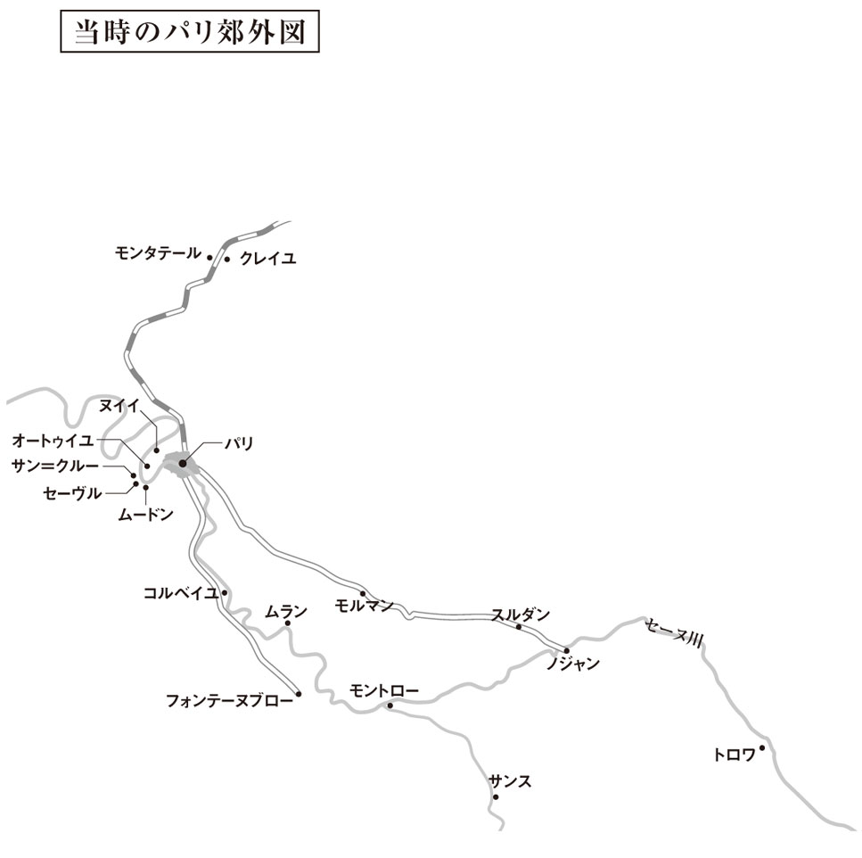
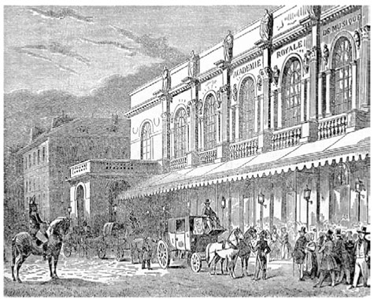
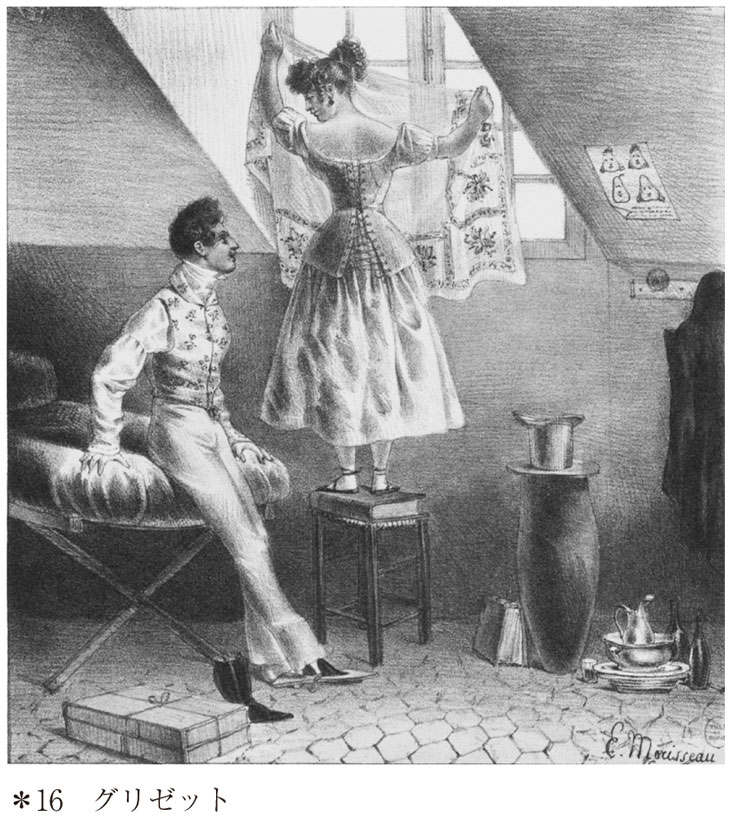
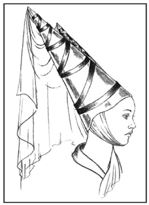
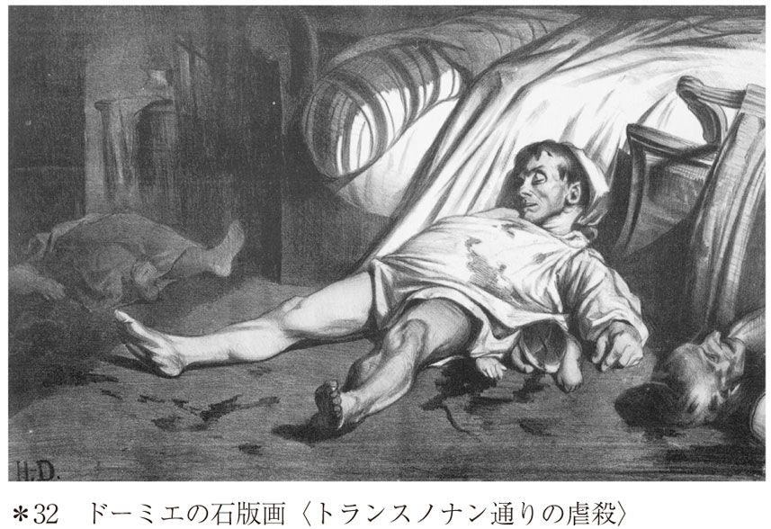

| 感情教育（上） (光文社古典新訳文庫) | |
| フローベール | |
| (2014) | |
感情教育（上）
フローベール
太田浩一訳
Title: L'ÉDUCATION SENTIMENTALE
1869
Author: Gustave Flaubert
訳者まえがき
初期作品をべつにすれば、フローベールの手がけた長篇小説としては計五編が知られています。そのうち、同時代のフランスを背景とするいわゆる「現代小説」となると、実質的なデビュー作である『ボヴァリー夫人』、未完に終わった『ブヴァールとペキュシェ』、そして本書『感情教育』の三作品があります。いずれの小説も、読者に特別な知識を要求するものではありませんが、『感情教育』は一八四八年の二月革命を作品のクライマックスに据え、当時の政治的・社会的状況、風俗、時代思潮を精確に、また活きいきと描いた歴史小説としての側面を有していることに注意しなければなりません。フランス革命の勃発した一七八九年からおよそ百年にわたって、フランスは世界史上まれに見る激動の時代を経験しました。この激動期のなかでも、二月革命はほぼその中間点に位置するとりわけ重要な出来事と言っていいでしょう。本書を読むうえでの一助となることを願って、巻末に簡単な年表を付けておきました。いわばその補足として、フランス革命から小説冒頭の一八四〇年にいたる、波瀾に富んだフランス史の流れをまず概観してみることにします。
周知のように、一七八九年七月十四日、監獄を兼ねていたバスティーユの要塞を群衆が襲撃し、これを攻略したことがフランス革命の一応の出発点とされています。この大革命によって、カトリックと王権とが結びついた絶対王政が打倒され、ブルジョワジーを中心とする勢力が社会の中枢を占めることになります。一七九二年には国民公会が発足し、なんとか共和政の実現をみるのですが、反革命の旗印のもとに集結した諸外国との戦争や、議会の主導権をめぐる各党派のはげしい争いがつづきます。ジロンド派を追い落として権力を掌握したモンターニュ派は、さらにその内部における権力闘争の激化によって、いわゆる恐怖政治の悲劇を招きます。国民公会は解散し、あらたに総裁政府が発足しますが、これまたきわめて不安定な体制でした。
こうした革命期の混乱に終止符を打ったのが、コルシカ島出身の軍人、ナポレオン・ボナパルトです。国内の反乱の鎮圧や、イタリア戦線での司令官として功績がみとめられ、着々と権力の座を上りつめて、ついには一八〇四年、皇帝として即位します。皇帝ナポレオンは、中央集権的な行政・財政機構を整備したり、のちにナポレオン法典と呼ばれる民法典を公布したりして、フランス革命の継承者たる姿勢を鮮明にしますが、同時に、ヨーロッパ諸国に革命理念を伝播することにも意欲を燃やしました。ナポレオンの率いるフランス帝国は拡大の一途をたどったものの、各国との「革命戦争」も激化します。一八一二年のロシア遠征の失敗、翌年のライプツィヒの戦いでプロイセン・オーストリア・ロシアを中心とする連合軍に敗北を喫したことで、ナポレオンは退位を余儀なくされます。その結果、一八一四年五月、イギリスに亡命していたブルボン家のルイ十八世が呼び戻され、ふたたびフランスに国王が誕生するのです（第一王政復古）。
フランス革命による旧体制の崩壊以降、こうして共和政、帝政、王政と、フランスの政治体制はめまぐるしく変動しますが、その後も政変があいつぎ、革命とその反動のくりかえしは止むことがありません。皇帝の座に返り咲いたナポレオンですが、復位もわずかな期間（「百日天下」）に終わり、セント ヘレナ島へ流刑の身となります。亡命貴族の多くが帰還し、ふたたびルイ十八世が王座に就くと（第二王政復古）、その後を継いで大貴族や大土地所有者の支持をうけた過激王党派のシャルル十世が国王に即位し、革命以前の社会へ回帰しようとする動きがいっそう強まります。こうした露骨な反動的政策にたいする不満が嵩じて、一八三〇年には七月革命が勃発します。その結果、ブルボン家による復古王政は崩壊することになりますが、革命の中心勢力の熱望した共和政は実現をみませんでした。事態収拾の主導権を握った立憲王党派によってもたらされたのは、ブルボン家にかわってオルレアン家のルイフィリップをあらたな国王に戴く、立憲君主制だったからです。
ヘレナ島へ流刑の身となります。亡命貴族の多くが帰還し、ふたたびルイ十八世が王座に就くと（第二王政復古）、その後を継いで大貴族や大土地所有者の支持をうけた過激王党派のシャルル十世が国王に即位し、革命以前の社会へ回帰しようとする動きがいっそう強まります。こうした露骨な反動的政策にたいする不満が嵩じて、一八三〇年には七月革命が勃発します。その結果、ブルボン家による復古王政は崩壊することになりますが、革命の中心勢力の熱望した共和政は実現をみませんでした。事態収拾の主導権を握った立憲王党派によってもたらされたのは、ブルボン家にかわってオルレアン家のルイフィリップをあらたな国王に戴く、立憲君主制だったからです。
いささか長くなりましたが、フランス革命からルイフィリップ即位までの歴史を駆け足でたどると、ざっと以上のようになります。『感情教育』の冒頭に記された一八四〇年という年代は、七月王政がスタートしてちょうど十年の歳月が流れたことを示しています。政治的・宗教的にリベラルな「市民王」として民衆から歓呼の声で迎えられたルイフィリップですが、その統治にたいしては、このころから次第に国民の不満が高まっていました。
七月王政はブルジョワ的価値観に立脚した君主制で、ブルジョワ王政とも呼ばれています。社会の支配層を形成していたのは大地主、大商人、大実業家などですが、政治の主導権を握っていたのは（本書に登場するダンブルーズ氏のような）金融資本と結びついた大ブルジョワジーであると言われています。しかし、イギリスに遅れをとった産業革命がこの時期に本格的に進展し、中小の産業資本家層がめざましい成長を遂げます。こうした中小ブルジョワの人びとは、少数の大ブルジョワによる支配にたいして不満を募らせていました。また、産業革命の進行とともにあらたな社会問題も浮上します。農村から都市部への人口の流入、労働環境の悪化、貧困層や犯罪の増加などです。一八四〇年代に、サンシモン、フーリエらによる初期社会主義の思想が喧伝され、プルードン、ルイ・ブランらの著作があいついで出版されて、「社会主義」が社会改革の有効な理論として認識されはじめるのも、そうした社会的危機が背景にあったからだと考えられます。
七月王政の末期には、大物政治家と高級官僚が絡んだ汚職事件が次つぎに露見したり、経済危機が勃発したりして、社会不安が増大します。フランス各地で暴動があいつぎ、首都でも選挙権の拡大をもとめる声がしだいに高まっていきます。なかでも「改革宴会」と呼ばれる運動は重要です。政治集会を禁じた法の網の目をくぐるように、会食の形をとった選挙法改正と議会制度改革をめざす集会で、当初は正統王党派・オルレアン派の左派議員やブルジョワの有権者を中心とするサロン的な集いでした。ところが、急進的共和派や社会主義者、それに参政権のない一般市民も参加するようになると、急速にフランス各地に波及し、しだいに大衆運動的な性格を強めていきます。二月革命の引き金となったのも、パリの当時の十二区で予定されていた改革宴会が政府によって禁止されたことでした。
あえて小説の内容に触れることなく、『感情教育』の第一部と第二部の背景をなす歴史的・社会的状況を略述してみました。ここまで、小説はとりたてて波瀾に富んだ展開をみせるわけでもなく、幾分まだるい印象を受ける読者もいるかもしれませんが、しばらくの間、辛抱強く読みすすめていただくことを願っています。第三部の１章は小説のなかでも異例の分量が充てられています。七月王政の崩壊から第二共和政の成立、そして六月蜂起にいたる二月革命の顚末が、その歴史的現場に立ちあった作者の体験をもとにつぶさに描かれていて、後世の歴史家からも高い評価を受けているほどです。二月革命の歴史的意義やその後の経過についてはのちに解説で触れることにして、最後に、第三部の残りの章について、ひとこと申し添えておくことにしましょう。２章、３章、４章と小説の叙述は徐々にスピードを増していく感があり、とりわけ５章の後半に入ると、物語は息もつかせぬテンポで展開し、まるでべつの小説を読むような錯覚すらおぼえるほどです。最後の６章、７章は分量的に少ないこともあり、ひと息に読み終えてしまった読者は、もの足りない思いをするのではないでしょうか。
ともあれ、これから『感情教育』の大洋に乗りだす読者が、つつがなく航海を終えることを祈ってやみません。

イラスト・地図作成／株式会社ウエイド
感情教育（上）
─ある青年の物語─
第一部
１
一八四〇年九月十五日、朝の六時ころ、パリのサンベルナール河岸で、出発まぢかのヴィルドモントロー号がもくもくと煙を吐きだしていた。
乗客たちが続ぞくと息せききってやってきた。大樽、ロープ類、洗濯物の入ったかごなどが通行のじゃまになり、声をかけられた船員たちは返事もしない。身体と身体がぶつかりあう。左右の外輪覆い（＊１）のあいだに荷物がうずたかく積まれていく。そうした喧騒も、鉄板のすきまから吹きだす蒸気の音にかき消され、あたり一面が白っぽい靄で覆われた。船首では出発をつげる鐘がずっと鳴りどおしだ。
ようやく船は動きだした。倉庫、資材置場、工場のたちならぶ両岸が、まるで幅ひろい二本のリボンをひろげたように、どんどん後方に遠ざかっていく。
十八歳になる長髪の青年がひとり、挿絵入りの詩集を小脇にかかえ、舵の近くにじっと立っている。名も知らぬ鐘楼や建物を朝靄ごしにながめていたが、やがてサンルイ島、シテ島、ノートルダム大聖堂をなごり惜しげに見わたした。ほどなくしてパリが見えなくなると、青年は深いため息を洩らした。
この青年、フレデリック・モロー氏は大学入学資格試験に合格したばかりで、ノジャンシュルセーヌ（１）の家に帰るところだった。法律をやりにまたパリにでてくるまで、ふた月ほど故郷で退屈な日々をおくらねばならない。母親から必要なだけの旅費をもらい、ル・アーヴルの伯父に会いに行かされた。息子のため、母親はその遺産に期待をかけている。ル・アーヴルからはきのうもどったばかりだった。パリに滞在できない腹いせに、せめてできるだけ遠回りをして帰郷することにしたというわけだ。
船内のざわめきも静まった。乗客たちはそれぞれの席に身をおちつけていた。蒸気機関のまわりで立ったまま暖をとる者もいる。煙突からゆっくりとしたリズムで、あえぎにも似た音をたてながら、もうもうと黒煙がたちのぼる。銅器具のうえを小さな水滴が流れおちていく。内部の小さな振動が甲板につたわり、両側の外輪がいきおいよく回転して水を打っていた。
川の両側が砂地になった。ときおり筏とすれちがった。そのたびに船の波をうけ、筏は大きく揺れうごく。かと思うと、帆のない小舟にひとり坐って釣りをしている男もいる。やがて周囲にただよっていた霧が晴れ、太陽が顔をだした。セーヌの右岸につらなる丘が徐々に低くなり、べつの丘が、こんどは左手のもっと近いところに現れた。
その丘には樹木が茂っていて、イタリアふうの屋根をいただく低い家々がちらほら見える。どの家にも、まあたらしい塀で仕切られた傾斜した庭、鉄格子の門、芝生、温室があった。肘をつくのにちょうどいい高さのテラスには、ゼラニウムの鉢が等間隔にならんでいる。乗客のなかには、こうした閑静でしゃれた住宅を見て、自分もこうした家を一軒持ちたいと思う者もいた。上等のビリヤード台やボートを手にいれ、好きな女とともに、さもなければなにか夢をはぐくみながら、生涯そこで暮らせたらどんなにいいことか。船旅のものめずらしさに浮きたって、だれしも口が軽くなっていた。ひょうきん者は早くも軽口をたたいているし、歌っている者も少なくない。みんな上機嫌になり、小さなグラスに酒がつがれていく。
フレデリックは、やがてパリで住む部屋のこと、戯曲のプラン、絵の題材、自分を待ちうけている恋のことなどをぼんやり考えていた。自分は幸福にあたいする人間なのに、どうしてその幸福がなかなか訪れないのだろう。フレデリックは憂いにみちた詩句を口ずさんだ。甲板を足早に進んで鐘のある船首のあたりまできた。すると、乗客や船員の輪のなかに、ひとりの男の姿が目にとまった。百姓女を相手にしきりにおせじをふりまき、女の胸にかかった金の十字架を手でもてあそんでいる。髪の縮れた、見るからに元気そうな四十がらみの男で、黒いビロードのモーニングはがっしりとした体軀をつつんではちきれんばかりだ。薄地亜麻のワイシャツにはふたつのエメラルドが光り、白い幅広のズボンの裾から、青い図柄の入った、風変わりな赤いロシア革のブーツがのぞいている。
フレデリックがそばにきても、男はさほど気にかけるふうはない。ときおり顔を向けては、目くばせをおくってきたりする。周囲の人びとにだれかれかまわず葉巻をふるまったりしていたが、やがてこうした連中とのおしゃべりにも飽きたとみえ、おもむろに歩きだした。フレデリックはあとについていった。
まずは煙草の話からはじまり、煙草のあれこれについてひとくさり語りあうと、ごく自然に話題は女のほうに向かう。赤いブーツの男は青年にいろいろ助言をした。持論を展開し、さまざまなエピソードを紹介しては、自分の例をひきあいにだして語りつづけた。いかにも道楽者らしい気さくさを感じさせながらも、その口調にはどこかしら温かみがある。
男は共和政の支持者だった。各地を旅行したことがあり、劇場、レストラン、新聞社の内情につうじていた。著名な芸術家のことごとくと知り合いで、かれらを気やすくファーストネームで呼んだりもする。フレデリックが将来の計画をうちあけると、男は激励のことばをかけてくれた。
ところが、男はそこで話を中断し、船の煙突をじっと見ていたかと思うと、早口でなにやら複雑な計算をつぶやいた。「一分間にピストンがこれだけ運動するわけだから、となると一回ごとに......」その答えがでると、こんどはあたりの景色をほめはじめた。こうして仕事のことを忘れていられるのは嬉しいとも言った。
フレデリックはある種の尊敬の念をおぼえ、どうしても男の名を知りたくなった。男はひと息に答えた。
「ジャック・アルヌー。モンマルトル大通りで〈工芸美術〉という店をやっています」
金モール入りの制帽をかぶった使用人がやってきて、男に言った。
「下へいらしてください。お嬢さまがむずかっておいでで」
男は行ってしまった。
〈工芸美術〉は絵を売買する店で、絵画新聞も発行していた。フレデリックはその店の名を地元の書店でなんどか目にしたことがある。かなり大判のパンフレットに、ジャック・アルヌーの名前が麗々しく記されていた。
真上から太陽が照りつけて、マスト周辺の鉄製の索具どめや甲板の手すり板、そして川面をきらめかせていた。川の水が船首で切りわけられるや、ふた筋の澪となって川辺の牧草地のほうまでひろがっていく。川の湾曲したあたりにさしかかっても、目に入るのは、あいかわらず色あせたポプラの並木ばかり。野原を見わたしたところで、人影ひとつない。いくつもの小さな白い雲がぽっかりと空に浮かび、そのまま動こうとしない。あたりにけだるい雰囲気がただよい、心なしか船足がのろくなり、乗客たちの顔つきもいっそうくすんで見えた。
一等席の乗客は、有産階級の数人をのぞけば、あとは妻子をつれた工員や店員ばかりだった。この当時は、ことさらみすぼらしい服装で旅行したものだった。古ぼけたトルコ帽や色あせた帽子をかぶった者、事務などの仕事ですりきれた安っぽい黒服や、店で着古してボタンの覆いのとれてしまったフロックコートを着た者がほとんどだ。折り襟つきのチョッキの胸もとから、コーヒーのしみのついたキャラコのシャツをのぞかせている者もちらほら見うけられる。ぼろネクタイに模造金のピンが刺してあったり、縫いつけられたアンダースティラップ（２）がラシャの上履きに留められていたりする。ごろつき風の男が二、三人、革ひものついた竹のステッキを手に、あたりを横目でうかがっていたり、父親たちが目をまるくしてなにかを尋ねたりしていた。立ったまま、あるいは荷物のうえに腰をおろして話しこんでいる者もいる。隅のほうで眠っている者、なにかを食べている者もいる。甲板には、胡桃の殻、葉巻の吸いさし、洋梨の皮、紙にくるんでもってきたハム類の食べかすなどがちらかっていた。仕事着姿の家具職人が三人、売店のまえに陣どっている。みすぼらしい身なりのハープ弾きが楽器に肘をついて休んでいる。ときおり、ボイラーに石炭を投げこむ音、歓声や笑い声が聞こえてくる。船長はブリッジを歩いて左右の外輪覆いのあいだをひっきりなしに往復していた。自分の席にもどるため、フレデリックは一等席の仕切り柵を押し、猟犬をつれたふたりのハンターに道をあけてもらった。
一瞬、まぼろしがたち現れたのかと思った。
その女性はベンチの中央にひとり腰をおろしていた。というより、その人の投げかける視線がまぶしくて、ほかの人の姿が目に入らなかったのだ。まえを通りすぎようとしたとき、女性は顔をあげた。フレデリックは思わず身をすくめた。少し先まで行き、ようやくその女性を横から見ることができた。
大きな麦わら帽をかぶり、帽子につけられたピンクのリボンが風にあおられ、ひらひらと背後にはためいていた。まんなかで分けた黒い髪は、長い眉の端をふちどり、ずっと下のほうまで流れるようにつづいて、卵形の顔をやさしく包みこんでいるかのようだ。小さな水玉模様の入ったあかるいモスリンのドレスが、多くのプリーツを見せながら裾をひろげている。なにか刺繡をしているところだった。まっすぐのびた鼻すじ、顎、そして全身が、青い空を背景にくっきりと浮かびあがって見えた。
女性がずっとおなじ姿勢でいるので、自分の所作をごまかすため、フレデリックはその場をなんども行ったり来たりした。やがて、ベンチに立てかけてある女性の日傘のすぐそばに立ち、川に浮かぶボートをながめるふりをした。
小麦色の、これほどつややかな肌は見たことがない。これほど心をそそる身体の線も、陽光に透きとおって見えるほどの繊細な指も。なにか新奇なものでも目にするかのように、フレデリックは茫然と裁縫かごを見つめていた。なんという名前で、どこに住んでいるのだろう？ どのように暮らし、どんな人生をおくってきたのか？ この人の部屋にある家具を、身につける衣服のすべてを、さらにはつきあっている人たちを知ることができないものか。肉体を所有したいという欲望すら、より切実な欲求のもとに、際限のない、胸ぐるしいまでの好奇心のなかに消えうせてしまった。
頭にスカーフを巻いた黒人の女が、もうそれほど幼くはない女の子の手をひいてやってきた。女の子の目が涙でぬれているところをみると、目をさましたばかりなのだろう。その女性は少女を膝に抱きあげた。「お利口にしなくてはだめ。もうじき七歳になるんでしょ。聞きわけのない子は嫌いですよ。あんまりわがままを言うものじゃないわ」そう聞いて、フレデリックは嬉しかった。なにかあらたな発見をし、掘りだしものでも手に入れたような気分だった。
この人はアンダルシアの出身ではないかと思った。あるいは植民地の生まれかもしれない。あの黒人女も植民地の島からつれてきたのではあるまいか。
菫色の縞の入った長いショールが、背後の真鍮で覆われた船べりに掛けてあった。洋上で、湿気の多い晩、あの人はしばしばこのショールで身体をつつみ、足を覆い、それにくるまって寝たことだろう。そのショールが、縁飾りの重みで少しずつ滑って、いまにも川に落ちようとしている。フレデリックは大急ぎで駆けつけ、ショールをおさえた。女性は礼を言った。
「ありがとうございます」
ふたりの目と目が合った。
「おーい、そろそろおいで」アルヌー氏が階段の雨よけの下から叫んだ。
マルト嬢が駆けより、アルヌーの首にしがみついて、口ひげをひっぱった。ハープの音が響きわたると、少女は演奏しているところを見たがった。ほどなくして、黒人女につれられてハープ弾きの男が一等席に入ってきた。それがもとモデルをしていた男だと気づいて、アルヌーは気やすく話しかけ、一同はあっけにとられた。やがてハープ弾きは長髪を肩のうしろにかきあげ、両腕をのばしてから、おもむろに演奏を始めた。
それは東洋風の恋歌で、短刀、花、星などが歌詞にでてくる。ぼろ着をまとった男は朗々と歌いつづけた。蒸気機関の騒音でときおり横槍が入るので、男はますます力をこめて楽器をかき鳴らす。弦がうちふるえ、金属的な音色はすすり泣きにも似て、誇りをうちくだかれた恋のなげきのようだ。川の両岸は、汀のあたりまで木々が枝を垂らしている。一陣の涼風が吹きわたった。アルヌー夫人はぼんやりと遠方をながめていた。音楽がやむと、夫人はまるで夢からさめたように、しきりに目をしばたたいた。
ハープ弾きの男がおずおずと歩みよってきた。アルヌーが小銭をさがしていると、フレデリックは男の帽子のうえに手をのばした。てれくさそうに開いた手から、一ルイ金貨［一ルイは旧二十フランに相当］をそこに落とした。夫人をまえにしているから、見栄をはって大枚のほどこしをしたというわけではない。夫人とともに祝福を分かちあいたいという思いに、ほとんど宗教的といってもいい気持に駆られてのことだった。
アルヌーが先に立ち、下で食事をしようと親切に声をかけてくれた。フレデリックは昼食はすませたばかりだと答えたものの、じつのところひどく腹がへっていた。財布には一サンチームの金も残っていなかったのだ。
やがて、下の船室に入るだけなら不都合はあるまいと思いなおした。
ブルジョワ連中がいくつかの円テーブルをかこんで食事をしているところで、ボーイがひとり、そのあいだを動きまわっている。アルヌー夫妻は部屋の右手奥にいた。フレデリックは手ぢかの新聞をとりあげると、ビロード張りの長椅子に腰をおろした。
モントローへ着いたら、夫妻はシャロン行きの乗合馬車に乗るつもりだという。ひと月ほどかけてスイスを旅行するとのこと。アルヌー夫人は、子どもに甘すぎると言って夫をなじった。アルヌーが妻の耳もとでなにごとかをささやいた。夫人が顔をほころばせたところをみると、お追従でも口にしたのだろう。そのうちアルヌーは席を立ち、わざわざ妻の背後にまわって、窓のカーテンを閉めてやった。
真っ白に塗られた低い天井が強烈な陽ざしを照りかえしている。正面にいる夫人のまつげの影まで、フレデリックははっきり見ることができた。夫人はグラスを口にはこび、指でパンを小さくちぎっていた。細い金鎖で手首にとめられた瑠璃のロケットが、ときたま皿にあたって音をたてた。もっとも、周囲の人間のだれひとりとして夫人を気に留めているようすはない。
ときおり、円窓から、そばを通る小型船の横腹が見えた。汽船に横づけして、乗客の送迎をおこなう船だ。そのたびに、食卓に就いていた人びとは窓のほうへ身をかがめ、川沿いの土地の名を口ぐちに言いあった。
アルヌーは料理に不満を言いたてていた。勘定書がくるとたっぷり難癖をつけ、とうとう負けさせてしまった。それから青年を誘い、グロッグ（３）を飲みに船首へ向かった。だが、フレデリックはすぐにテントの下の席にひき返してしまった。そこにはアルヌー夫人ももどっていた。夫人は灰色の表紙の薄手の本に読みふけっている。ときどき口もとをほころばせたかと思うと、たちまちよろこびの色がその顔にうかんだ。夫人の読みふけっている本の作者が、フレデリックにはねたましかった。夫人の姿に見入っていると、ふたりを隔てる深淵がますます越えがたいものに思えてくる。もうじき別れなければならないのだ。再会の見込もなく、ひとこともことばをかけてもらえず、あの人の心に思い出のひとつも残すことができないままに。
右手には平野がひろがっていた。左手は牧草地がなだらかに丘までつづき、その丘にはぶどう畑、胡桃の林、緑にかこまれた製粉所が見える。その先には、いく筋かの小道がのびて、空にとどかんばかりの白い岩肌に、ジグザグ模様を描いている。あの人の腰に腕をまわし、あの人の声を聞き、あの人のかがやく瞳に見つめられながら、あの丘へのぼることができたら。ドレスの裾に、黄ばんだ落ち葉をつけたまま歩く、あの人といっしょに！ 船はいつでも停めることができるのだから、ふたりで降りてしまえばいい。だが、この造作もないように思えることが、それこそ太陽を動かすくらいむずかしいことなのだ！
しばらくすると、四角い小塔のある、とがった屋根の城館が見えてきた。城の正面には花壇がひろがっていた。たちならぶ菩提樹の巨木がさながら黒い天蓋のようで、そのしたに並木道がつうじている。フレデリックはこの道を行く夫人の姿を思いえがいた。そのとき、玄関の階段の、プランターに植えられたオレンジの木と木のあいだに、若い男女が姿を現した。だが、じきにそれも見えなくなってしまった。
近くでアルヌーの娘が遊んでいた。フレデリックがキスしようとすると、少女は女中のうしろに隠れてしまった。ショールを押さえてくださったかたに失礼ですよ。そう言って、母親がたしなめた。暗に話のきっかけをつくってくれようとしているのだろうか。
《やっと話しかけてくれるのかな？》とフレデリックは思った。
さほど時間もない。どうしたらアルヌー家に招待してもらえるだろう。これといって名案もうかばぬまま、秋景色を話題にして口火をきってから、こう言いそえた。
「もうじき冬ですね。舞踏会や晩餐会にはおあつらえむきの季節でしょう」
だが、アルヌーは荷物の整理にかかりきりだ。シュルヴィルの河岸が見えはじめ、ふたつの橋が迫ってきた。船は製鋼所に、ついで低い家並みに沿ってすすんだ。岸にはタールを入れる大鍋や、材木の切れ端が見える。子どもたちが側転をしながら砂地を走りまわっている。セーターを着た男の姿が目にとまると、フレデリックは大声で呼びかけた。
「急いでくれ」
船が到着した。乗客の人込みのなかにやっとアルヌーを見つけることができた。握手をかわしながら、アルヌーが言った。
「では、ごきげんよう」
岸に降りたつと、フレデリックはふりかえった。夫人は舵の近くに立っていた。思いのたけを込めて、じっと夫人を見つめた。だが、なにごともなかったかのように、夫人はその場を動こうとはしない。使用人があいさつしても、フレデリックはうわの空だった。
「どうしてここまで馬車をよこさないんだ？」
老人はしきりに弁解した。
「気がきかないなあ！ 金をくれよ」
フレデリックは宿屋で食事することにした。
十五分ほどすると、たまたま通りかかったような顔をして、乗合馬車の発着所へ行ってみたくなった。ひょっとしたら、またあの人と会えるかもしれない。
《会ったところでどうなる？》すぐにそう思いなおした。
やがて、フレデリックを乗せた軽装四輪馬車（＊２）が出発した。馬車をひく二頭のうちの一頭は、母親の所有する馬ではない。収税吏のシャンブリオン氏から借りたもので、それを持ち馬とならべてつないでいた。使用人のイジドールは、前日に家を発って夕方までブレで休息し、モントローで一泊していたから、馬たちは元気いっぱいで足どりも軽快だった。
刈り入れを終えた畑がはてしなくひろがっていた。街道の両側は並木の列にふちどられ、小石の山（４）がつづいている。そのうちに、ヴィルヌーヴサンジョルジュ、アブロン、シャティヨン、コルベイユなど、今回の船旅でとおった土地のことが、少しずつ心によみがえってきた。その記憶がとても鮮明なので、さほど気にかけなかったこまごまとしたできごとや、より心に沁みる些細な事実をまざまざと思いうかべることができる。ドレスの裾のフリルのしたから、あの人の足がのぞいていた。栗色の、ほっそりした絹のブーツを履いていた。夫人の頭上にかかる亜麻のテントはまるで大きな天蓋のようで、へりに下がる小さな赤い房飾りがいつまでもそよ風にゆれていた。
夫人はロマンチックな書物のヒロインにどこか似ていた。なにひとつとして、あの人につけくわえたいものはないし、取りさってしまいたいものもない。自分をとりまく世界がにわかにひろがったように思える。夫人こそ、万物がそこに収斂する輝かしい一点だった。馬車にゆられながら、なかば閉じかけた目を雲間に向けて、フレデリックははてしない夢想に陶然と身をゆだねていた。
ブレに着くと、馬が餌を食べおわるのを待たずに、ひとり先に立って街道を歩きだした。アルヌーはあの人を「マリ」と呼んでいた。フレデリックは大声で「マリ！」とさけんだが、その声はむなしく宙に消えていった。
西の空が一面燃えるような緋色に染まった。切り株畑の中央にうずたかく積みあげられた麦束の山が、巨大な影を投げかけている。遠くの農家から犬の鳴き声が聞こえてきた。フレデリックはわけもなく不安になり、身を震わせた。
イジドールの馬車が追いつくと、フレデリックがかわりに御者席につき、手綱をとった。いままでの弱気は消えうせていた。なんとしてもアルヌーの家に入りこみ、夫妻と親交をむすぶのだと、決意をかためた。おもしろそうな店だし、アルヌーにしても好感のもてる人物だ、となるとその後のなりゆき次第では......。そう考えると、にわかに顔が紅潮し、こめかみが脈うってきた。フレデリックは馬に鞭をいれ、手綱をゆすった。馬が勢いよく駆けだしたので、老人の御者はくりかえし注意をあたえねばならなかった。
「もっとゆっくり、ゆっくりやってくだせえ！ これじゃあ、じきに馬がへたばっちまう」
しだいにフレデリックはおちつきをとり戻し、ようやく使用人のことばに耳をかたむけた。
家では、みんな首を長くしてお帰りを待っている。いっしょに馬車で迎えにいきたいと、ルイーズさんからも泣きつかれたくらいだ。
「だれだい、ルイーズさんって？」
「ほれ、ロックさんとこのお嬢さんでさあ」
「ああそうか、忘れていたよ」フレデリックは気のない返事をした。
やがて二頭の馬は疲れはててしまい、足をひきずるようにして歩きだした。サンローラン教会の鐘が九時をつげたとき、ちょうどアルム広場にある母親の家のまえに到着した。野原に面した庭のある広びろとした家は、この土地きっての声望家であるモロー夫人に、さらなる畏敬の念をもたらしていた。
夫人は、いまでは家系が絶えてしまったものの、貴族の旧家の出だった。両親に命じられるまま平民の男と結婚したのだが、妊娠中に夫は決闘で命をおとしてしまい、かたむきかけた資産だけがのこされた。週に三度は客を迎え、ときおり豪勢な夕食をふるまったりもする。もっとも、ろうそくの数はあらかじめ決めてあったし、小作料が入るのをいつも心待ちにしていた。まるでそれが悪癖ででもあるかのように、夫人はこうした不如意を隠していたのだが、おかげで堅実な女性と見なされていた。とはいえ、貞淑な暮らしをしてはいても、ことさら淑女ぶることもなく、気むずかしい人間だと思われたこともない。わずかな慈善であっても、多額の施しをしたようにうけとられた。使用人のえらびかた、娘たちのしつけから、ジャムの製造法にいたるまで相談にのってやり、司教さまが教区を巡回するおりには、いつも夫人の家に宿泊した。
モロー夫人は息子の将来に大きな望みをかけていた。政府の悪口を聞きたがらないのも、先ざきへの配慮があったからだ。さしあたって息子にはうしろ楯が必要だ。あとは本人の能力しだいで、国務院の評議官にも、大使にも、大臣にもなることができる。サンスのコレージュ［高等中学校］での息子の成績からすれば、期待をかけるのも当然だ。なにしろ、優等賞をもらったくらいなのだから。
フレデリックが客間に入るや、一同は歓声をあげながら席を立ち、抱擁で迎えた。そして椅子や肘かけ椅子を動かして、暖炉のまわりに半円形にならべた。さっそくガンブラン氏はラファルジュ夫人（５）の件をどう思うかと意見をもとめた。当時、世間を騒がせていた訴訟であるから、たちまち議論は白熱した。モロー夫人がいさめたものの、ガンブラン氏は不服だった。法曹をこころざす若者にとって、これほど有益な議論があるだろうか。そう言いのこして、気を悪くしたガンブラン氏は客間を出ていった。
そうした不作法も、いかんせんロックのおやじの友人のことだから、驚くにはあたらない。ロックのおやじの名前がでたことから、つい最近、ダンブルーズ氏がラ・フォルテル（６）の地所を手に入れたことが話題になった。ところが、収税吏がフレデリックをわきにつれてゆき、ギゾー氏の近著（７）についてどう思うかと尋ねた。だれもがフレデリックの近況を知りたがった。伯父についても、ブノワ夫人はことばたくみに聞きだそうとする。あの親切な伯父さまはお元気ですの？ 最近ちっともお便りがないんですってね。たしか、アメリカに伯父さまの遠縁のいとこにあたるかたがいらしたはずだけど？
料理女中がやってきて、食事のしたくができましたと告げた。一同はさすがに遠慮して、ひきあげていった。食堂でふたりきりになると、さっそく母親は声をひそめて訊いた。
「で、どうだったの？」
年老いた伯父はとても温かく迎えてくれたものの、腹づもりのほどはわからない。
モロー夫人はため息をついた。
《あの人はいまごろどこにいるだろう？》フレデリックはそんなことを考えていた。
乗合馬車は走りつづけている。おそらくショールにくるまって、座席の布に美しい寝顔をおしあてていることだろう。
親子が寝室にあがりかけたとき、十字架の白鳥館（８）のボーイが一通の手紙をとどけにきた。
「なんなの？」
「デローリエがぼくに会いたいって」
「ああ、あの例のお友だちね」さげすむような薄笑いをうかべながら、モロー夫人は言った。「まったく、よりによってこんな時刻に！」
フレデリックはどうしようかと迷っていたが、友情には勝てなかった。帽子を手にとった。
「とにかく、あまり遅くならないようにね」そう母親が言った。
１ パリから南東へ百キロほど。シャンパーニュアルデンヌ地方の、セーヌ川沿いの町。
２ 足の裏にかけてズボンをぴんと張るためのベルト。
３ ブランデーやラム酒を砂糖湯で割った飲み物。
４ およそ一メートル四方の小石の山を街道沿いに置き、道路の整備に役だてた。
５ 夫を砒素で毒殺したとされ、当時大きな評判になっていた。コレーズの重罪裁判所で有罪の判決がくだったのが、一八四〇年の九月二日。つまり、この小説の冒頭の日付から十三日まえのことである。
６ パリから西南へ五十キロほどの村。
７ フランソワ・ギゾー（一七八七～一八七四年）は歴史家・政治家で、一八四〇年以降、二月革命（一八四八年）まで外相・首相を務めた。近著とはおそらく一八四〇年刊行の『ワシントン』のこと。
８ 実在するレストラン兼ホテル。現在もノジャンで営業中。
＊１ 外輪のある蒸気船（左図）
＊２ 軽装四輪馬車とそのほかの馬車は左図に。
２
シャルル・デローリエの父親はもと歩兵部隊の大尉で、一八一八年に除隊し、ノジャンにもどって結婚した。妻の持参金で執達吏の職を買ったものの、生活にはほとんど余裕がなかった。長年の不遇で気むずかしくなり、戦争で負った古傷の痛みに悩まされ、おまけにあいかわらず皇帝ナポレオンの逝去を悼んでいて、やるかたない憤懣を周囲にぶちまけていた。デローリエほど、よく父親から殴られた子どももいないだろう。それでも子どもは屈しなかった。見かねた母親が仲裁にはいろうとしても、子どもとおなじ目に遭うのがおちだった。やがて大尉は息子を事務所に閉じこめ、一日じゅう机に釘づけにして、証書を筆写させた。そのため、デローリエの右肩は、左の肩にくらべ目立って怒り肩になってしまった。
一八三三年、裁判所長の勧告で大尉は事務所を売ることになった。妻は癌で亡くなった。しばらくディジョンで暮らしていたが、やがてトロワで兵役代理の斡旋屋を開業した。息子シャルルのために半給費生の資格をえると、サンスのコレージュへ入れた。ここで、シャルルはフレデリックと知り合った。もっとも、フレデリックが十二歳であるのにシャルルは十五歳だったし、性格や生まれがちがいすぎていたことがふたりを隔てていた。
フレデリックは自分の整理だんすのなかに、ありとあらゆる備品をそろえていた。しゃれた品物、たとえば化粧用具一式なども入っていた。朝寝坊をしたり、燕をながめたり、戯曲を読むのが好きだった。家庭のぬくもりをなつかしみ、学校生活がいやでたまらなかった。
執達吏の息子にとって、学校は居心地がよかったようだ。とても熱心に勉強したので、二年目を終えたところで第三学級（９）へ編入することができた。けれども貧しさのゆえか、もともとけんか早い性分なのか、いつも暗黙の敵意にとりまかれていた。ある日、中等級の校庭のまんなかで、用務員の男から乞食の子呼ばわりされたことがあった。デローリエは猛然と相手に襲いかかり、のど首を締めあげた。三人の自習監督が止めにはいらなかったら、用務員を殺していたかもしれない。フレデリックは感じ入って、両腕でかれを抱きしめた。この日以来、ふたりは親友になった。上級生のしめす友情が年少者には誇らしく思えたのだろうし、年長者にしても下級生から献身的な友情をよせられて嬉しく思っていた。
デローリエの父は休暇中も息子を学校にのこしたままにした。たまたまプラトンの翻訳をひもといたところ、すっかり夢中になった。それ以来デローリエは哲学の勉強に没頭し、たちまち長足の進歩をとげた。若わかしい力をかたむけ、自由を得た知性のもたらす自負心にささえられて取りくんだためだろう。デローリエはジュフロワ、クーザン、ラロミギエール、マルブランシュ（10）、スコットランド学派（11）の著作など、図書室にある本をことごとく読破した。本を手に入れるため、鍵を盗まねばならなかったことすらあった。
フレデリックはこれほど生まじめに余暇を過ごしたわけではない。地元のトロワロワ街で柱に刻まれているキリストの系図を模写したり、大聖堂の正面扉口を写生したりした。中世を題材とした戯曲のあとは回想録に興味をひかれ、フロワサール、コミーヌ、ピエール・ド・レトワール、ブラントーム（12）などを読んだ。
こうした書物を読んでいるうち、フレデリックの脳裡にさまざまなイメージが焼きつき、自分も書いてみたいと思うようになった。いつの日か、フランスのウォルター・スコット（13）になるのだと野心を燃やした。いっぽうデローリエは、このうえなく広範な適用性をもつ、壮大な哲学の大系を思いえがいていた。
休み時間は校庭で、大時計のしたに刻まれた教訓の碑文をまえに、ふたりはそうしたことを語りあった。礼拝堂では、聖ルイ像の正面で声をひそめて話す。墓地を見おろす寄宿舎の寝室でも、夢を述べたてる。遠足の日ともなれば、みんなのうしろで肩をならべて歩きながら、際限もなくおしゃべりに熱中した。
コレージュをでたら、将来なにをするのかも話題にのぼった。まずは大旅行にでる。フレデリックが成年に達すれば、遺産からいくらか先どりできるはずだから、その金をあてればいい。旅行のあとはパリにもどり、いっしょに勉強するのだ。もちろんかたときも離れずに。──そして勉強の息ぬきに、繻子を張りめぐらした婦人用居間で貴婦人たちと愛しあう。さもなければ、名うての遊び女たちを相手に乱痴気さわぎを演じるのもいい。こんなふうに夢中になって希望を語りあったあとには、きまって懐疑が首をもたげてくる。ひとしきり陽気なおしゃべりに熱中したところで、ふたりははたと口をつぐんでしまうのだ。
夏の夕刻、ぶどう畑ぞいの砂利道や野なかの街道を長らく歩きまわって、夕陽をあびた麦畑が波うち、アンゼリカ（14）の香りが大気にただようころ、ふたりはなんとはなしに胸がつまってあおむけに横たわり、ぼんやり陶然とした気分にひたっていた。ほかの生徒たちはワイシャツ姿で陣とり遊びをしたり、凧あげをしたりしている。自習監督の呼び声がした。いく筋もの小川のながれる庭園をぬけ、古びた壁が影をおとす大通りをとおって帰途に就く。ひと気のない通りを行くと、靴音がひびいた。鉄格子の門がひらき、階段をのぼってゆくと、ふたりはさんざん放蕩にふけったあとのように、もの悲しい気分になった。
生徒監の評するところでは、ふたりは顔をあわせればたがいを褒めそやしていた。けれども、フレデリックが高学年になって勉強したのは、友のはげましがあればこそだったのである。一八三七年の夏休みには、フレデリックはデローリエをともなって自宅に帰った。
モロー夫人はこの青年が気にいらなかった。人並みはずれた大食らいで、日曜のミサに出席するのをことわったし、言うことが共和主義者じみている。おまけに、どうやら息子をいかがわしい場所へつれていった形跡すらある。ふたりの交際は監視された。その結果、友情はますます強まった。翌年、デローリエが学校を卒業し、パリで法律の勉強をすることになったとき、別離は耐えがたかった。
フレデリックはパリで友と再会するつもりでいた。ふたりが会うのは二年ぶりだった。くりかえし抱擁しあうと、もっと気がねなく話のできる場所をもとめて、ふたりは橋のうえに行った。
デローリエの父親のもと大尉は、現在ヴィルノクス［ノジャン近郊の町］でビリヤード屋をいとなんでいる。管理している亡妻の遺産を息子から要求されると、顔を真っ赤にして怒り、それ以来生活費の仕送りすらぷっつりと絶ってしまった。けれども、将来デローリエは法学部の教授のポストに就きたいと思っていたし、また金に不自由していたこともあって、トロワの代訴士（15）の事務所で主任書記として当面はたらくことになった。切りつめた暮らしをすれば四千フランくらいは貯めることができる。それだけの金があれば、たとえ母親の遺産がまったくあてにできなくとも、三年ほどは思うぞんぶん勉強できるはずだし、いずれいい職にありつけるかもしれない。そんなわけで、パリでいっしょに暮らすというかつての計画はひとまず見送らねばなるまい。
フレデリックはうなだれた。最初の夢はこうしてついえてしまった。
「元気をだせ」デローリエは言った。「人生は長い。ぼくらはまだ若いんだ。かならずパリに行くからな！ よし、これできまりだ」
デローリエは友の両手をとって揺すり、気をまぎらせるため、あれこれ旅行について尋ねた。
フレデリックはこれといって話すことはなかった。だが、アルヌー夫人のことを思いだすと、たちまち沈んだ気持は消えうせてしまった。一種の照れもあって夫人の話はしなかった。そのかわり、アルヌー氏については、口にしたことば、態度物腰、それに交友関係までつつみ隠さずしゃべった。そうした人物とのつきあいは大切にするよう、デローリエはつよく勧めた。
ちかごろフレデリックはなにも書いていない。文学にかんする考えかたが変わってしまったのだ。いまではなによりも情熱を重要視している。ウェルテル、ルネ、フランク、ララ、レリア（16）、それにもっと凡庸な作中人物にまで、フレデリックは熱をあげていた。心の動揺を表現するには音楽しかないように思えると、交響曲をつくることを夢みた。かと思うと、事物の外観に心をひかれたときには絵筆をとってみたくなる。それでも、いくらか書きためた詩がないわけではない。それを披露したところ、デローリエはすばらしいと称讃したが、もっと聞かせてくれとは言わなかった。
デローリエにしても、もはや哲学にうちこんでいるわけではなかった。目下の関心は社会経済学とフランス大革命にある。いまや二十二歳の長身の青年となり、やせていて、口は大きく、毅然としたおももちをしている。その晩は、安ものの毛織のパルトー（17）を着ていた。靴は埃にまみれて真っ白だった。フレデリックに会うため、わざわざヴィルノクスから歩いてきたのである。
使用人のイジドールがやってきた。もうお帰りになるよう、奥さまから言いつかっている。風邪をひくといけないからと、外套もあずかってきているとのことだった。
「もうちょっといいだろう」デローリエは言った。
それから、ふたりは運河と川にはさまれた細長い島に架かる二本の橋のうえを、端から端まで歩きつづけた。
ノジャンのほうに向かってすすんでいると、いくらか傾きかげんの軒なみが正面に見えてきた。右手には水門を閉ざした木造の水車小屋があり、そのうしろに教会がのぞいている。左手は川沿いに灌木の生け垣がつづいている。生け垣の向こうは菜園になっているが、よく見えない。パリの方角に目を転じると、街道が一直線にのび、夜霧にかすんで牧草地が遠方までひろがっている。静まりかえった夜で、ほの白い明かりがさしていた。しめった木の葉のにおいがたちのぼる。百歩ほどさきに牧草地へ引く水のとり入れ口があり、そこから落ちる水が、闇のなかの波音のように、大きなここちよい音をひびかせていた。
デローリエが足をとめて言った。
「善良なる人びとは、こうして枕を高くして眠っているわけか。おかしなもんだ。まあ、見ているがいい。すぐに八九年の大革命が再来する！ 憲法だの、憲章だの、ああいった小細工や噓っぱちは、もううんざりだ。ああ、新聞でもいいし、演壇でもいい、ぼくの自由になるものがあれば一石を投じてやるんだが。そうはいっても、先だつものは金だからな。まったくいやになるよ。しがない居酒屋の息子の身ではね。生活費をかせぐのに日々汲々としているんだから」
デローリエはうなだれて唇を嚙んだ。薄い衣服のしたで、ぶるぶると身を震わせている。
フレデリックは友の肩に自分の外套の半分をかけてやった。ふたりは外套にくるまり、たがいの腰に腕をまわしながら、ならんで歩いた。
「ひとりで暮らせというのかい、パリで？」フレデリックは言った。友人の苦境を思うと、またしても胸がつまった。「恋人でもいれば、そりゃあ話はべつだが......おや、どうして笑うんだ？ 恋愛こそが天才の糧であり、天才に不可欠な環境みたいなものじゃないか。度はずれた感動がなければ、崇高な作品は生まれない。もっとも、そうした理想の女性をこれから探そうなんて気はないけど。だいいち、そんな人が見つかったところで、ぼくなんか相手にしてくれるはずがない。どうやら不運な星のもとに生まれたらしい。ぼくは宝石をかかえたまま、一生を終えるんだろう。それが模造品なのか、本物のダイヤモンドなのか、わからないが」
舗道に人影がさしたと思ったら、こう声をかけられた。
「こんばんは」
声の主はゆったりした褐色のフロックコートを着た小柄な男だった。ハンチングをかぶり、庇のしたから尖った鼻さきがのぞいている。
「ロックさんですか？」フレデリックが言った。
「はい、さようで」と声が返ってきた。
ノジャンに住むこの男は、川べりの菜園にしかけた狼用の罠を調べてきたところだと語った。
「やっぱり、もどってらしたんですね。けっこうなことで。娘から聞いておりましたよ。いかがです、お変わりありませんか？ しばらくこちらにいらっしゃるんでしょうな？」
それだけ言うと、フレデリックのすげない応対に気を悪くしたのか、男はたち去ってしまった。
モロー夫人はこの男とはほとんどつきあいがなかった。ロックのおやじは女中を妾にして暮らしており、選挙管理人であり、ダンブルーズ氏の資産管理人であるにもかかわらず、地元での人望はうすかった。
「あの銀行家のダンブルーズ氏かい、アンジュー通り（18）に住んでいる？」とデローリエが尋ねた。「だったら、今後の身のふりかたについては、こころえているだろうな？」
ふたたびイジドールから横槍がはいった。フレデリックをどうしても連れかえるよう言いつかってきた。帰りが遅いので、奥さまが心配していらっしゃる。
「わかった、わかった、すぐ帰るよ。外泊なんかしないさ」デローリエが言った。
イジドールが行ってしまうと、こうつづけた。
「いいかい、ロックのおやじにたのんでダンブルーズ家に紹介してもらうんだ。金持の家に出入りするくらい有益なことはないぞ。燕尾服や白い手袋をもっているんだから、せいぜい利用しなけりゃ。ああいう上流社会に顔をだしておくべきだよ。いずれぼくもつれていってくれ。なにしろ大金持なんだ、うまく気にいられるようにしろよ。もちろん夫人にもな。いっそ愛人になっちまえばいい」
フレデリックはよしてくれと言った。
「いや、そいつが世間の常道ってもんだろう。『人間喜劇』のラスティニャック（19）を忘れたのか。なあに、きっとうまくいくさ」
デローリエには全幅の信頼をおいていたから、フレデリックの心は揺れうごいた。アルヌー夫人のことは忘れて、というよりも友の忠告をアルヌー夫人にあてはめてみることによって、フレデリックは思わずほほえみを洩らした。
デローリエは言いそえた。
「まだ言っておきたいことがある。試験にはかならず合格しろ！ 肩書きはあるにこしたことはないからな。それから、きみのお気にいりの詩人たち。カトリックだか悪魔派だか知らないが、あんな連中はきっぱり見かぎることにしたよ。やつらの思想ときたら、せいぜい十二世紀どまりじゃないか。なにもそう悲観的になることはないぞ。偉人たちだって、世にでるまではもっと苦労しているだろう。そのいい例がミラボー（20）だ。それに、そんなに長いこと離れているわけじゃない。いずれ、うちのいかさまおやじから金を吐きださせてやる。じゃあな、もう帰らなければならない時間だ。ところで、夕食代を払わなきゃならないんだが、百スー［五フラン。一スーは五サンチームに相当］ほどもってないか？」
フレデリックは昼間イジドールからもらった金の残り、十フランを手わたした。
左岸の、橋から四十メートルばかりのところに軒の低い家があり、そこの屋根窓に煌々と明かりがともっていた。デローリエはそれを認めると、帽子をとり仰々しく言った。
「ヴィーナスよ、天界の女王よ、ごきげんよう！ げに、貧すればこそ節操を知るか。例の一件じゃあ、われわれはずいぶん顰蹙をかったもんだなあ、まったく！」
こうして、ふたりだけが知っているあるできごとをほのめかすと、ふたりは愉快になった。往来で、いっしょに大笑いした。
それから宿屋へもどって支払を済ますと、デローリエは市立病院まえの十字路までフレデリックを送っていった。そして長らく抱きあったのち、ふたりの友は別れた。
９ コレージュ［高等中学校］は八年制で、第八学級に始まり、進級するたびに数字をさかのぼっていく。デローリエは努力して、ほぼ年齢相応の学級におちついたということだろう。
10 テオドール・ジュフロワ（一七九六～一八四二年）、ヴィクトル・クーザン（一七九二～一八六七年）、ピエール・ラロミギエール（一七五六～一八三七年）、ニコラ・ド・マルブランシュ（一六三八～一七一五年）はいずれもフランスの哲学者で、唯心論もしくは折衷主義的な思想傾向が共通している。なお、折衷主義とは古今のさまざまな思想から真と思える部分を引きだし、それらを一つの体系に統一しようとする考え方で、クーザンが提唱した。
11 スコットランド常識哲学学派のこと。その代表者リード、スチュアートの著作の翻訳と紹介はジュフロワによっておこなわれた。
12 いずれも中世末期から十七世紀にかけての年代記や回想録の作家。
13 スコットランド出身の小説家・詩人（一七七一～一八三二年）。ロマン主義の時代、フランスに歴史小説の大流行をもたらした。
14 セリ科の多年草。その強い香りから中世ヨーロッパでは魔女の霊草として知られていた。
15 当時、弁護士はもっぱら法廷での弁論を担当した。訴訟手続きの進行は代訴士が受けもっていた。
16 いずれもフローベールが青年期に愛読したロマン主義文学の主人公。作者は順に、ゲーテ、シャトーブリアン、ミュッセ、バイロン、ジョルジュ・サンド。
17 前ボタン、ポケットのついた比較的短めのオーバーコート。
18 現在のパリ八区。マドレーヌ教会にほど近い。
19 バルザックの『ゴリオ爺さん』『幻滅』などに登場する野心的な人物。「人間喜劇」は、バルザックがのちに自分の著作全体に付与した総題。この場面の時代は一八四〇年に設定されているが、この時点では「人間喜劇」というタイトルはまだ公にされていない。フローベールの思いちがいだろう。
20 フランス革命期の政治家・革命家（一七四九～九一年）。貴族の出ではあるが、父親に反撥して軍籍に入り、除隊後、無軌道な生活を送ってたび重なる獄中生活を余儀なくされた。
３
二カ月後のある朝、フレデリックはコックエロン通り（21）で乗合馬車をおりると、ただちに肝心の訪問にとりかかることにした。
たまたまうまいぐあいに事がはこんだ。ロックのおやじが書類の束をもって訪れ、ダンブルーズ家まで届けてほしいとたのんだのだ。おまけに、この同郷の青年についての開封の紹介状までそえてある。
モロー夫人はロックのこうしたやりかたにびっくりしていた。フレデリックは内心の歓びをおし隠した。
ダンブルーズ氏の本名はアンブルーズ伯爵であった（22）が、一八二五年以来、貴族の身分からも関係党派からもしだいに距離を置き、実業界に身を転じた。あらゆる役所の動静に耳をかたむけ、事業という事業に手をだし、虎視眈々と好機をうかがいながら、ギリシア人のように抜け目なく、オーヴェルニュ人さながらによくはたらいて、うわさによればついに巨万の富を築いたのである。そればかりか、レジオンドヌール勲章の四等受勲者、オーブ県の県会議員兼下院議員の肩書きをもち、貴族院議員になる日も近いと言われている。おまけに面倒見もよかったから、助成金やら、勲章やら、煙草小売店の認可やらをたえず願いでて、大臣から煙たがられていた。そんなわけで時の政府には反感をいだいており、中道左派の支持にかたむいていた。その妻、魅力的なダンブルーズ夫人はよくモード新聞に登場し、いくつもの慈善団体を主宰していた。公爵夫人たちにうまくとりいり、貴族街（23）の反感をやわらげ、ダンブルーズ氏もいずれ後悔して貴族諸氏のために尽力する日もくるだろうと思わせていた。
ダンブルーズ邸に向かいながら、フレデリックは不安を感じていた。
《礼服を着てくるべきだったかな。ひょっとしたら来週の舞踏会に招待されるかもしれない。さて、どんなことばをかけてくるだろう？》
ダンブルーズ氏もいまでは一般市民にすぎないのだと思うと、フレデリックはおちつきをとり戻し、軽装二輪馬車からいきおいよくアンジュー街の歩道に降りたった。
ふたつある表門のいっぽうから入ると、中庭をよこぎり、石段をのぼって、色大理石をしきつめた玄関に足を踏みいれた。
つややかな化粧漆喰の高い壁に沿って、赤い絨緞をしいた直進階段が左右に設けられていた。絨緞は一段ごとに細い銅の棒で縁を留められている。階段のはじまるあたりにバナナの鉢植えが置かれ、ビロード張りの手すりのうえに大きな葉を垂らしている。二台の青銅製の枝つき大燭台から、丸い磁器の火屋がいくつも細い鎖で吊りさげられていた。大きく開いた暖房用の通気口からむっとする空気がながれてくる。聞こえてくるのは、大時計のかちかちと時をきざむ音ばかり。その大時計は、玄関奥の武器飾りの下に置かれていた。
呼び鈴が鳴った。召使がやってきてフレデリックを小部屋に案内した。金庫がふたつあり、整理棚には書類入れがぎっしりつまっている。ダンブルーズ氏は部屋の中央にいて、巻きこみ式の蓋のついた机で、なにやら書きものをしていた。
ロックのおやじの紹介状に目をとおすと、ダンブルーズ氏はポケットナイフで書類をくるんだ布を切って開け、なかをあらためた。
ほっそりした身体つきのせいか、遠目にはまだ若く見えないこともない。だが、うすくなった白髪といい、弱々しい手足といい、なによりも異様なほど蒼白い顔色が健康の衰えを歴然と物語っていた。義眼よりもなおひややかな青緑色の目は、非情な活力をやどしている。頰骨が突きだし、節くれだった手をしていた。
ようやく立ちあがると、ダンブルーズ氏は共通の知人のこと、ノジャンの町のこと、学業のことなどを質問し、やがて一礼して青年を送りだした。フレデリックはさきほどとはべつの廊下をとおって館をでた。そこは中庭のはずれで、近くに馬車置場がある。
黒い馬を一頭つないだ青い箱型四輪馬車が、玄関の石段のまえに駐まっている。扉が開けられてひとりの婦人が乗りこむと、馬車はにぶい音をたてて砂地のうえを走りだした。
フレデリックは馬車から離れたところを歩いていたが、表門に着いたのは同時だった。門の幅はさほど広くなく、道をゆずらねばならない。若い女が馬車の小窓から身をのりだし、小声で門番になにやら話しかけた。女は菫色のマントをはおっていて、その背中しか見えない。だが、馬車の内部をのぞくと、畝織の青い布が張りめぐらされ、飾りひもや絹の房飾りでかざられていた。婦人用の衣服がわんさと積まれている。キルティングされた小箱のような車内からは、アイリスの香りがもれ、貴婦人の典雅な香気のようなものがかすかにただよってくる。御者が手綱をゆるめると、馬はいきなり車輪よけの隅石すれすれに走りだし、あっというまに馬車は見えなくなった。
フレデリックは目ぬき通り（24）を歩いて帰途に就いた。
ダンブルーズ夫人をもっとよく見ることができなかったのが心残りだった。
モンマルトル通りを少し過ぎたあたりでは、馬車がひしめいている。なにげなくそちらを見やったところ、ちょうど道の向かいに、こんな文字のきざまれた大理石の板が目についた。
ジャック・アルヌー
どうしてあの人のことがいままで思いうかばなかったのだろう？ そうだ、デローリエがよけいなことを言うからだ。フレデリックは店さきまで歩みよったものの、なかには入らず、あの人が姿を現すのを待った。
背の高い透明のガラス窓ごしに、小さな立像、デッサン、版画、カタログ、それに数点の「工芸美術」紙がたくみに陳列されているのが見えた。入口のドアには新聞の予約購読料が掲示され、中央に堂々と描かれた店主のイニシャルが彩りをそえている。大きな絵がなん枚も壁にかけられ、ワニスが光っている。店の奥に見えるふたつの戸棚には、磁器やブロンズ像や魅惑的な骨董品がずらりとならんでいる。戸棚と戸棚のあいだに小さな階段があって、そのつきあたりになめらかなウールのドアカーテンが垂れていた。古いマイセン磁器のシャンデリアがさがり、床に緑の絨緞をしきつめ、寄せ木細工のテーブルが一脚おかれた室内は、店舗というよりもむしろ客間のような印象をあたえていた。
フレデリックはしばらくデッサンをながめるふりをしていたが、さんざん迷ったすえ、ついに店に足を踏みいれた。
ドアカーテンをまくって店員が現れ、五時以降でないと主人は「店には」こないと言う。でも、なにかおことづけがございましたら......。
「いえ、出なおすことにします」フレデリックはおだやかに言った。
その後数日間は、住居さがしにかかりきりだった。そして、サンティアサント通り（25）にある家具つきの貸部屋の、三階の一室にきめた。
まあたらしい紙挟みを小脇にかかえ、フレデリックは初回の講義に出むいた。三百人ほどの若者が帽子を脱いで階段教室をうめつくし、赤いガウンをまとった老人が単調な声で講義していた。かさかさと紙にペンを走らせる音がひびく。この大教室にも、学校特有のほこりっぽい臭いや、似かよった教壇がある。そして、おなじような倦怠も！ それでも、二週間は講義に通いつづけた。けれども、民法はまだ第三条までいかないところで放りだしたし、ユスティニアヌスの『法学提要』は「法人間ノ基本的差異（26）」のところであきらめた。
期待していたよろこびはいっこうにやってこない。私営図書閲覧室（27）の本を読みつくし、ルーヴルの陳列品をひととおり見てまわり、なんどかつづけて劇場に足をはこぶと、あとはもう暇をもてあますばかりだった。
いままで経験したことのない雑事に追われ、いっそう気が重くなった。洗濯物をだすたびにいちいちその数をかぞえねばならないし、看護師のような風体のがさつな管理人をがまんしなければならない。この男は酒くさい息を吐きぶつぶつ言いながら、毎朝ベッドを直しにやってくる。雪花石膏製の置時計で飾られた部屋も気にいらなかった。仕切り壁がうすいので、隣室の学生たちがパンチ酒（28）をつくったり、笑ったり、歌ったりするのが聞こえてくる。
こうした孤独な暮らしに嫌気がさして、フレデリックはかつての級友のひとり、バチスト・マルチノンをさがした。サンジャック通りの賄いつき下宿にいることがわかり、訪ねていくと、石炭ストーブにあたりながら訴訟法にとりくんでいるところだった。
その向かいにはインド更紗の服を着た女がいて、靴下をつくろっていた。
マルチノンはいわゆる美男子を絵に描いたような男だった。背は高く、ふくよかな頰のととのった顔だちで、目は少しも落ちくぼんでおらず、青みがかった瞳をしている。父親は豪農で、ゆくゆくは息子を司法官にするつもりだった──そんなわけで、マルチノンはいまから謹厳に見せようと、頰から顎に輪のようにつらなるひげをたくわえていた。
フレデリックの悩みといっても、さだかな理由があるわけではなく、とりたてて不幸にみまわれたわけでもなかったから、いくら生活上のくりごとを聞かされてもマルチノンにはさっぱり理解できなかった。マルチノンはといえば、毎朝大学にでかけ、帰りがてらリュクサンブール公園を散歩し、夕方になるとカフェにたち寄って、おきまりの小カップのコーヒーを飲む。年に千五百フランの仕送りをうけ、このお針子の愛情につつまれて、すっかり幸福な気分にひたっているのだった。
《恵まれたやつだ！》フレデリックは心のなかでそんな嘆声を洩らした。
もうひとり大学で知り合いができた。ド・シジーという名門の子弟で、物腰のやさしさはまるで娘のようだった。
ド・シジー氏はデッサンに熱中していて、ゴシック美術が好みだった。つれだってサントシャペルやノートルダム大聖堂の見物にでかけたこともいくどかある。ところが、この青年貴族の気品ある外貌の裏には、しごく貧弱な知性が隠されていた。なんでもないことに驚き、つまらぬ冗談に大笑いする。あまりに無邪気なので、最初のうちフレデリックはおどけているのかと思っていたが、やがてほんとうに愚か者であることがわかった。
そんなわけで、腹を割って話のできる相手がひとりも見つからないまま、あいかわらずダンブルーズ家から招待状がとどくのを心待ちにしていた。
元日には名刺を送ってみたものの、なんの音沙汰もない。
また〈工芸美術〉へ行ってみることにした。
三度めに行ったとき、ようやくアルヌーの姿を目にすることができた。五、六人の男にかこまれてなにやら議論をしている最中で、こちらの挨拶にろくに答えてもくれない。フレデリックは気分を害した。それでも、なんとかしてあの人に会えないものかと思案をめぐらした。
まず思いついたのは、絵を値切るのにかこつけて、足しげく店に出入りすることである。ついで、「強く印象にのこる」記事でも書いて、投稿してみようかと考えた。そうしたことが交際のきっかけになるかもしれない。それとも、単刀直入にこちらの思いをうちあけるべきだろうか？ フレデリックは情熱的な文句にあふれ、熱烈な呼びかけをちりばめた十二枚ほどの手紙を書いてみたものの、すぐに破りすててしまった。結局なにもせず、なにひとつ試みなかった──うまくいかなかった場合を考え、踏みきることができなかったのだ。
アルヌーの店舗のうえの二階には三つの窓があり、毎晩あかりがともった。室内を行き来する人影のうち、ひとつはまちがいなくあの人だった。フレデリックはわざわざ遠方からでかけてきて、それらの窓をながめ、その影をじっと見まもった。
ある日、チュイルリー庭園で女の子の手をひく黒人女性とすれちがったとき、ふとアルヌー夫人の女中のことが頭にうかんだ。夫人もここにやってくることがあるはずだ。チュイルリー庭園をとおるたびに、ばったり出会うことを期待して胸が高鳴った。天気のいい日は、よくシャンゼリゼ大通りのはずれまで散歩をつづけた。
けだるげに幌付四輪馬車に腰をおろした女たちが、ヴェールを風になびかせて陸続とかたわらを通りすぎていく。馬はしっかりとした並足ですすみ、わずかでも馬車が揺れるとエナメル革の馬具がきしんだ。馬車はしだいにその数を増してゆき、ロンポワン［シャンゼリゼ大通りの中ほどにある円形交叉点］をすぎたあたりから速度をおとし、通りをうめつくした。馬のたてがみとたてがみが、馬車の角燈と角燈がいまにも触れあってしまいそうだ。御者の半ズボン、白手袋、扉の紋章のうえに垂れかかった毛皮の衣服のあいだから、あちらこちらで鋼鉄の鐙や、銀のくつわ鎖や、銅製の留め金がきらきら光って見える。フレデリックは遠い異国の地に迷いこんだような気がした。女たちの顔を見やっているうち、どことなく似かよったところがあると、ただちにアルヌー夫人の思い出が心によみがえった。これらの女たちにまじって、あの人がちょうどダンブルーズ夫人の馬車のような、小型の箱型四輪馬車に乗っているところを思いうかべた。──いつしか陽はかたむき、つめたい風がほこりの渦を巻きあげている。御者たちはネクタイに顎をうずめ、車輪はますます速く回転し、マカダム舗装の道路（29）がきしんだ。馬車という馬車が速歩でこの長い大通りをくだっていき、たがいに接触しそうになったり、抜きつ抜かれつしてはまた離れたりしているうち、コンコルド広場にでるとそれぞれの方向に走りさった。チュイルリー宮殿（30）の背後の空が青みをおびた薄墨色に染まっていた。庭園の樹木は、てっぺんが紫色をしたふたつの巨大なかたまりのようだ。ガス燈に火がともされた。セーヌ川は一面くすんだ緑に染まり、橋脚にあたって砕けた水が銀の波紋をひろげていく。
いつものように、フレデリックは一枚四十三スーの回数券で、ラ・アルプ通りの食堂に夕食をたべに行った。
古ぼけたマホガニーのカウンター、しみだらけのナプキン、うすよごれた食器類、壁に掛けられた帽子などを見くだすようにながめまわした。周囲にいるのは自分とおなじ学生たちだ。教授連やお互いの愛人の話をしている。教授たちがどうした！ 愛人など知ったことか！ 陽気にさわぐ学生たちを避けて、フレデリックはなるべく遅くやってくることにしていた。どのテーブルにも食べのこしが目についた。ふたりのボーイがくたびれて隅で居眠りをしている。がらんとした部屋に、調理場とカンケ燈（＊６）［石油またはオイルを使用するランプ］と煙草のにおいがたちこめていた。
食事を終え、ゆっくりと帰途に就いた。街燈が風にゆらいで、ぬかるみのうえに黄ばんだ火影を長ながと震わせている。傘を手にした人影が歩道のへりを通りすぎていく。石畳の道は滑りやすく、霧がおりていた。フレデリックの身体をつつむじっとりとした闇は、心の奥ふかくまで沁みこんでくるかのように思われた。
後悔の念がきざした。フレデリックはまた講義にでてみることにした。だが、講義の内容についてはまったく知識がないので、ごく初歩的なことにもとまどいをおぼえた。
『漁師の子、シルヴィオ』という題で、小説を書きはじめた。舞台はヴェネツィアで、主人公はフレデリック自身である。ヒロインはアルヌー夫人で、アントニアという名前にした。女を手にいれるため、主人公はなん人もの貴族を暗殺し、街の一部を焼きはらい、女の家のバルコニーのしたで歌をうたう。そのバルコニーでは、モンマルトル大通りの店で見たのとおなじ、ダマスク織の赤いカーテンがそよ風になびいているのだった。無意識に多くの思い出を下敷きにしていることに気づいて落胆した。そうなると、それ以上書けなくなり、ますます無聊に苦しんだ。
そこで、デローリエにたのんで、パリでいっしょに住んでもらおうと考えた。自分の二千フランの仕送りで、なんとかふたりでやっていけるだろう。こんな耐えがたい暮らしをつづけるくらいなら、どんなことでも辛抱できる。ところが、デローリエはまだトロワを離れるわけにはいかないという。なにか気晴らしでもすること、セネカルとつきあってみることを勧めてきた。
セネカルは数学の復習教師をしており、反骨精神にあふれた共和主義者で、デローリエによれば未来のサンジュスト（31）だという。フレデリックは、六階にある住居を三たび訪問したことがあるのだが、むこうからは一度も訪ねてこないので、それきり行くのをやめてしまった。
とにかく、なにか気晴らしがしたかった。オペラ座（32）の舞踏会にでかけてみたが、入口をくぐったとたん、浮かれさわぐ人の群にひるんでしまった。それに懐ぐあいも気にかかる。ドミノ（33）姿の女と夜食でもとったら、たいへんな出費を強いられて、とんでもない目に遭いかねない。
もっとも、恋人のひとりくらいは見つかるだろう。朝、希望に胸をふくらませてめざめることもあり、そんなときは媾曳にでもでかけるように念いりに身づくろいをして、パリの街をいつまでも歩きまわる。まえを行く女性や、むこうからやってくる女性を目にするごとに、《ああ、この人だ！》と心のなかでつぶやいては、そのたびに幻滅をあじわうはめになる。アルヌー夫人のことを思うと、ますます恋への渇望がつのった。ひょっとすると、こうして歩いているうちにもばったりでくわすかもしれない。話しかけるきっかけになればと、偶然のトラブルや、思いもよらぬ危機にまきこまれた夫人を救いだす場面を想像した。
そんなふうに、あいも変わらぬ倦怠と、いつしか身についた習慣がくりかえされているうちに、日々がすぎていった。オデオン座のアーケードのしたでパンフレットをめくったり、カフェに行って「両世界評論」誌（34）を読んだり、コレージュ・ド・フランス（35）の講堂に入って一時間あまり中国語や経済学の講義を聴いたりもした。デローリエには毎週長い手紙を書き、マルチノンと夕食をともにすることもあり、ときおりド・シジー氏と会った。
ピアノを借りて、ドイツ風のワルツを作曲したこともある。
ある晩、パレロワイヤル劇場に行ったところ、特別ボックス席に女づれのアルヌーを見かけた。あの人だろうか？ ボックス席のへりにある緑のタフタの帳に隠れてしまって、顔を見ることができない。ようやく開幕となり、帳が払われた。すらりとした、三十がらみの女性だった。容色は衰えかけているものの、笑うと厚めの唇のあいだからみごとな歯ならびがのぞいた。アルヌーとは親しげに話しているし、ときおり男の指を扇でたたいたりもする。やがて、いままで泣いていたみたいに瞼をいくらか赤くした金髪の娘がやってきて、ふたりのあいだに坐った。アルヌーは娘のほうに身をかがめるようにしてしゃべりつづけているが、娘は返事もしないでじっと聴いているばかりだ。フレデリックはなんとか女たちの素性を知ることができないものかと思った。どちらも、低い折り襟の、地味な色合いの衣服をつつましく着こなしている。
芝居が終わると、フレデリックはいそいで通路にでた。すでに人があふれていた。アルヌーは女ふたりに腕を貸し、先の階段を一段一段おりているところだ。
ふいにガス燈の明かりがアルヌーを照らしだした。帽子に喪章がついている。まさかあの人が亡くなったのではあるまいか？ そうした思いに苛まれ、翌日、フレデリックは〈工芸美術〉に駆けつけた。ショーウィンドーに飾ってあった版画の一点をあわてて買いもとめると、店員の若者にアルヌー氏は元気かと尋ねた。
店員は答えた。
「ええ、お元気ですよ」
フレデリックは顔を蒼くしながら、かさねて訊いた。
「で、奥さまは？」
「奥さまもお変わりありませんが」
フレデリックは買った版画を持ちかえるのを忘れてしまった。
冬が終わった。春になるといくらか気も晴れて、試験の準備にとりかかった。ぱっとしない成績ではあったが、とにかく試験を終えてノジャンに帰省した。
母親からあれこれ言われるのがいやなので、デローリエに会いにトロワヘは行かなかった。新学年がはじまるとまえの住居をひきはらい、ナポレオン河岸（36）に二部屋を借りて、自分で家具を備えつけた。ダンブルーズ家から招待される見込もなくなっていたし、アルヌー夫人への熱い思いも薄れはじめていた。
21 ヴィクトワール広場とパリ商品取引所のあいだにある通り（一区）。かつて乗合馬車の発着所があった。
22 原文では、アンブルーズ伯爵はle comte d'Ambreuse。伯爵を意味するle comte の語をあえて外し、貴族の称号であるd'の部分をAmbreuse とくっつけて、ブルジョワふうにダンブルーズDambreuse と名乗ったということ。
23 フォブール・サンジェルマンのことで、現在のパリ七区にあった。なお、フォブールは市外街区とも訳され、中世以来の城壁の外側に拡大していった地区を指した。十九世紀中葉のパリは全十二区で、そのなかにフォブール・サンタントワーヌ、フォブール・サンマルタンなど、いくつかのフォブールがあったが、貴族層の居住地であるフォブール・サンジェルマンを除き、おおむね場末に位置していた。
24 マドレーヌ教会から現在のレピュブリック広場を経てバスティーユ広場にいたる環状大通りで、王政復古以来パリ随一の盛り場となった。レ・グラン・ブルヴァールとも称される。＊３
25 ソルボンヌの近くで、現在のパイエ通り（五区）。フローベール自身も学生時代ここに住んだことがある。
26 "Summa divisio personarum"。『法学提要』の第一章にある。
27 当時高価だった書籍や新聞・雑誌などを低料金で読ませる施設。室内での閲覧が原則であるが、オプションとして貸し出しも行った。十九世紀のなかばにその最盛期を迎えた。＊４
28 ブランデーやラム酒に、紅茶、砂糖、レモンなどを混ぜた飲料。
29 砕石を幾層にもしきつめ、ローラーで固めた道路。
30 カトリーヌ・ド・メディシスによって造営された王宮。この時代はルーヴル宮のドゥノン翼と連結されていた（リシュリュー翼にあたる部分は民家に遮られて未完成の状態）。一八七一年のパリ・コミューンのさい焼失した。＊５
31 フランス革命期の政治家（一七六七～九四年）。急進派に属し、恐怖政治の中心的人物。
32 当時のオペラ座は九区のル・ペルティエ通りにあった（シャルル・ガルニエのオペラ座が現在のオペラ広場に完成したのは一八七五年）。＊７
33 仮装舞踏会用のフードつきガウン。
34 一八三一年、フランソワ・ビュローズによって復刊され、当時もっともよく読まれた雑誌。最初は純然たる文芸誌であったが、のちに思想、科学、政治などもとりあつかった。
35 一五三〇年、フランソワ一世の命でパリに創設された高等教育機関。公開講座制をとる。
＊６ カンケ燈（左図）

４
十二月のある朝、訴訟法の講義をうけるために家をでると、サンジャック通りがふだんよりざわついているように思えた。学生たちがあちこちのカフェからとびだしたり、窓を開けはなして家から家へと呼びかわしている。商店主たちは歩道のまんなかに立って、不安げにあたりを見まわしている。鎧戸はことごとく閉まっていた。スフロ街までくると、パンテオンの周辺に大きな人だかりが見えた。
五人から十二人ほどの若者たちが思い思いに群をつくり、たがいに腕をくみながらねり歩いては、あちらこちらにたむろしているより大人数の集団へと接近していく。広場の奥では鉄柵のそばで仕事着姿の男たちがなにやら長広舌をふるっている。そのいっぽうで、三角帽を斜にかぶり、両手を背にまわした警官たちが、舗石に頑丈なブーツの音をひびかせながら、壁ぎわを行ったり来たりしている。だれもがひどく驚いたようすで、曰くありげな顔をしている。明らかになにかが起こるのをまちうけているのだが、あえて質問を発することができずにいるのだ。
フレデリックのそばに、金髪の感じのいい青年がいた。口ひげと小さなとがった顎ひげは、さながらルイ十三世時代の洒落者のようだ。この青年に騒動の理由を訊いてみた。
「さあね、あの連中だってわかっちゃいないだろう」と若者は答えた。「ああいうのが昨今の流行というわけだ。とんだお笑いぐさだな！」
そう言って、大声で笑いだした。
国民衛兵（37）の内部で選挙制度改革の請願書の署名をつのったり、ユマンによる課税調査（38）がおこなわれたり、ほかにもさまざまな事件が勃発して、ここ半年ほど、パリではわけのわからぬ騒擾がつづいている。しかもそれが頻発するものだから、もはや新聞でもとりあげなくなったほどだ。
「ぶざまなうえに精彩を欠いているな」となりの青年はつづけた。「つらつら惟るに、貴殿よ、われらも堕落したものではないか！ うるわしきルイ十一世（39）の御世は言うにおよばず、かのバンジャマン・コンスタン（40）の時世ですら、学徒らにさらなる反骨の気概あり。当節の学生たるや、羊のごとく穏和にして、益体なしの鈍物ばかり。いやはや、どいつもこいつも、さながら食料品屋のおやじのごとき手合いだ！ 見たまえ、あれが学生連盟と称するやからだよ」
青年はロベール・マケールを演じるフレデリック・ルメートル（41）よろしく、おおげさに両腕をひろげた。
「学生連盟よ、汝にわが祝福をあたえん！」
そう言ってから、酒屋の車輪よけの隅石のそばで牡蠣の殻をひっくりかえしている屑屋に、だしぬけに声をかけた。
「おい、きみも学生連盟の一員かね？」
老人は醜い顔をあげた。ごま塩のひげのあいだから赤らんだ鼻が覗き、酔っぱらってとろんとした目つきをしている。
「いや、ちがうな。どうやら《集会とあらば顔をだして両手いっぱいの金貨をばらまく、あの悪党づらをした連中のひとり》とみた。いざ、ばらまきたまえ、わが長老よ、ばらまきたまえ！ アルビヨン［グレート・ブリテン島の古称］の財宝にて、われを買収するもよし。アー・ユー・イングリッシュ？ アルタクセルクセス（42）の贈り物とあらば、どうしてことわったりするものか。ちょいとばかり関税同盟（43）の話でもしようじゃないか」
だれかがフレデリックの肩にふれた。ふりむいたらマルチノンで、真っ青な顔をしている。
「なんてこった、また暴動だ！」そう言って、深いため息を洩らした。
マルチノンは巻きぞえをくうことを懼れて、愚痴をこぼした。とりわけ仕事着姿の男たちが気にかかる。あの連中は秘密結社に属しているらしいから。
「秘密結社なんてあるのかね？」口ひげの青年が言った。「そんなものは、むかしからあるデマにすぎんよ。ブルジョワどもをびくつかせるために政府がでっちあげたのさ」
マルチノンは警察に聞かれるとまずいから、もっと小声で話すようにとうながした。
「まだ警察なんかを信頼しているのかい？ そもそもぼくにしてからが、どうして警察のスパイじゃないとわかるんだ？」
そして、曰くありげな顔で相手を見つめたから、マルチノンは動揺してすぐさま冗談だとわからなかったほどだった。群衆に押され、いつのまにか三人は小階段のうえまで来ていた。その先の通路はあたらしい階段教室へとつうじている。
ほどなくして人の群がふたつに分かれて道ができたかと思うと、帽子を脱ぐ者もいる。高名なサミュエル・ロンドロ教授に敬意を表したのだ。厚手のフロックコートをまとった教授は、銀縁の眼鏡を片手にかかげ、喘息のために息を切らしながら、ゆっくりとした足どりで講義に向かった。教授は十九世紀法学界の大御所のひとりで、ザカリエやルードルフ（44）のライバルと目されていた。ちかごろ貴族院議員の顕職に就いたとはいえ、その態度や言動にはいささかの変化も見られなかった。清貧に安んじているのは人の知るところで、だれからも深い尊敬の念をよせられている。
そうこうするうち、広場の奥から喚声があがった。
「ギゾー［註７参照］を倒せ！」
「プリチャード（45）を倒せ！」
「売国奴を倒せ！」
「ルイフィリップ（46）を倒せ！」
群衆が動きだして、中庭への出入口に押しよせた。出入口は閉まっていて、教授は先へすすむことができなくなり、階段のまえで立ち止まった。やがて三段の階段の最上段にその姿がみとめられた。なにやら話しているものの、喧騒にかき消されてその声はとどかない。さきほどまでは愛されていたこの人も、いまでは人びとの憎しみを買っていた。当局側の人間と見なされたのだ。教授がなにか発言しようとするたびに、怒号で迎えられた。学生たちについてくるように身振りでうながしたが、あちこちから罵声がとんだ。教授はあきれたように肩をすくめ、通路へと入っていった。これ幸いとばかり、マルチノンも姿を消していた。
「臆病者め！」とフレデリックが言った。
「用心ぶかいのさ」青年が応じた。
群衆がいっせいに拍手喝采した。教授が退散したことはかれらの勝利にほかならなかった。窓という窓から物見だかい人びとが顔をのぞかせている。『ラ・マルセイエーズ』を歌いだした者もいれば、ベランジェ（47）に会いに行こうと言いだした者もいる。
「ラフィット（48）の家に行こう！」
「シャトーブリアン（49）のところがいい！」
「いや、ヴォルテール（50）の家だ！」とブロンドの口ひげの青年が声をはりあげた。
警官たちは人込みのなかを苦労しながら巡回し、できるだけ穏やかに呼びかけている。
「さあ、解散、解散。ひきあげなさい！」
群衆のなかから叫びがあがった。
「人殺しどもを倒せ！」
九月の騒乱（51）以来よく耳にするようになった罵声である。口ぐちにその罵声がくりかえされた。群衆は警官をやじり、口笛を吹いた。治安維持に努める警官たちの顔色が変わりはじめた。うちひとりは腹に据えかねたらしく、すぐそばまで寄ってきて面前でせせら笑っている小柄な若者に目をつけ、手荒く突きとばした。若者は五歩ばかり先の酒屋の店さきにあおむけに倒れた。周囲の人びとはあわててその場を離れた。だが、たちまちその警官も地面に投げとばされてしまった。ヘラクレスさながらの屈強な青年のしわざで、麻くずのかたまりのようなもじゃもじゃの髪が防水布のハンチングからはみだしている。
しばらくまえからこの青年はサンジャック通りの角に立ってようすをうかがっていたのだが、手にしていた大きな紙挟みを放りだすや、警官に向かって突進したのだった。いまは倒れた相手に馬乗りになって、その顔にパンチの雨をみまっている。仲間の警官たちが駆けつけた。めっぽう手ごわい青年で、とり押さえるにはどうしても四人を必要とした。警官ふたりが襟首をつかんで揺さぶり、もうふたりが両腕をひっぱって、さらに五人目が腰に膝げりをくらわした。警官たちはごろつき、人殺し、暴徒とののしった。若者は胸をはだけ、服をぼろぼろにしながらも、自分は悪くないと言いはっている。あんな子どもみたいな男が殴られているのを、だまって見ているわけにはいかない。
「おれの名はデュサルディエだ！ ヴァランサール兄弟商会に勤めている。クレリ通りにあるレース服飾店だ。紙挟みは？ おれの紙挟みはどこだ！」青年はくりかえした。「デュサルディエだ！......クレリ通りの。おれの紙挟み！」
やがて興奮がおさまったとみえ、青年は毅然としたおももちでデカルト通りの詰所へ引かれていった。おおぜいの人びとがぞろぞろとあとにつづいた。フレデリックと口ひげの青年もその店員ふうの若者のすぐうしろを歩き、若者の快挙に感服し、当局の横暴なやり口に憤慨していた。
すすむにつれて、群衆の数はしだいに減っていった。
ときおり、警官たちはにらみをきかせながらうしろをふりかえる。騒いでいた連中はもうすることがないし、物見だかい人びとも見物するものがなくなったので、じょじょに退散していった。すれちがう通行人のなかには、デュサルディエの顔をのぞき込み、大声で口汚くののしる者もいる。家の戸口に立つ老婆は、あれはパンを盗んだ男だとさえ言いはなった。こうしたいわれのない暴言を耳にすると、ふたりの青年はなおさら腹をたてた。ようやく詰所のまえに到着した。のこっているのは二十人ばかり。その連中も兵士の姿を見ただけですぐ逃げだしてしまった。
フレデリックと青年はたったいま留置された男の釈放を敢然と要求した。これ以上つべこべ言うと、おまえたちもいっしょに放りこむぞ。歩哨はそう言って脅した。ふたりは所長に面会をもとめ、自分たちの名前と法学部の学生であることをつげ、捕らえられた男はおなじ学部の学生だと主張した。
ふたりは、すすけた漆喰の壁ぞいに長椅子が四脚ならんでいるだけの、なんの飾りもない部屋にとおされた。奥の覗き窓があいた。デュサルディエのたくましい顔が現れた。蓬髪のあいだに、すなおそうな小さな目と先の角ばった鼻が見え、どことなく善良な犬の顔を思わせるものがある。
「われわれを憶えているな？」とユソネがことばをかけた。
口ひげの青年はユソネという名だった。
「えっ、でも......」デュサルディエは口ごもった。
「とぼけなくてもいい、おなじ法学部の学生じゃないか」
ふたりでいくら目くばせをしても、デュサルディエにはつうじない。じっと考えこんでいたかと思うと、いきなり声をあげた。
「おれの紙挟みは見つかったかな？」
フレデリックはがっかりして、天をあおいだ。すかさずユソネが応じた。
「ああ、きみの紙挟みか。講義ノートが入ってるやつだろう？ あったとも、だいじょうぶ、心配するな」
ふたりはなおも懸命に身ぶりでつたえようとした。デュサルディエは、ふたりが自分を助けにきたのだということをようやく理解し、ふたりを巻きぞえにしては悪いと思ったのか、それきり黙りこんでしまった。大学生という身分にまつりあげられ、あんな白い手をした若者たちと同列に見られることが気恥ずかしかったこともある。
「だれかに伝言でも？」フレデリックが尋ねた。
「いや、いいんだ。ありがとう」
「家族には？」
青年はうなだれたまま、答えなかった。デュサルディエは私生児だったのだ。返事がないのがふたりの友には不可解だった。
「煙草はあるかい？」フレデリックがかさねて訊いた。
デュサルディエは服をさぐり、ポケットの奥から砕けたパイプをとりだした。黒い木の柄に銀の蓋、それに吸口が琥珀という、すばらしい海泡石のパイプだった。
三年もまえから、使いこんだ逸品に仕上げるために意をそそいできたのである。火皿はいつもなめし革の袋にくるみ、できるだけ時間をかけて吸い、けっして大理石のうえに置いたりはせず、毎晩寝るときは枕もとに吊しておくという気のつかいようだった。そのパイプの破片を、いまデュサルディエは爪に血のにじむ手のなかでもてあそんでいる。顎を胸にうずめ、瞳をすえ、最たる道楽であったものの残骸に、なんとも言いようのない悲痛なまなざしをそそいでいた。
「葉巻でもどうだい？」ユソネがそうささやいて、葉巻をとりだそうとした。
言われるまえに、フレデリックは中身のつまった葉巻入れを覗き窓のへりに置いていた。
「さあ、とっておいてくれ。じゃあね、がんばれよ！」
デュサルディエはさしだされた二本の手にとびつくと、感きわまったように握りしめ、嗚咽で声をとぎらせた。
「え、なんですって？......くださるんですか......おれに！......」
感謝されるまえにふたりはそそくさと退散し、リュクサンブール宮まえのカフェ・タブレでいっしょに昼食をとることにした。
食事をしながら、ユソネはフレデリックに向かって、自分はファッション関係の新聞の仕事をしており、〈工芸美術〉の広告もつくっているとつげた。
「ジャック・アルヌーの店だろう？」フレデリックは訊いた。
「知り合いかい？」
「ああ、いや......いちど会ったことがあるんだ、たまたまね」
夫人に会うこともあるのかと、さりげなくユソネに尋ねてみた。
「ときどきね」とこのボヘミアンは答えた。
それ以上聞きだすことはできなかった。以来、フレデリックの生活のなかでユソネはとてつもなく重要な位置を占めることになった。昼食代はフレデリックが支払ったが、相手もそれに不服はないようだった。
ふたりはたがいに好感をおぼえた。住所を教えあうと、ユソネはフルリュス通り（52）までいっしょに行こうと熱心に誘った。
リュクサンブール公園のなかほどまでくると、アルヌーの広告を請けおっている青年はやおら息をつめ、おもいきり顔をしかめて、鶏の鳴き声をまねた。とたんに、周辺の雄鶏がことごとくコケコッコーと尾をひく鳴き声で応じた。
「いまのは合図さ」とユソネが言った。
ふたりはボビノ劇場ちかくの一軒の家のまえで足を止めた。家には小道が一本つうじている。両わきに金蓮花とスイートピーの鉢植えをおいた屋根裏部屋の窓から、若い女が姿を見せた。頭になにもかぶらず、コルセット姿で、軒樋のふちに両腕をついている。
「おーい、愛しい人。こんにちは、かわい子ちゃん」ユソネはそう言って、投げキスを送った。
足で柵をおし開け、ユソネは家のなかに消えた。
まる一週間、フレデリックはユソネからの連絡を待った。昼食の返礼を催促しているように思われたくないから、自分のほうから出むく気はなかったが、カルチエ・ラタン一帯をさがしてまわった。ある晩ようやくめぐりあうことができ、ナポレオン河岸の自分の部屋につれてきた。
話はつきず、ふたりは胸襟をひらいて語りあった。演劇界で富と名声をえることをユソネはねらっていた。軽喜劇を合作でいくつか手がけたものの、なかなか採用してもらえない。「プランは山ほどある」し、目下その歌唱の部分に手を入れているところだと言って、いくつかを歌ってみせた。やがて、棚にユゴーとラマルティーヌがそれぞれ一冊あるのを目にとめると、ロマン派を皮肉たっぷりにこきおろした。この手の詩人ときたら、良識もなければ、適確なことばづかいも知らない。そもそも、あんな連中はフランス人とは言えまい！ 自分のほうがよほどフランス語に精通しているとうそぶき、非のうちどころのないみごとな文章をとりあげては、お調子者でとおっている人間がまじめくさって芸術を論じるときに見せる、あの敵意にみちた厳格さと格式ばった学者趣味を発揮して、あら探しをするしまつだった。
お気にいりの作家をけなされて、フレデリックは気分を害した。この男とは絶交しようと思った。だったら自分の幸福がかかっている例のひとことを、この場できりだしてもかまうまい。この文学青年にアルヌー家に紹介してもらえまいかと尋ねた。
相手はあっさり承諾し、ふたりは翌日会うことにした。
ユソネは約束をまもらなかった。その後も三度つづけて約束をすっぽかした。ある土曜日の四時ころ、ひょっこりやってきた。だが、馬車に乗りこむと、まずテアトルフランセ［フランス国立劇場、コメディーフランセーズのこと］で停めさせ、ボックス席の予約券を買いに行った。洋服屋と婦人服の仕立屋のまえで馬車をおり、あちこちの建物の管理人のもとにたち寄っては置手紙を書く。ようやくモンマルトル大通りに着いた。フレデリックは店内を通りぬけて階段をのぼった。アルヌーは机のまえの鏡にフレデリックが映ったのをみとめ、書きものをつづけながら肩ごしに片手をさしだした。
立っている客が五、六人いて、それだけで狭い店内はいっぱいだ。中庭に面した窓がひとつあり、そこから明かりがさしていた。部屋の奥のアルコーヴ（53）には茶色いダマスクふう毛織物のソファーが置かれ、その両わきには似たような布地のドアカーテンがさがっている。暖炉のうえは古い書類でおおわれ、ブロンズのヴィーナス像と、それをはさむように薔薇色のろうそくを立てた枝つき大燭台が二台置かれている。右側の、書類の整理棚のかたわらで肘かけ椅子に腰をおろした男が、帽子をかぶったまま新聞を読んでいた。壁という壁が版画や絵でうめつくされている。古い貴重な版画もあれば、当代の大家たちによる粗描もあり、そこにはジャック・アルヌーにたいする大家たちの心からの親愛の情をしめす献辞がそえられていた。
「どうです、お変わりありませんか？」フレデリックのほうをふりむきながら、アルヌーが言った。
返事を聞かぬうちに、小声でユソネに尋ねた。
「なんて名前だったっけ、きみの友だちは？」
それから声を大きくして、
「まあ、葉巻でもいかがかな。整理棚のうえの箱にあるよ」
〈工芸美術〉はパリの中心地にあり、関係者の便利なたまり場になっていて、競合する者どうしが親しく肩をならべて会話できる中立地帯となっていた。その日いあわせたのは、王室肖像画家のアンテノール・ブレーヴ、デッサンでアルジェリア戦争を世に知らしめたジュール・ビュリュー、諷刺画家のソンバーズ、彫刻家のヴルダなどであり、予想していたのとはちがって、だれもが気どらずにふるまい、自由闊達にしゃべっている。神秘主義者のロヴァリアスはしきりに猥談を口にしていた。近東風景画の創始者として有名なディトメールはチョッキのしたにニットのシャツを着ていて、乗合馬車に乗って帰っていった。
まず話題にのぼったのが以前モデルをしていたアポロニーという女性（54）で、御者ふたりの四頭立て馬車におさまって大通りを行くのを、ビュリューは見かけたという。ユソネはこの女を囲った男の名を次つぎにあげて、こうした変貌の理由を説明した。
「パリのきれいどころのことなら、なんでもこの男に訊いてくれ」アルヌーが口をだした。
「なんのなんの、陛下の後塵を拝するばかりで」とボヘミアンの青年は応じ、ナポレオンに自分の水筒をさしだす擲弾兵よろしく、軍隊式の敬礼をした。
それからアポロニーの顔を描いた絵の何点かが話題にのぼった。その場にいない画家連中が槍玉にあがった。かれらの絵に法外な値段のつけられていることにあきれ、一同は実入りの思わしくないのをぼやいた。そこへ、上着のボタンをひとつ掛けただけの、目つきの鋭い、どこかただならぬ雰囲気をただよわせた中背の男が入ってきた。
「俗人どもが勢ぞろいときたか」男は言った。「ふん、実入りがどうしたって！ 傑作を手がけた先人たちが金もうけのことなど気にかけたかね。コレッジョにしろ、ムリーリョ（55）にしろ......」
「それにペルランも、だろう」とソンバーズが口をはさんだ。
だが、そんな皮肉にとりあうこともなく、男はなおも熱弁をふるいつづけているので、アルヌーはくりかえし伝えねばならなかった。
「家内がきみに用事があるそうだ、木曜に。忘れないでくれよ」
そのことばを耳にして、フレデリックはふたたびアルヌー夫人に思いをはせた。長椅子のわきの小部屋があの人の部屋につうじているのだろうか？ さっきアルヌーがハンカチをとりに小部屋に入ったとき、奥に洗面台が見えた。そのとき、暖炉の隅からなにやらぶつぶつ言う声が聞こえてきた。肘かけ椅子に坐って新聞を読んでいた男だった。百八十六センチの背丈があり、いくぶんたるんだ瞼に白髪まじりの髪の、堂々たる恰幅である。男の名はルジャンバールという。
「なんだね、シトワイヤン（56）？」アルヌーが尋ねた。
「政府がまたあくどいことをやらかした！」
小学校の教師をしている男が解任されたという。ペルランはミケランジェロとシェークスピアの比較をまたはじめた。ディトメールが帰ろうとしたところ、アルヌーはあとを追ってその手に紙幣を二枚にぎらせた。それを見たユソネはこのときとばかり、
「いくらか前借りをお願いできませんか、社長......」
だがアルヌーはもう席にもどって、青眼鏡をかけた、むさくるしい風体の老人をしかりつけていた。
「いやはや、ご立派なもんじゃないか、イザークのおやじさん！ 三点ともけちがついて、使いものにならん。こっちは世間のいい笑いものだ。これで絵のことは知れわたっちまったし、いったいどうしてくれる？ カリフォルニアにでも送りだせというのか！......とっとと帰ってくれ、言いわけは無用だ」
この老人の特技はむかしの巨匠たちのサインをそうした絵のしたに模写することだった。アルヌーは支払を拒否して、老人をすげなく追いかえした。かと思うと態度を一変させて、勲章をつけ、頰ひげをはやした、とりすました白ネクタイの男に挨拶した。
両開き窓の取っ手に片肘をあずけ、愛想よく男と長らく話をしていたが、とうとう大声をあげた。
「いやいや、ブローカーを見つけるのは造作もないことでして、伯爵」
紳士があきらめたので、アルヌーは二十五ルイを支払い、店から出ていくや、
「まったくうんざりするよ、あの手のお高くとまった連中は」
「どいつもこいつもろくでなしだ」ルジャンバールがつぶやいた。
時間がたつにつれて、アルヌーの仕事は増えるいっぽうだった。商品の評価をおこない、手紙を開封し、支払をする。店で槌の音がすると出むいていって梱包を監督し、それからまた仕事にもどる。紙に鉄ペンを走らせながらも、いちいち冗談に応じてみせる。今晩の夕食は顧問弁護士の家でとる予定で、あすはベルギーに発つとのこと。
最近のできごとが客たちの話題にのぼっていた。ケルビーニの肖像画（57）、国立美術学校の半円形階段教室、つぎの展覧会のことなどである。ペルランは美術アカデミーをこきおろした。悪口がとびかい、議論がわきおこる。天井の低い店内には人がひしめき、身動きもままならない。薔薇色のろうそくの光が葉巻の煙のなかに見え隠れし、さながら靄にかすむ太陽のようだ。
長椅子のそばのドアが開いて、やせて背の高い女が入ってきた。せかせかと動きまわるので、時計の鎖につけた小さな飾りの品々が黒いタフタのドレスのうえで音をたてた。
去年の夏、パレロワイヤル劇場で見かけた女だ。女の名前を呼んで握手をかわす者もいる。とうとうユソネは五十フランをせしめた。置時計が七時をつげ、客たちは帰っていった。
アルヌーはペルランに残るように言いおいて、マドモワゼル・ヴァトナーズを小部屋へ案内した。
フレデリックの耳にふたりの会話はとどかなかった。どうやらひそひそ話をしているらしい。そのうち、女の声が高くなった。
「半年まえに話がついていたはずでしょ。まだ待たせる気なの！」
しばらく話し声がとだえていたが、やがてマドモワゼル・ヴァトナーズがでてきた。アルヌーがまたなにかを約束したのだろう。
「まあ、まあ、いずれなんとかするさ」
「さよなら、いい気なもんね」そう言って、女は出ていった。
アルヌーはすぐ小部屋にもどり、口ひげにチックを塗り、サスペンダーをひきあげてアンダースティラップをぴんと張ると、手を洗いながら声をかけた。
「ドアのうえに掛ける絵が二枚ほどほしい。一点につき二百五十フラン出そう。ブーシェふうのやつだ。どうだ、ひきうけてくれるかね？」
「いいとも」ペルランは顔を赤らめて答えた。
「よし！ じゃあ家内の件も忘れんでくれよ」
フレデリックはペルランとつれだって、フォブール・ポワソニエール（58）のはずれまできた。ときおり訪ねていってもいいかと訊いたところ、こころよく承知してくれた。
美にかんする真の理論を発見するため、ペルランはあらゆる美学書を読みあさり、それを見つけたら傑作を生みだすことができると考えている。デッサン、石膏像、模型、版画など、思いつくかぎりの有益な物品を周囲に配して探究し、煩悶していた。天候が悪い、神経がいらだつ、アトリエがよくないと言っては、インスピレーションをもとめて街にでる。インスピレーションがわいたと思い小躍りして制作にとりかかるものの、やがてそれもあっさり見切りをつけ、もっとすぐれた作品ができるはずだと夢想するのだった。そんなふうに名声をもとめて汲々としながら日々議論にあけ暮れ、体系だの、批評だの、芸術上の規則や改革の重要性だのといった、愚にもつかないことの数かずを真にうけたあげく、五十歳にもなっていまだ下絵程度のものしか手がけていない。自尊心がやたらに強いので意気消沈することはないが、いつもいらだっており、よく役者に見うけられる、自然でもありわざとらしくもある、あの興奮状態にあった。
ペルランの家に行くと、まず二枚の大きな絵が目に入る。主要な色調をなす絵の具が、白いカンバスのそこかしこに茶や赤や青の斑点となって塗られている。そのうえに、なんども繕った網の目のようにチョークの線が引かれていて、なにが描かれているのかさっぱりわからない。ペルランは空白の部分を親指でたどりながら、ふたつの絵の主題を説明した。いっぽうは『ネブカドネザル王（59）の狂乱』、もういっぽうは『ネロによるローマ炎上』が描かれることになると。フレデリックは感じ入って絵をながめた。
髪をふり乱した女の裸体画の習作や、嵐で幹のねじ曲がった木々のならぶ風景画や、とりわけ原画はわからないが、カロやレンブラント、あるいはゴヤを模したと思われるペン描きの奇想画に感心した。こうした若いころの作品をペルランはもはや重視しておらず、現在は大作をこころざしている。フェイディアス（60）やウィンケルマン（61）について、ペルランは滔とうと独断にみちた自説を披露した。周囲に置かれたものが、熱弁にさらなる精彩をそえるかのようだ。祈禱台のうえに人の頭蓋骨がのせられ、ゆるやかに反った数本のトルコの刀剣や、修道士の僧服もある。フレデリックはその僧服をまとってみた。
早い時刻に訪ねていくと、ぼろぼろになったタピスリーに隠れた粗末な簡易ベッドに、まだ寝ていることもあった。ペルランは足しげく劇場にかよっているので、床につくのも遅い。みすぼらしい身なりの老婆に身のまわりの世話をさせ、夕食は安食堂ですませて、これといった愛人もなく暮らしている。雑多な知識にこと欠かないから、口にする逆説もおもしろい。大衆やブルジョワにたいする憎悪が、絶妙な抒情をたたえた嘲弄となってほとばしる。巨匠たちをひたすら崇拝し、ついにはみずからをかれらと同等の地位にまでひきあげていた。
それにしても、どうしてアルヌー夫人のことを話題にしないのだろう？ 夫についてなら、気のいい男だと言ってみたり、いかさま師呼ばわりしたりすることもある。フレデリックはペルランの口から内密の話を聞きたかった。
ある日、画家の家で紙挟みをめくっていると、目にとまったジプシー女の肖像画にどことなくマドモワゼル・ヴァトナーズのおもかげが感じられた。以前からこの女性が気になっていたので、その素性を尋ねてみた。
ペルランの知るところでは、ヴァトナーズはもともと田舎で教師をしていたが、いまは家庭教師をするかたわら、マイナーな新聞に寄稿して身を立てようとしているとか。
アルヌーに接するときの物腰からして、どうやらあの男の愛人ではあるまいか。フレデリックはそんなことを口にした。
「なあに、愛人ならほかにいるさ」
そう言われ、下劣な想像に恥じ入り、赤らむ顔を見られまいと精いっぱい虚勢を張って訊いた。
「じゃあ、奥さんは奥さんでよろしくやっていると？」
「とんでもない！ あの人は貞淑そのものだよ」
フレデリックは失言を悔いた。そして、ますます足しげく〈工芸美術〉にかようようになった。
店の入口に掲げてある大理石板には大きな文字でアルヌーの名がきざまれ、その文字のひとつひとつが、まるで神聖な文字ででもあるかのように、なにやら特別な、意義ぶかいものに思われた。広い歩道はくだり気味で歩きやすく、入口のドアはほとんどひとりでに開き、そのノブは手ざわりもなめらかでここちよく、あたかも人の手をにぎるような感触があった。いつのまにか、フレデリックはルジャンバールに劣らぬ常連になっていた。
毎日、ルジャンバールは暖炉のわきの肘かけ椅子にすわり、「ル・ナシオナル」紙（62）をひとり占めして一心に読みふけっては嘆声を発したり、さもなければたんに肩をすくめて感想を表明する。ときおり、円筒状にまるめたハンカチで額をぬぐうのだが、そのハンカチはいつも緑のフロックコートの胸もとの、ふたつのボタンのあいだにはさんであった。よれよれのズボンにブーツ、それに長いネクタイ。へりの反りかえった帽子をかぶっているから、人込みにいても、遠くからでも、すぐ見わけがつく。
毎朝八時、ルジャンバールはモンマルトルの丘をおり、ノートルダムデヴィクトワール通りで白ワインを飲む。昼食のあとはビリヤードをして三時まで時間をつぶす。おつぎは、パサージュ・デ・パノラマ（63）へおもむいてアプサント（64）をひっかける。アルヌーの店でしばらく過ごしてから、エスタミネ・ボルドレ（65）に入ってベルモット酒を一杯。それから妻のもとに帰るわけでもなく、たいていはガイヨン広場の小さなカフェで、ひとりで夕食をとる。注文するのはきまって「家庭料理で、あまり手の込んでいないもの」。食事がすむとべつのビリヤード場へ行き、十二時を過ぎ、午前一時になって、ガス燈が消え鎧戸が閉まり、疲れきった店主からどうか帰ってくれと泣きつかれるまで動こうとしない。
こうした場所へ、シトワイヤンことルジャンバールが好んで足を向けるのは、なにも酒が好きであるからというわけではなく、むかしからそこが政治談義をするための場であったからにすぎない。もっとも、年齢とともにかつての熱弁は衰え、いまではむっつりと黙りこくっているばかりであるが。その深刻な顔つきを見ていると、あたかも世界の情勢について思いをめぐらしているかのようだ。といって、気のきいたことばのひとつも口にするわけではないし、本人は会計事務所を経営しているような口ぶりではあったが、ルジャンバールがなにを生業としているのか、友人たちですらだれひとり知る者はいなかった。
アルヌーはこの男をめっぽう高く買っているようだった。ある日、フレデリックにこう言ったことがある。
「世情によくつうじていてね、まったく。たのもしい男だ」
アルヌーの書見台に、ルジャンバールがブルターニュの陶土鉱床にかんする書類をひろげたこともある。アルヌーはこの男の経験を信頼していた。
フレデリックはルジャンバールにいっそう慇懃な態度で接するようになり、ときおりアプサントをふるまったりもした。内心はばかにしていながらも、一時間あまりも相手をすることがよくあるのは、もっぱらこの男がジャック・アルヌーの友人だからだ。
進歩主義者を自認するこの画商は、こんにちの大家たちが世にでるさいにあと押しをしてやり、芸術家の気風をいくらかのこしながらも、金もうけにつながる商売の拡張に余念がない。芸術の解放、名品を廉価で提供することをつねに心がけている。パリの奢侈品業界はことごとくアルヌーの影響をうけた。月並みな作品には好ましく、傑作には有害な影響である。ひたすら俗うけすることばかりを狙っていたから、才能のある芸術家の進路を誤らせるばかりか、強者を堕落させ、弱者からは搾りとり、凡庸な連中を有名にした。知人や雑誌の力を利用して、こうした人びとを意のままにあやつっていたのである。見習い画家は自分の絵がアルヌーの店のショーウィンドーにかざられることを熱望していたし、室内装飾業者は家具のモデルをその店にもとめた。フレデリックにはアルヌーが大金持であるばかりか、芸術の愛好家であり、かつ行動家であるように思えた。それでも、驚かされることはまだいろいろあった。こと商売にかんして、アルヌーというのはなかなか喰えない男だったからだ。
パリで千五百フランで買った絵を、わざわざドイツかイタリアの僻地から送らせる。それを四千フランの値段のついた送り状とともに客に見せ、恩着せがましく三千五百フランにまけて売る、というようなこともする。画家相手によくやる手口は、絵の縮写をおまけとして要求することだ。その絵の複製版画をつくってやるというのが口実だが、縮写のほうはかならず売りさばき、版画はついに日の目を見ることがない。くいものにされたと文句を言ってくる者があると、相手の腹をひとつぽんとたたいてお茶をにごす。そうはいっても、もともと気のいい人間で、おしげもなく葉巻をふるまい、初対面の相手にも親しげに話しかける。作品であれ人間であれ、いったん惚れこんだら信念をまげることなく、損得はいっさい抜きにして精いっぱい奔走し、手紙を書き、宣伝をした。自分ではこのうえなく誠実な人間だと思っており、気が向くと、自分のしでかした不正の数かずをあっさりしゃべったりもする。
同業者のひとりが美術新聞を創刊し、その盛大なパーティーが催されることになったときのことだ。アルヌーはこの男の顔をつぶすため、パーティーの始まる少しまえに、客たちへの招待をとり消す通知をフレデリックに書かせようとした。
「べつに名誉毀損にあたるわけでもないだろう、どうかね？」
そう言われて、フレデリックもことわりきれなくなった。
翌日、ユソネとともに事務室に入ったところ、（階段のうえに開いている）ドアのむこうへドレスの裾が消えるのが見えた。
「おっと、これは失礼！」ユソネが言った。「ご婦人がいらっしゃっているとは思わなかったもので......」
「ああ、いまのは家内だよ」とアルヌーが答えた。「通りがけにちょっと寄ったのさ」
「どういうことですか？」とフレデリックが訊いた。
「だから、帰宅する途中たち寄ったというわけだよ」
周囲の事物から発散される魅力がたちどころに失せてしまった。おぼろげながらそこかしこに感じられたなにかが霧散してしまった。というより、そんなものは、はなからここには存在しなかったのだ。不意うちをくらい、ひどい裏切りにあったように心が痛んだ。
アルヌーは引き出しのなかをかきまわしながら、にやにやしている。からかわれているのだろうか？ 店員がテーブルのうえにまだ乾ききっていない紙の束を置いた。
「おっと、ポスターがきたか！」アルヌーは大声をあげた。「今夜はとうぶん夕食にありつけそうにないな」
ルジャンバールが帽子を手にした。
「なんだ、帰るのかい？」
「七時だからね」ルジャンバールは言った。
フレデリックもいっしょに店をでた。
モンマルトル通りへまがる角まできてふりかえり、二階の窓を見た。毎回、どんなに思いこがれながらあの窓を見あげたことだろう。そんなことを思い返しつつ、フレデリックは自分を憐れんで心のなかで嗤った。あの人はいったいどこで暮らしているんだろう？ どうしたら会えるのか？ 欲望はいままでになく大きくふくらみ、それをとりまくように孤独の思いがひろがった。
「さて、そろそろご対面といくか？」ルジャンバールが言った。
「だれにです？」
「アプサントにだよ」
しつこく誘われて、フレデリックはエスタミネ・ボルドレについて行った。ルジャンバールが片肘をついて水差しを見つめているあいだ、フレデリックはあたりに目をやった。歩道にペルランの横顔が見えたので、窓ガラスをこつこつたたいて知らせてやった。画家が席につくやいなや、最近とんと〈工芸美術〉で見かけないが、どうしてかとルジャンバールが訊いた。
「あんなところに行くくらいなら、くたばったほうがましだ！ やつは人でなしだ。俗人で、悪党で、卑劣漢だ！」
こうした悪罵を耳にすると、フレデリックの腹立ちもいくらかおさまった。けれども、アルヌー夫人までもがいくらかおとしめられているように思えて、不愉快だった。
「いったい、あの男がきみになにをしたのかね？」ルジャンバールが言った。
ペルランは片足で床をけり、返事をするかわりに、ひとつ大きく息を吐いた。
ペルランが手がけてきたのは、たとえば黒色クレヨンと白チョークで描いた肖像画だとか、あまり目の利かない愛好家向けの巨匠の模作だとか、人まえであまり口にできない仕事ばかりだった。それを恥じてふだんはなるべく口をつぐんでいた。だが、「アルヌーのきたないやり口」にとうとう堪忍袋の緒が切れて、こんどばかりは思うぞんぶんぶちまけてやった。
フレデリックもその場にいて耳にしたことだが、アルヌーの注文で絵を二枚描き、ペルランはそれをとどけに行った。そうしたらどうだ、画商のやつ、あれこれ粗探しをするではないか！ 構図や色やデッサンがなっていない、とりわけデッサンがまずいと難癖をつけられ、とうとうひきとってもらえなかった。ペルランは手形の支払期日がせまっていたので、ユダヤ人のイザークに安値でゆずった。ところが二週間ほどして、アルヌー自身がそれらの絵を二千フランでとあるスペイン人に売りつけたのだ。
「いいか、二千フランだぞ、掛け値なしの。こんなあくどいやりかたがあるか！ もちろん今回にかぎったことじゃないが。見ているがいい、そのうちきっと重罪裁判所送りになるからな」
「おおげさですよ」フレデリックがおずおずと言った。
「なんだと、おおげさだと言うのか！」画家はテーブルを拳でどんとたたきながら、さけんだ。
画家の激昂したようすを見て、フレデリックはかえっておちつきをとり戻した。なるほど、もっと穏健なやりかたもあったろう、しかしアルヌーがその絵を見て......。
「出来が悪いと思った、そう言いたいんだな！ きみはその絵を見たのかね？ きみは絵を本業としているのか？ 言っておくがな、きみ。素人の意見なんぞ、わたしはこれっぽっちも認めんのだ！」
「いや、絵がどうこうというのではなくて」フレデリックが言った。
「だったら、どうしてあの男をかばうんだ？」ペルランはひややかに訊きかえした。
青年は言いよどんだ。
「それは......あの人は友人だから」
「では、その友人とやらによろしくな！ さよなら」
そう言って画家は憤然と店を出ていった。もちろん、飲食代のことなどそ知らぬ顔で。
アルヌーを擁護したことになったが、フレデリックはあらためてそれでよかったのだと思った。自分の発したことばに煽られて、あの明敏で気のいい男にたいする情愛が心にわきおこった。友人たちからいろいろ批難をあびてはいるが、いまごろはひとり淋しく仕事をしていることだろう。なぜか矢も楯もたまらずアルヌーに会いたくなり、その気持を抑えることができなかった。十分後、フレデリックは店のドアを押していた。
アルヌーは店員とともに、展覧会用の巨大なポスターを仕上げているところだった。
「おや！ 忘れものかい？」
あっさりそう訊かれて、フレデリックは返事に窮した。どう答えていいかわからず、ひょっとして手帳を、青い革表紙の小さな手帳を置きわすれていなかったかと尋ねた。
「ご婦人からの手紙がそこにはさんであるってわけだ？」とアルヌーが茶化した。
フレデリックは娘のように顔を赤らめ、そんなことはないとうち消した。
「だったら、詩でも書いてあるのかな？」画商はかさねて訊いた。
アルヌーはひろげたサンプルを手にとって、その形や色や縁どりについてあれこれと語った。じっと考えこんでいるようすや、とりわけポスターのうえを這う手を見ていると、フレデリックはしだいにいらいらしてきた。爪がひらたくて、やわらかそうな手は、大きくてぽってりとしていた。ようやくアルヌーは立ちあがり、「よし、できた！」と言いながらフレデリックの顎の下を気やすくなでた。こうしたなれなれしい態度が不快で、フレデリックはうしろへさがり、そのまま事務室からでてしまった。二度とくるものかと思った。夫の卑俗さによって、アルヌー夫人までもが貶められたように感じた。
その週にデローリエから手紙がとどき、来週の木曜日にパリにでてくると知らせてきた。フレデリックの心は、よりゆるぎなく、より高貴なこの友情のほうにたちまちひき戻された。どんな女だって、あの友ほどの値うちがあるものか。これでもうルジャンバールも、ペルランも、ユソネも、だれひとり必要とはしなくなる！ 友人が快適に過ごせるようにと、鉄製の簡易ベッドとあらたな肘かけ椅子を買い、寝具をふたつに分けた。木曜の朝、デローリエを迎えにいくために着替えていると、入口の呼び鈴が鳴った。アルヌーだった。
「ちょっと知らせたいことがあってな。きのうジュネーヴからいい鱒がとどいたんだ。きみにもぜひ来てもらいたい、今晩七時きっかりに......ショワズール通り、二十四番地の二だ。では、よろしく」
フレデリックは立っていられなかった。膝ががくがくし、「とうとう来たぞ！ とうとう！」とくりかえしつぶやいた。それから仕立屋、帽子屋、靴屋に手紙を書き、それぞれを三人の使いはしりの者に持たせた。鍵穴に鍵のまわる音がして、管理人が肩に大型トランクをかついで現れた。
デローリエの姿を見て、フレデリックは夫に不倫の現場をおさえられた女のように身を震わせた。
「おい、どうしたんだ？」とデローリエが言った。「ぼくの手紙をうけとらなかったのか？」
フレデリックは正直に答えるほかなかった。
腕をひろげ、友の胸にとびこんだ。
デローリエはことの次第を語った。父親は、後見人として管理している遺産が十年で自分のものになると思いこんでいて、息子にわたそうとしなかった。だが、訴訟のことならお手のものだから、デローリエは母親の遺産をのこらず手にいれてしまった。きっかり七千フラン、それをいま古い財布に入れてもっているというわけだ。
「万一の場合の備えとしてね。さっそく明日の朝からこの金を投資したり、はたらき口を見つけることを考えなければならない。でもきょうは身体があいているから、ずっときみにつきあうとしよう」
「いや、ぼくに気がねすることはないよ」フレデリックは言った。「ひょっとして、今晩、だいじな用事でもあるんだったら......」
「おいおい、そんな他人行儀なことを言うなよ......」
たまたま友の口から発せられたこのことばが、痛烈なあてこすりのようにフレデリックの胸に突きささった。
暖炉のそばのテーブルのうえに、管理人が骨つき背肉、ガランティーヌ（66）、伊勢蝦、デザート、それにボルドーワイン二本をならべた。こうした歓待ぶりに、デローリエは感激した。
「すごい、豪勢じゃないか！」
ふたりは過去のこと、未来のことを話しあった。ときおり、テーブルごしに手をにぎりあっては、感慨ぶかげにたがいの顔をしばらく見つめあっていた。そこへ、使いの者があたらしい帽子をとどけにきた。帽子の裏地がつややかでじつにきれいだと、デローリエが大声でほめた。
つぎに、アイロンのかかった燕尾服を仕立屋がみずから持参した。
「これから結婚式でもあげる気か」とデローリエがひやかした。
一時間後にはさらにもうひとりやってきて、大きな黒い袋からみごとなエナメル革のブーツをとりだした。フレデリックが履き心地をためしているあいだ、靴屋は田舎者の靴をじろじろながめていた。
「こちらさまは、なにかご用は？」
「いや、けっこう」古びた編みあげ靴を椅子のしたに隠しながら、書記は答えた。
友に恥をかかせてしまい、フレデリックは心苦しかった。といって、正直に言うのも気がひける。やがて、急に思いついたかのように大声をあげた。
「しまった、すっかり忘れていた！」
「どうした？」
「今晩、夕食に招待されているんだ」
「ダンブルーズ家にかい？ 手紙にはそんなことはちっとも書いてなかったが」
ダンブルーズ家ではなく、アルヌー家だ。
「だったら、まえもって知らせてくれりゃよかったのに」デローリエは言った。「来るのを一日のばしてもよかったんだ」
「無理だよ！」フレデリックはすげなく言いかえした。「今朝になって招待されたんだ。ほんの少しまえさ」
せめてもの罪滅ぼしにと思い、また友人の気をまぎらすために、トランクのもつれたひもをほどいて、なかの品物をのこらず整理だんすにおさめてやった。どうか自分のベッドを使ってくれ、こっちは薪を置く小部屋に寝るから、とまで言った。やがて四時になり、フレデリックはさっそく身じたくをはじめた。
「まだ時間はあるだろう」書記は言った。
やっと着替えを終えると、フレデリックは出ていった。
《まったく、金持というのは！》とデローリエは思った。
そして、サンジャック通りの、以前から知っている小さなレストランにひとり夕食をとりに向かった。
フレデリックは階段をのぼりながらなんども立ち止まった。胸の高鳴りをどうにも抑えかねたのだ。手袋の片ほうがきつすぎて裂けてしまった。裂けめをワイシャツの袖口に押しこんでいると、うしろからあがってきたアルヌーに腕をつかまれ、部屋にひっぱっていかれた。
ひかえの間は中国ふうに飾られており、天井に色つきの提燈がひとつさげられ、部屋の四隅には竹が置かれている。客間をよこぎるさい、フレデリックは虎の毛皮につまずいた。まだ燭台に火はつけられていなかったが、奥の婦人用居間ではふたつのランプがともっていた。
娘のマルト嬢が現れて、ママはまだ着替えをしているところだと言った。アルヌーは口の高さのあたりまで娘を持ちあげてキスをした。そして、みずから地下室でワインを選んでくると言い、フレデリックと子どもをのこして出ていった。
モントローへの船旅のときにくらべると、マルトはずいぶん大きくなっていた。カールした褐色の髪が長く垂れ、むきだしの腕にかかっている。踊り子のペチコートよりもふくらんだドレスのしたに薔薇色のふくらはぎがのぞき、愛くるしい身体全体から花束のようなさわやかな香りがただよっている。フレデリックのあいさつに大人びた物腰で応じ、思慮ぶかげなまなざしをじっと向けていたかと思うと、猫のように家具のあいだをすりぬけて姿を消してしまった。
不安はもうすっかり消えうせていた。ランプの丸笠はレース紙でおおわれ、そこから乳白色の明かりがただよって、薄紫色のサテンを貼った壁の色をやわらかく見せていた。大きな扇形をした火よけ用の金網ごしに、暖炉の石炭が見える。置時計のかたわらには、銀の留め金のついた小箱が置かれていた。そこかしこに家庭用品がちらばっている。ふたり掛けのソファーのまんなかに人形があり、椅子の背に婦人用肩掛がかかり、裁縫台のうえの毛糸の編みものから象牙の編み針が二本、先端を下にしてぶらさがっている。おだやかで浮ついたところのない、しかも親しみをおぼえる室内だった。
アルヌーがもどってきた。そしてべつのドアカーテンが開いて、アルヌー夫人が姿を現した。うす暗い背景のなかで最初は顔しか見えなかった。黒いビロードのドレスを身にまとい、髪を飾る赤い絹のアルジェリアふうの長いネットが、櫛にからんで左肩のうえに垂れている。
アルヌーがフレデリックを紹介した。
「ええ、よくおぼえています」と夫人は答えた。
しばらくすると、客たちがほとんど同時にやってきた。ディトメール、ロヴァリアス、ビュリュー、作曲家のロザンヴァルド、詩人のテオフィル・ロリス、ユソネの同僚の美術評論家がふたり、製紙業者がひとり、そしてかの有名なピエールポール・マンシユス。この人物は大作絵画の最後の代表者で、八十歳にしてかくしゃくとして、その名声のみならず、太鼓腹をもいまなお保持している。
食堂へ移動するさいには、アルヌー夫人がこの老人に腕を貸した。ペルランのために席がひとつ空けてあった。アルヌーはペルランを利用しながらも、この男に好意をいだいていた。それに、その毒舌を恐れてもいたので、懐柔するために「工芸美術」紙にペルランの肖像を載せ、おおげさな讃辞まで添えていたほどだ。金銭よりも名誉が気になるペルランは、八時ごろ、息せききってやってきた。ふたりはとっくに和解していたのだとフレデリックは思った。
客の顔ぶれも、料理も、すべてが好ましかった。食堂は中世の応接室を思わせ、硬い革が張りめぐらされている。トルコの長い煙草パイプをいくつも立てかけた台のまえには、オランダふうの飾り棚が置かれている。テーブルのあちこちに、花や果物にまじって色とりどりのボヘミアンクリスタルグラスが置かれ、さながら庭園内をてらす照明のようだ。
マスタードが十種類ほどあり、好きなものを選ぶことができる。ガスパチョ、カレー料理、生姜、コルシカ産の鶫、ローマふうラザーニャを食べ、リープフラウミルヒやトカイ（67）などの極上のワインを飲んだ。アルヌーがもてなしを自慢するのももっともだった。食材のために郵便馬車の車掌たちの機嫌をとり、名家の料理人たちと仲よくしてソースの秘訣を伝授してもらっていたのだ。
もっとも、フレデリックをなにより楽しませたのはくつろいだ会話だった。ディトメールがオリエントの話をすると旅行への興味がそそられたし、ロザンヴァルドがオペラについて語るのを聞くと演劇界への好奇心がみたされた。ユソネはオランダのチーズだけを食料としてひと冬すごしたことをまざまざと語ってみせたが、その陽気な語り口によって、ボヘミアンの窮乏生活も面白おかしく思えてくる。フィレンツェ派をめぐるロヴァリアスとビュリューとの論争を聞いていると、傑作の数かずをおしえられて目からうろこが落ちる思いがする。感動が胸にあふれんばかりになったおり、ペルランが大声で主張した。
「醜悪な現実などどうでもいい！ そもそも、その現実とやらはなんでしょう？ 黒く見える者がいれば、青く見える者もいるし、大衆には愚かしく見えるだけのことです。およそミケランジェロの作品ほど不自然なものはないが、あれほど力強い作品もあるまい。真実のうわっつらばかりを気にかけるところに現代の低俗さが現れているのではありませんか。このままいけば芸術は、詩情においては宗教に劣り、興味の点では政治に劣る、なんともくだらない代物になってしまう。これではとうてい芸術の目的とするところに到達できるはずがない。そう、その目的、つまり作者という個人を超越した感動をひきおこすこと、それこそが肝要なのです。いくら制作に手練手管を弄したところで、非力な作品ではだめだ。そこにあるバソリエの絵を例にとれば、たしかにきれいでしゃれていて、こざっぱりしているし、おまけに軽妙でもある。ポケットにでも入れて旅行にもっていくのもいい。二万フランだして買う公証人もいるだろうが、絵の思想的価値はせいぜい三スーだ。思想なくして偉大なものはありえないし、偉大さを欠いた美などは存在しないのです。オリンポスはまさに山ではありませんか！ 今後も、ピラミッド以上に壮麗な記念碑が出現するとは思えません。豊饒は趣味に、砂漠は歩道に、未開人は床屋にまさるのです！」
そうした話に耳をかたむけながら、フレデリックはアルヌー夫人を見つめていた。灼熱の大窯におちる金属のように、画家のことばはフレデリックの心におちて、さらなる情熱をかきたて、あらたな恋慕の情を生じさせた。
フレデリックはアルヌー夫人とおなじ側の、三つ下座の席に坐った。ときおり夫人は少し身をかがめ、娘に向かってなにやら話しかけている。そのさい、夫人がほほえむと頰にえくぼができて、いちだんと優美でやさしげな表情になる。
リキュールのでる時刻になると、夫人は席を立った。会話はあけすけになり、アルヌー氏の独擅場となったが、フレデリックは一同の破廉恥ぶりに驚いた。とはいうものの、女性に心をうばわれる点では自分と同類のように思えてきて、いくらか自尊心をとり戻すことができた。
客間にもどると、平静をよそおってテーブルのうえにあった記念帳のひとつを手にとった。当代の著名な芸術家たちがデッサンを描いたり、文章や詩を書きこんだり、あるいはただサインしただけのものもある。大家の名前にまじって無名の人物の名も数多く見られ、愚かしい文句を書きつらねたように見えるもののなかにも、つねに興味をそそる着想がひそんでいた。どれを見ても、なんらかのかたちでアルヌー夫人を称讃することばがふくまれている。自分も一筆書きそえることになった場合を考えると、フレデリックは不安になった。
アルヌー夫人は自分の居間に銀の留め金のついた小箱をとりに行った。さきほど目にした、暖炉のうえに置かれていた小箱である。夫からの贈り物で、ルネサンス期の細工だそうだ。友人たちはアルヌーをほめ、夫人はあらためて夫に感謝した。アルヌーは感激して、一同の見まもるなかで妻に接吻した。
やがて、あちらこちらで、数人ずつに分かれてのおしゃべりが始まった。マンシユス老はアルヌー夫人とならんで暖炉ちかくの安楽椅子に腰かけていた。夫人が老人の耳もとに身をかがめると、ふたりの頭と頭がいまにも触れあわんばかりになる。──フレデリックは思った。あの老人のように名声と白髪をえることができるなら、つまるところ、あのように夫人と親しくするために必要なものが手に入るならば、耳が聞こえなくなってもいいし、身体が不自由になっても、老いさらばえてもかまわない。自分の若さが腹立たしく、もどかしい思いがした。
ほどなくして、フレデリックのいる客間の隅に夫人がやってきて、客のなかにだれか知り合いはいるか、絵は好きか、いつからパリで勉強しているのかと尋ねた。夫人の口から発せられる一語一語が、フレデリックにははじめて聞くことばのように、この人と密接に結びついている特別なことばのように思えた。髪をかざるネットの房飾りがあらわな肩にそっとふれるのを、フレデリックはまじまじと見つめた。そうしていると、もはやそこから目をそらすことができず、夫人の白い肌のなかに自分の魂が埋没してしまいそうだ。とはいえ、視線をあげて夫人と顔を合わせるのはためらわれた。
ロザンヴァルドがふたりのあいだに割ってはいり、アルヌー夫人になにか歌ってほしいとたのんだ。作曲家が演奏をはじめ、夫人は待った。わずかに唇がひらいて、清らかな声が長く尾をひいてあたりにひびいた。
イタリア語の歌詞はフレデリックにはさっぱりわからなかった。
歌は教会の聖歌のように荘重なリズムではじまって、しだいに活気をおび、朗々とひびきわたったかと思うと、ふいに静まった。そして、大きく緩やかにゆれる声で、情感ゆたかにメロディーが歌われていく。
夫人は鍵盤のそばに立ち、両腕を垂れて放心したようなおももちだった。楽譜を読むため、しばし顔を近づけて目を細めることがある。コントラルトの声が低音域で心も凍てつくような悲痛な調子をおびると、長い眉の美しい顔が肩のうえにかしぐ。胸がふくらみ、両腕がひろげられ、旋転をかなでる首が、まるで天使の接吻をうけるかのように、ゆっくりと上に向けられる。三つの高音をひびかせてふたたび音をさげ、いっそう高い声を発して、しばらく間を置き、延声で歌いおえた。
ロザンヴァルドはピアノを離れることなく、ひとり演奏を楽しんでいた。客の姿がぽつりぽつりと減っていく。十一時になり、最後にのこった客たちが帰るとき、アルヌーはペルランを送っていくと言って、いっしょに家をでた。アルヌーは、夕食後あたりをひと回りしないと病気になると称する手合いだった。
アルヌー夫人はひかえの間に来ていた。ディトメールとユソネがあいさつすると、夫人は手をさしのべた。フレデリックにも手がさしだされた。その感触は皮膚の細胞のことごとくに滲透していくかに思われた。
フレデリックはひとりになりたくて友人たちと別れた。さまざまな思いが胸にあふれていた。どうして手をさしのべてくれたのだろう？ 無意識のしぐさだったのか、それともこちらを勇気づけようとしたのだろうか？ 《そんなわけはないな。どうかしているぞ！》それに、もうどうでもいいことだ、これからは好きなときにあの人を訪ね、あの人を身近に感じながら生きていくことができるのだから。
通りにひと気はなかった。ときおり重い荷を積んだ馬車が舗石を揺るがしながら通っていく。窓を閉ざした家いえの灰色の軒なみがつづいている。フレデリックはこの壁のむこうに寝ている人びとをさげすんだ。あの人を目にすることもなく暮らし、あのような人がこの世に存在することすら、だれひとり知る者はいないのだ！ 周囲のようすも、どこにいるのかも、なにもかもはっきりしなくなった。踵で地面をけり、商店の鎧戸をステッキでたたきながら、あてもなく、放心状態で、なにかにひきずられるようにひたすら前へ前へとすすんだ。しめった空気につつまれたかと思うと、いつのまにかセーヌの河岸に来ていた。
二列にまっすぐならんだ街燈がどこまでも延々とかがやき、赤い火影が長ながと川底にゆらめいている。水は青灰色をしているが、よりあかるい色の空は、川の両岸に身をもたげる巨大な影にささえられているかのようだ。建物は見えず、ひときわ濃い闇があたりにひろがっているばかり。遠くの屋根のうえにほんのりとあかるい霧がただよっている。あらゆる物音がまじりあって、ひとつのざわめきに聞こえる。そよ風が吹いていた。
ポンヌフのなかほどまで来て、フレデリックは足を止めた。帽子をぬぎ、胸をはだけて、大きく空気を吸いこむ。そうしていると、身体の奥底からなにやらとめどなくこみあげてくるものを感じる。眼下をながれる川の波のように、愛情が奔流となって一時に押しよせ、心がたかぶった。どこかの教会の大時計がゆっくりと一時をつげると、それがまるで自分を呼ぶ声のように思われた。
そのときフレデリックは、われわれをより崇高な世界へひきいれるかに思われる、あの魂の戦慄のようなものを感じた。なにかとてつもない能力が身内にわきおこったが、どんな能力であるのかはまだわからない。フレデリックは真剣に自問した。大画家になろうか、それとも大詩人になるべきか。──けっきょく絵の道にきめた。仕事がら、こちらのほうがアルヌー夫人に近づく機会が多いとみたからだ。よし、これで天職は見つかった！ いまや人生の目標はさだまったし、未来の成功はうたがいの余地もなかった。
自分の部屋のドアを閉めると、寝室のわきの暗い小部屋からいびきが聞こえてきた。デローリエだった。友のことはまるで頭に浮かばなかった。
鏡に自分の顔が映る。美しい顔だちだと思った。──そして、しばらく自分の顔にじっと見入っていた。
37 一七八九年のフランス革命時に、有産市民の選挙人の発案によって結成された義勇兵組織の市民軍で国民軍とも訳される。いくどかの再編成を経ながらも、一八七一年のパリ・コミューン崩壊まで存続した。
38 ジャンジョルジュ・ユマン（一七八〇～一八四二年）は時の大蔵大臣。あらたな課税方式のための調査を命じ、各地で住民の反撥を買っていた。
39 フランスの国王（在位一四六一～八三年）。策謀にたけ、フランスの国土を拡張して、中央集権の確立に努めた。
40 フランスの作家・政治家（一七六七～一八三〇年）。王政復古時代は自由主義政治家として活躍。心理小説の傑作、『アドルフ』の作者。
41 当時、人気を博した俳優（一八〇〇～七六年）。ロベール・マケールは、もともとメロドラマ『アドレの宿屋』に登場する人物。ルメートルがこれを改作して演じ、悪党の典型として造型した。この間の事情は、マルセル・カルネ監督の映画『天井桟敷の人々』に描かれている。
42 アケメネス朝ペルシアの王。アルタクセルクセス一世（在位前四六五～前四二四年）は、賄賂を使ってアテネとスパルタを対立させようとした。
43 イギリスに対抗するため、一八三四年のドイツ関税同盟にならって、フランス、ベルギー、スペイン、スイス間で自由貿易のために同盟することが、当時話題になっていた。
44 どちらもドイツ人で、当時の著名な法学者。
45 イギリス人宣教師で、当時フランスの保護領だったタヒチ島の領事となる。島民の反フランス運動を煽りたてたかどで逮捕されるも、一八四四年にフランス政府はその賠償に応じ、そのために政府は野党や世論の攻撃をうけることになった。ただし、小説においては、この場面は一八四一年の十二月に設定されている。
46 フランス最後の国王（一七七三～一八五〇年）。一八三〇年の七月革命の結果、国王に迎えられた。ルイフィリップによる七月王政は一八四八年の二月革命によって崩壊することになる。
47 著名な諷刺歌謡（シャンソン）作家（一七八〇～一八五七年）。共和主義者で七月王政に批判的だった。なお、フローベールは終始その通俗さを嫌悪していた。
48 ジャック・ラフィット（一七六七～一八四四年）。銀行家・政治家で自由主義者。フランス銀行総裁を務め、七月革命後首相となるも、すぐ辞任。ギゾーとは対立する立場にあった。
49 フランス・ロマン主義文学の先駆者として名高い作家（一七六八～一八四八年）。ブルボン家を支持する正統王朝主義者ではあるが、民主主義の讃美者でもあり、ルイフィリップを攻撃した。
50 十八世紀に活躍した思想家・文学者。一七七八年に亡くなっているので、むろん茶化すための発言である。
51 ユマンの課税調査に反撥して各地で騒乱が起き、警察がそれを鎮圧するさい、通行人が殺傷されたこともあった。
52 警官隊詰所のあるデカルト通り（五区）はリュクサンブール公園の東側にあり、フルリュス通り（六区）は西側にある。
54 アグラエ（アポロニー）・サバティエ（一八二二～九〇年）。クレザンジェ作の彫刻『蛇に咬まれた女』のモデルとして知られる。サロンを主宰し、ボードレール、ゴーティエなどが常連となる。フローベールとも親交があった。＊10
55 コレッジョ（一四八九？～一五三四年）はバロック絵画の先駆者とされるイタリア盛期ルネサンスの画家。ムリーリョ（一六一七～八二年）はスペインのバロック絵画を代表する画家。
56 ルジャンバールのあだ名。本来は市民、公民の意で、フランス革命期には同志を表す呼称としても用いられた。
57 ケルビーニ（一七六〇～一八四二年）はイタリアの作曲家で、肖像画の作者はアングル。＊11
58 現在の九区と十区の中間付近にあった街区で、陶磁器やガラス製品をあつかう店が多くあった。
59 ネブカドネザル二世は新バビロニア王国の王。旧約聖書の『ダニエル書』に描かれ、それをもとにしたヴェルディのオペラ『ナブッコ』でも知られる。
60 紀元前五世紀ごろのギリシアの代表的彫刻家。オリンピアのゼウス像などの制作で知られる。
61 ドイツの美学・美術史学者（一七一一～六八年）。おもに古代ギリシア・ローマの文化を研究。主著は『古代美術史』。
62 一八三〇年、ティエールらによって創刊された新聞。七月王政期には共和派の機関紙の役割をはたし、政府攻撃の先鋒に立った。
63 現存する、パリでもっとも古いパサージュのひとつ（二区）。パサージュとは、通常ガラス屋根に覆われたいわゆるショッピングアーケードのことであるが、一八二〇～四〇年代にさかんに建設された。
64 アブサンともいう。にがよもぎ、ういきょうなどで香りづけした緑色のリキュール酒で、アルコール度が高く毒性があるため多くの国で製造・販売が禁止された。
65 エスタミネはパイプ愛好者用のカフェ、もしくはカフェレストラン。
66 骨を抜いた鶏、仔牛、豚などの肉を広げ詰め物を巻いて、ブイヨンで煮たり、蒸し焼きにしてから、冷やして供する料理。
67 前者はライン川流域で産出される白ワイン。後者はハンガリー産の甘口白ワイン。
５
翌日の午前中、さっそく絵の具箱と絵筆と画架を買った。ペルランに手ほどきをうけることになったので、フレデリックは画家を部屋につれてきて、絵の道具一式にまだなにか足りないものがあるかどうか見てもらうことにした。
デローリエはもう帰宅していた。もうひとつの肘かけ椅子には、青年がひとり腰かけている。書記はその男に目をやりながら、
「ほら、例の男をつれてきたぞ。セネカルだ」
この若者にフレデリックは好感がもてなかった。髪を短く刈っているせいで、広い額がいっそう目立つ。灰色の目はどこか冷酷無情な光をやどしている。黒の長いフロックコートをまとい、服装全体から教育者や聖職者めいた雰囲気が感じられた。
最近のできごとを話題にしているうち、まずはロッシーニの『スターバト（68）』に話がおよぶと、意見をもとめられたセネカルは、劇場なんかには行かないと明言した。ペルランが絵の具箱をあけた。
「きみが買ったのかい、みんな？」と書記が言った。
「ああ、そうだよ」
「まったく、気が知れない」
デローリエはそう言って、セネカルがルイ・ブラン（69）の本をめくっているテーブルのうえに身をかがめた。それは、この数学の復習教師をしている男がみずから持参した本であり、小声でところどころを読みあげていた。ペルランとフレデリックは、いっしょにパレットやパレットナイフや絵の具入れを点検していたが、たまたまアルヌー家での夕食の話になった。
「アルヌーって、あの画商のだろう？」とセネカルが口をはさんだ。「とんだくわせ者だ、まったく！」
「どういうことかな？」とペルランが訊いた。
すかさずセネカルが応じた。
「政治がらみのきたないことをやって、金もうけしている男だからね！」
セネカルは有名な石版画の一件について語りだした。国王一家がそれぞれ模範的な仕事にはげんでいるところを描いたもので、ルイフィリップは法典、王妃は祈禱書を手にもち、王女たちは刺繡をし、ヌムール公［国王の第二王子］はサーベルを佩いて、ジョワンヴィル公［おなじく第三王子］は弟たちに地図を見せている。奥には中央に仕切のある大型ベッドも見える。『よき家族』と題されたこの絵は、ブルジョワたちを大喜びさせたが、愛国者たちを悲嘆に暮れさせた。ペルランはまるで自分自身がその版画の作者であるかのように、いらだたしげに答えた。いろいろな見解があり、どの見解にもそれぞれ傾聴にあたいする点はあると。セネカルは異議をとなえた。芸術はもっぱら大衆の教化を目的とするべきであり、人を高潔な行為へとみちびく主題しか表現してはならない。それ以外の主題はことごとく有害である。
「いや、表現のしかたによるだろう！」ペルランは声をはりあげた。「わたしだって傑作を描けないわけじゃない」
「さあ、どうですかね。そんな権利があるとは......」
「なんだって？」
「そうです、こちらが受けつけないものに無理やり興味をもたせる権利など、あなたにはないということです。労力を要するばかりで、なんら益するところのないろくでもない作品など、どうして必要なんです？ たとえばこれらのヴィーナス像だとか、あなたがたの風景画がそうだ。民衆への教訓となるものが見られない。だったら、民衆の悲惨な状況でも描いたらどうですか。社会の犠牲となった人びとを描いて、われわれの心を揺さぶってもらいたい。そうでしょう、主題なんかいくらでもある。農場だとか、仕事場だとか......」
ペルランは憤慨してことばがでなかったが、ようやく反論の糸口が見つかったと思ったのか、
「モリエールはどうだ、みとめるかね？」
「いいでしょう」セネカルは答えた。「フランス革命の先駆者として尊敬しています」
「ほほう、革命ときたか。だが芸術についてはどうだ。あれほど低調な時代がかつてあっただろうか」
「あれほど偉大な時代はなかったですね」
ペルランは腕組みして、セネカルの顔をまじまじと見すえた。
「いかにも国民衛兵でございといったご面相だな、きみは」
議論になれている相手はこう応じた。
「とんでもない！ あなたもそうでしょうが、あんなものは大嫌いです。そもそも、あんな基本方針では民衆を堕落させるのがおちだ。しかも、それが政府を利することになる。さっきの画商のようなお調子者が寄ってたかってあと押ししなければ、政府はこれほど強権をもつようにはならなかったんだ」
セネカルの意見が癪にさわったので、画家はアルヌーの擁護にまわった。ジャック・アルヌーは真に善良な心の持ち主であり、友人には誠実で、妻を大切にする男だとさえ言った。
「さあ、どうかな。金をつまれたら、妻にモデルをさせることだって厭わないでしょうね」
フレデリックは青くなった。
「なにかあの男から迷惑でもこうむったことがあるのかい？」
「ぼくが？ いや、べつに。いちど、友人といっしょにカフェにいるところを見かけたことがある。それだけだ」
セネカルは噓を言っているわけではない。けれども、日々、「工芸美術」紙の広告を不快に思っていたのも事実である。セネカルにしてみれば、アルヌーは民主主義政体にとって有害な人間の代表者だった。厳格な共和主義者であるセネカルは、優雅なものにはことごとく堕落をかぎつけてしまう。もとより優雅なものなどとは無縁の、実直一点ばりの男だった。
会話がとどこおってきた。やがて画家は人と会う約束をしていたことを、復習教師は生徒が待っていることを思いだした。ふたりが去ると、しばらく沈黙がつづいたのち、デローリエがアルヌーについてあれこれと尋ねた。
「いずれ紹介してもらいたいんだが、どうかな？」
「ああ、もちろん」フレデリックは答えた。
それから、たがいの身のふりかたを相談した。デローリエはある代訴士事務所で第二書記の口をなんなく見つけて、法科大学の登録を済ませ、必要な本を買いそろえてあった。──こうして、ふたりがあれほど夢みていた生活がはじまった。
青春のただなかにいるふたりにとって、その生活は楽しかった。金銭的なとりきめについてデローリエからなにも言ってこなかったので、フレデリックも口にしなかった。出費はことごとくフレデリックが負担し、衣裳だんすの整理や家事のいっさいもおこなったが、管理人に苦情を呈するさいには、コレージュ時代のように保護者と年長者の役割をになう書記がそれをひきうけた。
日中は離れていても、晩はともに過ごした。暖炉のわきに陣どってたがいの勉強にとりかかるのだが、長くはつづかない。とめどなく心のたけをうちあけたり、たわいない話にうち興ずる。ランプがくすぶるとか、本が見あたらないとかいうことで、ときに言いあらそいをすることがあるにせよ、すぐに笑いだしてたちまち腹立ちもおさまった。
薪を置く小部屋のドアは開けはなしておいたので、ふたりはベッドに入ってからも、離れたところからおしゃべりをつづけた。
朝はシャツ姿のままルーフバルコニーを歩きまわった。陽がのぼり、川のうえにうっすらと霧がただよい、近くの花市場からかんだかい声が聞こえてくる。──澄んだ空気のなかをふたりのパイプの煙が渦まきながらたちのぼり、まだはれぼったい目にもここちよく映る。朝の空気を吸いこむと、茫洋たる希望が胸にひろがった。
雨が降っていなければ、日曜日はいっしょに外出した。腕を組んで、通りから通りへと歩きまわる。ほとんど毎度のことだが、おなじ考えが同時にふたりの頭に浮かんだり、さもなければ周囲のことなど眼中になく話に熱中したりする。デローリエは人を支配する手だてとして富を熱望していた。おおぜいの人間を動かし、世に聞こえる人物となり、三人の秘書を手足のように使い、週に一度は政治家をまねいて盛大な夕食会をもよおすことを望んでいた。フレデリックはイスラムふうにしつらえた広壮な邸宅に住むことを夢みている。噴水の音に耳をかたむけながら、黒人の小姓にかしずかれ、カシミアの寝椅子に横たわって暮らす。──そうした夢想の数かずがやがて克明なかたちを帯びてくると、まるで実際にそれらを失なったように思えてきて、悲しかった。
「こんな話をしても、なんにもならないな」フレデリックは言った。「どうせ実現するわけはないんだから」
「そうとはかぎらないぞ」とデローリエが言いかえした。
民主主義的な意見の持ち主であるにもかかわらず、デローリエは友にダンブルーズ家に出入りするよう勧めた。以前やってみたがうまくいかなかったと言って、フレデリックはことわった。
「なあに、もう一度やってみろよ。きっと招待されるさ」
三月のなかごろ、請求書の数かずをうけとってみるとかなりの額にのぼり、そこにはふたりがよく夕食をとる料理屋のものもまじっていた。フレデリックは手持ちの金では足りなかったので、デローリエから百エキュ［三百フラン。一エキュは当時三フランに相当］を借りた。二週間後にまた借りようとすると、アルヌーの店で金を使いすぎるからだととがめられた。
言われてみれば、たしかに度が過ぎていた。ヴェネツィア、ナポリ、それにコンスタンティノープルの風景画がそれぞれ三方の壁の中央を占めているし、アルフレッド・ド・ドルー（70）の描いた騎馬の絵がそこかしこにあり、マントルピースのうえにはプラディエ（71）作の群像が飾られている。ピアノのうえに「工芸美術」紙の既刊が積まれ、部屋の四隅にはボール箱がころがっているというありさまで、住居は雑多なものがあふれていたから、本一冊置くのも、肘をうごかすのもひと苦労だった。フレデリックの言うところでは、いずれも絵の勉強に欠かせないものだった。
絵はペルランの家でならうことにしていた。だが、そのペルランは留守がちだった。──葬式であれ事件であれ、新聞に載りそうなものには欠かさず顔をだすことにしていたからだ。──そんなわけで、フレデリックはなん時間もひとりアトリエで過ごすことがある。広びろとした部屋は静まりかえって、鼠の走りまわる音が聞こえてくるばかり。天井から落ちてくる光や、ストーブのたてる音まで、すべてがフレデリックをしばし知的な充足感のようなものにひたらせた。そのうち、視線は描いている絵から離れ、壁の剝げおちているあたり、棚の置物のあいだ、ほころびたビロードのようにほこりの積もった胴体像ひとつひとつの上をさまよう。そして森で道に迷った旅人がどの道をすすんでも必ずもとの場所に舞いもどってしまうように、なにを考えても結局はアルヌー夫人の思い出に行きついてしまうのだった。
夫人の家を訪問する日はあらかじめ決めてあった。三階まできてドアのまえに立つと、呼び鈴を鳴らすのがためらわれる。足音が近づき、ドアが開く。そして、「奥さまはおでかけです」ということばが返ってくると、とたんに解放されたような気分になり、まるで胸の重荷がひとつとれたかのようだ。
ともあれ夫人に会うことはできた。最初のときは三人の婦人客がいっしょだった。べつの日の午後はマルト嬢の習字の先生が途中からやってきた。それに、アルヌー夫人に招待される男たちにしても、自分のほうから夫人を訪問するわけではない。フレデリックも遠慮して、訪ねるのをやめにした。
もっとも、木曜日の夕食に呼ばれるため、毎週水曜には欠かさず〈工芸美術〉に顔をだした。版画をながめたり、雑誌に目をとおすふりをしながら、だれよりも遅く、ルジャンバールがひきあげたあとですら、ぎりぎりの時間までねばる。ようやくアルヌーから声がかかる。「あすの晩はあいているかね？」フレデリックはふたつ返事で承諾する。アルヌーは青年に好意をいだいているとみえ、ワインの見わけかたや、パンチ酒に火をつけたり、山鴫の煮込みをつくる方法をおしえた。フレデリックはすなおに忠告にしたがった。──アルヌー夫人にかかわりのあるものなら、家具でも、使用人でも、家でも、街区でも、なにもかも好ましく思えたからだ。
夕食の席についているあいだ、フレデリックはほとんどしゃべることもなく、じっと夫人に見入っていた。右のこめかみのそばに小さなほくろがひとつある。まんなかで分けられた髪は、分けめのあたりがひときわ黒く見え、はえぎわはいつも濡れたようにつややかだ。ときおり、二本の指でそっとそこを撫でつける。フレデリックはその指の一本一本、爪のかたちまで知っていた。夫人がドアの近くをとおるさいには、絹のドレスの擦れあう音を聞くのがなによりの歓びだった。夫人のハンカチの香りをこっそり嗅いだこともある。フレデリックにとって、夫人の櫛や手袋や指輪はとりわけ貴重で特別な品じなだった。あたかも芸術品のようで、人間さながらに命をやどしていると思えるほどだった。それらはことごとくフレデリックの心をとらえ、恋情をつのらせた。
そうした思いを、デローリエに隠しておくことはできなかった。アルヌー夫人の家からもどると、その話がしたいばかりに、うっかり物音をたてたふりをして寝ている友を起こす。
薪を置く小部屋の、貯水器のそばに寝ていたデローリエは大きなあくびをした。フレデリックはベッドのすそに腰をかける。夕食のもようからはじまり、とるに足りないことをことこまかに語っては、やれ夫人に軽蔑されている証拠だの、やれ愛情のあかしだのと言う。たとえば、自分のさしだした腕を無視してディトメールの腕をとったことがある。フレデリックはそう言って嘆いた。
「やめてくれよ、ばかばかしい」
かと思えば、「あなた」と呼んでくれたこともあった。
「そいつはいい、しっかりやれ」
「でも、なかなか踏みきれなくて」とフレデリックがぼやいた。
「だったら、あきらめるんだな。おやすみ」
デローリエは壁のほうを向いて眠ってしまう。友人の恋はさっぱり理解できず、思春期の感傷のなごりくらいに考えていた。たぶんフレデリックには親密なつきあいがもっと必要なのだろうと思い、週に一度、共通の友人たちを呼ぶことにした。
友人たちは土曜日の九時ごろやってきた。アルジェリア織［多色の縞の織物］のカーテン三枚をきちんと張りめぐらして、ランプと三本のろうそくをともす。テーブルの中央にはパイプをたくさん立てかけた煙草壺が置かれ、そのまわりにビール瓶、ティーポット、ラム酒の小瓶、小型の焼き菓子などがならんでいる。一同で霊魂の不滅について論じあうこともあれば、教授たちの品さだめをすることもあった。
ある晩、ユソネが大柄な青年をつれてきた。袖の短すぎるフロックコートを着て、きまり悪そうにしている。去年、フレデリックとユソネが警官詰所で釈放を要求した、あの青年だった。
騒動のさい、レースの入った紙挟みをなくしてしまい、それを店の主人に返すことができなかった。てっきり盗まれたと思いこんだ主人は青年を批難し、裁判ざたにすると言っておどかした。現在は運送屋の店員をしている。その日の朝、ユソネは街角でひょっこり青年と出会ったのでつれてきた。その青年デュサルディエが、「もうひとりのかた」に会ってお礼をしたいと言ったからだ。
デュサルディエは中身がまだ入ったままの葉巻入れをフレデリックにさしだした。いつか返す機会があるだろうと思って、だいじにしまっておいたのだ。青年たちがまた顔をだすように勧めたので、デュサルディエは欠かさずやってきた。
一同は意気投合した。だれもが政府に反感をいだいており、それが議論の余地のない前提となっていたからだ。マルチノンひとりがルイフィリップを擁護しようとした。すると、ほかの連中はパリの城塞化（72）、九月の法令（73）、プリチャード［註45を参照］、ロード・ギゾー（74）など、新聞でよく目にするきまり文句をひきあいにだして責めたてた。──マルチノンはなかまの気に障るのをおそれて口をつぐんでしまう。コレージュの七年間に罰課を命じられたことはいちどもないし、法科大学の教授連から気にいられるすべもこころえていた。いつもは厚手の明るいベージュのフロックコートを着て、ゴムのオーバーシューズをつけた靴をはいているのだが、ある晩、ビロードのショールカラー・ベストに、白ネクタイ、金鎖という花婿のようないでたちで現れた。
おまけにダンブルーズ家からの帰りだと聞いて、一同はいっそう驚いた。聞けば、最近、銀行家のダンブルーズはマルチノンの父親から広大な森林の一部を買いとった。父親が息子を紹介したので、親子ともども夕食に招待されたというわけだ。
「トリュフはたくさんでたかい？」とデローリエが訊いた。「sicut decet［作法にのっとり］、早そうに奥がたの腰に手をまわしたんだろうな？」
そこから女の話になった。ペルランは美女というものが存在することをみとめない（虎のほうが美しいそうだ）。そもそも人間の雌などというものは、美的ヒエラルキーにおいては下位に位置する被造物ではないか。
「きみたちがとりわけ女性のどこに惹かれるかといえば、理念としては女性の価値をそこねている箇所ではないのかね。たとえば乳房だとか、髪だとか......」
「でも、大きな黒い目に、長い黒髪の......」とフレデリックが異議をとなえると、
「ああ、わかってるぞ」ユソネがさけんだ。「さんざん聞かされたからな。芝生のうえのアンダルシア女だろ。なに、古代ふう？ かんべんしてくれよ。だってそうだろう、ミロのヴィーナスなんかよりロレット（75）のほうがずっとおもしろいからな。どうだい、ガリア人たろうじゃないか。
そうそう、摂政時代（76）ふうというのも悪くないぞ。
流れいでよ、うまき酒 ほほえみたまえ、女人たち！
ブルネットからブロンドに乗りかえるべし！──さあて、ご意見はいかがかな、デュサルディエのおやじどの？」
デュサルディエは黙っている。この青年の好みが知りたくて一同はせきたてた。
「そうですね、おれは」と顔を赤らめながら答えた。「ひとりの女性を愛していたいですね、いつまでも」
そうした返事を聞いて、しばらく口を開く者はいなかった。その純朴さに啞然とした者もいれば、自身の心の奥底にひそむ願望に思いあたる者もいたのだろう。
セネカルは暖炉のふちにビールのジョッキをのせ、売春は横暴な強制的行為であるし、結婚は背徳的なものであるから、いっそ禁欲するほうがましであると決めつけるように言った。デローリエによれば女性は娯楽であって、それ以上のものではない。ド・シジー氏にとって、女性はひたすら怖いものだった。
信心ぶかい祖母に見まもられて育ったシジーには、こうした青年たちとの交際がまるで悪所がよいをするように魅惑的で、ソルボンヌ大学におとらぬほど教育的であるように思えた。むろん、教育は存分にさずけられた。シジーは生徒としてはすこぶる熱心で、毎回むせて気分が悪くなりながらも、こりずに煙草を吸おうとしたほどである。フレデリックもあれこれ面倒をみてやった。ネクタイの色合いやパルトー［註17参照］の毛皮をほめ、とりわけ手袋のように薄手で、見るからに優雅であかぬけたブーツには感心した。いつも馬車を下の通りに待たせていた。
ある雪の降る晩、シジーの帰ったあとでセネカルは御者がかわいそうだと言いだし、黄色い手袋［貴族のこと］の連中やジョッキークラブ（77）をこきおろした。ああいう紳士づらをしたやからより、一介の労働者のほうがはるかに尊敬にあたいする。
「とにかく、こっちは働いている身だ。貧乏人だからな」
「わかっているよ、言われなくても」とうとうたまりかねてフレデリックが言った。
そのことばをセネカルは根にもった。
けれども、ルジャンバールがセネカルと顔みしりであると聞いて、フレデリックはこのアルヌーの友人に愛想よくしておこうと思い、土曜日の集まりにルジャンバールを誘った。ふたりの愛国者にとって、会合はここちよいものだった。
とはいえ、多くの点で両者は異なっていた。
セネカル──頭頂部がとがっている（78）──が思いめぐらしているのは、もっぱら思想体系のことだ。対照的に、ルジャンバールは事実のなかに事実のみを見る。ルジャンバールがとりわけ気をもんでいるのは、ライン国境（79）の問題だった。大砲のたぐいに精通していると称し、理工科学校専用の仕立屋でいつも服をあつらえている。
最初にやってきた日、ルジャンバールは菓子がだされても見むきもしないで肩をすくめ、そうした女の食べものは好みじゃないと言いはなった。その後も仏頂づらは変わらない。議論がしだいに熱をおびてある段階にまで達すると、それを見計らったように「ああ、もうたくさんだ、ユートピアも、夢物語も」とぽつりと言う。芸術にかんしては（あちこちのアトリエに出入りし、たまにお義理でフェンシングの稽古をつけたりはしているが）、これといって卓越した見解をもっているわけではない。マラスト氏（80）の文体をヴォルテールのそれと比較することもあれば、ポーランド（81）について「真情のこもった」叙情詩を書いたと言って、マドモワゼル・ヴァトナーズをスタール夫人（82）になぞらえたりもする。ようするに、ルジャンバールはみんなから煙たく思われていたわけであり、このシトワイヤンがアルヌー家の常連であることから、とりわけデローリエからうとまれていた。というのも、書記は有益な知己を得るためにアルヌーの家に出入りしたいと思っていたからだ。「おい、いつになったらつれていってくれるんだ？」とフレデリックはよく訊かれた。そのたびに、アルヌーはいま仕事に追われているとか、目下旅行中らしいとことばを濁していた。それに、夕食会もそのうち中止になるようだから、いまさら紹介するまでもないだろう。
この友のために自分の命を危険にさらす必要があったら、フレデリックはそうしていたことだろう。けれども、できるだけ自分をよく見せたいと願っていたし、ことばづかいや、物腰や、衣服に気をくばり、〈工芸美術〉の事務室に出むくさいには必ずきちんと手袋をしていたくらいだから、デローリエのことは気がかりだった。古びた燕尾服、検事のような風采、思いあがった発言がアルヌー夫人の気分を害し、そのために自分も巻きぞえをくって、夫人から見くだされはしまいかと不安だったのだ。ほかの友人ならまだしも、このデローリエだけはどうしてもこまる。書記のほうも友に約束をはたす気がないのを察していたが、フレデリックがそのことにふれようとしないので、ずいぶん見くびられたものだと思った。
デローリエとしてはこの年下の友を徹底的に指導し、かつてふたりが理想とした方向にすすむのを見たいと願っていただけに、フレデリックの怠惰な生活は自分にたいする反抗とも裏切りとも思え、腹立たしかった。そればかりか、アルヌー夫人のことで頭がいっぱいのフレデリックは始終その夫の名を口にする。そこでデローリエはいやがらせのおまじないを思いついた。ばかのひとつ覚えのように、それこそ日にいくどとなく、なにか言うたびに、そのことば尻でアルヌーの名をくりかえすのである。ドアをノックすれば「どうぞ、アルヌー」と答える。レストランでは「アルヌーにならって」ブリーチーズを注文するし、夜は悪夢にうなされたふりをして「アルヌー、アルヌー」とわめいて友人を起こす。ある日、とうとうフレデリックは弱りはてて哀願するように言った。
「もう、いいかげんそのアルヌーってのはやめてくれよ」
「だめだ」と書記はことばを返した。
つねにかの人！ いずこにもかの人！ ときに熱く、ときにつめたき
アルヌーのおもかげ（83）......
「おい、いいかげんにしろよ！」フレデリックは拳を振りあげて抗議したが、おだやかな口調にもどって、
「それを聞くのがつらいんだ、わかってるくせに」
「それはそれは、失礼いたしました」深ぶかとおじぎをしながらデローリエが言った。「以後、お嬢さまのお気に障りませぬよう、くれぐれも注意いたすことに。再度おわび申しあげますゆえ、なにとぞご容赦のほど」
というわけで、悪ふざけは止んだ。
だが、三週間後のある晩、デローリエが言った。
「おい、さっきアルヌー夫人を見かけたぞ」
「どこで？」
「裁判所だよ。代訴士のバランダールといっしょだった。髪はブルネット、背丈は中ぐらいの人だろう？」
フレデリックはうなずいて、デローリエの話を待った。ひとことでも夫人を称讃することばを口にしたら、友をひしとかき抱いて、洗いざらいうちあけてしまうつもりだった。ところが相手はいつまでも黙っている。とうとうがまんしきれなくなり、なにげないふうを装って、あの人をどう思うかと訊いてみた。
「まあ悪くはないが、とりたててどうこう言うほどのものでもない」それがデローリエの感想だった。
「ああ、そうか」フレデリックは言った。
二年めの試験をうける八月がやってきた。聞くところによれば、準備には二週間もかければ充分らしい。フレデリックは自信たっぷりで、訴訟法の最初の四巻、刑法典の最初の三巻、刑事訴訟法典の数章、それにポンスレ氏の注釈とともに民法典の一部を一気に頭にたたき込んだ。試験の前日はデローリエが要点を復習してくれ、それが翌朝までかかった。最後の十五分もむだにするまいと、友は歩道をあるきながらフレデリックに質問をつづけた。
いくつもの試験が同時におこなわれるため、中庭には多くの学生がいて、そのなかにユソネとシジーの顔も見える。仲間が試験をうけるさいには、かならずこうして応援にやってくる連中がいる。フレデリックは慣例の黒いガウンをはおり、おおぜいの人間をうしろにしたがえて、ほかの三人の学生とともに大教室に入った。カーテンのない窓から光がさしこみ、壁に沿って長椅子がならんでいた。中央には、革張りの椅子がいくつか、緑の布でおおわれたテーブルをかこむように置かれている。そのテーブルをはさんで、受験者と赤いガウンを着た試験官諸氏が向かいあって坐った。試験官はいずれも左肩に白貂革の帯をつけ、金モールでかざった縁なし帽を頭にいただいている。
フレデリックは四人中の三番めだから、いい順番とはいえない。協約と契約のちがいについて最初に質問されたが、両者の定義をとりちがえてしまった。教授は気のいい人だったので、「あわてることはないから、まあ、おちついて」と言ってくれた。つづいてふたつ質問がだされ、やさしい問題であったにもかかわらず歯切れよく答えられなかったために、つぎの学生に移ってしまった。出だしからつまずいて、フレデリックは意気消沈した。正面の傍聴席にいるデローリエがまだあきらめるなという合図をおくった。二番めの試験官による刑法の質問には、どうやらまともに答えることができた。ところが三番めの秘密証書遺言にかんする質問が終わったとき、試験官が終始無表情だったので、フレデリックは不安をつのらせた。ユソネは両手をあわせて拍手しようとしているようにも見えるし、デローリエはしきりに肩をすくめている。ついに、訴訟法の質問に答えるべきときがきた！ 問われたのは、第三者による異議申立についてである。教授は自説に反する学説を聞かされて気分を害し、手きびしい口調で質問した。
「なるほど、それがきみの意見というわけか？ だったら、きみのその常軌を逸した異議申立の手段はだね、いったいどうやって民法典一三五一条の原則と両立するのかね？」
フレデリックは前日徹夜したために、ひどく頭痛がした。ブラインドのすきまからひとすじの陽光がさしこんで顔にあたる。椅子のうしろに立ったまま、身体をゆすりながら口ひげをひっぱっていた。
「答えを待っているんだが」金モールの帽子の人物がせきたてた。
そして、フレデリックのしぐさが気に障ったらしく、
「きみのひげのなかに答えはあるまい」
このあてこすりを聞いて、聴衆から失笑が起こった。気をよくした教授は機嫌をなおし、ついで召喚と略式訴訟についてふたつ質問してから、よろしいというふうにうなずいた。これで公開審査は終わった。フレデリックは玄関口にもどった。
受付の男がフレデリックのガウンを脱がせてべつの受験者に着せようとしていたところ、友人たちが周囲にあつまってきた。試験の結果について、めいめいが勝手なことを言うものだから、フレデリックはすっかりめんくらってしまった。まもなく試験会場の入口で、よくとおる声で結果が発表された。「三番......不合格！」
「終わった」ユソネが言った。「さあ、帰ろう」
守衛室のまえでマルチノンと出会った。興奮さめやらぬていで、顔は上気し、目は笑い、額は勝利の栄光にかがやいている。ぶじに最後の試験を済ませたところで、あとは論文をのこすのみ。二週間後には学士になっているはずだ。家族が大臣のひとりと知り合いだし、目のまえには「洋々たる前途」がひらけている。
「いずれにせよ、きみの負けだ」デローリエが言った。
自分の失敗した企てに愚か者が成功するのを目のあたりにしたら、これほど屈辱的なことはあるまい。フレデリックはむっとして、気にしてはいないと言いかえした。こちらのこころざしはもっと高いところにある。そのくせユソネがたち去ろうとしたところ、わきへつれていって、こう耳うちした。
「あそこじゃ、このことは内緒にしておいてくれ、たのむよ」
アルヌーなら明日ドイツにでかけることになっているから、心配はいらないとのことだった。
その晩、書記が帰宅すると、友人のようすががらりと変わってしまっていた。片足立ちでくるくると回ったり、口笛を吹いたりしている。やけに上機嫌なので驚いていると、フレデリックは母親のもとには帰らないで、この夏休みは勉強にあてるつもりだと言う。
アルヌーが旅行にでると知り、すっかり嬉しくなったのだ。これで気がねなく出むくことができるし、訪問中にじゃまの入るおそれもない。なにひとつ案ずることはないのだと思うと、気力もわいてくる。こうなったら、ずっとあの人のそばにいて、かたときも離れたりするものか！ 鉄の鎖より強固なものがフレデリックをパリにつなぎとめ、内なる声がここにとどまれと呼びかけていた。
もっとも、いくつか障碍がないわけではない。それをきりぬけるため、母親に手紙を書いた。まず試験に失敗したことをうちあけ、試験科目に変更のあったせいにした──偶然とはいえ、不当なことではあるまいか──そもそも名だたる弁護士はいずれも（いちいちその名を挙げてみせ）試験で不合格の憂きめに遭っている。しかし、十一月に再度受験してみるつもりだ。となると一刻も時間をむだにできないから、この夏は帰郷しない。そう書いてから、三カ月分の生活費のほかに、たいへん有益な法律の個人教授をうけるために、二百五十フラン送ってほしいとたのんだ。──文面のあちこちに悔恨、慚愧の念、甘え、それに母親への愛情の誓いなどをならべたてた。
息子は試験の翌日に帰ってくると思っていただけに、モロー夫人は二重に落胆した。息子が試験に失敗したことはだれにも話さず、「とにかく帰ってくるように」と返事に書いた。フレデリックはゆずらなかった。両者に気まずい思いがのこった。それでも週末には三カ月分の生活費と個人教授をうける費用がとどいた。後者の金はパールグレーのズボンや白いフェルト帽、それに金色の握りのついたステッキの支払にあてた。
これらの品が揃ってみると、
《なにやら理髪師の見たてのようで、俗っぽい感じがしないでもないな》と思った。
とたんに、決心がぐらついてくる。
アルヌー夫人を訪問すべきかどうか、それを決めるのに貨幣を三度宙になげてみた。いずれも結果は吉とでた。ならば運命にしたがうまでだ。辻馬車でショワズール通りに向かった。
階段を駆けあがり、呼び鈴のひもを引いた。が、鳴らない。フレデリックは気が遠くなった。
赤い絹の房飾りを再度力まかせにひっぱった。呼び鈴が鳴りひびいたものの、その音はしだいに弱まって、やがてなにも聞こえなくなった。フレデリックは心細くなった。
ドアに耳をおしあててみたが、物音ひとつ聞こえない！ 鍵穴からのぞいても、ひかえの間には花模様の壁紙を背景に葦の葉さきが二本見えるだけだ。しかたなくひき返そうとしたが、ふと思いなおした。こんどは軽く鳴らしてみる。ドアが開いた。戸口に現れたのは、乱れた髪に赤らんだ顔の、不機嫌そうなアルヌーその人だった。
「おやおや、どうした風の吹きまわしだい？ まあ入りたまえ」
請じいれられたのは、婦人用居間でもアルヌーの部屋でもなく、食堂だった。テーブルのうえにはシャンパンの瓶とグラスがふたつ置かれている。そっけない口調で、
「で、どんな用かな？」
「いえ、とくに用があるわけでは」と言いよどみながら、訪問の口実をさがした。
ようやく、消息が知りたくてきたのだと言った。ドイツへ旅行中だとユソネから聞いたものだから。
「とんでもない！」アルヌーは言った。「まったく、そそっかしいにもほどがある。なんでも早合点するんだからな」
困惑をさとられまいと、フレデリックは食堂のなかを歩きまわった。そのうち椅子の脚につまずいて、うえに載っていた日傘がおちて象牙の柄がこわれてしまった。
「しまった！」フレデリックはさけんだ。「どうしましょう、奥さんの日傘をこわしてしまいました」
それを聞いて画商は顔をあげ、意味ありげな笑いをうかべた。夫人のことを話題にするいい機会だと思い、フレデリックはおずおずと言いそえた。
「奥さんはご在宅ですか？」
母親が病気で、郷里に帰っているとのことだった。
いつまで留守にしているのか、などと訊くことはできない。夫人の郷里はどこかと尋ねるのがやっとだった。
「シャルトルだが。どうした、意外かね？」
「えっ、いえいえ、どうしてです？ べつに意外だとは思いませんが」
そんな会話をかわしたあと、たがいに話すことがなくなってしまった。アルヌーは煙草を一本巻きおえると、それをふかしながらテーブルの周囲を歩きまわっている。フレデリックはストーブのそばに立ち、壁や棚や寄せ木の床をただじっとながめていた。すると、甘美なおもかげの数かずが記憶のなかを、というよりも眼前を、次つぎによぎっていく。ようやくフレデリックは辞去することにした。
まるめた新聞がひかえの間の床にころがっている。アルヌーはそれをひろいあげると、つまさき立って呼び鈴のなかに押しこんだ。昼寝をつづけるので、じゃまされたくないからだそうだ。そして握手をかわしながら、
「管理人に言っておいてくれ、アルヌーは留守だとな。たのむよ」
そう言って、フレデリックが出ていくなりドアをバタンと閉めてしまった。
一段一段、フレデリックは階段をおりた。最初のこころみが失敗に終わり、今後、幸運なめぐりあわせは期待できそうもない。そうこうして、もの憂い三カ月がはじまった。勉強はすこしも手につかず、無為の生活でますます憂鬱は深まった。
バルコニーから、河岸のあいだをながれる川をながめてなん時間も過ごした。河岸はくすんだ灰色をしているが、ところどころで下水渠が黒ずんだしみとなって見え、洗濯女をのせた浮き台のつないである岸辺では、ときおり子どもたちがプードル犬を泥水につけて遊んでいた。左手の、石造のノートルダム橋や三つの吊り橋をかえりみることはなく、まなざしはいつもオルム河岸（84）のほうに向かい、どこかモントローの船着場の菩提樹を思わせる老木の茂みのうえにそそがれる。サンジャック塔や、パリ市庁舎、それにサンジェルヴェ、サンルイ、サンポールの各教会が、正面の雑然と屋根をならべる家々のあいだにそびえ立っている。──東の方向には七月革命記念柱（＊12）［バスティーユ広場にある］の自由の守護神像がまるで大きな金色の星のようにきらきらとかがやき、反対の方角ではチュイルリー宮殿のドームが空にどっしりとした青い曲線を見せている。そのさらに先には、アルヌー夫人の家があるはずだ。
部屋にもどると、長椅子に横になり、著作のプラン、行動の予定、未来へのあこがれなど、とりとめのない空想にふけった。やがて、気分転換に外出することにした。
足のおもむくままにカルチエ・ラタンを歩きまわったが、日ごろかまびすしいこの界隈も、いまは学生たちが帰省していて人どおりが絶えている。校舎の大きな壁は、周囲が静まりかえっているのでいつにもまして長々とつづいているようで、なおさら陰気な印象をあたえる。鳥かごで鳥のはばたく音、轆轤のうなり、靴直しの槌の音など、のどかな物音があれこれ聞こえてくる。古着商人たちが往来のまんなかに立ち、一軒一軒窓辺に目をやってようすをうかがっているものの、さっぱり成果があがらない。閑散としたカフェの奥では、カウンターの女が酒のつまったカラフォン［小型のカラフ］のあいだであくびをしている。私営図書閲覧室のテーブルには新聞が整然とならび、アイロンかけの女たちの仕事場では下着が生あたたかい風にそよいでいる。ときおり古本屋の陳列台のまえで足を止める。歩道すれすれに乗合馬車がとおると、思わずうしろをふりかえる。いつのまにかリュクサンブール公園のまえまで来ていた。散歩はそこできりあげることにした。
気晴らしをもとめて目ぬき通りにおもむくこともある。しめった冷気のただよううす暗い路地をいくつか抜けて、まばゆい陽光のふりそそぐ、ひと気のない大きな広場にでる。記念建造物の影が舗道のへりに黒いぎざぎざ模様を描いている。けれども、そのさきは荷車や商店がふたたび目につき、──とりわけ日曜日は──人込みに圧倒されてしまう。バスティーユ広場からマドレーヌ教会まで、ほこりをあげ、たえまない喧騒につつまれながら、アスファルト舗道のうえをはてしない人の波がつづく。群衆を見ていると嫌悪をもよおしてくる。下卑た顔、ばかばかしいことばのやりとり、汗だくの額にうかぶ愚かしい満足感！ こうした連中にくらべれば、まだ自分のほうがましだ。そう思うと、群衆をまえにしながらもいくらか心がやわらいだ。
〈工芸美術〉には毎日出むいた。──そして、アルヌー夫人がいつもどってくるか知るため、夫人の母親の容態を根ほり葉ほり尋ねた。アルヌーの返答はきまって「だんだんよくなっているようだ」であり、妻は娘といっしょに来週には帰っているだろうとのことだった。夫人の帰宅が遅れるにつれ、フレデリックはますます不安をあらわにした。──そうした友誼の厚さに感じ入って、アルヌーは青年を五、六回レストランにさそって夕食をともにした。
長い時間こうして顔をつきあわせているうち、画商がさほど才気のある人間ではないことがフレデリックにもわかってきた。気のない応対をアルヌーに気づかれるかもしれないし、このへんで食事の返礼でもしておこうと思った。
もてなす以上は盛大にやろうと、新調の服をことごとく古着屋に売りはらい、八十フランの金に換えた。この金と、手もとにあった百フランとをたずさえて、アルヌーを夕食にさそうため、店にたち寄った。ルジャンバールがいあわせたので、三人でトロワフレールプロヴァンソー（85）へ向かった。
シトワイヤンはまずフロックコートをぬぐと、ここは自分の顔をたててくれるのが当然とばかりに、注文する料理を勝手に書きしるした。調理場に出むいてはシェフと交渉し、隅々まで知りつくしているという地下のワイン貯蔵庫まで降りてゆき、おまけに店の主人を呼びつけて「大目玉をくらわした」が、それでもまだあきたりない。料理にも、ワインにも、給仕のしかたにも満足がいかなかった。あらたな料理がはこばれ、べつのワインがそそがれるたびに、ひと口食べ、ひと口飲んではフォークを置き、グラスを押しやった。あげくには、テーブルクロスにどっかと片肘をついて、いまやパリではまともな夕食にありつくこともできないとわめきたてるしまつだった。とうとうなにが口にあうのかもわからなくなって、ルジャンバールは隠元豆を炒めた「ごくあっさりした」料理を注文した。そこそこの出来ではあったものの、これでいくらか機嫌をなおした。やがてギャルソンのひとりをつかまえると、以前プロヴァンソーにいたギャルソンたちについて尋ねた。「アントワーヌはどうしてる？ ウジェーヌとかいうやつは？ いつも階下にいた、あのちびのテオドールは？ あのころは、いまよりずっと気のきいた料理があったよ。二度とお目にかかれないような、特級のブルゴーニュワインもな！」
やがて郊外の土地の価格が話題にのぼった。アルヌーによれば、これほど手堅い投資はないとのこと。とはいえ、いくら金を積まれても売る気はないから、さしあたりどうするつもりもない。いずれいい買い手を世話しようとルジャンバールが言うと、デザートの終わりまで、ふたりは鉛筆を手にしきりになにやら計算していた。
パサージュ・デュ・ソーモン（86）の、中二階にあるカフェへコーヒーを飲みにいくことになった。フレデリックは、両人がビールのジョッキをいくどもお代わりしながら延々とビリヤードをつづけるのを、立ったまま見まもっていた。──けっきょく、フレデリックは深夜までつきあった。なぜだかわからないまま、気抜けしたようにうすぼんやりとして、ただ自分の恋に都合のいいできごとが起こりはしまいかと、ほのかな期待を胸にいだきながら。
それにしても、いつになったらあの人と会えるのか？ フレデリックは希望をうしないかけていた。ところが十一月の末のある晩、アルヌーが言った。
「そうそう、きのう家内が帰ってきたよ」
翌日、フレデリックは五時に夫人を訪問した。
お母さまの容態がかなり悪かったとうかがいましたが、と全快の祝いをまず口にした。
「まあ、そんな。だれからお聞きになりました？」
「ご主人からです」
夫人は軽く「ああ」と言ってから、最初はたしかに気をもんだものの、いまはすっかりよくなったと言いそえた。
夫人は暖炉のかたわらのつづれ織の安楽椅子に腰かけていた。フレデリックは長椅子に腰をおろし、帽子を両膝のあいだにのせていた。会話ははずまない。夫人がすぐ黙りこんでしまうからで、自分の気持をつたえようにも話の継ぎ穂が見つからない。それでも、煩瑣な法律を勉強する退屈さをぼやいたところ、「ええ......そうでしょうね、訴訟なんて......」と夫人は応じ、うつむいて、にわかにもの思いに沈んでしまった。
なんとか夫人の胸のうちを知ることができないものか。フレデリックはひたすらそう思った。周囲の宵闇が濃くなった。
ちょっと用事があるので、と言って夫人は立ちあがり、やがてビロードのキャポット帽（＊15）［顎ひもつきのボンネット］をかぶり、シルバーグレーの栗鼠の毛皮でふちどった黒マントを着て姿を現した。お供しましょう、フレデリックは思いきってそう言った。
おもてはだいぶ暗くなっていた。はだ寒く、垂れこめた霧で軒なみはぼやけ、いやな臭いがあたりにただよっている。フレデリックは陶然とその空気を吸いこんだ。綿入りの衣服ごしにあの人の腕のかたちが感じられる。ふたつボタンのセーム革の手袋につつまれた手が、できることなら接吻でおおってしまいたいあの小さな手が、この袖のうえに置かれているのだ。舗道がすべるので、ふたりは少しよろめいた。やさしく風にゆられながら、夫人とともに雲のなかをすすんでいくような心地だった。
大通りにでると、まばゆい光で現実にひき戻された。またとない機会だ、悠長にかまえてはいられない。リシュリュー通りまでやってきて、思いのほどをうちあけようとした。だが、ちょうどそのとき、磁器商の店さきで夫人は足を止めて言った。
「ここです、ありがとうございました。では、いつものようにまた木曜日に」
ふたたび夕食のつどいが始まった。こうしてアルヌー夫人のもとに足しげくかよっていると、フレデリックのせつない思いはつのるいっぽうだった。
あの人をじっと見つめていると、まるで強い香水を嗅いだように虚脱感にみまわれる。なにか気質の奥深いところまで滲透するものがあって、それがフレデリックの感性にあまねく影響をおよぼし、生活のあらたな指標のようなものにすらなった。
ガス燈の明かりのもとで行きあう娼婦たち、旋転を熱唱する歌姫たち、疾駆する馬に乗った女性たち、街を歩く中流の婦人たち、窓辺に見るグリゼット（87）たち。どんな女性を目にしても、よく似ていることから、さもなければまるで対照的であることから、どうしてもあの人に思いを馳せてしまう。店さきをながめながら歩くうち、カシミヤのショール、レース、宝石のイヤリングを目にとめては、それらがあの人の背中をおおい、ブラウスをかざり、黒い髪のあいだにきらめくところを想像した。花売り女のかごには、あの人が通りすがりに買いもとめるために花が咲きこぼれている。靴屋のショーウィンドーでは、白鳥の羽毛でふちどられた小さな繻子の部屋履きがあの人の足を待っているかのようだ。街路という街路はあの人の家につうじているようだし、広場に馬車が駐まっているのも、一刻も早くあの人のもとにはこんでくれるためではあるまいか。パリの街全体があの人とかかわりをもっている。この大都市は、さながら巨大なオーケストラのように、あの人を中心にありとあらゆる音をかなでている。
植物園に行って椰子の木を見ると、遠い国々へと心がいざなわれる。あの人とともに旅にでるのだ。駱駝の背にゆられ、象の背の日よけのしたに身を置き、青い群島のあいだをすすむヨットの船室でくつろぐ。かと思うと、鈴をつけた騾馬を二頭ならべ、その背にまたがって道を行くのだが、草にかくれた円柱の破片に足をとられて騾馬がよろめくこともある。ときおりルーヴル美術館にやってきて、昔の絵画のまえで立ち止まる。すぎ去った時代においても恋はつきまとい、絵のなかの人物に夫人を置きかえていた。円錐帽（＊17）をかぶった夫人が鉛色のガラスのうしろにひざまずき、祈りをささげている。カスティーリャかフランドルの領主の奥がたとなって、糊のきいた円形の襞襟と、ふっくらとした襞飾りの入った胴着を身につけて腰をおろしている。あるいは、金襴の衣服を身にまとい、駝鳥の羽根の天蓋をかざされて、元老院の議員にまじって斑岩の大階段をおりてくる。黄色い絹の下穿きをはいてハレムのクッションに横たわる姿を思いえがくこともある。──星のまたたき、ひとつの旋律、文章の格調、ふと目にはいったものの輪郭など、およそ美しいと感じたあらゆるものが、だしぬけに、また知らぬまに、あの人への思いにつながっていくのだった。
あの人を愛人にする。それがとうてい叶わぬ望みであるのは、はなから承知している。
ある晩のこと、ディトメールはやってくるなり夫人の額に接吻した。ロヴァリアスもこう言ってそれにならった。
「友人の特権として、よろしいでしょう？」
フレデリックはためらいがちに言った。
「ここにいる全員が友人のはずですよね？」
「みなさんが昔からのお友だちというわけでも」と夫人は答えた。
暗にこちらを遠ざけようとしているのだろうか。
それにしても、いったいどうしたらいいのだろう？ 愛していますとうちあけるべきか？ たぶん撥ねつけられるだろうし、ことによったら腹をたてて出入りを禁じられるかもしれない！ 二度とあの人に会えなくなるくらいなら、こうした苦しい思いを耐えしのんでいるほうがまだましだ。
ピアニストの才能や、兵士の傷がねたましかった。いっそ命にかかわる病気にでもなれば、あの人の関心を惹くことができるのに。
われながら意外なのは、アルヌーに少しも嫉妬をおぼえないことだ。それに、衣服をまとった姿でしかあの人を想像することができない。──それほど貞潔さは夫人の身についたものに思え、性的なものは神秘の闇のなかに押しやられていた。
とはいえ、あの人とともに暮らす幸福を思わぬわけにはいかない。あの人をその名で呼び、まんなかで分けた長い髪を心ゆくまで愛撫する。あるいは、床にひざまずいて両腕をあの人の腰にまわし、その目を見つめて心を汲みつくしてしまいたい。そのためには、運命にあらがわねばなるまい。だが、行動に踏みきれないフレデリックは神を呪い、おのれのふがいなさを責め、囚人が独房のなかを歩きまわるように、自己の欲望のなかを彷徨した。たえまない苦悶に息もつまるほどだった。何時間もじっと動かずにいたかと思うと、いきなり涙にむせぶこともある。ある日、とうとう人目もはばからずに泣きだしたところ、デローリエが言った。
「おいおい、いったいどうしたんだ？」
フレデリックは神経のせいだと答えたが、デローリエは信じなかった。フレデリックの苦しむ姿を目のあたりにしたデローリエは、友情にほだされて友をはげましてやることにした。きみのような若者がそんなにしょげかえっていてはだめだ、じつにくだらない。若いうちはまだしも、これからさきは時間を浪費するばかりではないか。
「ぼくの知っているフレデリックはどこへいった！ もういちど昔のきみを注文してやる。おい、ギャルソン、おなじやつをくれ。ぼくのお気にいりのやつだ。さあさあ、パイプでも一服やれ。元気をだせよ、まったく世話のやけるやつだ」
「そのとおりだ」とフレデリックは言った。「どうかしているな、ぼくは」
デローリエはなおもつづけた。
「おい、吟遊詩人の先生、きみの悩みの原因くらい、こっちはすっかりお見とおしだ。いとしい人のことだろう？ どうだ、白状しちまえ。なあに、ひとりに振られたところで、かわりが四人くらい見つかるさ。やけに身持のかたい女だったら、べつのに乗りかえりゃいい。なんなら世話してやろうか。わけはない、アルハンブラへ行けばいいんだ」（それはシャンゼリゼの上手に最近できた公開ダンス場（88）で、この種の場所としては時期尚早に豪華にしたため、早くもつぎのシーズンを迎えたところでつぶれてしまった。）「愉しいところらしいぞ。行ってみようじゃないか。友だちを誘うのもいいな。まあ、このさいだ、ルジャンバールだってかまわない」
フレデリックはシトワイヤンには声をかけなかった。デローリエもセネカルを誘わなかった。結局、ユソネ、シジー、それにデュサルディエだけが同行した。五人はおなじ辻馬車に乗って、アルハンブラの入口でおりた。
イスラムふうの廻廊がふたつ、右と左に平行にひろがっている。正面の奥には家の壁が見えるだけだが、その反対側（レストランの側）はゴシックの修道院めいたつくりで、窓にステンドグラスがはめられている。中国ふうの屋根のしたに演壇があり、楽団が音楽をかなでている。あたりはアスファルトが敷かれ、支柱それぞれに飾りちょうちんが吊されて、遠目には、カドリーユ（89）をおどる人びとの頭上に色とりどりの冠が光っているかのようだ。台座にすえられた石の水盤があちこちにあって、そこから水が細く噴きあげている。葉叢のあいだに、油性ペイントがべったり塗られたヘベやクピド（90）の石膏像が見える。黄色い砂をまいて念いりにかきならした小径がいくつもあって、庭園を実際よりもずっと広く見せていた。
愛人をつれ歩く学生たちがいる。服飾品店の店員たちはステッキ片手にきどって歩いている。高校生は上等の葉巻をふかし、老いた独身者は染めた顎ひげを櫛で撫でつけている。イギリス人、ロシア人、南米人、それに赤いトルコ帽をかぶった近東の人間も三人見うけられた。ロレット、グリゼット、街娼たちの姿もある。あわよくばパトロンや恋人や金貨の一枚にでもありつこうと期待してきた者もいるだろうし、もっぱらダンスを楽しむためにやってきた者もいるだろう。女たちのまとう青葉色、水色、桜桃色、菫色のチュニックドレスが、黒檀とリラのあいだを行き来して動きまわる。男たちのほとんどはチェックの服を着ており、夜気がはだ寒く感じられるなかを白ズボン姿の者もいた。ガス燈に明かりがともった。
ユソネはモード新聞や小劇場でのつきあいがあるせいか、顔みしりの女性も多かった。指さきで投げキスをおくったり、ときにはなかまから離れて女たちと話をしに行ったりもする。
デローリエはそうしたふるまいが羨ましくてたまらず、厚かましくも、淡黄色の木綿の衣服を身につけた大柄なブロンドの女に声をかけた。女はさげすむように見まわしてから、「だめ、信用できないわ。おあいにくさま」と言うなり、背を向けて行ってしまった。
つぎに目をつけたのが太った褐色の髪の女性だったが、この女は気がふれていたのかもしれない、話しかけたとたんにとびあがって、しつこくしたら警官を呼ぶと言っておどした。デローリエはつくり笑いをしてごまかした。やっと見つけたのが、ガス燈のもとにひとりぽつりと坐っていた小柄な女で、コントルダンス（91）に誘った。
演壇の楽士たちは、猿のような姿勢でさかんに楽器をかき鳴らしたり、吹きならしたりしている。バンドマスターは立ったまま機械のように拍子をとっている。踊り場は人がひしめき、みなダンスに興じていた。女の帽子の顎ひもがほどけて男のネクタイをかすめたり、ブーツがペチコートの奥に入りこんだりする。一定のリズムで全員がいっせいに跳ねる。デローリエは例の小柄な女を抱きしめ、カンカン（92）でのぼせあがったのか、カドリーユをおどる人びとのなかに分けいって、まるで大きなあやつり人形のように動きまわっている。シジーとデュサルディエは散歩をつづけていた。貴族の若者は女たちを横目で見ながらも、いくら店員がすすめても話しかけることができずにいる。あの手の女の家にはかならず「ピストルをもった男が衣裳だんすにひそんでいて、ふいに現れて為替手形に署名させたりする」ものだと思いこんでいるのだ。
そのふたりがフレデリックのもとにもどってきた。デローリエももうダンスをやめていて、さてこれからどうしようかと一同が相談していたところ、ユソネが大声をあげた。
「おや、ダマエギ侯爵夫人だ！」
鼻の反りかえった蒼白い顔をした女で、指さきの露出した肘まである手袋をし、さながら犬の耳のように大きな黒い巻き毛を両の頰に垂らしている。ユソネが声をかけた。
「お宅でちょっとしたパーティーをやりたいんだ。オリエントふうの宴会なんだが、どうだろう？ こちらのフランス騎士の諸氏のために、知り合いのご婦人に招集をかけてもらえないかな？ どう、なにかまずいことでもあるの？ さては、さる殿がたがお越しになるとか？」
アンダルシア生まれの夫人はうつむいた。ユソネが気前のいい友人ではないことを知っているので、飲食代までもたされるのを心配していたのだ。やがて金のことを夫人が口にすると、シジーは財布から全財産のナポレオン金貨［一枚一ルイ、つまり二十フランに相当］五枚をとりだした。話はきまった。が、フレデリックの姿が見えない。
アルヌーの声を耳にしたように思い、女の帽子が見えたので、フレデリックはあわててわきの木立へ入っていったのだった。
マドモワゼル・ヴァトナーズがアルヌーとふたりきりでいた。
「これは失礼。おじゃまでしたか？」
「そんなことはない、かまわんよ」画商は答えた。
耳に入ったふたりのやりとりから、アルヌーがアルハンブラにやってきたのは、なにか緊急の用件についてヴァトナーズと相談するためであることがわかった。アルヌーはまだすっかり納得できたわけではないらしく、不安げなおももちで尋ねた。
「まちがいあるまいね？」
「もちろん！ あなたに気があるのよ。まったく、隅におけない人」
そう言って、女はまるで血のように赤い厚めの唇を突きだして、ふくれっ面をしてみせた。それでも黄褐色の目はじつに美しく、瞳は金の粒をまぶしたようで、才気と愛情と肉感にあふれている。いくらか黄ばんで頰のこけた顔を、その目がランプのように照らしていた。女からつめたくあしらわれながらも、アルヌーはそれを楽しんでいるふうだった。女のほうに身をよせて言った。
「すてきだよ、あなたは。さあキスしておくれ」
女はアルヌーの両耳に手をあてて、額に接吻した。
そのときダンスが終わった。バンドマスターのかわりにハンサムな青年が登場した。ひどく太っていて、顔色は蠟のように白い。長い黒髪をキリストのように垂らし、大きな棕櫚の葉を金糸で刺繡した空色のビロードのベストを着て、孔雀のように傲然としていながら、七面鳥のように愚かしげに見えた。男は観客にあいさつすると、おどけた歌をうたいだした。パリにでてきた田舎者がその体験を物語るというもので、歌い手は低地ノルマンディー地方の方言を使って、酔っぱらった男のまねをしてうたう。リフレインにさしかかると、
あーはは！ 笑っちまった、笑っちまった、
ろくでもねえ、パリの街のまんなかで！
そこで足を踏みならしての大騒ぎがわきおこる。「情緒たっぷりの歌手」と言われるだけあって、デルマスはせっかくの盛りあがりをみすみす見のがしはしない。すぐさまギターが手わたされると、『アルバニア娘の兄』という恋歌を口ずさんだ。
その歌詞を聞いて、フレデリックはかつて船の外輪覆いのあいだで、みすぼらしい身なりの男がうたった歌を思いだした。目のまえにひるがえるドレスの裾に、いつしかフレデリックの目はひき寄せられていた。歌の一節が終わるたびに、長い休止がはいる。──すると、吹く風に木々がそよいで、それが川の波音に聞こえてくる。
マドモワゼル・ヴァトナーズは演壇がよく見えなかったので、じゃまになっていた水蠟樹の枝を手で押しのけ、鼻孔をふくらませ目を細くして、いかにも愉しそうに歌手を見つめていた。
「ああ、なるほど」とアルヌー。「あなたが今夜アルハンブラにきたわけがわかったよ。デルマスがお目あてだったんだね、そうだろう」
女は知らぬふりをしている。
「おやおや、やけにしおらしいじゃないか」
そう言って、フレデリックを顎でしめし、
「この人がいるからかい？ 心配はいらん。これくらい口の堅い若者はいないさ」
フレデリックをさがしていた友人たちがこの葉陰の庵にやってきた。ユソネがなかまを紹介した。アルヌーは一同に葉巻をくばり、シャーベットをごちそうした。
マドモワゼル・ヴァトナーズはデュサルディエを見て、顔を赤らめた。
やがて立ちあがり、手をさしだした。
「おぼえていらっしゃらない、オーギュストさん？」
「なんだ、あの人と知り合いだったの？」フレデリックが訊いた。
「おなじ店ではたらいていたことがあるんです」とデュサルディエが答えた。
シジーがデュサルディエの袖をひき、つれだって出ていった。ヴァトナーズはさっそくデュサルディエの人柄をほめちぎった。「人の気持を思いやることのできる」人だとさえ言いそえた。
デルマスに話題が移り、あれほどの才能の持ち主であるから、パントマイム役者としても舞台で当たりをとるだろうということになった。つづいて議論になり、シェークスピア、検閲、文体、民衆、ポルトサンマルタン劇場（93）の収益、アレクサンドル・デュマ、ヴィクトル・ユゴー、デュメルサン（94）などについて、雑然と意見がとり交わされた。アルヌーが有名な女優をなん人か知っているというので、若者たちは身をのりだして耳をかたむけた。が、その話も騒々しい楽音にかき消されてしまう。やがてカドリーユだかポルカだかが終わると、人びとがどっとテーブルにおしかけてきて、ギャルソンを呼んだり、歓声をあげたりしている。ビールやレモネードの栓を抜く音が木陰でひびき、女たちは雌鶏のようなかんだかい声でさけんでいる。男ふたりがときどき殴り合いをしそうになり、泥棒がひとりつかまった。
ダンスの終盤になって、速いテンポでおどる男女が小径にまであふれてきた。息をきらし、笑みをうかべ、顔を上気させて、ドレスの裾と燕尾服の尾をひるがえしながら、踊り手たちが旋風のように通りぬけていく。トロンボーンはますます大きく鳴りひびき、テンポはいっそう速まった。中世の修道院ふうの建物のうしろでぱちぱちという音がしたかと思うと、爆竹がはじけた。回転花火がまわりだし、ベンガル花火のエメラルド色の明かりが、一瞬、庭園をすみずみまで照らしだす。──最後の花火がうちあげられると、群衆の口から大きなため息が洩れた。
人びとが徐々にひきあげていく。火薬の煙があたりにまだただよっている。フレデリックとデローリエは人込みのなかをゆっくり歩いていたが、ふとある光景を目にして足を止めた。傘の預かり所で、マルチノンが釣銭をうけとっていた。五十がらみの女をつれている。着飾ってはいるものの、容貌は醜く、どんな身分の女なのか見当がつかない。
「おやおや、あいつめ」デローリエが言った。「あんがい世間ずれしているじゃないか。ところで、シジーはどこだ？」
デュサルディエがエスタミネを指さした。そちらに目をやると、中世騎士の後裔たるシジーは薔薇色の帽子の女性を同伴して、パンチ酒のカップをまえに坐っている。
五分ほどまえからユソネもどこかへ雲がくれしていたが、そこへちょうど戻ってきた。
若い娘が腕にもたれかかって、「ねえ、あなた」などと声高に呼んでいる。
「おっと、やめてくれ」とユソネが叱った。「だめだろう、人まえもわきまえず。どうせなら子爵さまと呼んでくれ。そのほうが騎士らしいし、ルイ十三世ふうで、しなやかなブーツを思わせて好ましいじゃないか。そうそう、諸君、こちらはむかしのガールフレンドだ。どうだい、いい子だろう？」──ユソネは女の顎をつまんだ。──「これなる紳士諸氏にあいさつしたまえ。いずれも貴族院議員のご令息であらせられる。いずれどこかの大使にでも任命してもらうために、おつきあいいただいているってわけだ」
「しょうがない人」マドモワゼル・ヴァトナーズがあきれ顔で言った。
そしてデュサルディエに近くまで送ってほしいとたのんだ。
アルヌーはふたりのうしろ姿を見おくっていたが、やがてフレデリックのほうを向いて、
「どうだい、きみの好みかね、あのヴァトナーズは？ そもそも、きみの好みってのがよくわからんのだが。だれかにご執心で、そいつを隠しているんじゃあるまいね？」
フレデリックは蒼くなって、なにも隠してなんかいないと明言した。
「だって、きみについては女のうわさをちっとも聞かないからな」とアルヌーが応じた。
フレデリックは適当な名前をあげておこうかと思った。だが、それがあの人の耳に入らないともかぎらない。恋人と呼べる女性はいないと答えておいた。
そんなことではだめだと画商は苦言を呈した。
「今夜あたりはいい機会だったのに。どうしてほかの連中を見習わなかったのかね？ みんな女づれで帰っていったようだが」
「じゃあ、あなたはどうなんです？」そうまで言われ、フレデリックはむきになって聞きかえした。
「ん、わたしかね。わたしはべつだよ、きみ。うちのやつのところへ帰るまでだ」
アルヌーは馬車を呼び、帰っていった。
ふたりの友は歩いて帰途についた。東の風が吹いている。どちらも口をきこうとはしない。デローリエは絵画新聞の社主のまえでいいところを見せられなかったのを悔いていたし、フレデリックはひどく気がめいっていた。ようやく口をひらいて、ああしたダンス場などくだらないと言った。
「いったい、だれのせいなんだ？ きみがべつ行動をとって、アルヌーなんかとばかりくっついていたからだろう」
「ふん、しょせんなにをしたところで、まったく無意味だったのさ」
しかし、デローリエにはそれなりの思わくがあった。なんであれ欲しいものを手にいれるには、熱烈にそれを望みさえすればいい。
「そうは言うけど、きみだってさっきは......」
「あんなことはどうでもいい！」とデローリエがさえぎった。「女ごときにかまけていられるか」
そう言って、女の媚態や愚かしさを批難した。ようするに女は性に合わないというわけだ。
「そう恰好をつけるなよ」フレデリックが横槍をいれた。
デローリエは口をつぐんだ。やがて、だしぬけに、
「百フラン賭けようじゃないか。これから最初に出会う女をものにしてみせる」
「ああ、いいとも」
最初に通りかかったのは醜い乞食女だった。ついていないとぼやいていると、リヴォリ通りのなかほどに、小さな紙挟みを手にした背の高い娘が目についた。
アーケードのしたでデローリエは娘に声をかけた。娘はふいにチュイルリー庭園のほうへ向かったかと思うと、やがてカルーゼル広場を抜け、左右を見まわしてから、辻馬車のあとを追って駆けだした。デローリエは娘に追いつくと、よりそって歩きながら、おおげさな身振りをまじえて話しかけた。ようやく娘はデローリエの腕にすがるのを承知し、そのままふたりは川岸に沿って歩きつづけた。シャトレあたりまでくると、少なくとも二十分は、当直中の船員のようにふたりは歩道を行きつ戻りつしていた。と、いきなり両替橋をわたり、花市場を抜けて、ナポレオン河岸までやってきた。ふたりにつづいて、フレデリックも自宅の建物に入った。デローリエはじゃまをされては困る、きみもおなじようにしたらいいと主張した。
「まだいくら残ってる？」
「百スー銀貨が二枚だ」
「ならじゅうぶんだ、じゃあな」
フレデリックは悪ふざけにまんまと乗せられたような思いで、しばし呆然としていた。《ばかにしている。部屋にひき返してやろうか》と思った。そうしたらデローリエのやつ、こっちがうらやんでいると思うかもしれない。《あんなのが恋だと。こっちは百倍も稀有で、高貴で、熱烈な恋をしているっていうのに》なにか怒りに似た感情に駆りたてられ、いつしかアルヌー夫人の家のまえまできていた。
通りに面した窓はいずれもよその家のものだ。それでも、フレデリックは建物の正面をじっと見すえていた。──こうして見つめていれば、壁をうがつことができるとでも思いこんでいるかのように。いまごろ、あの人は一輪の眠れる花のように、静かに身を横たえていることだろう。美しい黒髪を枕のレースにひろげ、唇をなかば閉じ、片腕に頭をのせて。
アルヌーの顔が心にうかんだ。その幻影から逃れようとするかのように、フレデリックはその場を離れた。
さきほどのデローリエのことばが脳裡によみがえり、虫唾がはしった。そして通りから通りへとあてもなくさまよい歩いた。
前方から歩いてくる人がいると、その顔を見さだめようとした。ときおり、一条の光がフレデリックの両脚のあいだをぬけて、舗石のうえに大きな四半の円を描く。と、暗がりから、かごを背負い、角燈をさげた男がぬっと現れた。どこかで風がブリキの排煙管をがたがたゆらしている。遠くで物音がして、頭のなかで鳴りひびいている唸るような音にまじる。コントルダンスの反復される楽節がまだかすかに聞こえてくるような気がする。ぼんやりと夢見ごこちで歩きつづけているうち、いつしかコンコルド橋のうえにきていた。
すると昨年の冬の夜の思い出がよみがえった。──初めて夫人の家を訪問した帰り、あまたの希望に胸が締めつけられ、鼓動がはげしくなって、足を止めずにはいられなかった。そうした希望も、いまやことごとくついえてしまった。
黒い雲が月のおもてをよぎっていく。その月を見あげながら、広漠たる宇宙、人生の悲惨、万象の虚しさを思った。朝陽がさしてきた。歯ががちがちと鳴る。全身が霧にぬれ、目に涙をためながらうつらうつらした状態で、いっそこの人生にけりをつけようかと考えた。ほんの一歩、足を踏みだせばすむことだ。ふらふらとまえに進みでると、自分の亡骸が川面にただようさまが目に浮かぶ。フレデリックは身をのりだした。欄干の幅が思いのほか広い。のりこえようとしなかったのは、にわかに嫌気がさしたからだった。
はげしい恐怖にみまわれた。フレデリックは大通りにひき返して、ベンチにへたり込んだ。警官たちはてっきり「派手に飲みすぎた」ものと思いこんで、青年をゆり起こした。
フレデリックはまた歩きだした。だが、ひどく腹がへっているし、レストランはどこも閉まっているので、中央市場（95）の、とある居酒屋で夜食をとることにした。そのあと、まだ帰るには早いと思い、八時十五分まで市庁舎の周囲をほっつき歩いた。
デローリエはだいぶまえに女を帰していて、部屋の中央で机にむかい、なにやら書きものをしていた。翌日の四時ごろ、ド・シジー氏がやってきた。
デュサルディエのおかげで、前日の晩、ある婦人に渡りをつけることができたとのこと。そればかりか、夫とともに婦人を家まで馬車で送ってやりさえした。婦人は再会を約束してくれ、そこを辞去した。それなのに、その女性の名前すらわからない。
「で、ぼくにどうしろと？」フレデリックが訊いた。
とたんに、貴族の青年はとりとめのないことをしゃべりだした。マドモワゼル・ヴァトナーズや、例のアンダルシア女を手はじめに、ありとあらゆる女性に話がおよぶ。さんざんしゃべりまくってから、ようやくまわりくどい言いかたで訪問の目的をあかした。フレデリックの口が堅いのを見込んで、ひとつたのみがある。一人前の男としての自覚をもつのに欠かせない、ある儀式につきあってはもらえまいか。フレデリックはいやとは言わなかった。その話をあとでデローリエにつたえたものの、自分にかかわる部分は伏せておいた。
《フレデリックのやつ、だいぶ元気になったようだ》と書記は思った。友人がすなおに忠言を聞きいれたことも、ますますデローリエの機嫌をよくした。
会ったその日にクレマンス・ダヴィウ嬢をものにしたのも、デローリエにはこうした陽気な面があったからだ。軍需品に金の刺繡をいれる仕事をしている娘で、めっぽうおとなしく、葦のようにほっそりしており、大きな青い目をいつもびっくりしたように見ひらいている。娘が無邪気であるのをいいことに、書記は自分が受勲者であると思いこませ、ふたりきりのときにはフロックコートに赤い略綬をつけていたが、勤めさきの主人に遠慮する必要があると称して、人まえではそれをはずしていた。おまけに娘になれなれしいふるまいを許さず、オスマン帝国の高官さながらにちやほやされては、冗談めかして「下層の女」と呼んだりもする。娘はいつも小さな菫の花束をもってやってきた。こんな恋愛などまっぴらだとフレデリックは思った。
とはいえ、ふたりが腕を組んでパンソンやバリヨといったレストランの個室にでかけていくのを目にすると、妙にわびしい気分になる。フレデリックは知らないのだ。一年まえから、毎週木曜日、ショワズール街での夕食に出むくために爪の手入れなどをしているとき、どれほどデローリエにつらい思いをさせていたのかということを。
ある夕がた、バルコニーに立ち、でかけていくふたりを見おくったあと、遠くに目をやるとアルコール橋のうえにユソネの姿がある。なにやら手招きをはじめたので、フレデリックが六階からおりていくと、
「知らせたいことがある。こんどの土曜の二十四日だが、アルヌー夫人の霊名祝日［洗礼名の由来となった聖人の祝日］なんだ」
「だって、奥さんの名はマリじゃないか？」
「アンジェールともいうのさ、それはまあどうでもいいが。サンクルー（96）の別荘で祝宴をもよおすそうだ。その伝言をおおせつかってね。〈工芸美術〉のまえで三時に馬車が待っている。じゃあ、いいな。お呼びたてしてすまなかった。なにしろ、いろいろ用事をかかえているもんで」
フレデリックがひき返そうとしたとたん、門番から手紙をわたされた。
来る二十四日土曜日、ダンブルーズ夫妻は拙宅にての晩餐に、Ｆ・モロー氏の御来駕をお待ち申し上げます。──右、御返事賜り度
《遅すぎた》とフレデリックは思った。
それでもその手紙をデローリエに見せたところ、書記は大声をあげた。
「おお、やっときたか！ おや、あまり嬉しそうじゃないな。どうしてだい？」
少し言いよどんでから、フレデリックはおなじ日にべつの招待をうけていることを明かした。
「このさい、ショワズール街のほうはすっぽかすしかないな、たのむよ。いいか、よく考えろ。なんなら、ぼくがかわりに返事を書いてやる」
そう言って、書記は三人称の文面で出席の手紙を書いてしまった。
社交界というものをもっぱら熱い羨望のまなざしで見てきたデローリエにとって、それは数学的な法則にしたがって動く、人工的世界のように思われた。社交的な会食、要人との出会い、美女のほほえみなどが次つぎに連鎖的作用をひきおこして、ついには思いもよらない結果を生むことがある。パリのサロンのいくつかは、原材料をうけとって、それを百倍の値うちのものに加工する機械のようなものだ。外交官に助言する遊び女、策略による資産家との結婚、悲惨な暮らしを強いられている人びとの叡智、強者の意のままになる運命。そうしたものをデローリエは信じている。ようするに、ダンブルーズ家とのつきあいがきわめて有益であると思っていたし、それをたくみに説いたものだから、フレデリックはどうしたらいいかわからなくなった。
ともあれ、アルヌー夫人の霊名祝日なのだから、なにか贈り物くらいはしなければ。となると、いつぞやのお詫びということで、考えるまでもなく日傘がうかんだ。中国製の、小さな象牙彫りの柄のついた、玉虫色の絹の日傘を見つけた。だが、百七十五フランもするし、いまのところ懐ぐあいもよくないから、来学期の生活費をあてにして掛け買いでしのいでいるありさまだ。けれども、なんとしてもその日傘がほしくてあきらめきれない。そこで、しかたなくデローリエにすがった。
デローリエは金などないと言う。
「たのむよ」フレデリックはくいさがった。「どうしても必要なんだ」
おなじ返事がかえってくると、フレデリックは思わずかっとなった。
「きみだって、たまには......」
「なんだい？」
「いや、べつに」
書記は言わんとしていることがわかった。貯金から言われた金額を抜きだし、一枚一枚手わたして、
「受領証はいらない。こっちはきみに厄介になっている身だし」
フレデリックは友を抱擁して、くりかえし友情を誓った。デローリエは終始ひややかな態度だった。翌日、ピアノのうえに日傘を見つけると、
「なるほどな、そういうわけか」
「とどけてもらおうと思って」フレデリックはおずおずと言った。
偶然がフレデリックにさいわいした。その晩、黒枠の書状がとどいた。ダンブルーズ夫人からの知らせで、伯父の逝去にともない、交歓の儀については、しばしこれを延期することを了承いただきたいとある。
フレデリックは二時にはもう〈工芸美術〉に着いた。アルヌーが待っていて馬車でつれていってくれるはずだったのに、郊外の空気がたまらなく恋しくなり、まえの日に発ってしまったのだそうだ。
毎年、新緑の時期になると、連日のようにアルヌーは朝から家をとびだして、いつまでも田園を歩きまわり、農家で牛乳を飲ませてもらい、村の娘にちょっかいをだし、作物のできぐあいを尋ね、サラダ菜をいくらかハンカチにつつんで持ちかえったものだった。そしてようやく長年の夢がかない、別荘を購入することができたのである。
フレデリックが店員と話していると、マドモワゼル・ヴァトナーズが入ってきて、アルヌーに会いそびれたのを残念がった。別荘にはおそらく二日間は滞在する。店員は「そちらから出むいて」はどうかと勧めたが、ヴァトナーズはむりだと言う。手紙を書くのもいいが、なくされたら困る。だったら、自分がとどけましょうとフレデリックが申しでた。ヴァトナーズはその場で書きあげ、人目のないところで渡してくれとたのんだ。
四十分後、フレデリックはサンクルーで船をおりた。
別荘は橋を渡って百歩ほど行ったところの丘の中腹にあった。庭の塀は菩提樹の二列の並木にかくれて見えず、広びろとした芝地が斜面をなして川べりまでくだっている。鉄格子の出入口は開いており、フレデリックはなかに入った。
アルヌーは芝生に寝ころんで、生まれたての子猫を何匹か相手にしてたわむれていた。こうした気晴らしにすっかり夢中になっているようだ。ヴァトナーズの手紙を読むと、たちまち真顔になった。
「やれやれ、なんてこった。弱ったな、あの女の言うとおりだ。こりゃあ、もどらないわけにはいかんな」
そう言いながら手紙をポケットにつっこみ、機嫌よく住居を案内した。馬小屋も納屋も台所も、なにもかも見せてくれた。客間は右手にあり、パリに向いた側にはクレマチス（97）をからませた格子造りのベランダが見える。ふいに頭上で旋転がひびいた。だれもいないものと思い、興にのってアルヌー夫人が歌っていたのだった。音階練習をし、顫音で歌ったり、分散和音をこころみたりしている。宙にとどまるかのように長々とつづく音があるかと思えば、滝の飛沫にも似て急速に落下する音もある。歌声は鎧戸を通りぬけ、あたりの静寂を切りさいて、青空へとのぼっていった。
いきなり歌声がやんで、隣人のウドリー夫妻が姿を現した。
ほどなくしてアルヌー夫人が玄関の階段のうえに姿を見せた。夫人が階段をおりるとき、その足もとにフレデリックは目をとめた。足のあらわに見える、金褐色の小さな革靴をはき、横に渡した三本の革ひもがストッキングのうえで金の格子のように光っている。
招待された人びとが到着した。弁護士のルフォシュー氏をのぞけば、いずれも木曜日の常連だ。めいめいが贈り物をたずさえてきた。ディトメールはシリア製のスカーフ、ロザンヴァルドは挿絵入りの恋愛詩の贈答本、ビュリューは水彩画、ソンバーズは戯画ふうの自画像、そしてペルランは木炭画であったが、死の舞踏を描いたように見えるその絵は、着想がおそまつで出来はいまひとつだ。ユソネは手ぶらできた。
フレデリックは客たちが贈り物を手わたすのを見て、最後にさしだした。
夫人から篤く感謝された。フレデリックは言った。
「いえ......ほんのお詫びのしるしで。その節は、もうしわけありませんでした」
「なんのことかしら？ おぼえがありませんけれど」夫人が答えた。
「さあさあ、食堂へ」アルヌーはそう言いながら、青年の腕をとり耳もとで、「こまるなあ、もうちょっと気をまわしてくれなきゃ」
浅緑色に塗られた食堂はじつにここちよかった。いっぽうの端には、石像のニンフが貝殻形の水盤に足のさきを浸している。開いた窓から庭ぜんたいを見わたすことができる。長くのびた芝地のわきに、あらかた葉の落ちた赤松の古木がそびえ、ところどころで花壇がふぞろいな起伏をなしている。河のむこうには、ブローニュの森、ヌイイ、セーヴル、ムードンの街が大きな半円をなしてひろがっている。正面の鉄格子のまえで、小型帆船が一艘、風をうけて川面をすすんでいく。
はじめに眼前のながめが話題になり、ついで風景一般に話が移って議論がはじまりかけたとき、アルヌーが夜の九時半ごろに軽装四輪馬車を用意するよう使用人に命じた。会計係から手紙がきて、パリにもどらねばならなくなったとのことだった。
「わたしもいっしょに帰ったほうがいいかしら？」とアルヌー夫人が訊いた。
「もちろんだよ」とおおげさにお辞儀をしてみせながら、「ご承知のとおり、マダム、あなたなしには生きていけません」
一同は、こんないい夫はいないとほめそやした。
「いえ、わたしだけではないからですよ」娘のほうを見ながら、夫人はやさしく言った。
それからまた絵の話になった。アルヌーが高額で売ろうとしているロイスダール［十七世紀オランダの風景画家］の絵のことで、ペルランが尋ねた。先月ロンドンから、かの有名な画商のソール・マサイアスがやってきて、二万三千フランで買おうと言ったそうであるが、それは事実かと。
「もちろん事実さ」と、フレデリックのほうをふりむきながら、「ほら、このあいだアルハンブラを案内してやったのが、その男さ。正直言って、こっちはあまり気がすすまなかったんだ。イギリス人ってのは、冗談のつうじる相手じゃないからな」
フレデリックは、ヴァトナーズの手紙が女がらみのことであるとにらんでいたから、ていよくこの場から退散するアルヌーの手並みに感心した。とはいえ、無益な噓がぬけぬけと口をついてでてくるのには、あっけにとられるばかりだった。
画商はさりげなく言いそえた。
「ところで、きみの友人のあの背の高い青年はなんと言ったっけ？」
「デローリエです」フレデリックはいくぶん語気を荒らげて答えた。
そして、この友に日ごろいやな思いをさせているのを償うつもりで、じつに聡明な男だとほめちぎった。
「ほほう、そうかね？ だが、もうひとりの運送屋の店員のほうが実直そうに見えたが」
フレデリックはデュサルディエがうらめしかった。下層階級の人間とつきあっていると夫人は思うかもしれない。
ついで首都の美化、新開発地区のことが話題にのぼり、ウドリー老は大物投機家のひとりにダンブルーズ氏の名を挙げた。
一座の耳目をあつめるいい機会だとばかりに、フレデリックはダンブルーズ氏を知っていると言った。と、横あいから、ペルランがろうそく屋も金融業者もいっしょくたに、世の拝金主義者たちを痛罵した。やがてロザンヴァルドとビュリューが磁器について語ると、アルヌーはウドリー夫人を相手に園芸について述べたてる。時代おくれのおどけ者のソンバーズは、ウドリー氏に冗談をあびせて楽しんでいた。役者のようにオドリー（98）と呼んでみたり、額が犬のように出っ張っているところをみると、犬の画家ウドリー（99）の子孫にまちがいないと言いはなつ。おまけにその頭にさわろうとするから、相手はかつらをかぶっているので懸命によける。かくして、笑い声につつまれてデザートは終わった。
菩提樹のしたで煙草をすいながらコーヒーを飲み、庭をしばらく歩きまわってから、一同は川ぞいの散歩にでかけた。
生簀で鰻を洗っている漁師がいて、一行は足をとめた。マルト嬢が鰻を見たがった。漁師が箱に入った魚を草のうえにあけると、少女は膝をついてつかまえようとして、よろこんで笑い声をあげたり、怖くなってさけんだりした。鰻はぜんぶ逃げてしまい、アルヌーが代金を支払った。
それからアルヌーが舟遊びを提案した。
いっぽうの地平は陽がかげりはじめているが、反対側は空いちめんにオレンジ色がひろがり、すっかり黒ずんだ丘のいただき付近はひときわ赤い色に染まっている。アルヌー夫人はこの燃えるような夕景色を背に、大きな石のうえに腰をおろしていた。他の人びとは周囲をぶらぶら歩きまわり、ユソネは土手のしたで水切り遊びをしていた。
アルヌーが古い大型ボートを用意してもどってきた。やめたほうがいいという声には耳を貸さず、画商は客たちを乗りこませた。ボートは沈みかけ、一同は降りねばならなかった。
インド更紗を張りつめ、クリスタルのピラミッド型枝つき燭台が壁にかけられた客間には、すでにろうそくが灯っていた。ウドリーの奥さんは肘かけ椅子ですやすや眠っており、ほかの連中はルフォシュー氏が弁護士界のお歴々を評するのに耳をかたむけている。アルヌー夫人はひとり窓辺にいたので、フレデリックは歩みよった。
ちかごろ話題になっていることをふたりは語りあった。夫人は雄弁家に敬意をはらい、フレデリックはむしろ作家の栄誉を重んじている。でも、と夫人は言う。自分自身で直接群衆の心を動かして、自分の感情がのこらず人びとの心につたわっていくのを見るほうが、より大きな喜びが感じられるのではあるまいか。そうした成功をフレデリックはさほど望んでいない。そもそも野心など持ちあわせてはいないのだ。
「まあ、どうしてかしら？」と夫人は言った。「少しは野心をもたなければ」
ふたりは窓辺にならんで立っていた。眼前には、銀をちりばめた巨大な黒いヴェールのように、夜がひろがっている。多少なりとも立ちいった会話をかわしたのは、これがはじめてだった。おかげで、フレデリックは夫人の好き嫌いすら知ることができた。ある種の香水をかぐと気分が悪くなり、歴史の本が好きで、夢のお告げなるものを信じている。
恋愛の話題をきりだしてみた。夫人は恋の情熱のひきおこす不幸には同情するが、本心をいつわった醜行には反感をおぼえると言う。こうした廉直な気性はその端正な容貌にいかにも似つかわしく、まるで気性と容貌が不可分の関係にあると思えるほどだった。
ときおり、夫人はほほえみを浮かべてしばしフレデリックを見つめる。すると、そのまなざしはさながら水底までさしこむ強い陽の光のように、フレデリックの心に沁みいるように思われた。なんの下心もなく、愛されることすら期待せず、いちずに夫人に思いをよせた。えも言われぬ感動が胸にあふれたが、それは俄にわきおこる感謝の念にも似て、できることならあの人の額に接吻の雨をそそぎたい思いにさそわれる。やがて心の奥底から精気がわきおこり、フレデリックはひとときの忘我をあじわった。それは自己犠牲の欲求であり、いますぐ身命をささげて尽くしたいという願望であって、かなう見込のないだけになおさら熾烈なものとなった。
フレデリックは他の連中といっしょに帰らなかった。ユソネものこった。ふたりとも馬車に同乗させてもらう手はずになっていた。軽装四輪馬車は玄関の階段のしたで待っていたが、アルヌーは薔薇を摘むために庭へおりていった。ひもで結んで花束をつくったものの、茎の長さが不揃いだったので、紙きれのたくさんつまったポケットをさぐり、適当に一枚をとりだして花束をつつむと大きなピンでとめ、なにやら感慨ぶかげなおももちで妻にさしだした。
「ほら。すまなかった、おまえのお祝いだってことを忘れていたよ」
だが、夫人は小さな悲鳴をあげた。ピンのとめかたがまずかったので手に刺さってしまい、部屋にひき返した。十五分ほどしてようやく夫人はもどり、マルトを抱きあげると、さっさと馬車に乗りこんでしまった。
「花束はどうした？」とアルヌーが訊いた。
「いいの、もういいのよ」
フレデリックは駆けだして花束をとりに向かった。夫人が声をかけた。
「要らないのよ、ほんとうに」
だが、フレデリックは花束を手にすぐもどってきて、花が床に落ちていたので包みなおしてきましたと言った。夫人は座席のそばの革の雨よけに花束を放りこみ、馬車は走りだした。
夫人のかたわらに坐ったフレデリックは、夫人がひどく震えていることに気づいた。やがて橋をわたったところで、アルヌーが左に曲がろうとすると、
「ちがうわ！ そっちじゃなくて、右に行かなければ」
夫人はいらだっているようすで、なにもかも気に障るらしかった。やっとマルトが眠ると、夫人は花束をひきだし、馬車の扉から投げすててしまった。そして、フレデリックの腕をつかみ、もういっぽうの手で黙っているようにと合図した。
それからはハンカチを口にあてたまま、身じろぎもしなかった。
御者席のふたりは印刷所や予約購読者について語りあっている。アルヌーはうっかりして馬車の進路を誤り、ブローニュの森のなかほどで道に迷ってしまった。馬車は小径から小径へとすすみ、馬は並足になって、木の枝が幌をかすめる。暗がりのなかで、フレデリックはアルヌー夫人の目しか見えなかった。マルトは夫人の膝のうえに身を横たえていて、フレデリックが頭をささえてやっていた。
「重いでしょう」母親が言った。
フレデリックが答えた。
「いえ、だいじょうぶです」
ほこりが渦を巻いてゆるやかに舞いあがる。オートゥイユにさしかかった。家という家は閉まっており、ところどころで街燈が壁の角を照らしだしている。やがて、あたりはまた暗くなる。フレデリックはふと夫人が泣いているのに気づいた。
悔恨の情にかられての涙だろうか、それとも満たされぬ思いゆえの涙か、いったいなんだろう？ フレデリックには知るよしもなかったが、夫人の悲しむ姿はまるでわがことのように胸にひびいた。ふたりのあいだには、いまや暗黙の合意にも似た、あらたな絆が生まれたのだ。できるだけいたわるような調子で、フレデリックは訊いた。
「気分がよろしくないのですか？」
「ええ、少し」と夫人は答えた。
馬車は走りつづけた。庭の囲いからこぼれでた忍冬や梅花空木が、夜の闇のなかに甘くけだるい香りを放っている。夫人の足はプリーツの入ったドレスにおおわれている。ふたりのあいだに横たわる子どもの身体をとおして、フレデリックは夫人の全身に接しているような気がした。少女のうえに身をかがめ、きれいな褐色の髪をわけると、額にそっと接吻した。
「やさしくていらっしゃるのね」アルヌー夫人が言った。
「そうでしょうか？」
「だって、子どもがお好きなようですから」
「子どもによりけりです」
そこでことばを切ったものの、左手を夫人のほうにそっとのばし、手のひらをひらいたままにしていた。──ひょっとして、相手もおなじようにしてくれたら、その手にふれることができると期待して。だが、たちまち恥ずかしくなり、手をひっこめてしまった。
やがて舗装道路になった。馬車は速度をあげ、ガス燈が数を増した。パリに入ったのだ。ユソネは国有備品保管庁（100）のまえで馬車からとびおりた。フレデリックは馬車が中庭に到着するのを待っておろしてもらった。しばらくして、ショワズール通りの角でこっそり待っていると、目ぬき通りのほうへアルヌーが足どりもかるく歩いていくのが目にとまった。
翌日からフレデリックは猛勉強を開始した。
冬の夕がた、重罪裁判所で口頭弁論を終えようとしている自分の姿が思いうかぶ。陪審員の面々は顔色をうしない、法廷にあふれんばかりにつめかけた傍聴人たちは固唾をのんでいる。証拠のすべてを要約したり、あらたな証拠をあばいたりして弁論はすでに四時間ほどつづいている。自分が一言一句を口にし、ひとつ身振りをするたびに、背後で落ちかけていたギロチンの刃がふたたびあがっていくのを感じる。ついで、雄弁家として議会の演壇に立つ姿だ。全国民の安泰はみずからの弁舌にかかり、雄壮苛烈な熱弁をふるって論敵の気勢をそぎ、一撃の反論をもって相手を論破する。その声は皮肉な、悲壮な、激越な、さらには崇高な調子をおびて、ときには雷鳴さながらにとどろき、ときには音楽のように耳にここちよくひびく。聴衆にまじって、あの人はどこかにいるはずだ。感動の涙をヴェールにかくして。そして、ふたりは再会する。──失意も、中傷も、侮辱も気になるまい。あの人が「ああ、すばらしかったわ！」と言いながら、そっと額をなでてくれるなら。
あたかも燈台のように、そうした自身の姿が生活の地平にまばゆい光を放っていた。精神は刺激され、いっそう機敏に、ますます強靱になった。八月まで部屋にこもって勉学にはげんだすえ、最終試験に合格した。
昨年末の二度めの試験でも、今年二月の三度めの試験でも、試験勉強の手伝いでさんざん苦労させられたデローリエは、今回の友人の勤勉ぶりに目を見はった。かつての希望がよみがえった。フレデリックには、十年後、なんとしても代議士になってもらおう。十五年したら大臣だって夢ではない。近ぢか遺産が手に入るというから、まずは新聞を創刊することだ。それを手はじめに、あとはまあ、いずれわかる。デローリエ自身はといえば、あいかわらず法科大学教授の職をねらっている。学位論文の口頭審査をうけたさい、その応答ぶりがじつにめざましく、教授たちから称讃されたほどだ。
三日後、フレデリックも論文の審査にとおった。休暇で帰省するまえに、土曜の集まりの締めくくりとして、ピクニックにでかけることを思いついた。
当日、フレデリックは上機嫌だった。アルヌー夫人はシャルトルの母親の家に行っている。だが、じきに再会できるだろうし、いずれ心をよせてくれるにちがいない。
おなじ日、デローリエはオルセーの青年弁護士討論会に入会をみとめられ、さっそく演説をぶって盛大な喝采をあびたところだった。ふだんは酒を口にしないのに少し酔って、デザートのとき、デュサルディエに言った。
「正直な男だな、きみは。ぼくが金持になったら、財産管理人にでもしてやろう」
みな楽しそうだった。シジーは法律の勉強をうちきるつもりだ。マルチノンは地方で実地研修をつづけ、そこで検事代理に任命されることになるだろう。ペルランは大革命の精髄を表現する大作を準備している。翌週、ユソネはデラスマン劇場（101）の支配人のまえで脚本の筋書を読んで聞かせることになっていて、成功はまちがいないと言う。
「劇の構想はまかされている。色恋ざたにかけちゃあ、だてに場数をふんでいるわけじゃないからな。大向こうをうならせるせりふなら、お手のものさ」
ユソネはいきなり床に両手をつき、逆立ちをしたまましばらくテーブルの周囲をまわった。
こうしたたわむれを目にしても、セネカルはにこりともしない。ある貴族の子息を殴ったために、寄宿学校をおはらい箱になったところだった。生活が困窮するにつれ、社会秩序に批難の矛さきを向け、金持を憎悪した。セネカルはルジャンバールを相手に日ごろの憤懣をぶちまけた。ルジャンバールはといえば、日ましに失望を深めてますます陰気で気むずかしい人間になっていた。ちかごろは予算問題に関心を向け、国王側近がアルジェリアで巨額の金を浪費している（102）と言って批難した。
ルジャンバールは、エスタミネ・アレクサンドルに寄らないことにはおちおち眠れないという男だったから、十一時になるとさっそく姿を消した。ほかの連中はそれからしばらくして帰ったが、フレデリックはユソネに別れをつげるとき、アルヌー夫人はきのう帰宅したはずだと教えられた。
そこで、運輸会社へ行って馬車の座席を翌日に変更し、晩の六時ごろ夫人宅を訪ねた。管理人のつげるところでは、夫人の帰宅は一週間延びたとのことだった。フレデリックはひとりで夕食を済ませ、そのあと目ぬき通りをぶらついた。
つらなる屋根のむこうに、薔薇色の雲がスカーフのようにたなびいている。商店が日よけを巻きあげはじめた。散水車がほこりの上にひと雨ふらせて行きすぎると、周囲にときならぬ涼気がただよい、そこへカフェから洩れでた雑多なにおいが入りまじる。開けはなたれたカフェのドアからは、銀器や金ぴかの器のあいだに高い鏡に映った花束が見える。群衆はのんびり歩いている。歩道のまんなかで話しこむ男たちの姿もあちらこちらに見られる。通りかかる女たちは目にけだるい色をたたえ、うんざりするほどの暑気に肌を椿色に染めている。なにやらとてつもなく大きなものが街にあふれ、家いえを覆っている。これほどパリが美しく思えたことはなかった。愛に満ちあふれた日々がこれから際限もなくつづくのだ。フレデリックの思いえがく未来はそうしたものだった。
ポルトサンマルタン劇場のまえで足を止めてポスターをながめた。そして、暇つぶしに切符を買いもとめた。
ふるくさい夢幻劇をやっていた。観客はまばらだ。天井桟敷の屋根窓が外光を小さな青い四角形に切りぬき、フットライトのカンケ燈がひと筋の黄色い光となってつらなっている。舞台は北京の奴隷市場で、鈴や銅鑼の音、皇帝の寵妃たち、先のとがった帽子をかぶった人びと、とびかう駄じゃれ、その程度の印象しかない。やがて幕がおり、ひとりロビーを歩きまわった。大通りに目をやると、正面入口の階段のしたに、緑色の大きな二重幌付四輪馬車が駐まっていた。白馬二頭がつながれ、キュロット姿（103）の御者が手綱をとっている。
席にもどったところ、二階の特別ボックス席に婦人とつれの紳士が入ってくるのが見えた。夫とおぼしき人物は細い灰色のひげでふちどられた蒼白い顔をして、レジオンドヌール四等勲章の略綬をつけ、一見ひややかな外見は外交官を思わせる。
妻のほうはどう見ても二十歳は年下で、背は高からず低からず、容貌はほぼ十人並みといったところ。イギリスふうに、カールさせたブロンドの髪を渦巻く束にして顔の両側に垂らし、胴部の平坦なドレスを着て、大きな黒いレースの扇を手にしている。こんな時期に、こうした上流社会の人間が劇場に足をはこぶとしたら、一時の気まぐれに身をまかせたのか、さもなければ夫婦さしむかいで夜を過ごすのに飽きあきしたのか、そのいずれかにちがいない。婦人は扇を軽く嚙んでいるし、紳士はしきりにあくびをしている。紳士の顔には見おぼえがあるのだが、フレデリックは思いだせなかった。
つぎの幕間に廊下を歩いていると、そのふたりとばったり顔をあわせた。それとなく会釈を送ったところ、ダンブルーズ氏のほうはフレデリックをおぼえていた。歩みよってくるや、ごぶさたして失礼したと詫びのことばを口にした。書記の忠告にしたがい、たびたび名刺を送ったことを言っているのだとわかった。けれども時期をとりちがえていて、フレデリックはまだ法学部の二年めだと思っている。フレデリックが郷里に帰ることをつげると、うらやましがった。自分も骨休めをしたいところだが、仕事があってパリを離れられないのだとか。
ダンブルーズ夫人は夫の腕にすがったまま、軽く頭をさげた。愛嬌たっぷりの、才気を感じさせるその顔は、さきほどの不機嫌そうな表情とはおよそ対照的だった。
「でも、こちらでもいい気晴らしができますわ」夫のことばをうけて、夫人が言った。「たとえば、きょうのお芝居にしても、これほどばかばかしいものにはめったにお目にかかれませんでしょう。そう思われません？」劇場のあれこれや新作の戯曲について、三人はしばらく立ち話をつづけた。
田舎の奥さま連中のわざとらしい気どりになれているフレデリックは、女性のこれほど気負いのない、のびやかな態度を目にしたことがない。こうした気さくさこそが、じつは洗練のなせるわざであり、うぶな男は早くも相手に気にいられたものと思いこんでしまうかもしれない。
パリにもどられたらぜひご来駕をと言われ、ダンブルーズ氏からはロック老によろしくとことづかった。
帰宅すると、さっそくデローリエにそのことを報告した。
「やったじゃないか」書記は歓声をあげた。「だったら、お母さんになんと言われようと、ぐずぐずしていちゃだめだ。さっさともどってくるんだな」
郷里に帰った翌日、昼食を済ませると、モロー夫人は息子を庭につれだした。おまえもようやくひとり立ちできるようになってなによりだ、と夫人は言った。というのも、家は見かけほど裕福ではないし、地所のあがりも期待できない。小作人の支払はとどこおりがちで、馬車すら手放さねばならないしまつだ。そう言って、ようやく夫人は家の内情を明かした。
夫に先だたれて困窮していたころ、ある抜け目のない男、つまりロック氏に金を貸してもらったことがある。その後も、たのみもしないのにまた貸してくれ、返済を申しでると先延ばしにされる。それをだしぬけに請求してきた。やむなく相手のもちかけた条件をのみ、プレールの小作地をひどく安い値段で譲渡した。十年ほどして、ムランの銀行家が破産したために預金をうしなった。土地や家屋を抵当にいれるのはいやだし、息子の将来のためにも世間体をたもっておかねばならない。ロックのおやじが訪ねてきたとき、また言いくるめられて借金をしてしまった。だが、もうその返済は済んでいる。ようするに、のこされた財産といえば年収一万フランほど。そのうちの二千三百フランが、フレデリックのうけとる遺産すべてというわけだ。
「まさか、そんな！」フレデリックはさけんだ。
でも事実なのだ、というふうに母親はただうなずいた。
だが、伯父がいくらかのこしてくれるはずではなかったか？
これほどあてにならない話はない！
母と子は無言のまま庭をひと回りした。やがて母親は息子を抱きしめ、涙に声をつまらせながら言った。
「かわいそうに。でもね、わたしだっていろいろ夢はあったけど、あきらめなければならなかったのよ」
フレデリックは大きなアカシアの木陰にあるベンチに腰をおろした。
母親が勧めるのは、代訴士プルアラン氏のもとで書記としてはたらくことだった。ゆくゆくはその権利をゆずってもらえるだろう。そして、事務所の経営がうまくいけばその権利を転売することができるし、いい結婚相手だって見つかるかもしれない。
フレデリックはもう聞いていなかった。目の前の隣家の庭を、生け垣ごしにただぼんやりと見やっていた。
十二歳くらいの赤毛の少女がひとりで遊んでいた。七竈の実をイヤリングがわりにつけ、灰色の胴着からあらわれた肩はいくらか小麦色にやけていて、白いペチコートにはジャムのしみがついている。──ほっそりとして、しかもひきしまったその身体には、若い野生動物のような優美さが見られた。見知らぬ男がいて驚いたのか、少女は如雨露を手にしたまま、澄んだ青緑色の瞳をじっとフレデリックに向けている。
「ロックさんの娘よ。このあいだ女中と正式に結婚してね、それであの子を認知したってわけ」そうモロー夫人は言った。
68 『スターバト・マーテル』（悲しめる聖母は立てり）は、十字架上のイエスのかたわらにたたずむ聖母マリアの悲しみを歌った聖歌。ロッシーニの作品は、一八四二年一月七日、パリのイタリア劇場で初演され大成功をおさめた。
69 歴史家・社会主義者（一八一一～八二年）。一八三九年に『労働組織論』、一八四一年に『十年史』を刊行。当時、社会主義の理論家として影響力を有した。社会改革の実現をめざして一八四八年の二月革命で臨時政府にくわわり、リュクサンブール委員会を組織した。
70 フランスの画家（一八〇八～六〇年）。馬の登場する絵を多く描いたことで知られる。
71 ジェームズ・プラディエ（一七九〇～一八五二年）。当時有名だったフランスの彫刻家で、フローベール家と親交があった。
72 一八四〇年、時の首相兼外務大臣のティエールによって新たな城壁の建設が認定され、翌四一年から四四年にかけて、全長三十四キロにおよぶパリをかこむ防御壁が築かれたが、工事に反対するパリ市民の声も多かった。一八六〇年以降、この城壁がパリの境界をしめすことになり、一九一九年まで存続した。
73 一八三五年九月、言論・出版の自由を制限したり、警察の権力を強化したりする諸法が議会で可決された。
74 ロード（卿）はイギリスの貴族や高官につける敬称であるが、親英的立場をとるギゾーを反対派が揶揄してそう呼んだもの。
75 若い尻軽女や娼婦のこと。七月王政期、パリのノートルダムドロレット教会の界隈にこの手の女性が多く見られたことに由来する。
76 ルイ十四世没後の、オルレアン公フィリップによる摂政統治時代（一七一五～二三年）。洗練された趣味、退廃的な風俗で知られる。
77 十八世紀なかごろにイギリスで設立された競馬運営機関。それをまねて、一八三四年、フランスにおいても裕福な上流層の社交クラブとして創設された。
78 ドイツ人医師ガル（一七五八～一八二八年）は、頭蓋の大きさ・形状とその人間の性格・気質とのあいだに関連性があると考えた。このような骨相学は十九世紀前半の欧米で流行をみた。
79 一八一四年にはじまったウィーン会議により、フランスはアルザス以北のライン川左岸地方をうしなった。この決定を不服とする愛国者たちは、ふたたびドイツから奪回することを主張していた。
80 アルマン・マラスト（一八〇一～五二年）は共和派のジャーナリスト。「ル・ナシオナル」紙の編集長を務めたが、とくに名文家として知られているわけではない。二月革命時には臨時政府の一員となり、ついでパリ市長となった。
81 十八世紀末、ポーランドはロシア、プロイセン、オーストリアの三国に分割された。一八三〇年十一月の独立をめざす蜂起は敗北に終わったが、独立運動はフランスやイギリスに亡命した活動家を中心につづけられ、それに共感するフランスの知識人も少なくなかった。
82 フランスの作家（一七六六～一八一七年）。パリでサロンを開き、共和政支持者として活躍。小説『デルフィーヌ』『コリーヌ』、評論に『ドイツ論』などがある。
83 ヴィクトル・ユゴー『東方詩集』中の一篇「かの人」をもじったもの。「かの人」とはセントヘレナ島へ流刑となったナポレオンのこと。
84 現在のセレスタン河岸とオテル・ド・ヴィル河岸。
85 パレロワイヤル界隈にあったレストラン。プロヴァンス地方出身の義理の三兄弟により、一七八六年、現在のサンタンヌ通りに開業。地方料理を供するレストランとして、また料理の質の高さ、ワインのストックの豊富なことでも有名だった。＊13
86 二区にあったパサージュで、第二帝政期の終わりごろまで活況を呈していた。その一部は残存し、現在のパサージュ・ベンアイアドとなっている。＊14
87 お針子、小売店の売子など、大都会で働いて自活している庶民階級の娘たちのこと。もともとは粗末な灰色の衣服を意味し、転じてそれらを身につけた若い女性を指ししめすようになった。ロマン派作家の小説に学生の恋人役でよく登場した。＊16
88 上流階級のみを対象とするのではなく、一般大衆にも開放されたダンス場。
89 十九世紀初頭にナポレオン一世の宮廷で流行した舞踏。四人ひと組で方形になっておどり、通常五つの部分からなる。
90 ヘベはギリシア神話に登場する青春の女神。ゼウスとヘラとの子であり、のちにヘラクレスの妻となる。クピドはローマ神話の愛の神。ウェヌスの息子で、ギリシア神話のエロスに相当する。
91 イギリスのカントリー・ダンスに由来し、十八世紀のフランスで大流行した。男女数組が向かいあっておどる。
92 十九世紀中ごろからパリで流行したテンポの速い踊りで、キャバレーで興行化された。こんにちでは、フレンチ・カンカンの呼称で知られている。
93 パリのサンマルタン大通りに現存する劇場で、一八三〇年代には著名なロマン派劇の上演で知られた。＊18
94 テオフィル・デュメルサン（一七八〇～一八四九年）。きわめて多作な劇作家で、当時大衆のあいだで人気を博していた。
95 パリ一区、現在フォーラム・デ・アールのある場所に中央市場があった。老朽化と手狭になったため、一九六九年、パリ南東のランジスに移転した。
96 パリ西郊のセーヌ川沿いの町。その北部はセーヌ川をはさんでブローニュの森と向かいあっている。
97 蔓性の多年草で、紫やピンクの花をつける。仙人草、鉄線、風車などの名で知られている植物も含まれる。
98 ジャックシャルル・オドリー（一七八一～一八五三年）。滑稽な容貌で人気を呼んだ喜劇俳優。
99 ジャンバチスト・ウドリー（一六八六～一七五五年）。動物画で名高いフランスの画家。
100 コンコルド広場に面した建物で、現在は海軍省の庁舎となっている。
101 デラスマンコミック劇場。旧タンプル大通りにあったが、オスマンのパリ大改造により他のいくつかの劇場とともに姿を消した。
102 アルジェリア、モロッコ間の国境画定をめぐり、一八四四年、フランスは遠征をおこない勝利をおさめた。モロッコとは平和条約を結んだが、二千万フランにものぼる戦費についてはモロッコに賠償要求をしなかった。
103 キュロットは半ズボンのことだが、ここでは前世紀（十八世紀）の従者のお仕着せをまとっていることを表している。
＊12 七月革命記念柱（左図）
＊15 キャポット帽（左図）

＊17 円錐帽（左図）

６
破産、無一文、お手あげだ！
フレデリックは脳震盪でも起こしたかのように、ベンチに腰をおろしたまま呆然としていた。運命を呪った。そばにだれかいれば殴りつけてやりたかった。なおさら絶望感を深めたのは、侮辱され、面目をうしなったような思いが心に重くのしかかっていることだ。──というのも、フレデリックは父親の遺産がやがて年収一万五千リーヴル（104）には達するものと思いこんでいて、アルヌー夫妻にもそれとなく洩らしたことがあるからだ。これからは、なにかうまい汁でも吸うつもりでアルヌー家に入りこんだ、ほら吹き、見下げはてたやつ、どこの馬の骨とも知れないお調子者と思われてしまうだろう。いまとなっては、あの人に、アルヌー夫人に、いったいどうやって顔むけできよう？
だいいち、たかだか三千フランの年収では、夫人の家を訪問することなどできるわけがない。あいもかわらず五階に住み、使用人のかわりに門番がいるだけ。指さきの色あせたみっともない黒手袋をはめ、脂じみた帽子をかぶり、毎回一張羅のフロックコートを着て往訪する。いや、だめだ、どうしても無理だ。とはいっても、あの人のいない生活に耐えられるわけがない。財産などなくても、気おくれせずに暮らしている人間はいくらでもいる。デローリエがそのいい例だ。──とるに足りないことをこうも深刻に考える自分がふがいなかった。貧乏に耐えることが才能を百倍にも伸ばしてくれるかもしれない。屋根裏部屋で刻苦勉励した偉人たちを思って、気持を奮いおこした。アルヌー夫人のような心根のやさしい人なら、そうした姿にうたれ、温情をよせてくれるだろう。だとすれば、今回の災難にしたところで、つまるところ僥倖と考えるべきではないか。地震が起きて地中にあった財宝が人目にふれるように、こうした逆境が自分のうちに埋もれていたゆたかな天分を啓示してくれたのだ。だが、そうした天分を存分に発揮できる場所となると、この世にひとつしかない、パリだ。芸術も、学問も、恋愛も（これぞ神の三つの顔だ、ペルランならそう言うだろう）、この首都と不可分の関係にあるとフレデリックは考えていたからだ。
その晩、フレデリックはパリにもどるつもりだと母につげた。モロー夫人は驚き、そして腹をたてた。正気のさたとは思えない、まったくどうかしている。いつぞやの忠告を聞きいれてこの家にとどまり、事務所にかようほうが身のためではないか。フレデリックは肩をすくめた。──「冗談じゃない！」──そうした提案は人をばかにしているとしか思えなかった。
そこで母親はべつの戦術にでた。やさしい声で涙をまじえながら、ひとり身の淋しさを、寄る年波を、息子のために一身を犠牲にしてきたことを語った。日ましに不幸になっていく身なのに、そのあわれな母を見すてて行ってしまうつもりなのか。あげくには、老いさき短いことをほのめかしながら、
「ねえ、ほんの少しの辛抱じゃないの。じきにおまえの好きなようにできるのよ」
三カ月のあいだ、こうした泣きごとを日に二十ぺんも聞かされた。それとともに、家庭の心地よさにひたっているうち、当初の意気ごみもしだいにしぼんでいった。やわらかいベッドは快適だし、ナプキンが破れていないのもありがたい。かくして、フレデリックは根負けし、気力をうしない、安逸さの圧倒的な力にうち負かされて、代訴士のプルアラン氏のもとにつれていかれた。
事務所に勤めても、学識をしめすわけでも適性がみとめられるわけでもなかった。それまでは、当地の名誉をになうべき若者のひとりとして前途を嘱望されていただけに、周囲の人びとは失望した。
はじめは《アルヌー夫人に知らせなければ》と思い、一週間ほどかけて、おおげさな讃辞をつらねた手紙だの、簡潔で高尚な文体のごく短い手紙だのの文案をいくつも練ってみた。だが、現在の自分の境遇をうちあけるのが恐ろしくなり、思いとどまった。ならば、アルヌーに手紙を書いたほうがいいのではないかと考えた。世間をよく知っているアルヌーならばわかってくれるはずだ。そして、二週間ほどためらったあげく、
《いや、よそう。もう二度と会うことはないんだ。むこうも忘れてくれるだろう。せめて思い出をけがすようなまねだけは慎まなければ。あの人はぼくが死んだものと思って、悼んでくれるだろう......たぶん》
一大決心をしてしまうとかえって未練もふっきれ、二度とパリにはもどらず、アルヌー夫人の消息すら尋ねるのはよそうと心に誓った。
とはいうものの、ガス燈の匂いや乗合馬車の喧騒までもがなつかしく思えてならない。あの人からかけられたことばのすべてを、声のひびきを、目のかがやきをぼんやりと思いうかべた。──そして、自分はもう死んだも同然の人間だと考えて、まったくなにひとつしなくなってしまった。
かなり遅い時刻に起床しては、荷車をひく馬が通りかかるのを窓辺からながめる。最初の六カ月がことに耐えがたかった。
だが、ときとして自分が腹立たしく思える日もある。そんなときは外にでた。セーヌ川が氾濫して、冬のあいだなかば水浸しになっている牧草地を歩きまわる。牧草地はポプラの並木でいくつかに区切られ、あちらこちらに小さな橋がかかっている。黄色い落ち葉を踏みちらし、霧を吸いこみ、溝をとびこえて、夕がたまでさまよい歩いた。鼓動がはげしくなるにつれ、荒あらしい行動への欲求にかられた。アメリカヘわたって毛皮をとる猟師になったり、オリエントの高官に仕えたり、水夫になって船に乗りこんでみたいと思った。そして、デローリエに長文の手紙を書いて、鬱々たる思いをぶちまけた。
デローリエは世にでるために奮闘していた。フレデリックの覇気の欠けた態度や、すぐに愚痴をこぼすところが愚かしく思えてならなかった。やがて手紙のやりとりもほとんど絶えてしまった。フレデリックは以前の住居をひきついだデローリエに家具を全部やってしまった。母親からときどき家具はどうしたのかと訊かれた。とうとうある日、友にみんなやってしまったと答えると、母親は小言をあびせた。そこへ手紙がとどいた。
「どうかした？ 震えてるじゃないの」母親が声をかけた。
「なんでもないよ」フレデリックは答えた。
デローリエがセネカルを迎えいれたことを知らせてきたのだ。二週間まえから同居しているとのことだった。ということは、いまセネカルは、アルヌーの店で買いもとめた品々にかこまれてわがもの顔で暮らしているわけか。あの男ならそれらの品を売りはらいかねないし、批評めいたことを口にしたり、冗談をあびせたりするかもしれない。フレデリックはひどく気分を害した。二階の自分の部屋にひき返した。いっそ死んでしまいたかった。
母親が呼んだ。庭に木を植えることについての相談だった。
庭はイギリス庭園ふうにつくられていて、まんなかから棒きれの柵で仕切られており、半分はロックのおやじの所有だ。ロックは川べりにもうひとつ、野菜用の庭をもっている。隣りどうしの両家は仲たがいしているから、なるべく庭で顔をあわさないようにしていた。ところが、フレデリックが帰ってからというもの、ロックは以前よりもよく庭を歩きまわるし、モロー夫人の息子に愛想よくあいさつする。フレデリックに同情して、こんな小さな町で暮らすのはお気の毒だ、などと言うこともある。ある日、ダンブルーズ氏がフレデリックの消息を知りたがっていることをつげた。またべつの日には、母かたの血縁で貴族の称号をうけついでいくシャンパーニュ地方の慣習について、滔とうとまくしたてたこともある。
「世が世なら、あなただって高貴なご身分でいらしたわけだ。なにしろ、お母さまはド・フヴァンス家の出ですからな。世間じゃどう言おうと、あなどれないもんですよ、名前ってのは。まあ、早い話が」と抜け目ない顔でフレデリックを見ながら、「国璽尚書（105）の裁断でどうにもなるわけですからね」
貴族の身分にあこがれることほど、この老人に不似あいな野望はなかった。背が低いのに大きな栗色のフロックコートを着ているから、なおさら胴長に見える。ハンチングを脱ぐと、まるで女のような容貌とひどくとがった鼻が現れ、黄ばんだ髪はかつらのようだ。いつも壁ぎわにそって歩き、人に会えば平身低頭しておじぎをする。
五十歳まで、おない年で顔じゅうにあばたのある、カトリーヌというロレーヌ出身の女に身のまわりの世話をまかせていた。ところが一八三四年ごろ、羊のような顔の、いかにもお高くとまったブロンド美人をパリからつれてきた。やがてこの女が大きなイヤリングをつけてわがもの顔に歩く姿が見うけられたが、女の子が生まれたことで、すっかり事情が明らかになった。この子は、エリザベートオランプルイーズ・ロックという名で出生届がだされた。
内心カトリーヌは羨望をおぼえていたから、この子を忌み嫌うつもりでいたのだが、じっさいはその反対で人いちばいロックの娘をかわいがった。あれこれと世話をやき、こまやかに気をくばり、たっぷり愛情をそそいだ。母親にとってかわり、母親を嫌いにさせるのは造作もないことだった。母親のエレオノール夫人は子どものことなど少しもかえりみず、行きつけの店でおしゃべりするのが大好きな女だったからだ。結婚式をあげると、その翌日にはさっそく郡長のもとを訪問し、女中たちにはよそよそしい口をきくようになり、上流の人間にふさわしく、子どもにはきびしく接するべきだと考えた。娘の勉強にはいつも立ちあった。教師は長年役場の事務員をしている男で、満足に教えることもできない。生徒は言うことを聞かず、そのたびに母親からぶたれては、カトリーヌの膝にすがって泣く。カトリーヌはきまって子どもの肩をもつ。たちまち女ふたりの喧嘩となって、ロック氏がいつも割ってはいらねばならなかった。ロック氏は娘への愛情から正式に結婚したのであるから、娘のいじめられるところは見たくなかった。
娘はぼろぼろの白いワンピースに、レースの飾りのついた下穿きを身につけていることが多かった。それなのに、おもだった祭日にはお姫さまのように着飾って外出する。娘が内縁の生まれであることから、自分たちのこどもと遊ばせようとしなかった中流家庭の連中へのつらあての意味もいくらかあったのだろう。
いつも少女はひとりで庭にいて、ぶらんこに乗ったり、蝶を追いかけたりしているが、ふいに立ち止まって薔薇の木に飛来した花潜（106）をじっとながめていることもある。こうした日常をおくっているせいか、表情にはどこか夢見がちで、もの怖じしないところが見られた。背丈もマルトとおなじくらいだったので、二度めに会ったとき、フレデリックはさっそくことばをかけてみた。
「キスさせてくれませんか、お嬢ちゃん？」
少女は顔をあげて答えた。
「いいわよ」
だが、ふたりのあいだには棒きれの垣根がある。
「さあ、ここにのぼって」とフレデリックが言った。
「いや、だっこしてくれなくちゃ」
フレデリックは垣根のうえから身をのりだし、両手で少女を抱きあげて両の頰にキスをした。それが済むと少女を下へおろしてやり、以来、会うたびにおなじことがくりかえされた。
四歳の子どものような無邪気さで、少女は青年の足音を聞きつけるとすぐ駆けよってきたり、さもなければ木のうしろに隠れて犬の鳴き声をまねておどかそうとした。
モロー夫人が留守にしていた日、少女を自分の部屋に請じいれたこともある。娘は香水の瓶をかたはしから開け、髪にポマードをぬりたくった。そしてなんの気がねもなくベッドに横たわり、目を開けたまま大の字になっていた。
「なんだかあんたの奥さんになったみたい」と娘はつぶやいた。
翌日、少女に会うと目に涙をうかべている。「罪を犯したので悔いているの」と言うから、どんな罪なのか尋ねたところ、少女は目を伏せて答えた。
「だめ、それ以上訊かないで」
初聖体拝領が近づいた。当日の朝、少女は告解につれていかれた。
秘跡の祭儀が済んでも、少女はさほどおとなしくならなかった。ときどき怒りを爆発させることがあり、そうなるとフレデリックがなだめ役をたのまれた。
少女を散歩につれだすことがよくあった。フレデリックがぼんやりもの思いにふけって歩いていると、少女は麦畑のへりに咲いている雛罌粟の花を摘んだ。フレデリックがことのほか沈んだようすをしているときは、やさしいことばをかけてなぐさめようとした。恋をうしなった青年の心は、少女のこうした友情に癒された。フレデリックは人物の絵を描いたり、あれこれ物語を聞かせてやったりしたが、やがて本を読んでやることを思いたった。
手はじめに、当時有名だった詩文集『ロマン派年報』から読んだ。ついで少女のものわかりのよさに気をよくして、年齢のことも忘れ、『アタラ』『サンマール』『秋の木の葉（107）』とつづけた。ところがある晩のこと（その夕がた、『マクベス』をル・トゥルヌール（108）の簡明な訳で読んでもらっていた）、娘はふいに目をさまし、「血の跡が、血の跡が！」とさけんだかと思うと歯をがちがちいわせて震えだし、おびえた目で右手をじっとながめては、「まだとれない、血の跡が」と言いながらその手をしきりにこすっていた。とうとう医者がやってきて、あまり娘を興奮させぬよう言いつけた。
このできごとに、中流家庭の人びとはもっぱらあるきざしを、少女の品行についての好ましからぬきざしをみとめた。「モローのせがれ」はいずれあの娘を女優にするつもりらしい、などとうわさされた。
ほどなくして、もうひとつのできごとがうわさにのぼった。伯父のバルテルミーが訪ねてきたのだ。モロー夫人は自分の寝室を提供し、小斎日［カトリック教会の定めた肉類を絶つ日］にも肉料理をふるまって、至れり尽くせりのもてなしをした。
伯父は気むずかしいところのある老人だった。口ぐせのようにノジャンをル・アーヴルと比較しては、やれこの土地は空気はよどんでいる、やれここのパンはまずいとのたまう。道路の舗装がなっていないうえ、ろくな食べものもなく、だいいち住民が怠け者ぞろいだ。「なんとまあ景気のわるい町だ」伯父は亡き弟のばかげた散財を批難した。それにひきかえ、どうだ、こちらは二万七千リーヴルの年収を築きあげたのだ。一週間ほどしてようやく伯父は帰途についたが、馬車のステップに足をかけながら、こんな気がかりなことばを洩らした。
「これでひと安心だ。おまえさんたちが、なに不自由なく暮らしているとわかったものでな」
「なにも残してくれそうにないわね、おまえには」モロー夫人は広間にもどるなりそう言った。
伯父がやってきたのも、夫人がぜひにと懇願したからにほかならない。一週間のあいだ、夫人は腹のうちを聞きだそうとあれこれ水を向けてみたが、あるいは見えすいていたのかもしれない。みずからの軽はずみを悔やんで、夫人は肘かけ椅子にじっと腰かけたまま、うなだれて唇をかみしめていた。そうした母のようすをフレデリックは正面からじっと見つめていた。ちょうど五年まえ、モントロー経由で帰ってきたときのように、ふたりは無言で向きあっていた。そのことに思いいたって、アルヌー夫人の思い出が心によみがえった。
そのとき、窓の下に鞭の音がひびいたかと思うと、フレデリックを呼ぶ声がした。
ロックのおやじで、運搬用の荷馬車にひとりで乗っている。これから、ラ・フォルテルのダンブルーズ氏の家へ行って晩まですごす予定だから、いっしょにどうかと愛想よくフレデリックに声をかけた。
「なあに、わたしといっしょなら招待されていなくてもだいじょうぶ。心配いりませんよ」
フレデリックは誘いに応じたかった。しかし、今後ずっとノジャンに住むことになった事情をどう説明したらいいだろう？ まともな夏服もない。だいいち母親がなんと言うだろう？ 結局、断わることにした。
それ以来、この隣人はあまりいい顔をしなくなった。ルイーズは大きくなり、エレオノール夫人が重い病気にかかった。こうして隣家とは疎遠になり、あの手の連中とつきあうのは息子の将来にとって好ましくないと案じていたモロー夫人は、大いに気をよくした。
夫人は息子のために裁判所の書記の職を買ってやろうと考えていた。フレデリックもこの考えにさほど反対はしなかった。いまでは母親とともにミサにでかけるし、晩はインペリアル［トランプ遊びの一種］の相手をしたり、しだいに田舎暮らしになれてゆき、どっぷりとそこにつかってしまった。──あの恋すらも、死者を悼むような穏やかさ、まどろみを誘うようなここちよさを帯びたものに思えてくる。苦しい思いを何通もの手紙にぶちまけ、読書にまぎらせ、田園を歩きまわってあちらこちらに撒きちらしたおかげで、ようやく苦しみは涸れてしまったようだ。フレデリックにとって、いまやアルヌー夫人は亡き人も同然で、その墓のありかを知らないのが不思議に思えるほどだった。かつての恋情はそれほど平穏で望みなきものになっていた。
ある日、それは一八四五（109）年十二月十二日、午前九時ごろのことだったが、料理女中が手紙を一通もってフレデリックの部屋にあがってきた。宛先は大きな文字で書かれており、その筆跡に見おぼえがなかったので、うとうとしていたフレデリックはすぐに開封しようとしなかった。ようやく読んだところ、
ル・アーヴル治安裁判所 第三区
拝啓
貴殿伯父こと、モロー氏、ab intestat［遺言書なきまま］死去されたことにより......
遺産が入った！
まるで壁のうしろで火事でも起こったかのように、フレデリックはシャツ姿に素足のまま、あわててベッドからとびおりた。まだ夢でもみているのではあるまいかとわが目をうたがい、顔を手でこすってみた。これは現実のできごとなのだとたしかめるため、窓を大きく開けはなった。
夜のあいだに雪がふり積もっていて、家々の屋根は真っ白だった。──きのうの晩つまずいた洗濯用のたらいも、ちゃんと中庭に見える。
三度つづけて手紙を読みかえした。まちがいない、伯父の全財産だ。二万七千リーヴルの年収だ！ ──アルヌー夫人にまた会えると思うと、狂おしいほどの歓びでいても立ってもいられなかった。夫人に再会したときの模様が、まるで幻覚のようにありありと目にうかぶ。夫人の家を訪れ、薄葉紙につつんだ贈り物をたずさえ、あの人のかたわらにたたずむ。建物の入口には自分の軽二輪馬車が、いや黒い箱型四輪馬車が、褐色のお仕着せをきた従者をのせて駐まっている。ふたりはいくども接吻を交わす。そのかろやかな音にまじって、馬が足踏みをしたり、轡鎖を鳴らしたりする音が聞こえてくる。こうしたことが毎日、いつまでもくりかえされるのだ。アルヌー夫妻を家に、自宅に招待しよう。食堂には赤い革を、婦人用居間には黄色い絹を張りつめる。長椅子をいたるところに置こう。飾り棚、中国の花瓶、絨緞、いずれも非のうちどころがないものにしなければ。こうした幻影がひきも切らずにおしよせて、頭がくらくらした。ようやく母親のことを思いだし、手紙を手にしたまま階下へおりた。
モロー夫人はなんとか感動を抑えようとしたものの、あやうく失神しそうになった。フレデリックは母を両腕にかかえ、額に接吻した。
「お母さん、これで馬車を買いもどせる。さあさあ、笑って。もう泣かないで、もっと嬉しそうな顔をしてくれなけりゃ」
十分後には、このニュースは町はずれまでひろまっていた。たちまち、ブノワ夫人、ガンブラン氏、シャンブリオン氏など、知人という知人が駆けつけた。フレデリックはしばらく抜けだしてデローリエに手紙を書いた。訪問客はそれからもつづいた。祝福のことばをかけられているうちに午後は過ぎた。ロックのかみさんのぐあいは「ひどく悪い」とのことだったが、だれしも忘れていた。
その晩、やっとふたりきりになると、モロー夫人はトロワで弁護士の仕事をしたらいいと息子に言った。地元のほうがほかの土地よりも知り合いも多いことだし、いい結婚相手だってずっと見つけやすい。
「ちょっと待って！」フレデリックは大声をあげた。
せっかく幸福をつかんだところなのに、それをとりあげられてはたまらない。どうしてもパリに住むつもりだ、フレデリックはきっぱりと言った。
「パリでなにをするつもりなの？」
「べつに、なにも」
その返答に驚いて、ではいったいなにになるつもりかと夫人は尋ねた。
「大臣」とすかさずフレデリックは答えた。
そして、ふざけているわけではなく、いずれ外交の世界へ身を投じるつもりでいる、いままで勉強してきたことからしても、自分の性分からしても、そうするのがふさわしいと言った。まずはダンブルーズ氏をうしろ楯にして国務院に入る。
「じゃあ、ダンブルーズ氏を知っているの？」
「もちろん、ロックさんの紹介でね」
「へえ、あのロックさんが」モロー夫人は言った。
フレデリックの話を聞いて、母親の心にかつての夢の数かずが呼びさまされた。口にはださなかったものの、夫人はそうした夢にすっかり心をうばわれて、よけいな話はしなくなった。
はやる気持にまかせて、フレデリックはすぐにも出発したいところだった。あいにく、翌日は乗合馬車の座席が全部ふさがっている。翌々日の午後七時まで、もどかしい思いで待たねばならなかった。
夕食の席につこうとしていると、教会の鐘が三度ゆっくりと鳴った。使用人が入ってきて、いましがたエレオノール夫人が亡くなったことをつげた。
結局のところ、夫人の死はだれにも、その子どもにさえ、不幸をもたらしはしなかった。将来、少女はかえってよかったと思うことだろう。
隣家は近いので、騒々しく人の行き来する音や、話し声が聞こえてくる。すぐ近くに亡骸があることが、親子の別れになにやら不吉な影を落としているように思われた。モロー夫人は二、三度まぶたをぬぐった。フレデリックも胸がつまった。
夕食が済むと、カトリーヌにこっそりひきとめられた。マドモワゼルがどうしてもお会いしたいと言って、庭でお待ちですとのことだった。フレデリックは外にでて垣根をまたいで越えると、いくどか木にぶつかりながらロック氏の家に向かってすすんだ。三階の窓のひとつに明かりが点っている。やがて暗がりのなかに人影がうかび、ささやくような声がした。
「あたしよ」
喪服を着ているせいか、いつもより背が高く見える。フレデリックはどう声をかけたらいいかわからず、娘の両手をとってため息を洩らした。
「ああ、かわいそうに、ルイーズ」
少女はなにも言わなかった。長いあいだ、じっと青年の顔を見つめていた。フレデリックは馬車の時間が気にかかった。馬車の走る音が遠くに聞こえるような気がして、早くきりあげることにした。
「カトリーヌから聞いたんだけど、なにか話が......」
「ええ、そうなの。あなたに言っておきたいことが......」
いつになくあなたと呼ばれたことに驚いたが、少女がまた黙ってしまったので、
「で、なんなの？」
「なんだったかしら。忘れてしまった。お発ちになるって聞いたけど？」
「そう、もうじきね」
ルイーズはくりかえすように言った。
「まあ、もうじき？......ほんとうに？......じゃあ、もうお会いできないってこと？」
少女は嗚咽で声をつまらせた。
「さようなら、さようなら。お願い、キスをして」
娘は夢中になってフレデリックを抱きしめた。
104 リーヴルはかつての貨幣単位。一リーヴルは二十スー、すなわち一フランと等価であるが、年金や公債の額を表すのに比較的近年まで用いられてきた。
105 国王の印璽を保管する高官。
106 体長二センチほどのコガネムシ科の昆虫。花の蜜や花粉を食べ、フランスでは薔薇の花によく見られる。
107 『アタラ』（一八〇一年）はシャトーブリアンの小説。『サンマール』（一八二六年）はヴィニーの歴史小説。『秋の木の葉』（一八三一年）はユゴーの詩集。いずれもフランスのロマン主義文学と大きなかかわりをもつ作品。
108 ピエール・ル・トゥルヌール（一七三六～八八年）。英文学の翻訳を多く手がけた。とりわけシェークスピアの翻訳者として当時有名だった。
109 フレデリックの帰郷は一八四三年の九月ごろ。パリに戻るまでノジャンにとどまった年月については本文中に明記されていないが、草稿には「三年間」という記述が見られる。したがって、一八四五年は一八四六年の誤記の可能性がある（アラン・レイット、ピエールマルク・ド・ビアジの註による）。
第二部
１
乗合馬車の前部客室の奥に席をとり、いっせいに走りだした五頭の馬に牽かれて馬車が動きだすと、フレデリックの全身は陶酔感に浸された。まるで建築家が宮殿を設計するように、今後の生活をあらかじめ脳裡に思いえがいてみる。優美なもの、豪華なもので飾りたてた夢の楼閣はやがて天の高みにまで達し、数えきれぬほどの品々で溢れかえっている。そうした思いにどっぷりと浸っているうち、いつのまにか外部世界は視野から消えうせていた。
スルダンの丘陵のふもとまできて、やっと自分のいまいる場所に気がついた。たった五キロしかすすんでいない！ 腹がたってきた。小窓をおろして街道をながめた。正確なところ、あとどれくらいでパリに着くのかと、なんども車掌に尋ねた。やがておちつきをとり戻し、目をあけたまま座席の隅でじっとしていた。
御者席に吊りさげられた角燈が、轅につながれた馬の尻を照らしだしている。そのさきには、ほかの馬のたてがみが白く波うっているのが見えるばかり。馬の吐く息が霧のように両側にながれていく。鉄の鎖が鳴り、窓ガラスがかたかた揺れた。大きな馬車は一定の速度をたもって舗道を走りつづけた。ちらほらと納屋の壁が見えたかと思うと、一軒ぽつりと建つ宿屋が目に入る。村を通りかかるさい、パン屋の竈が真っ赤な光を投げかけて、向かいの家の壁に巨大な馬の影が走ることもある。宿駅で馬をはずすと、一瞬、あたりはしんと静まりかえった。幌のしたの屋上席から足踏みする音が聞こえてくる。家の戸口にひとり女が立って、ろうそくの火を手でかばっている。やがて車掌がステップにとびのり、馬車はふたたび走りだした。
モルマンで時計が一時十五分をつげるのを聞いた。
《ということは、きょうか。きょうなんだ、もうすぐだ！》とフレデリックは思った。
だが、しだいに希望も思い出も、ノジャンの町もショワズール通りも、アルヌー夫人も母親も、なにもかもが渾然となってしまった。
板のきしむ音がして目をさますと、シャラントンの橋をわたっているところだった。パリだ。見ると、道づれになった乗客ふたりのうちのひとりはハンチングを脱ぎ、もうひとりはスカーフをはずして、それぞれシルクハットをかぶり、なにやら話をしていた。ビロードのフロックコートを着た、赤ら顔のふとった男は商人で、もうひとりは医者に診てもらうためにパリにでてきたのだとか。──そう聞くと、ひと晩じゅうきゅうくつな思いをさせたのではないかと気づかって、フレデリックはすすんで詫びを言った。幸福なあまり、それほど気持がやわらいでいたのだ。
ラ・ガール河岸が浸水しているためか、馬車はそのまま直進し、また野原がひろがった。遠くに見える工場の高い煙突から煙が吐きだされている。やがて馬車は曲がって、イヴリーの町へ入った。通りをのぼっていると、ふいにパンテオンの丸屋根が目にとびこんできた。
野原は荒れはて、廃墟さながらの様相を呈している。城壁［註72参照］が延えんとつらなり、隆起した土地のように見える。街道の両側の、まだ舗装されていない歩道には枝のない若木が植えられ、釘だらけの細板でかこわれている。化学製品の工場と材木置場とが交互につづく。農家で見かけるような高い門があり、その両開きの扉のすきまから、ところどころに汚水のたまった、ごみだらけのきたならしい中庭が見えたりもする。牛の血のような色に塗られた細長いかまえの酒場は、二階の窓と窓のあいだに花輪を描き、そのなかにビリヤードのキューを二本交叉させてある。そこかしこに、漆喰壁のあばら屋が建てかけのままで放置されている。いつしか道の両側にはとぎれることなく家並みがつづいていた。なんの飾りもない家いえが軒をつらねているなかで、ときおりブリキの巨大な葉巻が目にとまって、煙草屋だとわかる。助産師の看板には、ボンネットをかぶった年配の女が、レースつきの掛けぶとんにくるまった赤んぼうをあやしているさまが描かれている。曲がり角の壁にはところ狭しとポスターが貼られているが、おおかたは破れ、ぼろ着のように風にゆらいでいた。作業着姿の労働者たちが通りかかり、ビール問屋の荷車、洗濯屋の有蓋車、肉屋の二輪馬車が行きかう。糠雨がふり、寒く、どんよりとした空模様ではあったが、フレデリックにとっては太陽にもひとしいふたつの目が、霧のむこうに燦然とかがやいていた。
入市税関ではひどく時間がかかった。家禽卸売商、荷車引き、羊の群でごった返していたのだ。外套のフードを目深にかぶった番兵が見張小屋のまえを行ったり来たりしながら暖をとっている。税関の役人が馬車の屋上席によじのぼると、コルネットの音が鳴りひびいた。馬車は轅桿［引き綱を結びつける横木］をうち鳴らし、引き綱をおどらせながら、セーヌ川にむかって大通りを速歩ですすんでいく。長い鞭の先がしめった空気のなかでぴしりと鳴った。車掌がよく響く声をはりあげる。「そーれ、それ！ どうー！」すると道路清掃人はわきへより、通行人はうしろにとびのき、馬車の小窓に泥がはねあがって、土砂運搬車、軽装二輪馬車、乗合馬車と行きちがう。ようやく植物園の鉄柵が道の片側に見えてきた。
セーヌ川の黄ばんだ流れはほとんど橋床にとどかんばかりだ。川面から冷気がたちのぼる。フレデリックはそれを胸いっぱい吸いこみ、恋の息吹と知的な香気にみちているかに思われる、パリのこのかぐわしい空気を心ゆくまであじわった。はじめて辻馬車を見かけたときは、思わずほろりとした。わらの敷いてある酒屋の店さき、箱をならべた靴磨き、コーヒー焙煎器を揺すっている食料品店の小僧といったものまで、なにもかもが好ましく思える。傘をさした女たちがいそぎ足で通りかかると、身をかがめて顔をのぞき込んだ。ひょっとしてアルヌー夫人が近辺を歩いているかもしれない。
商店がつづき、人出が多くなり、騒音がいっそうはげしくなる。サンベルナール河岸、ラ・トゥルネル河岸、モンテベロ河岸と過ぎてナポレオン河岸にさしかかったとき、かつて住んでいた部屋の窓を見たいと思ったが、いかんせん遠すぎた。ポンヌフでふたたびセーヌ川をわたり、ルーヴルまでくだって、サントノレ通り、クロワデプチシャン通り、ブロワ通りを経て、コックエロン通りに着くと、馬車はホテルの中庭に入った。
喜びを長くあじわおうと、フレデリックはできるだけゆっくり着替えをして、モンマルトル大通りへ徒歩で向かった。大理石の板にきざまれた、あのおなじみの名前をまもなく目にすることができる。そう思うと、おのずからほほえみが浮かんでくる。フレデリックは顔をあげた。が、見あたらない。ショーウィンドーも、絵も、なにもかも！
ショワズール通りへ駆けつけた。アルヌー夫妻はもう住んでおらず、おまけに門番も不在で、近所の女が留守をあずかっていた。門番の帰りを待つことにした。ようやくもどってきたが、以前の男とは別人だ。夫妻のあらたな住所も知らなかった。
フレデリックはカフェに入り、昼食をとりながら『商業年鑑』にあたってみた。アルヌー姓は三百ほど見つかったが、ジャック・アルヌーの名は載っていない。いったいどこに住んでいるのだろう？ ペルランなら知っているにちがいない。
フォブール・ポワソニエールの坂上にある、ペルランのアトリエへ出むいた。ドアには呼び鈴もノッカーもなかったので、力いっぱいノックし、名前を呼び、声をはりあげた。なんの応答もない。
ついでユソネが頭にうかんだ。とはいえあの男のことだ、どこへ行ったら見つかるだろう？ そういえば、いちどフルリュス通りの愛人の家までついて行ったことがある。フルリュス通りへ着いたところで、その娘の名を知らないことに気がついた。
警視庁へ行ってみた。階段から階段へ、部局から部局へと歩きまわった。案内係をさがしあてたが、窓口を閉めるところだから明日出なおすようにと言われた。
それから、画商の店が目にとまりしだいそこへ入って、アルヌーの消息を知らないかと尋ねた。アルヌー氏はもう商売をやめたとのことだった。
ついに気落ちして、疲れはて、病人のようになってホテルへもどり、ベッドに横たわった。シーツのあいだに身体をのばそうとしていると、ふと頭にひらめくものがあり、嬉々としてはね起きた。
《ルジャンバールがいる！ どうかしているぞ、あの男のことを忘れていたなんて》
翌朝七時には、ノートルダムデヴィクトワール通りの、とある酒屋の店さきにやってきた。ルジャンバールがいつも白ワインを飲みにたち寄っていた店だ。店はまだ開いていなかった。あたりをひとまわりして、三十分後にまた行ってみた。ルジャンバールはひと足ちがいで出ていったところだった。フレデリックは通りへとびだした。いつもの帽子が遠くに見えたように思ったが、霊柩車とそれにつづく馬車の葬列にさえぎられた。やっと邪魔ものが通りすぎたと思ったら、それらしき影は消えていた。
さいわいにも、いつもシトワイヤンが十一時きっかりにガイヨン広場の小さなレストランで昼食をとることを思いだした。それまで辛抱して待つとしよう。そこで証券取引所からマドレーヌ教会へ、マドレーヌ教会からジムナーズ座（110）へとさんざん歩きまわったすえ、こんどこそルジャンバールに会えると思い、十一時ちょうどにガイヨン広場のレストランへ入った。
「さあねえ」安食堂の主人は見くびるように言った。
フレデリックがなおも問いただすと、
「おぼえてないね、どんな客だったか」いかめしく眉をつりあげ、首を振りながらそう答えたところをみると、なにやらいわくありげだった。
そういえば最後に会ったさい、シトワイヤンはアレクサンドルというエスタミネの話をしていた。フレデリックはブリオシュをあわててのみ込むと、軽装二輪馬車にとび乗り、御者に身をよせて、サントジュヌヴィエーヴの丘（111）のどこかにアレクサンドルというエスタミネはないかと訊いた。フランブルジョワサンミシェル通り（112）にそんな名前の店があると、そこへ案内された。「ルジャンバールさんは？」と尋ねると、店主はとっておきのあいそ笑いをうかべながら、
「まだお見えになっておりませんが」そう言って、カウンターに坐っている女房にこっそり目くばせした。
と、すぐさま大時計に目をやって、
「なあに、十分か十五分もすればいらっしゃると思いますよ。セレスタン、さあメニューをおもちして。──なにをお召しあがりに？」
なにも欲しくはなかったが、フレデリックはラム酒を一杯やり、それからキルシュを一杯にキュラソーを一杯、さらには水や湯でわったグロッグをあれこれ飲んだ。その日の「世紀」紙（113）を隅から隅まで読んでは読みかえし、「ル・シャリヴァリ」紙（114）の風刺画を紙のこまかな凹凸にいたるまで穴のあくほどながめ、とうとう広告までそらんじてしまった。ときおりブーツの足音が歩道にひびくと、そのたびにやっと来たかと思う。やがて人影が窓ガラスにうかぶ。だが、そのままみな通りすぎてしまった。
退屈しのぎに席を変えてみた。奥へ移り、ついで右側へ、それから左側にすわり、両腕をだらりとのばしたまま、長椅子のまんなかにじっとしていた。そこへ猫が一匹、ビロード張りの椅子の背を音もなく踏んでやってきて、トレイにこぼれたシロップを舐めようといきなりとびあがったので、フレデリックはぎょっとした。この店の子どもだろう、四歳ほどのやんちゃ坊主がカウンターの踏み段のうえでおもちゃであそんでいる。母親は蒼白い顔をした小柄な女で、虫歯を見せながらしじゅう愚かしげな笑いをうかべている。それにしてもルジャンバールはどうしたのか？ フレデリックはすっかり悲嘆にくれて待ちつづけた。
霰のような音をたてて、馬車の幌に雨がおちてきた。モスリンのカーテンのすきまから、木馬さながらに身動きせずに立っている哀れな馬の姿が通りに見えた。側溝からあふれでた水がふたつの車輪の輻のあいだをながれ、御者は幌のしたで居眠りしている。けれども、客に逃げられはしまいかと心配して、ときどき全身ずぶ濡れになりながら、店のドアから顔をのぞかせる。──人の視線が物をすり減らすことができるとしたら、フレデリックにさんざん見つめられた大時計は消滅していることだろう。とはいえ、時計はあいかわらず動いている。アレクサンドルのおやじは店のなかを歩きまわりながら、「もうじきいらっしゃいますよ、ええ、もうじきね」とくりかえすばかりで、そのうち客の気をそらすためにあれこれ話しかけ、政治を論じたりもする。機嫌をとるために、ドミノでもやりましょうかとまで言った。
とうとう四時半になり、正午からいるフレデリックは、これ以上待てないと言って席を立った。
「どうしたんでしょう」と主人はなにくわぬ顔で答えた。「こんなことは初めてですよ、あのルドゥーさんがお見えにならないなんて」
「なに、ルドゥーさんだって？」
「ええ、そうですとも」
「ルジャンバールと言ったはずだ」フレデリックはかっとなって大声をあげた。
「ああ、そりゃあどうも。お客さまの思いちがいですよ。──おまえも聞いたはずだ、こちらはたしかにルドゥーさんとおっしゃっただろう？」
と女房に訊いてから、ギャルソンを呼びつけて、
「おまえだって、そう聞いたろう？」
なにか主人に恨みでもあるのか、ギャルソンはただにやにや笑っているだけだった。
フレデリックは馬車をふたたび目ぬき通りへ向かわせた。時間をむだにしたのがいまいましく、シトワイヤンにも腹をたてていたが、それでもルジャンバールの存在を神の存在さながらに切望し、どれほど遠方の穴蔵の底にひそんでいようと、そこからひきずり出してやると決意した。馬車はかえってわずらわしくなり、ことわってしまった。頭が混乱してきた。あの脳天気な男が口にしたことのあるカフェの名前が、まるで無数の花火がいっせいにはじけるように、ことごとく記憶の底からよみがえった。カフェ・ガスカール、カフェ・グランベール、カフェ・アルブ、エスタミネ・ボルドレ、アヴァネ、アヴレ、ブフアラモード、ブラスリー・アルマンド、メール・モレル。これらの店すべてにかたはしから足をはこんだ。ある店ではルジャンバールはちょうど出ていったところだったし、べつの店ではたぶんお見えになるでしょうと言われ、三軒めでは半年ほど来店していなかった。かと思えば、きのう来て土曜日のために羊の股肉を予約していった店もある。最後にカフェ・ヴォーティエを訪れてドアを開けたところ、ギャルソンと鉢あわせした。
「ルジャンバールさんを知らないかな？」
「知っているどころか、ムッシュー、注文をおうけしたのはわたしですから。二階にいらっしゃいます。そろそろ食事がお済みになったころでは」
そこへ、ナプキンを小脇に店の主人がやってきて、
「ルジャンバールさんをおさがしで？ いやあ、ひと足ちがいでしたね」
なんてこった、フレデリックが思わずそう口ばしると、主人はブットヴィランへ行けば確実に会えると言う。
「請けあいますよ。いつもより早く当店をでられましてね。仕事のことでどなたかと会う約束があるとかで。ですが、申しあげましたように、まちがいなくブットヴィランにいらっしゃるはずです。サンマルタン通り九十二番地、左手二番めの階段をのぼった中庭の奥で、中二階、右側のドアですから」
ついにパイプの煙のむこうにルジャンバールを見つけた。ビリヤード台のうしろの奥まったカウンターのそのまた奥に、ひとりきりでビールのジョッキをまえにして、うつむいてなにやらもの思いに沈んでいるふうだった。
「ふー、やれやれ！ ずいぶんさがしまわったんですよ、あなたを」
ルジャンバールは表情ひとつ変えずに、あいさつ代わりに二本の指をさしだしただけだった。そして前日会ったばかりであるかのように、議会の開会についてどうでもいいことをしゃべりだした。
話をさえぎり、フレデリックはできるだけさりげない口調で尋ねた。
「アルヌーは元気ですか？」
なかなか返事がかえってこない。ルジャンバールはビールをうまそうに飲んでいる。
「ああ、まあね」
「いま、どこに住んでいるんです？」
「どこって......パラディポワソニエール通り（115）だろ」とシトワイヤンは意外なおももちで答えた。
「番地は？」
「三十七番地さ、もちろん。で、それがどうした？」
フレデリックは立ちあがった。
「なんだ、もう帰るのかね？」
「ええ、うっかりしていました、ちょっと用事があるもので。ではまた」
フレデリックはエスタミネをでて、アルヌーの家に向かった。さながら生あたたかい風にはこばれているような、夢のなかで味わうあのとてつもない自在さを感じながら。
ほどなくして三階のドアのまえに立っていた。呼び鈴を鳴らす。女中が現れる。奥のドアが開く。と、アルヌー夫人が暖炉のそばに坐っていた。アルヌーがとんできて、フレデリックを抱擁した。夫人は三歳くらいの男の子を膝のうえにのせている。娘はいまや母親とおなじくらいの背丈になり、暖炉の反対側に立っている。
「まずはこちらのムッシューを紹介させていただくとしよう」とアルヌーは息子の両腋に手をさしいれて抱きあげながら言った。
そして子どもを空中高く放りあげては、両手でうけとめてうち興じている。
「あぶないわ、あなた！ ねえ、およしなさい」アルヌー夫人がさけんだ。
けれども、アルヌーはだいじょうぶだと請けあっていっこうにやめるようすはなく、故郷のマルセイユ方言であやしはじめるしまつだ。「ほーれ、ええ子の鳩ぽっぽ、うちーのめんこい小夜鳴鳥ちゃん」それからフレデリックに向かって、どうしてこんなに長いあいだ便りをよこさなかったのか、郷里ではなにをしていたのか、なぜまたパリにもどってきたのかと尋ねた。
「いまはね、きみ、陶器の店をやっているんだ。ともあれ、きみの話を聞こうじゃないか」
言いわけとして、フレデリックは訴訟が長びいたこと、母親の健康が思わしくなかったことを述べたてたが、同情をひくためにとくにあとの点を強調した。とにかく、こんどこそパリにずっと住むつもりだと言ったものの、遺産のことは伏せておいた。──以前の窮状を知られたくなかったからだ。
カーテンは家具に掛かっているのとおなじ栗色のダマスクふう毛織物で、夫婦の枕がふたつ、ベッドの長枕のうえに仲よくならんでいる。炭火のうえでやかんが沸いている。たんすのへりに置かれたランプの笠が部屋をうす暗くしていた。アルヌー夫人は厚手の青いメリノウールの部屋着をまとっていた。暖炉の灰に目をやりながら、片手で男の子の肩をおさえ、もういっぽうの手で幼児服のひもをほどいている。子どもは肌着一枚にされ、さきほどのエスタミネ・アレクサンドルの息子のように、頭をかきながら泣きだした。
フレデリックは全身に震えがくるほどの歓びを予想していた。──だが恋の情熱も、環境が変わると衰え色褪せてしまうものなのだろうか。かつての住まいで見知ったアルヌー夫人のおもかげはもはや見いだしがたく、夫人からなにかがうしなわれ、どことなく品位をおとしてしまったように、ようするに以前の夫人とは別人のように思われた。われながら、なんら胸のときめきをおぼえないのがふしぎだった。かつての友人たち、なかでもペルランはどうしているのかと尋ねた。
「最近はあまり会わないな」とアルヌーが言った。
夫人が言いそえた。
「いまはもう、お客さまをお迎えすることはありませんから」
つまりは、今後自分も招待されることはないということか？ だが、アルヌーは以前と変わらぬ愛想のよさで、だしぬけの訪問でもかまわない、なぜいっしょに夕食をとるつもりで来なかったのかと、不平がましく言った。そして、稼業を変えた理由を説明した。
「いまみたいな退廃の時代になにをしたらいいのかね？ 立派な絵なんて見むきもされない。もっとも、芸術というのはあらゆる面に応用がきくだろう。知ってのとおり、わたしは美をこよなく愛している。いずれきみをうちの工場へ案内するよ」
さっそくアルヌーは中二階の店に置いてある製品を見せたがった。
大皿、スープ鉢、小皿、洗面器などが床一面にならんで、足の踏み場もないほどだ。神話の題材がルネサンスふうに描かれた、浴室や化粧室用の大きな床敷きタイルが壁に立てかけてあるかと思えば、中央の、天井までとどきそうな二段の飾り棚には、氷入れの器、花瓶、枝つき大燭台、フラワーポットつき小卓（＊20）、黒人やポンパドゥールふう（116）の羊飼いの娘をかたどった大きな彩色立像などが載っている。アルヌーの説明も、寒くて腹の減っている身にはありがた迷惑だった。
フレデリックはカフェ・アングレ（117）に駆けつけ、豪勢な夕食をとった。食事をしながら、ふと思った。
《ノジャンにいたころ、あれほど思い悩んでいたとは。まったくもっておめでたい人間だ。あの人ときたら、こちらをろくすっぽ憶えてもいなかったじゃないか。しょせん、そこらのかみさん連中となんら変わるところはなかったということか》
とたんに晴れやかな気分になって、これからは万事自己本位でいこうと決意した。いま両肘をついているテーブルのように、自分の心がつめたくなっているように思われた。よし、これでなんの気がねもなく社交界にのりだすことができる。ダンブルーズ家のことがふと胸裡をよぎった。あれを利用しない手はない。ついで、デローリエを思いうかべた。《そうそう、すっかり忘れていた。まいったな》そう思いつつも、使いの者に手紙をもたせ、あすパレロワイヤルで落ちあって、いっしょに夕食でもどうかと誘った。
運命はデローリエにつれなかった。
『遺言権について』という論文をもって教授資格試験に臨んだが、極力その権利を制限すべきであるというのが論文の主旨だった。──異をとなえる試験官にけしかけられ、だいぶ失態を演じてしまったものの、とくになじられることはなかった。論述試験にうつり、抽選でひきあてた題目がたまたま取得時効だった。デローリエはなんともおそまつな理論を滔とうとまくしたてた。異議申立については、新旧を問わず受理されるべきである。真の所有者たる者が、なにゆえに自己の財産を不当に剝奪されねばならぬのか？ 所有者は三十一年を経過しなければその権利証書を裁判所に提出できない。それでは盗みをはたらいて金持になった男の遺産相続人に、まっとうな人間のうけるべき安全を保障してやるようなものではないか。世のあらゆる不正は、この時効という法律の拡大解釈によって是認されており、かかる法律はまさに暴政であり、権力の濫用にほかならない！ デローリエは声を大にして主張した。
「こうした悪法を廃止しようではありませんか。そうすれば、フランク族がガリア人を圧迫することもなく、イングランド人がアイルランド人を、ヤンキーがインディアンを、トルコ人がアラブ人を、白人が黒人を、そしてまたポーランドは......」
審査委員長がさえぎった。
「わかった、わかった。きみの政治的見解はけっこうだ。あらためて受けなおしてもらうことにしよう」
デローリエは受けなおす気はなかった。ともあれ、この腹立たしい民法典第三巻二十編が思わぬ大きな障碍となったわけだ。目下、『諸国民の民法ならびに自然法の基礎としての取得時効』という大著を手がけているところで、デュノ、ロジェリユス、バルビュス、メルラン、ヴァゼイユ、サヴィニ、トロプロン（118）の著作をはじめ、その他おびただしい数の文献を読むことに精をだしている。となると時間が惜しいので、筆頭書記の職も辞めてしまった。個人教授をしたり、論文をでっちあげたりして糊口をしのいでいるが、青年弁護士討論会の会合では、そのするどい舌鋒で保守党の面々、つまりギゾー氏の流れをくむ純理派（119）の若手連中を震えあがらせている。──そんなわけで、一部の人びとのあいだではある種の名声を博していたわけではあるけれども、人がらについては疑念をさしはさむ向きもあった。
デローリエはかつてセネカルが着ていたような、赤いフランネル裏のだぶだぶのパルトー［註17参照］を着て、待ち合わせの場所にやってきた。
人どおりも多かったから、長々と抱擁をかわしているわけにもいかず、ふたりは腕を組み、目に涙をにじませながらも、再会の喜びに顔をほころばせてヴェフール（120）へ入った。ふたりきりになるのを待ちかねたように、デローリエが大声で言った。
「やったな、おい！ これで、以前のように心おきなく暮らせるってわけだ」
早くも自分の財産をあてにするような口ぶりが、フレデリックには不愉快だった。友が大喜びしているのはもっぱらふたりのためであり、フレデリック個人のためというわけでもないようだ。
やがてデローリエは試験に失敗したことを語り、仕事や暮らしぶりについて徐々に話しはじめた。自分のことはこともなげに語るくせに、他人の話となるととたんに辛辣な口調になる。なにもかもが不愉快でならない。しかるべき地位にある人間はいずれも阿呆か悪党だ。コップの洗いかたがなっていない、そう言ってギャルソンをしかりつけたので、フレデリックがやんわりとたしなめたところ、
「いいかい、こうしたやからは年に六千から八千フランもかせぐうえに、ちゃんと選挙権もあるときている。ことによったら被選挙権（121）もな。どうして遠慮する必要がある。とんでもない、まっぴらだ！」
そう言ったかと思うと、たちまち相好をくずして、
「おっと、うっかりしていた。金満家を相手に、モンドール（122）を相手に話をしていたんだっけ。そうとも、いまや、まさしくきみはモンドールだからな」
そこでまた遺産の話になり、こうした意見を口にした。傍系相続は（自分もその恩恵に浴している身ではあるが、もともと不当なものであるから）いずれ廃止されることになる、また革命が起こりでもしたら。
「そうかな？」フレデリックは言った。
「まちがいないさ」とデローリエは答えた。「こんな状態がいつまでもつづくわけがない。みんなひどく苦しんでいるんだ。セネカルのような男まで貧窮を強いられているのを見るにつけ......」
《またセネカルか》とフレデリックは思った。
「ところで、なにか変わったことは？ あいかわらずアルヌーの奥さんに気があるのかい？ もう醒めちまったとは思うが」
フレデリックは返事にこまって、下を向き目を閉じた。
アルヌーといえば、デローリエによると、例の新聞はいまやユソネの手にわたって面目一新し、名前も変えたとのことだった。いまは「芸術」という名前で、「文芸協会〈芸術〉は資本金四万フラン、一株百フランの株式会社」で、その株主たる者はだれしも投稿の権利を有する。というのも、「当社は新人の作品を発表し、才能ある者を、おそらくは天才を、その遭遇せる苦境より救済せんとするものであり......などとほざいているんだから、笑わせる！」とはいえ、こちらにはひとつアイディアがある。新聞の質を向上させ、編集スタッフはそのまま、連載小説もつづける約束で、急遽、政治新聞に模様がえして予約購読者に提供する、というのはどうだ。それならさほど大きな投資ではあるまい。
「おい、どう思う？ やってみる気はあるかい？」
フレデリックは異をとなえなかった。ただ、相続の問題がかたづくまで待たなければならない。
「それが済んだら、なにか力になれることがあれば......」
「そうか、ありがとう」デローリエは言った。
それから、ふたりは窓辺のビロード張りの板に肘をついて葉巻をくゆらせた。太陽がかがやき、おだやかな日よりだ。とびかう小鳥の群がパレロワイヤルの庭園に舞いおりる。青銅や大理石の像は雨に洗われ、陽光にきらめいている。エプロン姿の女中たちが椅子に腰かけておしゃべりしている。子どもたちの笑い声が、とぎれることのない噴水の水音にまじって聞こえた。
当初、フレデリックはデローリエの辛辣な口調にめんくらったものの、ワインの酔いがまわってきたこともあって、顔いっぱいに陽光をあびているうち、全身の力が抜けてうつらうつらしてきた。気温も湿度も申しぶんのない環境にある草木さながら、ひたすら甘美で、おだやかで満ちたりた気分が心にひろがっていくばかり。デローリエはなかば瞼をとじてぼんやりと遠方を見やっていたが、胸をふくらませて語りだした。
「ああ、あのころははるかにましだった。あのあたりでカミーユ・デムーラン（123）がテーブルに立ち、民衆をバスティーユへと向かわせた、あの時代はな。当時の人びとは生気にみちていたし、自分の意思を明確にし、自己の力を証明することができた。一介の弁護士が将軍たちに命令したり、浮浪者の集団が国王の軍勢をうち破ったりもした。それがどうだ、いまは......」
そこでいったん口をつぐんだかと思うと、いきなり、
「まあ見ているがいい、未来は波瀾万丈だ！」
突撃の太鼓をまねて窓ガラスを指でたたきながら、デローリエはバルテルミー（124）の詩句を朗唱した。
ふたたびやってくるだろう、恐るべき国民議会は
四十年経たいまもなお、人の心をかき乱し
力強き足どりで、臆することなく歩む巨人は。
「あとは忘れちまった。遅くなったな、帰るとしようか」
通りを歩きながらも、デローリエは自説を語りつづける。
フレデリックはうわの空で聞きながし、商店のショーウィンドーをのぞき込んでは、新居にふさわしい布地や家具を物色した。アルヌー夫人のことが念頭にあったせいだろう、とある骨董屋の店さきで三枚の陶器の皿に目をとめて立ち止まった。黄色い唐草模様の入った金属のような光沢をもつ皿で、一枚百エキュだった。それらをとりのけておいてもらうことにした。
「ぼくだったら、銀の皿にするけどな」とデローリエが口をだしたが、こうした成金趣味に生まれの賤しさがうかがわれる。
ひとりになると、フレデリックは評判のポマデールの店へ行き、ズボン三本、燕尾服二着、毛皮のコート一着、それにチョッキ五着を注文した。それから靴屋、男性用衣料店、帽子屋とまわり、どの店でも大至急でたのむと言いつけた。
三日後の晩、ル・アーヴルからもどってみると、注文した衣裳一式はすべてとどいていた。さっそく着てみたくなって、すぐにでもダンブルーズ家を訪問しようと思いたった。とはいえ八時になったばかりで、まだ早すぎる。
《あそこへ行ってみるか》と思いなおした。
アルヌーはひとりで、鏡に向かってひげを剃っているところだった。これから楽しい場所へ案内してやると言う。ダンブルーズ氏の名前を口にしたところ、
「ほう、そいつはおあつらえ向きだ！ あの人のお仲間もきているしな。さあ行こう、とにかく愉快なところなんだ」
フレデリックがことわる言いわけをならべていると、アルヌー夫人がそれを聞きつけて、仕切り壁のむこうからあいさつした。娘のぐあいが悪く、夫人も気分がすぐれないという。スプーンがコップにふれる音がしたり、いかにも病人のいる部屋らしく、そっと物を動かす音がかすかに聞こえてくる。やがてアルヌーは外出することをつげに妻のもとへ行くと、あれこれ理由を述べたてた。
「わかっていると思うが、だいじな用件なんでね。ちょっとでかけてくる。人を待たせているし、顔をださないわけにはいかないんだ」
「いいのよ、行ってらっしゃい。どうぞ楽しんでいらして」
アルヌーは辻馬車を呼びとめた。
「パレロワイヤルへやってくれ。ギャルリー・モンパンシエ七番地だ」
座席のクッションにどっかと腰をおろすと、
「いやあ、疲れた。もうくたくただよ。まあ、ここだけの話が」
アルヌーはフレデリックの耳もとに身をよせ、曰くありげに、
「じつはね、中国の銅紅釉の陶磁器をなんとかしてつくりたいと思っているんだ」
と言って、釉薬だの素焼きだのについての説明をはじめた。
シュヴェの店（125）にたち寄って、大きなかごをうけとり馬車にのせた。それから、妻のために葡萄、パイナップルなど、めずらしい食べものをあれこれ見つくろって、翌朝早くとどけるように言いつけた。
つぎに向かったのが貸衣裳屋だった。どうやら仮装ダンスパーティーにでも行くつもりらしい。アルヌーは青いビロードの半ズボンとおそろいの上着、赤いかつらをえらび、フレデリックはドミノ［註33を参照］にした。ラヴァル通り（126）の、三階に色とりどりの角燈がともる建物のまえで馬車をおりた。
階段のあたりで、もうバイオリンの音が聞こえてくる。
「どこですか、ここは？」フレデリックが訊いた。
「いい娘のいるところだよ。なに、心配することはないさ」
ボーイがドアを開けてくれ、ひかえの間に足を踏みいれると、パルトーやオーバーやショールが椅子のうえに山のように積んである。ルイ十五世時代の竜騎兵の服を着た若い女がちょうど通りかかった。この家の主人、マドモワゼル・ローズアネット・ブロンだった。
「で、どうなった？」アルヌーが言った。
「済んだわよ」
「そうか、ありがとうよ。いい子だ」
そう言って、女にキスしようとした。
「気をつけてよ、おばかさんね。お化粧を台なしにする気！」
アルヌーはフレデリックを紹介した。
「ようこそ、ムッシュー。どうぞご遠慮なく」
女は背後のドアカーテンをひき開けると、おおげさに呼びあげた。
「皿洗いのアルヌーさん、それにお連れの大公さま！」
まばゆい光にフレデリックは一瞬目がくらんだ。目にはいるものといえば、絹、ビロード、むきだしの肩、それにオーケストラの演奏にあわせて揺れうごく無数の色彩のかたまりくらいだ。オーケストラは緑の葉陰にかくれ、両脇の、黄色い絹を張った壁のそこかしこにはパステルの肖像画が掛かり、ルイ十六世様式のクリスタルの大燭台がともっている。つや消しガラスの丸い覆いが雪の玉を思わせるランプは、高いところから、部屋の四隅のコンソールテーブル（127）に置かれた花かごを照らしている。──正面の、より小さな部屋のさきにもうひとつ部屋があり、枕もとにヴェネツィア鏡をつけたらせん形支柱のベッドが見える。
ダンスが終わった。アルヌーが頭にかごをのせてまえに進みでると、拍手と歓声がどっとわきおこった。かごには食べものが山のように積まれている。──「シャンデリアに気をつけて！」その声にフレデリックが目をあげると、かつて〈工芸美術〉の店をかざっていた古いマイセン磁器のシャンデリアだった。すぎ去った日々の思い出が脳裡をかすめた。と、軽装の戦列歩兵姿の男が、いかにも新兵らしい間のぬけたようすで目のまえに立ちはだかり、さも驚いたといわんばかりに両腕をひろげた。先をぴんととがらしたどでかい黒い口ひげのせいでわからなかったが、よく見れば旧友のユソネではないか。このボヘミアンは、アルザス方言とアフリカ訛りをごたまぜにしたわけのわからぬことばでしきりに祝辞を述べたてては、大佐どのと呼びかけた。こうした怪しげな人びとにとりまかれ、フレデリックは返事のしようもなかった。バイオリンの弓が譜面台を打つと、踊り手の男女がそれぞれの位置についた。
客の数は六十人ばかり。女はほとんどが村娘か侯爵夫人に扮し、男は中年ばかりで、荷車引き、筏人足、水夫などに身をやつしている。
フレデリックは壁ぎわにしりぞいて、目のまえで始まったカドリーユをながめた。
かつてのヴェネツィアの統領を思わせる、緋色の絹の長衣を着たハンサムな老人が、マダム・ロザネット［前出のローズアネットのこと］とおどっている。女のほうは緑の燕尾服にニットの半ズボン、それに金の拍車のついたやわらかな革のブーツを身につけていた。ふたりの向かいにいるカップルは、トルコの長剣を帯びたアルバニア人と、青い目の、乳のように色の白いスイス女だ。女はむっちりとした身体つきで、ワイシャツに赤い胴着という姿。オペラ座の端役をつとめる背の高い女が未開人に扮し、ブロンドの髪を膝のうしろまで垂らして人目をひいている。褐色のレオタードに、革の腰巻をまとっただけという姿で、ガラスのブレスレットをはめ、孔雀の羽根をたばねて高く立てた金ぴかの王冠をかぶっている。その正面にいるのはプリチャードをきどった男で、ひどくだぶついた黒い燕尾服を着こみ、嗅ぎ煙草入れを肘でたたいて拍子をとっている。ワトーの絵にでてくるような小柄な羊飼いの男は、月光を思わせる青と銀の衣裳を身につけ、先端に鉄具のついた牧杖を手にして、それをディオニュソスの巫女のテュルソス（128）にうちあてている。巫女は頭に葡萄の冠をいただき、左の脇腹に豹の毛皮をまきつけて、金色のリボンのついた編みあげ靴をはいている。その向こうには、鮮紅色のビロードの短い上着を着たポーランド女が、薄地のペチコートをひらひらと揺らし、パールグレーの絹の靴下と、白い毛皮でふちどった薔薇色のハーフブーツがそのしたにのぞいている。女がほほえみかけているのは、聖歌隊の少年に扮した四十がらみの腹のでた男だ。片手で白い祭服の裾をからげ、もういっぽうの手で赤い縁なし帽をおさえながら、男はやけに高くとび跳ねている。だが、なんといってもこの晩の女王であり花形であるのは、公開ダンス場で評判のダンサー、マドモワゼル・ルルーだろう。ちかごろは羽振りがいいせいか、無地の黒いビロードの上着に大きなレースの飾り襟をつけ、裾のひろがった真紅の絹のパンタロンという姿で、ウエストにはカシミヤの帯を締めている。パンタロンは尻の線をあらわにし、縫い目に沿って本物の小さな白椿の花がいくつも飾られている。いくらかむくんだ顔は蒼白く、鼻は反りかえり、かつらの髪を乱したまま、中央をへこませた男もののグレーのフェルト帽を斜にかぶっているため、なおさら小生意気に見える。この女が脚をあげてとび跳ねるたびに、ダイヤの留め金のついたエスカルパン（129）がとなりの男の鼻さきをかすめる。こちらは鉄の甲冑で身動きもままならない、大男の中世騎士だ。金色の剣を手にした天使もいる。背中に白鳥の翼を二枚つけ、行きつ戻りつしてはそのたびにパートナーのルイ十四世を見うしない、まったく踊りかたをこころえていないから、コントルダンスのじゃまばかりしている。
踊る人びとをながめているうち、フレデリックは自分だけおきざりにされたようで、気づまりをおぼえた。アルヌー夫人のことがまた心にうかび、なにか夫人にたいする悪だくみにでも荷担しているような気がしてきた。
カドリーユが終わると、マダム・ロザネットが近よってきた。いくぶん息をはずませ、鏡のように磨かれた三日月形記章が顎のしたでゆっくりと上下している。
「ムッシュー、あなたはダンスをなさらないの？」
おどれないのです、とフレデリックは弁解した。
「あら、でも、わたしとならどうかしら？」
そう言って、腰の片ほうに重心をかけ、反対側の膝をいくらか引いた姿勢で、剣の真珠母の柄頭を左手で撫でながらまじまじとフレデリックの顔を見つめていたが、そのようすはせがんでいるようでもあるし、からかっているようでもある。やがて「じゃあ、また」と言って、くるりとうしろをふりむき、どこかへ行ってしまった。
フレデリックはわれながらふがいないと思いながらも、これといってすることもなく、踊る人びとのあいだをぶらぶら歩きだした。
婦人用居間に足を踏みいれた。花束の模様をあしらったライトブルーの絹布が壁面をおおっている。天井を見あげれば、金色に塗られた円い木枠のなかに、青空に現れでたキューピッドたちが羽根布団のような雲のうえでたわむれている。こうした優雅な装飾は、現在のロザネットのような女たちにはみすぼらしく思えるかもしれないが、フレデリックの目にはまぶしく映った。鏡のふちをかざる造花の昼顔、暖炉の口蓋、トルコふう長椅子など、あらゆるものに目を見はった。壁のくぼみには、薔薇色の絹を張り、そのうえに白いモスリンを掛けたテントのようなものも見える。銅をはめ込んだ黒い木材の家具が寝室におかれ、羽毛のついた白鳥の皮をしきつめた台座には駝鳥の羽根をかざった天蓋つきのダブルベッドが鎮座している。針山にさした宝石つきのピン、盆のうえにころがっている指輪、金縁のメダイヨン、銀の小箱。そうしたものが、三本の細い鎖で吊したボヘミアンクリスタルの水甕型燭台からもれる明かりのもとで、暗がりに浮きあがって見える。半開きの小さなドアのむこうに、温室が見える。ルーフバルコニーの横幅いっぱいにひろがっていて、その端は鳥小屋だ。
心おきなく楽しむには、まさにうってつけの場所ではないか。若わかしい反抗心がにわかにわきおこり、ここでぞんぶんに楽しむのだと心に決め、臆する気持が消えうせた。サロンの入口にもどると、客の数はまえより増えていて（光の粉を撒きちらしたように見えるなかにあらゆるものが動きまわっている）、フレデリックはよく見るために目をしばたたきながら、立ったままカドリーユを見まもった。──さながら巨大な接吻をふりまいたかのように、女たちのけだるくなるような香りがあたりにただよい、フレデリックの鼻孔をくすぐった。
ふと見ると、かたわらのドアのむこうにペルランがいる。──盛装して、左手を胸もとにさし入れ、右手で帽子と白い手袋をもっていたが、手袋はやぶれていた。
「こりゃあまた、ずいぶんひさしぶりじゃないか。いったいどこに雲がくれしていたんだ？ 旅行かね、イタリアかな？ たいくつだろう、イタリアなんて。うわさほどのことはなかったろう？ それはそうと、スケッチしたものがあれば、そのうちもってきたまえ」
その返事も待たずに、芸術家は自分の話をはじめた。
線にとらわれる愚かしさをはっきり認識してからというもの、自分の絵は大きな進歩をとげた。作品のうちに追究すべきは、美や統一性より、むしろ事物それぞれの個性であり、多様性なのだ。
「あらゆるものが自然のなかに存在するのであるから、すべてが絵画の題材として正当であり、造形美を有している。要はただ色調をとらえること、それにつきる。で、その秘密を発見したよ」肘でフレデリックをつついてから、またくりかえした。「いいかね、秘密を発見したんだ。まあ、あそこでロシア人の御者と踊っている、スフィンクスみたいな髪型の小さい女を見てごらん。すっきりしているが、やせこけていて、あいまいなところがなく、どこもかしこも平板で、色調もきつい。そこで、目のしたに藍色をくわえ、頰に朱色、こめかみには暗褐色をひと筆いれてみる。こうだ、ささっとね」画家は絵筆をふるうように親指を宙にうごかした。「ところで、むこうの太った女はどうかね」桜桃色の服を着て、首に金色の十字架をさげ、薄モスリンの三角スカーフを背中にむすんだ、市場の女商人を指さしてつづけた。「なにもかも丸まるとしているだろう。鼻の孔はかぶっているボンネットの縁のようにぺしゃんこで、口のはしがつりあがり、顎の肉は垂れている。全身がでっぷりしていて輪郭はあいまいだし、豊満で、泰然として、晴れやかだ。まさにルーベンスの女じゃないか！ しかも、どちらの女にせよ、完璧な被造物なのだ。となると、典型なんてものは存在するのかね？」ペルランの口調はますます熱をおびてきた。「いったい美女とはなんだ？ そもそも美とは？ うーむ、美か、教えてもらえるものなら......」
話をさえぎり、フレデリックは、パストゥレル［カドリーユの四番めの踊り］のまんなかで踊り手をかたはしから祝福している、山羊のような顔をしたピエロはなに者かと尋ねた。
「つまらんやつさ。女房を亡くし、三人の男の子をかかえているが、ろくすっぽ着るものもあたえないでほったらかしている。そのくせ、自分はこんなふうにクラブに通いづめで、女中と寝ているんだからな」
「じゃあ、窓ぎわでポンパドゥール侯爵夫人と話している、国王代官（130）姿の男は？」
「侯爵夫人のほうはヴァンダエル夫人といって、もとジムナーズ座の女優だ。ヴェネツィアの統領に扮している、パラゾ伯爵の愛人さ。どういうわけか、かれこれ二十年も腐れ縁がつづいている。若いころはそりゃあきれいな目をしていたよ、あの女は。そばにいるやつはデルビニー大尉とか呼ばれている。ナポレオンの古参兵だったが、いまじゃレジオンドヌール勲章と恩給だけが全財産で、祭りや祝い事のさいグリゼットの伯父さん役をつとめたり、決闘の立会人を買ってでたりして、ごちそうにありついているってわけだ」
「ようするに、ごろつきですね？」とフレデリックが訊いた。
「いや、まっとうな男だ」
「そうですか」
画家がなおも他の人たちの名前をおしえていると、モリエールの喜劇にでてくる医者さながらに大きな黒いサージのガウンをまとい、まえをすっかりはだけて、時計の鎖などにつけた安っぽい飾りの数かずをひけらかしている男が目についた。
「やつはデ・ロジ医師といって、有名になれないのに業をにやし、医学書めいたポルノを一冊ものしたことがある。上流人士にこびへつらい、口がかたいためにご婦人がたには人気があるようだ。夫婦そろって（グレーのドレスを着た、あのやせた城主夫人が妻だ）公開の場であれなんであれ、いろんな場所に顔をだすのさ。家計は苦しいくせに、ちゃんと来客日というのがあって──芸術的なお茶会と称して、主人みずから詩を披露するんだとか。──おっと！」
その医師がふたりのもとへやってきた。やがて、サロンの入口で三人かたまって雑談していると、そこへユソネがくわわった。さらに、未開人の女の恋人で、フランソワ一世ふうの短いマントのしたに貧弱このうえない体軀のうかがわれる若い詩人と、場末のトルコ人に扮したインテリ青年もなかま入りした。この青年の黄色い飾りひものついた上着は巡回歯科医がさんざん仕事で着古した代物だったし、ひだの入っただぶだぶの赤いズボンはすっかり色褪せており、うなぎのように頭にまきつけたタタールふうのターバンはひどくみすぼらしく、ようするにその姿全体がいかにもきたならしくしかも真に迫っていたので、女たちはあからさまに嫌な顔をした。医師はこの青年をなぐさめるべく、その恋人の女筏人足をほめちぎっていた。トルコ人の青年はさる銀行家の御曹司だとか。
カドリーユのあいまに、ロザネットが暖炉へ歩みよった。見ると、金ボタンつきの栗色の燕尾服を着た、太った小柄な老人が肘かけ椅子に腰をおろしている。たるんだ頰が白の高いネクタイのうえに垂れてはいるものの、ブロンドの髪はまだ白くなってはおらず、プードルのように自然にカールして、どことなくおどけた顔に見える。
ロザネットは老人のほうに身をかがめて、じっと耳をかたむけている。しばらくして、シロップをつくってさしだした。緑の燕尾服の袖の折り返しからのぞく、レースの袖につつまれた手は、たとえようもなくかわいらしかった。老人は飲み終わると、その手に接吻した。
「おや、あれはウドリーさんだ、アルヌーの別荘の隣人の」
「アルヌーはやつにひどい目に遭わされたんだ」
「と言うと？」
ロンジュモーの御者（131）に扮した男がロザネットの腰に腕をまわし、ワルツがはじまった。すると、サロンのまわりの長椅子に腰かけていた女たちがときを移さず次つぎに立ちあがり、スカートやスカーフや帽子が大きな円を描くようにまわりだした。
女たちがすぐそばを舞いながら通りすぎていくので、フレデリックは額にうかぶ汗すらもありありと見ることができた。──旋回をつづける人の動きがいっそう速く、なめらかに、目もくらむほどになるにつれ、しだいに陶然とした心地になり、さまざまなイメージが心にわきおこる。いっぽう、女たちは一様にまばゆい光につつまれながらも、それぞれの美しさに応じた独自の魅力を発散しながら通っていく。もの憂げに舞うポーランド女を見ていると、この胸に抱きしめながら、ふたりきりで雪におおわれた平原を橇で疾駆してみたいと思う。背筋をのばし、伏し目がちにワルツを踊るスイス女の足もとには、湖畔の山荘であじわうおだやかな逸楽の世界がひろがっている。かと思えば、ブルネットの頭をあおむかせたディオニュソスの巫女は、嵐のなか、はるかに長太鼓のような雷鳴を耳にしながら、夾竹桃の森の中で、身を焦がすような愛撫にふけるさまを夢想させた。テンポが速すぎて息をはずませている市場の女商人の口から笑いが洩れると、あの古きよき時代のように、レ・ポルシュロン（132）でこの女と酒を酌みかわし、その三角スカーフをもみくちゃにしてやりたくなる。他方、軽やかな足さばきで寄せ木の床をすべるように舞う女筏人足は、しなやかな肢体と真摯なおももちのうちに、科学の精確さと小鳥の機敏さをあわせもつ、現代的恋愛の極致を秘めているように思われた。拳を腰にあててロザネットが舞っている。髪を筒状にカールさせたかつらが襟のうえで跳ねると、あたりにアイリス粉［アイリスの根茎から採り、香料に使う］を撒きちらし、身を回転させるたびに金の拍車がフレデリックに触れそうになる。
ワルツの最後の和音にさしかかったころ、マドモワゼル・ヴァトナーズが姿を現した。アルジェリアふうのスカーフを頭にかぶり、額にいくつもコインを飾って、目を黒くふちどり、カシミアの黒いパルトーめいた衣服のしたから銀ラメ入りのあかるい色のペチコートをのぞかせて、タンバリンを手にしている。
うしろを歩く背の高い若者はダンテをまねた衣裳に身をつつみ、見れば（もはや公然の仲というわけか）かつてアルハンブラで歌手をしていた男だ。──本名はオーギュスト・ドラマールといい、最初はアンテノール・デラマール、ついでデルマス、ベルマールというぐあいに、名声があがるにつれて芸名もあらため、現在はデルマールを名乗っている。すでに例の公開ダンス場を去って演劇界に身を投じ、アンビギュ座において、『漁師ガスパルド（133）』で派手にデビューを飾ったところだった。
この男を見てユソネが顔をしかめた。手がけた戯曲をことわられて以来、俳優とみれば虫唾がはしるのだった。あの手の連中のうぬぼれの強いことといったら、想像を絶するほどだ。ことに、あの男ときたら。──「どうだ、あの気どりようは！」
ロザネットに軽く会釈すると、デルマールは暖炉にもたれかかった。金の月桂冠をいただいた頭巾をかぶり、片手を胸にあて、左足をまえにだし、目をうえに向けたまま身じろぎもしない。目もとにはたっぷり詩情をたたえて、ご婦人がたの心をひきつけようとしている。デルマールを遠巻きにして、大きな人の輪ができた。
いっぽう、マドモワゼル・ヴァトナーズは長々とロザネットを抱擁してからユソネのもとへ行き、出版したい教養書があって、その文章を添削してほしいとたのんだ。文学とモラルにかんする文集で、題は『乙女たちの花輪』という。文士は協力を約束した。すると、こんどはユソネの顔のきく新聞でデルマールの名を売る記事を書いてもらえまいか、さらにはなにがしかの役をまわしてもらえないかと相談をもちかけた。おかげでユソネはパンチ酒をとりそびれてしまった。
そのパンチ酒をつくったのはアルヌーで、からの盆をもった伯爵の馬丁をしたがえ、得意げに酒をすすめてまわっていた。
ウドリー氏のまえを通りすぎようとしたとき、ロザネットがアルヌーをひきとめた。
「どうなってるの、あの件？」
アルヌーはいくらか顔を赤らめ、ようやく老人に言った。
「この人から伺ったのですが、このたびはどうも......」
「いやなに、どういたしまして」
それからダンブルーズ氏の名前が話にでたが、ふたりの声が低いためによく聞きとれない。フレデリックはロザネットとデルマールが話をしている暖炉の向こう側へ移動した。
大根役者は、舞台装置とおなじように、遠くから見るにかぎる下卑た顔だちで、ぼってりした手、大きな足、いかつい顎をしている。名だたる俳優たちをけなし、詩人たちをこきおろすばかりか、口ぐせのように「わたしの声」「わたしの容姿」「わたしの才能」と言い、本人もろくすっぽ意味を理解していない「柔美」「類縁」「均質」などの語をこのんで会話にちりばめていた。
ロザネットはいちいち軽くうなずきながら耳をかたむけている。化粧した頰に讃嘆の色がありありとひろがり、何色ともつかないあかるい色の目に、なにやらうるんだものがヴェールのように通りすぎていく。こんな男にあの人はどうして心をひかれるのだろう？ フレデリックはデルマールにたいする侮蔑の念をますます強くしたが、おそらく男をうらやむ気持を追いはらいたかったのかもしれない。
ヴァトナーズはいまアルヌーのそばにいて、ときどき大きな笑い声をあげながらも、ロザネットをちらちら見やっている。ウドリー氏もロザネットから目を離さない。
やがてアルヌーとヴァトナーズが姿を消すと、老人がロザネットのそばにやってきて、なにやらささやいた。
「ええ、いいわよ。もうなにもおっしゃらないで」
そしてフレデリックに、キッチンへ行ってアルヌー氏がいるかどうか見てきてほしいとたのんだ。
飲みさしのグラスが床一面におかれ、シチュー鍋、大鍋、魚用蒸し鍋、フライパンが躍動している。アルヌーは気やすく使用人たちを指図し、レムラード（134）をかきまぜ、ソースの味見をし、女中をからかっている。
「これでよしと」アルヌーが言った。「あの人につたえてくれ。料理はすぐだせるとな」
ダンスは終わっていた。婦人たちは腰をおろしたところで、男たちはぶらぶら歩きまわっていた。サロン中央の窓にかかるカーテンのひとつが風をうけてふくらんでいる。体によくないという周囲の声にも耳を貸さず、スフィンクスの女は汗ばんだ両腕を風にさらしていた。ロザネットはどこにいるのだろう？ フレデリックはわざわざ婦人用居間や寝室までのぞいてみた。ふたりきりになりたくて、さもなければカップルどうしでいたいがために、身をひそめている客の姿もある。どこともつかぬ暗がりからささやきが聞こえてくる。押しころした笑いがハンカチから洩れ、女たちの胸もとをかすめて、傷ついた小鳥の羽ばたきのように扇がゆっくりとおだやかに揺れていた。
温室に足を踏みいれると、カラジウム［里芋科の観葉植物］の大きな葉の下、噴水のかたわらの布張りの長椅子にデルマールが腹ばいになっているのが見えた。すぐそばにロザネットが坐り、男の髪に手をさし入れている。ふたりはたがいの顔を見つめあっている。そこへちょうど、反対側の鳥小屋のほうからアルヌーが入ってきた。デルマールはすばやく立ちあがり、ふりかえることもなく悠然と出ていった。そればかりか、ドアのそばで立ち止まり、ハイビスカスの花を一輪つんでボタン穴にさしたりもした。ロザネットは顔を伏せた。フレデリックはその横顔を見て泣いているのに気づいた。
「おやおや、どうしたね？」アルヌーが訊いた。
女は肩をすくめただけで、返事をしない。
「あの男のせいかい？」
ロザネットはアルヌーの首に腕をまわし、ゆっくりと額に接吻すると、
「わかっているでしょ、ずうっとあなたが好きよ。さあ、もう済んだことはいいわ、夜食にしましょう」
四十本のろうそくを立てた銅のシャンデリアが、壁一面に古い陶器を飾った食堂を照らしていた。真上から落ちてくるまばゆい明かりのもとで、オードブル、果物類とともに、テーブルクロスの中央にどっかと置かれたばかでかい石鮃がいっそう白く見える。テーブルのふちには、魚介類のポタージュを満たした皿がずらりとならんでいる。衣ずれの音とともに、女たちはたがいのスカート、袖、スカーフを重ねあわせるようにして、ならんで腰をおろした。男たちは立ったままテーブルの隅に身を寄せた。ペルランとウドリー氏はロザネットの両隣に、アルヌーは正面に着席した。パラゾ伯爵とその愛人が帰るところだった。
「ではお気をつけて」とロザネットが声をかけた。「さあ、そろそろ始めましょう」
ひょうきん者の聖歌隊の少年が大きく十字をきって、食前の祈りをとなえだした。
婦人たちは眉をひそめ、とりわけ娘を貞淑な女性にしたいと願っている市場の女商人は、露骨に嫌な顔をした。アルヌーも宗教には敬意をはらっていたから、「不愉快だな、ああいうのは」ととがめた。
雄鶏のついたドイツ製の大時計が二時をつげると、郭公（135）をめぐって冗談がとびかった。つづいて、駄じゃれ、小話、自慢、はったり、まことしやかな噓、いぶかしげな断言など、ありとあらゆる発言が入りまじってしばらくは騒然としていたが、やがてあちらこちらで三々五々の雑談となった。ワインがゆきわたり、次つぎに料理がはこばれ、医師がナイフで肉を切りわけた。遠くからオレンジやコルク栓を投げあっている者もいれば、席を立っておしゃべりしに行く者もいる。ロザネットは何度もうしろをふりかえり、じっと立っているデルマールに目をやった。ペルランはおしゃべりをつづけ、ウドリー氏はうす笑いをうかべている。マドモワゼル・ヴァトナーズはざりがにのピラミッド盛りをあらかたひとりで平らげようとしているところで、長い歯でばりばりと殻を嚙んでいる。天使の女はピアノのスツールに腰をおちつけ（背中の翼のために、座れる場所がそこしかない）、黙々と腹につめこんでいる。
「まあ、よく食べること！」聖歌隊の少年があきれてくりかえした。「じつによく食べる」
スフィンクスの女はブランデーを飲んではわめきちらし、手のつけられぬほど暴れだした。その頰がふいにふくらんだかと思うと、こみあげてくる血をがまんしきれなくなり、ナプキンを口にあてて、それをテーブルのしたに放りこんだ。
フレデリックはその光景を見てしまった。
「どうってことはないわ」
女はそう言って、帰って休むようフレデリックが勧めても、のらりくらりと、
「あーあ、そうしたってどうにかなるってものでもないでしょ。あんまり愉快なものじゃないわね、人生なんて」
フレデリックは心が凍てつくような陰鬱な思いにみまわれて、身を震わせた。簡易ベッドのかたわらに置かれた炭のコンロだとか、革の覆いにくるまれて、水道栓から流れでるつめたい水に髪をひたしている死体公示所の死体がありありと目にうかび、悲惨と絶望の世界を目のあたりにしたように思った。
いっぽう、ユソネは未開人の女の足もとにうずくまり、俳優のグラソ（136）をまねてしわがれ声をはりあげていた。
「つれなくしたもうな、おお、セリュタ（137）よ！ ささやかな内輪のつどいなれど、いざ今宵の宴を楽しもうではないか。いとしい人よ、恋の悦楽にわれを酔わせたまえ。さあさあ、うさ晴らしにぱーっとやろう！」
そう言ってから、ユソネは婦人たちの肩に接吻をしてまわった。口ひげがあたって、女たちは身体を震わせる。つづいて思いついたのが、皿を頭にぶつけて割ることだった。それをまねる者もでて、強風に吹きとぶスレートの瓦のように、陶器の破片があたりにとび散った。女筏人足がさけんだ。
「遠慮はいらないわ、お皿はただなんだから。製造元のだんなからのプレゼントなの」
みんなの目がアルヌーに向けられた。すぐさまアルヌーは、
「いやいや、ちゃんと請求書をまわしますぞ」と応じたが、おそらくロザネットの愛人ではないということを、少なくともいまはちがうということを、示したかったのだろう。
そのとき、男ふたりの怒声がひびいた。
「ばかやろう！」
「なんだと、ごろつきめ！」
「けりをつけるか！」
「望むところだ！」
やりあっているのは中世騎士とロシア人の御者だった。甲冑に身をかためていれば勇気は要るまいと後者が言ったので、前者は侮辱されたと思ったのだ。騎士は決闘しようと言いだしたが、みんなが割ってはいり、大尉が喧騒のなかでさけんだ。
「諸君、静粛に！ どうかひとこと、経験者たるわたしに言わせていただきたい。よろしいかな、諸君」
ロザネットがナイフでグラスをたたくと、ようやく静かになった。まず兜をつけたままの騎士に、ついで毛の長い縁なし帽をかぶった御者に、
「とにかく、そのお鍋みたいなものをおとりなさい。暑くるしくていや！──あなたはそのもじゃもじゃ頭をなんとかしてほしいわ。──いいわね、これは命令よ。この肩章を見て。わたしはマレシャル［元帥夫人］なんだから！」
ふたりは言いつけにしたがい、一同はやんやの喝采をおくった。
「マレシャルばんざい！ マレシャルばんざい！」
ロザネットはストーブのうえに置いてあったシャンパンの瓶をとると、高くかかげて、さしだされるグラスに次つぎについでやった。テーブルの幅が広すぎるので、客たち、とりわけ女たちはロザネットの側にあつまり、つまさきで立ったり、椅子の脚の横木にのったりして、またたくまに帽子、むきだしの肩、さしのべた腕、かたむけた上体がピラミッドを形づくった。──この人の群のただなかに、どこからかシャンパンのしぶきが飛んでくる。サロンの両隅にいたピエロの男とアルヌーが、それぞれ栓を抜いて、客の顔めがけてぶちまけたのだ。鳥小屋の扉を開けはなした者がいて、小鳥たちがサロンに入りこんできたが、ひどくおびえて、シャンデリアの周囲を飛びまわり、窓ガラスや家具にぶつかった。婦人の頭にとまった鳥もいて、あたかも髪にさした大輪の花のようだ。
楽団はひきあげていた。ピアノがひかえの間からサロンにはこばれた。ヴァトナーズがそのまえに腰をおろし、聖歌隊の少年のタンバリンの伴奏で、猛烈ないきおいでコントルダンスの曲を弾きはじめた。じれた馬が地面をけるように鍵盤をたたき、体を左右にゆすって拍子をとっている。マレシャルはフレデリックをダンスに誘い、ユソネは側転をやってみせ、女筏人足は道化師のように身体をくねらせ、ピエロの男はオランウータンの身振りをし、未開人の女は両腕をひろげて小舟の揺れをまねている。ついには、だれもが疲れはてて身動きをやめた。窓がひとつ開けられた。
朝の涼気とともに、陽光がさしこんだ。驚きの声があがったが、やがて静かになった。ろうそくの黄色い炎がゆらめき、ときおり、その下の受け皿が音をたてて割れた。リボン、花、真珠が寄せ木の床に散乱し、パンチ酒やシロップがコンソールテーブルにしみをつけている。壁布はよごれ、衣裳はよれよれで、ほこりにまみれている。編んでいた髪は肩に垂れかかり、汗ではげた化粧のしたから蒼白い顔をのぞかせて、赤らんだ瞼をしょぼつかせている。
マレシャルはまるで風呂あがりのように潑剌としていて、頰は薔薇色にそまり、瞳はきらきらとかがやいている。かつらを遠くへ投げすてると、髪の毛が羊毛のように垂れて軍服をおおい、半ズボンだけが覗いた。その姿がこっけいであり、また愛らしくもある。
スフィンクスの女は熱のために歯をがちがちいわせ、ショールをほしがった。
ロザネットがショールをとりにいそいで寝室へ向かうと、あとから女がついてきたので、面前でぴしゃりとドアを閉めてしまった。
トルコ人が聞こえよがしに大声で言った。そういえばウドリーさんの姿が見えないな、まだ帰ってはいないはずなんだが。みんな疲労困憊しているから、だれひとりこのあてこすりに耳をかたむける者はいない。
そのあと、一同は頭巾をかぶり、マントにくるまって、馬車を待った。時計が七時を知らせた。天使の女はまだ食堂にいて、鰯のバター煮込みを手放さない。かたわらで、市場の女商人が煙草をふかしながら、日々の暮らしについてあれこれ助言している。
ようやく辻馬車がつづけて到着し、客たちはそれぞれ帰途に就いた。ユソネは地方向けの通信社にやとわれている身だから、朝食まえに五十三種類の新聞を読まなければならない。未開人の女は舞台の稽古があるし、ペルランはモデルが待っており、聖歌隊の少年は人と会う約束を三つしていた。ところが、天使の女は消化不良の症状が出はじめていて、立ちあがることができず、中世騎士が辻馬車までつれていった。
「翼に気をつけてあげて」女筏人足が窓からさけんだ。
階段の踊り場で、マドモワゼル・ヴァトナーズがロザネットに言った。
「さようなら。とても楽しかったわ、お宅のパーティー」
そして耳もとに口を寄せて、
「あの人を手放しちゃだめよ」
「もっといい人にめぐりあうまではね」マレシャルはうしろを向きながら、ゆっくりと答えた。
アルヌーとフレデリックは、来たときとおなじようにつれだって帰った。陶器商が沈んだ顔をしているので、フレデリックはぐあいでも悪いのかと思った。
「わたしが？ いや、だいじょうぶだ」
それでも口ひげを嚙んだり、眉をひそめたりしているので、仕事のことでなにか気に病んでいるのかと訊いてみた。
「そんなことはないさ」
そのあと、やにわに、
「ウドリーの爺さんを知っているだろう？」
つづけて、うらめしそうな顔で、
「なにしろ金を持っていやがるんだ、あのじじいときたら！」
それから、アルヌーは値の張る陶器がきょう工場で焼きあがることになっていて、視察に行くつもりだと語った。汽車は一時間後にでる。「おっと、そのまえに妻に接吻してこなけりゃな」
《ふん、勝手にしろ》とフレデリックは思った。
自宅に戻りベッドに横たわったが、後頭部にひどい痛みをおぼえ、のどが渇いて水差しの水を飲みほした。
そのとき、べつの渇きもおぼえた。女への、贅沢への、パリの生活にともなうあらゆるものへの渇きだ。船からおりたばかりの人間のように、頭が少しくらくらする。そして、寝入りばなの朦朧とした意識のなかで、市場の女商人の肩、女筏人足の腰、ポーランド女のふくらはぎ、未開人の女の髪が、目のまえにたえず去来した。そのうち、ふたつの大きな黒い瞳が現れた。ダンスパーティーでは見かけなかった目だ。その目は蝶のように軽やかで、松明のように爛々とかがやき、行きつ戻りつしては、うち震えながら軒蛇腹（＊25）のあたりに舞いあがったかと思うと、フレデリックの口もとまでおりてきた。だれの目なのか見さだめようとするのだが、どうしてもわからない。と、すでに夢は始まっていて、アルヌーとならんで辻馬車の轅につながれている。マレシャルが自分の背にまたがり、金の拍車で脇腹をおもいきり蹴りつけるのだった。
110 ボンヌヌーヴェル大通りに現存する劇場。一八二〇年創立。現在の名はジムナーズ・マリベル劇場。＊19
111 パリ五区のパンテオンの建つあたり一帯。
112 現在のムッシュールプランス通りの一部。
113 一八三六年創刊の日刊紙。当初、立憲王党派の機関紙であったが、のちに共和主義支持へと転じた。
114 一八三二年創刊の諷刺新聞。ドーミエ、グランヴィル、ガヴァルニらによる諷刺画を掲載し、七月王政を痛烈に批判した。
115 現在のパラディ通り（十区）。
116 ルイ十五世の愛妾、ポンパドゥール夫人に由来する。いわゆるロココ様式のこと。
117 マリヴォー通りとイタリアン大通りの交叉する地点にあったレストラン。以前からあったカフェを一八二二年に本格的なレストランに改修し、第二帝政、第三共和制の時代まで盛名をはせた。第一次世界大戦中に閉店したが、レストランのレシピ、ワインのストックはトゥール・ダルジャンにひきつがれた。＊21
118 いずれも当時よく知られていた法律家、法学者、司法官など。
119 王政復古期において、自由主義派と過激王党派の中道を旨とした一派。
120 パレロワイヤルのギャルリー・ド・ボジョレに現存するレストラン。料理の質の高さで当時から評判を呼んでいた。＊22
121 七月王政時、直接税二百フラン以上の納税者に選挙権があたえられた。被選挙権は五百フラン以上。
122 十七世紀の有名なペテン師。いんちき薬を売って大儲けした。モンドールは「金の山」につうじるところから、大金持の意味でもちいられる。
123 フランス革命期のモンターニュ派の政治家で、弁護士（一七六〇～九四年）。一七八九年七月十二日、ネッケル解任に抗議してパレロワイヤルに集まった群衆に演説し、蜂起をうながした。
124 オーギュスト・バルテルミー（一七九六～一八六七年）。詩人で、国王ルイフィリップや七月王政を諷刺する詩を数多くのこした。
125 フランス革命後、ジェルマン・シュヴェがパレロワイヤルのギャルリー・モンパンシエに開いて大繁盛した高級食料品店。
126 現在のヴィクトルマセ通り（九区）で、歓楽街のピガール広場にほど近い。
128 酒神ディオニュソスのもつ杖で、先端に松かさがつき、葡萄の葉や蔦が巻かれている。
130 十二世紀末に創設された職で、国王や領主に代わって裁判をおこなった。
131 一八三六年、オペラコミック座にて初演され、大成功をおさめた同名のオペレッタの主人公。作者はアドルフ・アダン（一八〇三～五六年）。
132 十八世紀に安酒場やキャバレーが軒をつらねて栄えた集落。現在のパリ九区、サントトリニテ教会の北にひろがる地区。
133 劇作家ジョゼフ・ブシャルディ（一八一〇～七〇年）作のメロドラマで、一八三七年初演。この作品がブシャルディの出世作となった。
134 マスタード、ピクルス、香草などをくわえてつくるマヨネーズソース。
２
フレデリックはランフォール通り（138）の角に小さな建物を見つけ、いっぺんに箱型四輪馬車、馬、家具一式を買いそろえ、アルヌーの店で買ったフラワーポットつき小卓二脚を客間のドアの両側に置いた。これら一連の部屋と背中あわせに、寝室がもうひとつと小部屋があった。ここにデローリエを住ませてはとふと考えた。だが、それでは恋人ができたとき、どうやって迎えいれよう？ 友人が同居していては、ぐあいが悪い。けっきょく、仕切り壁をとりはらって客間をひろげ、小部屋は喫煙室にした。
好きな詩人の作品、旅行記、地図帳、それに辞書類を買いこんだ。仕事のプランが山ほどあったからだ。職人をせきたて、店から店を駆けまわった。一刻も早く楽しみたいので、値切るようなまねはいっさいしなかった。
業者からとどいた請求書を見ると、およそ四万フランを近日中に支払わねばならない。そのほか、相続税が三万七千フラン以上にのぼる。うけついだ遺産は地所であるから、負債を清算し、自由に使える金をいくらか手もとにのこすため、ル・アーヴルの公証人に土地の一部を売却するよう手紙で依頼した。それが済むと、漠としてとらえがたく、しかも絢爛として謎めいている、あの社交界なるものをついに身をもって知ろうと思いたって、ダンブルーズ夫妻に手紙を書いて訪問したい旨をつたえた。夫人から返事がきて、明日の来訪をお待ちしているとのことだった。
当日は来客日だった。中庭には馬車がならんでいる。玄関のガラス張りの庇のしたに召使がふたり駆けつけ、階段をのぼるともうひとりが待ちうけていて、さきに立って案内した。
ひかえの間と、つづくもうひと部屋を通りぬけると、窓の高い、広びろとしたサロンにでる。そこには巨大なマントルピースがあり、球形の置時計と、なみはずれて大きな磁器の器がふたつ、うえに載っていた。磁器の器のそれぞれには束ねたろうそく受けがたちならんで、まるで金色の茂みのようだ。数点のスパニョレット（139）ふうの絵が壁にかかり、つづれ織のぶ厚いドアカーテンがおごそかに垂れている。肘かけ椅子、コンソールテーブル、テーブルといった家具のことごとくが第一帝政様式で、どことなくものものしく、外交官ふうであったから、フレデリックは思わず満足の笑みをうかべた。
ようやくたどり着いたのが楕円形の部屋で、紫檀の羽目板でかざられ、瀟洒な家具をそこかしこに配し、庭に面したガラス窓からもっぱら採光している。暖炉のかたわらに、十二、三人の客にとりまかれたダンブルーズ夫人の姿が見えた。夫人はフレデリックに愛想よくことばをかけ席をすすめてくれたが、ひさしぶりの来訪に少しも意外な顔は見せなかった。
フレデリックが部屋に入ったとき、ちょうどクール神父（140）の雄弁が称讃されているところだった。ついで、召使のひとりが盗みをはたらいた話から、使用人たちのモラルの低下を嘆く声があがり、口さがないうわさ話がとびかった。ソムリ老夫人が風邪でふせっている、チュルヴィゾ嬢が結婚した、モンシャロン夫妻は一月末までパリにもどらない、ブルタンクール夫妻も同様だ、ちかごろは長く田舎にとどまるかたも多いようだ。といったぐあいで、周囲の調度の豪華さにひきかえ、話題の貧弱さが目立つ。もっとも、目的も、脈絡も、活気もない話しぶりにくらべれば、こうした話の内容のほうがまだましと言えるほどだ。もと大臣、大教区の主任司祭、それに二、三人の政府の高級官僚など、世慣れた人びともいあわせているのに、みな陳腐このうえない決まり文句しか口にしない。くたびれた上流の老婦人めいた客もいれば、博労のような風貌の者もいる。夫人同伴できている老人たちもいたが、祖父と孫娘のように見えないこともない。
ダンブルーズ夫人はどの客にも愛想よく応対した。病人の話がでるといたましげに眉をひそめ、舞踏会やパーティーの話題では嬉々とした表情になる。けれども、そうした愉しいつどいにも、まもなく顔をだすことができなくなる。両親を亡くし、寄宿舎に入っている夫の姪をひきとらねばならないからだ。まさに一家の母たるにふさわしいふるまいだと言って、客たちは夫人の献身的な姿勢をほめたたえた。
フレデリックはじっと夫人を観察していた。くすんだ色の顔の肌は張りつめ、若わかしく見えるものの、鮮度のおちた果物のように光沢を欠いている。だが、イギリスふうに螺旋状にカールさせた髪は絹よりもなめらかで、紺碧の瞳はきらきらとかがやき、身のこなしはことごとく優雅だった。ふたり掛けのソファーに深ぶかと腰かけ、日本の衝立の赤い房飾りをなでているのは、ご自慢の手を美しく見せるためだろう。やや肉づきの薄い、ほっそりとした長い手で、指さきが反りかえっている。清教徒ふうの襟ぐりの小さい、グレーの波紋織のドレスを身につけていた。
今年、ラ・フォルテルに出むく予定はないのかと、フレデリックはダンブルーズ夫人に尋ねた。夫人は返事をにごしたが、その理由はわからないでもない。ノジャンにいては退屈してしまうのだろう。訪問客がしだいに増えてきた。絨緞のうえの、さらさらという衣ずれの音がたえまなく聞こえてくる。婦人たちは椅子のへりに浅く腰かけ、うす笑いをうかべたり、ふたことみことしゃべったかと思うと、ものの五分もしないうちに娘とともに帰っていく。まもなく、話すこともなくなって退散しようとしたところ、ダンブルーズ夫人が言った。
「では毎週水曜日に。よろしいでしょう、モローさん？」このひとことで、それまでの気のない態度が帳消しになった。
フレデリックは満ちたりた気分だった。それでも、通りにでて胸いっぱい空気を吸いこむと、もっと気のおけない場所へ行ってみたくなり、マレシャルを訪ねる約束だったのを思いだした。
ひかえの間のドアは開いていた。二匹のマルチーズが駆けよってきた。大声がひびいた。
「デルフィーヌ、デルフィーヌ！──あなたなの、フェリックス？」
足を踏みいれるのは気がひけた。二匹の小犬はきゃんきゃん鳴きつづけている。ようやくロザネットが姿を現した。レース飾りのついた、モスリンの白いガウンのようなものをまとい、素足にスリッパをつっかけている。
「あら、ごめんなさい。美容師かと思ったの。ちょっと待って、すぐ来るから」
フレデリックは食堂にひとり残された。
鎧戸は閉まっていた。先日の晩のどんちゃん騒ぎを思い返しながら部屋を見まわすと、中央のテーブルに男ものの帽子が載っているのが目にとまった。ふるぼけたフェルト帽で、形はくずれ、うすよごれて脂じみている。だれの帽子だろう？ ほころびた裏地を臆面もなくさらして、まるで《どうでもいいだろう、おれさまがここの主人だからな》とでも言っているかのようだ。
ふいにマレシャルが現れた。帽子を手にとり、温室のドアを開けて放りこむと、すぐにドアを閉め（同時にほかの部屋のドアが開いて、すぐ閉じる音がした）、キッチンを通りぬけてフレデリックを化粧室へ案内した。
部屋に入るとすぐ、ここがこの家でもっとも人の出入りの多い場所であり、いわば真の精神的な中心地であることがわかる。壁も、肘かけ椅子も、クッションのきいたゆったりとした長椅子も、大きな葉の模様のはいったインド更紗におおわれている。白大理石のテーブルには、陶製の大きな青い化粧盤がふたつ、離して置いてある。そのうえの、クリスタルガラスの板をわたした棚には、ガラス瓶、ブラシ、櫛、チックのスティック、白粉の箱などがところ狭しとならんでいる。大きな姿見に暖炉の火が映り、浴槽のそとにバスタオルが垂れて、アーモンドや安息香の練り香水のかおりがあたりにただよっていた。
「ごめんなさい、ちらかっていて。今夜は食事に呼ばれているの」
と言って、ふりかえった拍子に小犬の一匹を踏みつけそうになった。かわいい犬ですね、とフレデリックは言った。ロザネットは二匹とも抱きあげて、黒い鼻づらをフレデリックのほうに近づけた。
「さあさあ、いいお顔をするのよ。お客さまにキスして」
毛皮の襟のついた、きたないフロックコートを着た男がふいに入ってきた。
「フェリックス、悪いけどこんどの日曜まで待って。まちがいなく支払うから」
男は髪のセットにとりかかった。ロザネットの女友だちの近況をつたえている。ド・ロシュギューヌ夫人、ド・サンフロランタン夫人、ロンバール夫人、いずれもダンブルーズ邸で見かけたような貴族の婦人たちの名前だ。それから演劇の話になり、アンビギュ座で、今晩特別興行があるという。
「行かれますか？」
「いいえ。今夜は家にいるわ」
デルフィーヌが入ってきた。ロザネットは許可なく外出したことをしかった。相手は「市場に行っていた」と言いはっている。
「だったら、帳簿をもってきて。──ちょっと失礼」
帳簿を小声で読みあげながら、ロザネットは買い物のひとつひとつに文句をつけた。計算がまちがっていた。
「四スー、返してちょうだい」
デルフィーヌが金を返し、部屋から出ていくと、
「まったく、いやになるわ。あんな連中ばっかり相手にしていると」
そんな愚痴を聞かされて、フレデリックはいい気持がしなかった。さきほどの訪問さきで耳にしたことを思いだし、この家とダンブルーズ家とのあいだに好ましからぬ類似点があるのをみとめざるをえなかった。
デルフィーヌがもどってきて、マレシャルのそばへ行き、耳もとでなにかささやいた。
「だめよ、ことわって！」
ふたたびデルフィーヌがやってきた。
「マダム、どうしてもお会いしたいと」
「ああ、うんざりだわ。とっとと追いかえして！」
そのとき、黒い服を着た老女がドアをおし開けた。フレデリックがなにも見たり聞いたりしないうちに、ロザネットは老女のいる部屋へ駆けこんだ。
やがてもどってくると、ロザネットの頰は赤く染まっており、ものも言わずに肘かけ椅子に腰をおろした。ひとすじの涙が頰をつたった。それから青年のほうを向くと、やさしい声で、
「お名前はなんておっしゃるの？」
「フレデリックです」
「じゃあ、フェデリーコね。そうお呼びしてもかまわない？」
ロザネットはまるで恋人でも見るように、情愛にみちた目をフレデリックに向けた。そのとき、ふいに喜びの声をあげたのは、マドモワゼル・ヴァトナーズの姿を目にしたからだ。
ゆっくりしてはいられないと女流作家は言った。六時きっかりに家庭料理を提供する食堂の仕事をすることになっている。息をはずませ、いかにも疲れきったようすだ。まず、買い物かごから紙きれとともに時計の鎖をとりだし、つづいて買ってきたさまざまな品物をひろげた。
「ねえ、ジュベール通りですてきなスエードの手袋を売ってるの。三十六スーよ。染物屋はあと一週間まってくれって。つなぎレースのほうは、また来るって言っておいた。ビュニョーには内金をおさめておいたわ。そんなところかしら。しめて百八十五フランよ」
ロザネットは引き出しからナポレオン金貨を十枚とりだしてきた。ふたりとも小銭の持ちあわせがなかったので、フレデリックがたてかえた。
「こんどお返しするわね」とヴァトナーズが十五フランをバッグにおさめながら（141）言った。「それにしても、ひどい人。きらいよ、このあいだの晩、一度もわたしとおどってくれなかったじゃない。──そうそう、ねえロザネット、ヴォルテール河岸のお店で、剝製の蜂鳥がなん羽も入った額を見つけたの。それがすごくかわいくって。わたしなら買っちゃうんだけど。ほら、これどう思う？」
と言って、薔薇色の古い絹の布地をひろげて見せた。デルマールの着る中世ふうの胴衣をつくるために、タンプル地区で買ったのだそうだ。
「あの人、きょう来たでしょう？」
「いいえ」
「おかしいわねえ」
少し間をおいて、
「今夜はどこに行くの？」
「アルフォンシーヌのところ」とロザネットが答えた。今夜の予定は、これで三とおり耳にしたことになる。
ヴァトナーズがつづけて訊いた。
「山の長老（142）はどう、お変わりない？」
だが、ロザネットはすばやく目くばせをして、口をつぐませた。フレデリックをひかえの間につれていき、近ぢかアルヌーに会う予定はあるかと尋ねた。
「顔を見せるようにってつたえて。もちろん奥さんのいないところでよ」
階段のうえの壁に雨傘が一本立てかけてあり、かたわらにオーバーシューズが脱いである。
「ヴァトナーズの靴よ」ロザネットが言った。「すごい大足でしょう。たくましいんだから、わたしのお友だちは」
そして芝居がかった口調で、ことば尻に巻き舌をつかいながら、
「心してかかれ、かの女に！」
女のうちとけた態度に気を強くして、フレデリックは首すじにキスしようとした。相手は悠然として、
「どうぞ。お金はとらないから」
爽快な気分で家をでた。まちがいなく、近いうちにロザネットを恋人にすることができる。そう思うと、もうひとつの欲望が頭をもたげてきた。恨みがましい気持ものこっていたが、たまらなくアルヌー夫人に会いたくなった。
ロザネットから言いつかったこともあるし、どのみち行かねばなるまい。
《まてよ、いまごろアルヌーは家にいるかもしれない》と、（六時をつげる鐘が鳴って）思いなおした。
訪問は翌日にのばすことにした。
夫人はこのまえ来たときとおなじ姿勢で、子どもの肌着を縫っていた。夫人の足もとで男の子が木製の動物のおもちゃであそんでいる。マルトは少し離れたところでなにか書いていた。
フレデリックはまず子どもたちをほめた。夫人はみじんも親ばかぶりを感じさせることなく、お礼のことばを返した。
部屋は閑静なたたずまいを見せていた。あかるい陽光が窓ガラスからさしこみ、家具の角をつやつやと光らせている。アルヌー夫人は窓ぎわに腰かけているので、太い光の筋が夫人のうなじの巻き毛にあたり、琥珀色の肌に金色の流れをそそぎ込んでいる。フレデリックが言った。
「三年まえからすると、お嬢さんは見ちがえるほど大きくなりましたね。──おぼえていますか、マドモワゼル、馬車のなかで、ぼくの膝のうえで眠ったのを？」マルトは忘れていた。「たしか、サンクルーから帰る晩でした」
アルヌー夫人の目に、いつになく悲しげな色がうかんだ。ふたりだけの思い出にふれてほしくないということなのか？
白目がつややかに光る、夫人の美しい黒い目は、いくぶん重たげな瞼のしたでゆっくりと動いていた。瞳の奥にかぎりない優しさをたたえている。かつてない、深くはげしい恋慕の情がフレデリックの心を揺さぶった。じっと見つめていると、全身の感覚が麻痺してくるかのようだ。フレデリックはなんとか気をとりなおした。どうしたら自分をみとめてもらえるのか、それも、どんな手段で？ いろいろ考えてみても、金以上のものは思いつかなかった。フレデリックは天候の話題からきりだして、パリはル・アーヴルほど寒くはないと言った。
「あちらへ行っていらしたの？」
「ええ、その......内輪の用事があって......遺産のことなんです」
「まあ、よかったじゃありませんか」と夫人が心から嬉しそうに言ったので、フレデリックは大きな恩義でもうけたかのように感激した。
ついで夫人は、今後なにをするつもりかと尋ねた。男のかただったら、なにか専心するものをもたなければ。フレデリックは母親に言ったでまかせを思いだし、代議士ダンブルーズ氏のつてで、国務院に入るのを希望していると答えた。
「ダンブルーズ氏はご存じですね？」
「お名前だけは」
それから声をひそめて、
「先日の晩、うちの人にダンスパーティーにつれていかれたのではありませんか？」
フレデリックは黙っていた。
「それをお聞きしたかったの。ありがとう」
つづけて、フレデリックの家族や郷里について、ひかえめに二、三質問した。あちらにそんなに長くいらしたのに、わたしたちのことを忘れずにいてくださるとは。
「そんな......忘れるはずがありません。そんなふうにお思いでしたか？」
アルヌー夫人は立ちあがった。
「信じておりました。変わることなく、いつもわたしたちのことを気にかけていてくださると。さようなら......それではまた」
飾り気のない、毅然とした態度で夫人は手をさしだした。これはなにか誓約のしるし、約束のしるしなのだろうか？ フレデリックは人生がたまらなく愉快なものに思えてきた。歌いだしたくなるのをがまんした。思うぞんぶん気持をぶちまけ、恵みを、施しをふりまきたかった。助けてやれる人はいないかと、あたりを見まわした。浮浪者ひとり通りかからない。すると、漠然とした善意はたちまち消えうせてしまった。しょせん、フレデリックには善行をほどこすためにわざわざ遠方まで出むくほどの心づもりはなかったのだ。
友人たちのことが頭にうかんだ。最初にユソネを、つぎにペルランを思いうかべた。デュサルディエはめぐまれない境遇にいるわけだから、もちろん目をかけてやらねばなるまい。嬉しいことに、シジーにはいくらか財産を自慢することができる。その四人にあてて、きたる日曜日の十一時ちょうど、新居祝いをするのでお越し願いたいとの招待状をだした。デローリエにはセネカルをつれてくるように頼んだ。
復習教師は、学年末の表彰式が平等の原則にそむく慣例だとしてこれに反対したため、三番めの寄宿学校もおはらい箱になっていた。いまはある機械製造業者にやとわれていて、デローリエとの同居は半年まえにやめていた。
別居するさいには両人ともさばさばしていた。同居の終わり近くになると仕事着姿の男たちがよくセネカルを訪ねてきたが、いずれも愛国者で、働き者で、気のいい連中だった。とはいえ、こうした者たちとのつきあいは、弁護士には退屈でたまらなかった。おまけに、セネカルの見解のいくつかは、戦闘の道具としてはすぐれていたものの、デローリエには不快だった。そんな気持を口にださなかったのもそれなりの下心があったからで、なんとかセネカルを手なずけ、意のままに動かすことをもくろんでいた。デローリエは社会の大変動が起きるのを心待ちにしていて、そのさいにはこの友人をたよって地歩をかため、なにがしかのポストにありつこうと考えていた。
セネカルの信念はもっと私利私欲を離れたものだった。毎晩、仕事を終えて屋根裏部屋へもどると、自己の理想を正当化してくれるものをもとめてさまざまな書物を読みあさる。『社会契約論（143）』にみずから注釈をくわえ、「独立評論」誌（144）をむさぼり読んだ。マブリ［註194参照］、モレリ、フーリエ、サンシモン、コント、カベ、ルイ・ブラン（145）といった社会主義者の著作なら、たっぷり荷車一台ぶんは読破した。そうした社会主義者のなかには、人類に兵営でおくるような生活を要求したり、売春宿で気晴らしをさせたり、さもなければカウンター（146）にへばりついて仕事することを強要する者もいた。これらの思想をつきまぜたものから、セネカルは高潔な民主主義の理想像をつくりだした。分益小作制農地と紡績工場とをふたつの柱とする、アメリカ的ラケダイモン［スパルタの古称］のごときもので、そこでは個人はもっぱら社会に奉仕するために存在する。そしてその社会は、ダライ・ラマやネブカドネザル王よりも全能にして絶対、無謬にして神聖なものだった。近い将来、こうした理想が実現することをセネカルは疑わなかったし、それに反対すると見なしたものすべてにたいし、幾何学者の論理と異端審問官の信念とをもってはげしく攻撃した。貴族の称号、勲章、帽子の羽根飾り、そしてとりわけ召使のお仕着せに憤慨し、名声を博している人士までもが気に障った。──日を追うごとに、勉強と生活苦が、あらゆる栄誉や、なんであれ優位に立つものにたいする根ぶかい憎悪をあおった。
「どうして、わざわざこっちから挨拶に出むく必要がある？ 用があるんなら、むこうから来ればいい」
そう主張するセネカルを、結局デローリエはつれてきた。
フレデリックは寝室にいた。日よけ、二重のカーテン、ヴェネツィアの鏡と、抜かりなくとり揃えた調度にかこまれ、ビロードの上着をきて安楽椅子にもたれかかり、トルコ煙草をふかしていた。
セネカルは遊興の席につれてこられたえせ信心家のように顔をしかめた。デローリエは室内を一瞥してから、うやうやしくおじぎをして、
「殿下、つつしんでご挨拶に参上いたしました」
デュサルディエはいきなり抱きつくなり言った。
「お金持になったんだって。すごいなあ。よかった、ほんとうによかった」
シジーが帽子に喪章をつけて現れた。祖母が亡くなって莫大な財産を享受している身であるが、おもしろおかしく暮らすよりは、抜きんでた人物になること、凡庸ならざることを心がけている。ようするにきわだった個性を発揮するのに腐心しているというのが、本人の言いぐさだった。
正午になり、客たちはあくびを洩らした。フレデリックはまだだれかを待っている。それがアルヌーだと聞いて、ペルランはいやな顔をした。アルヌーが美術と縁をきって以来、裏切者と見なしていたのだ。
「待っていることはないだろう、そろそろ始めてはどうかね？」
みんな異存はなかった。
長いゲートルをつけた召使がドアを開くと、金の飾りの入ったオーク材の高い幅木と、食器のつまった飾り戸棚ふたつをそなえた食堂が目に入った。なん本ものワインがストーブのうえで温まり、まあたらしいナイフの刃が牡蠣のかたわらできらめいている。薄手の高級グラスは乳白色をたたえて、ここちよい安らぎをかもしだしている。テーブルには狩猟肉料理や、果物や、その他のごちそうが、ところ狭しとならんでいた。こうした心づくしも、セネカルは少しも意に介さなかった。
とりあえず自家製のパン（それもできるだけ固いもの）をほしがり、それをきっかけにビュザンセの暴動と食糧危機（147）について語りだした。
もっと農業を手厚く保護していたら、そしてすべてを自由競争に、無秩序に、あの嘆かわしい「なすにまかせよ、行くにまかせよ（148）」の原則にゆだねていなかったら、こうした事態にたちいたらなかったはずだ。かくして、かつての封建制度よりもなおたちの悪い、金銭の封建制度が形成されつつあるというわけだ。だが、いまに見ているがいい、いずれ民衆も嫌気がさすだろう。そうなれば、民衆の耐えしのんだ苦痛の代償として、資本家たちは容赦なく追放されたり、邸宅を強奪されたりするのだ。
腕まくりした男の群がダンブルーズ夫人の大広間になだれ込み、次つぎに槍で鏡をたたき割る光景が、一瞬フレデリックの脳裡をよぎった。
セネカルはなおもつづける。低賃金の労働者は、ことに子どものいる場合、奴隷よりも、黒人よりも、不可触民よりも悲惨だ。
「マルサス（149）の弟子の、なんとかいうイギリス人医師が勧めているように、労働者は自分の子を窒息死させて、厄介ばらいしなければならないとでもいうのか？」
それからシジーに向かって、
「結局のところ、あのいまわしいマルサスの助言にしたがうほかないのかね？」
いまわしいどころか、マルサスの存在すら知らないシジーは、ともあれ多数の貧しい人びとに救いの手がさしのべられていると応じた。上流階級にしても......。
「ふん、上流階級か」社会主義者はせせら笑った。「そもそも上流階級なるものは存在しない。上流の人間といったって、その尺度となるものは心しかないからだ。いいかね、われわれが欲しているのは施しではない。平等だ、生産物の公正な分配だ」
セネカルが望んでいるのは、一兵卒が大佐になれるように、労働者が資本家になりうることだった。少なくとも、宣誓ギルド（150）は徒弟の人数を制限して働き手の過剰供給を未然にふせいでいたし、祭典をもよおしたり、ギルドの旗をかかげたりして、友愛の精神がたもたれていた。
ユソネは詩人らしく、そうした旗をなつかしんだ。ペルランもそうだったが、こちらはカフェ・ダニョーでフーリエ主義者の話を聞いて、感化されたのである。フーリエは偉大な人物だとペルランは言いはなった。
「冗談だろう」デローリエが横槍をいれた。「あんないかれた老いぼれが！ 帝政の転覆は神罰によるものだとぬかすから、おそれいる。フランス革命が大嫌いな点では、サンシモンとかいう先生やその信徒たちとおんなじだ。ようするに、あの手の連中というのはカトリックの再興をもくろんでいるお調子者の集団さ」
ド・シジー氏はおそらく後学のためか、さもなければ気のきいた意見のひとつも口にしてみたくなったとみえ、おもむろに口を開いた。
「それでは、いま名前のあがったふたりの学者はヴォルテールと同意見というわけですね？」
「ヴォルテールはきみにまかせておくよ」とセネカル。
「どういうことですか？ てっきりぼくは......」
「ちがう。あの男は民衆を愛してなどいなかった」
やがて、話題は昨今の世相に移った。スペイン王室の結婚（151）、ロシュフォールの汚職（152）、サンドニ教会参事会の改組（153）の問題が論じられ、こうしたできごとが結局増税につながる。セネカルに言わせれば、国民はすでに充分すぎるほど払っているはずなのだ。
「いったい、なんのための増税だ？ 博物館（154）に猿の屋敷をつくったり、軍のお偉がたを麗々しく広場で行進させるためだろう。さもなければ、チュイルリー宮の従僕に古風な礼儀作法をならわせるためだ」
「『ラ・モード（155）』で読んだんだけど」とシジーが言った。「聖フェルディナンの祝日［五月三十日］にチュイルリー宮で舞踏会があって、全員がシカール（156）に仮装していたそうですよ」
「嘆かわしい話だ」社会主義者はにがりきって肩をすくめた。
「ヴェルサイユの博物館（157）の件は知っているな」ペルランが大声をあげた。「これまた、ふざけた話じゃないか！ あのうす馬鹿どもはドラクロワの作品の寸法を縮めたり、グロの絵に描きたしたりしたんだ。ルーヴルにしたって、やつらの修復というのは、かたっぱしから絵をかき削ったり、いじくりまわしたりすることだからな。十年もしたら、まともな作品はひとつも残っちゃいまい。目録のまちがいも山ほどあって、あるドイツ人がそれをねたに本を一冊書いたほどだ。まったく、これでは外国人にばかにされるわけだ」
「そうとも、われわれはヨーロッパじゅうの笑いものだ」とセネカルがあいづちを打った。
「芸術が王室に隷属しているからだ」
「普通選挙がおこなわれないかぎり......」
「ちょっと待ってくれ」ペルランが口をはさんだ。二十年来、官展にことごとく落選してきたこともあって、時の権力には憤りをおぼえていた。「そう言われてもこまる、われわれは芸術家だ。なにかを要求しているわけじゃない。ただ、両院は芸術の権益をまもる法律を制定すべきだ。大学に美学の講座をもうけ、その教授には画家であり、理論家でもある人物を登用する。そうすれば多くの人の賛同をえることができるだろう。──どうだろう、ユソネ、こうしたことをきみの新聞にちょっとばかり書いてもらえないか？」
「新聞にそうした自由があると思うか？ そもそもわれわれは自由だろうか？」デローリエが憤慨した。「川に小舟一艘うかべるにも、二十八もの手続きをふまねばならない。いっそ食人種の国へでも行って暮らしたくなるよ。政府はわれわれをむさぼり食う気だ。思想も、法律も、芸術も、呼吸する大気も、なにもかも政府の手にある。憲兵のブーツと坊主のスータンのしたで、フランスは骨ぬきにされ、あえいでいるってわけだ」
こうして、未来のミラボーは日ごろの鬱憤をぶちまけた。あげくには、グラスを手に立ちあがり、拳を腰にあて、瞳をかがやかせながら、
「現体制、すなわち特権、独占、職権、階級、権威、国家と称するものすべての、全面的崩壊を期して乾杯だ」そしていちだんと声をはりあげ、「諸君、こんなふうにたたき壊してやろうじゃないか！」とみごとな脚つきグラスをテーブルにたたきつけ、粉ごなに砕いてしまった。
一同は拍手喝采し、とりわけデュサルディエは感服した。
世の不正を目のあたりにし、義憤に駆られていたのだ。ことにバルベス（158）の身のうえを案じていた。デュサルディエは倒れた馬を救うために馬車のしたにもぐり込むのも辞さないような男だった。教養と言えるほどのものはなく、読んだ本も『国王の罪』『ヴァチカンの秘密』のたった二冊にすぎない。ぽかんと口を開けて弁護士のことばに聴きほれていたが、とうとう黙っていられなくなり、
「おれがルイフィリップを赦せないのは、ポーランド人を見すてた（159）からなんです」
「ちょっと待った」ユソネがさえぎった。「そもそもポーランドなんて国は存在しない。あれはラ・ファイエット（160）がでっちあげたものだよ。ポーランド人と言ったって、たいていがフォブール・サンマルソー（161）あたりの出身者ばかりで、本物のポーランド人はポニアトフスキ（162）とともにおぼれ死んじまったのさ」ようするに、「もうその手はくわない」し、「二度とたぶらかされることもない」というわけだ。ナントの勅令の廃止にしても、「サンバルテルミー（163）の古くさい冗談」にしても、毎度むしかえされるおきまりの話題みたいなものなのだから。
セネカルはポーランド人を擁護するわけでもなく、ただユソネのことば尻をとらえた。ローマ教皇はとかく悪しざまに言われるが、結局のところ民衆に味方している。そして、旧教同盟（164）は「民主主義の端緒であり、新教徒の個人主義に対抗する偉大な平等主義運動」であるとまで言いはなった。
そうした議論に、フレデリックはややとまどいを覚えた。シジーは退屈したためか、そのころかなり評判を呼んでいたジムナーズ座の活人画（165）のことを語りだした。
セネカルはなげいた。そうした見世物のおかげでプロレタリアの娘たちは堕落し、身分不相応なぜいたくをするようになった。バイエルンの学生たちがローラ・モンテス（166）に侮辱をあびせたのは称讃していい。ルソーにならって言えば、国王の愛人より炭焼きの女房のほうが尊敬にあたいする。
「まあまあ、ざれごとはそのへんで」とユソネがもったいぶった口調で言い、ロザネットのためにその手の女たちを弁護した。ついで、先日のダンスパーティーやアルヌーの衣裳について話がおよぶと、
「アルヌーのやつ、ちかごろだいぶがたがきているそうじゃないか」とペルランが言った。
ベルヴィルの地所のことで裁判ざたになり、いまは同類の食わせ者連中と組んで低ブルターニュ地方の陶土会社に関係しているとか。
デュサルディエがくわしい事情を知っていた。雇い主のムシノ氏が銀行家のオスカール・ルフェーヴルにアルヌーについて問いあわせたことがあったからで、銀行家によれば手形の決済が延期になっているものがいくつかあり、信頼できないとのことだった。
デザートが済んで、一同は客間に移った。マレシャルのサロンとおなじように、黄色いダマスク織の布が張られた、ルイ十六世様式の部屋だった。
ペルランはむしろ新ギリシア様式にすべきだったとフレデリックに不満をぶつけた。セネカルは壁掛でマッチを擦った。デローリエは客間では口をださなかったが、書斎にはいると少女趣味だと評した。現代作家の著作はだいたい揃っていたものの、作品の話をすることはできなかった。ユソネがすぐ作家らにまつわるエピソードをしゃべりだしたからだ。作家たちの容貌、品行、服装に文句をつけ、三流作家をもちあげ、一流の文士をけなし、そしてもちろん現代文学の凋落をなげくのを忘れなかった。田舎で歌われる小唄のなかには、十九世紀の抒情詩人を束にしてもかなわないほど、詩情ゆたかなものがある、バルザックは買いかぶられている、バイロンは落ちめだ、ユゴーは演劇がまるでわかっていない、等々。
「わが国の労働者詩人の本が一冊もないが、どうしてだ？」セネカルが言った。
文学を勉強しているド・シジー氏は、フレデリックの机のうえに「たとえば愛煙家の生理学だとか、もしくは釣り人や入市税関吏の生理学といった、生理学もの（167）の新著」が見あたらないので、意外な顔をした。
こうした放言にだんだんうんざりしてきたフレデリックは、客たちの肩をつかんで外に放りだしてやりたくなった。《まったく、頭がおかしくなりそうだ》そこで、デュサルディエをわきに呼んで、なにか役にたてることはないかと尋ねた。
気のいい青年は感動をあらわにした。せっかくではあるが、会計係の職に就いているから、とくに不自由はしていない。
つぎにフレデリックはデローリエを寝室へつれてゆき、ライティングデスクから二千フランをとりだした。
「さあ、とっておいてくれ。昔の借金の残りだよ」
「ところで......新聞の件は？」弁護士は言った。「もうユソネに話してあるんだが」
「いまは、ちょっとぐあいが悪いんだ」とフレデリックが答えると、相手はうす笑いをうかべた。
リキュールのあと、ビールを飲んだ。ビールのあとはグロッグになり、それからまたパイプに火をつけた。夕がたの五時になると、ようやく客たちは退散した。無言のまま一同が肩をならべて歩いていると、デュサルディエがまず口火をきって、フレデリックのもてなしは非のうちどころがなかったと言った。みんなは一応同意した。
ユソネが料理がややこってりしすぎていたと言うと、セネカルはインテリアの趣味が浅薄だと難じた。シジーも同意見だった。これといった「個性」が少しも感じられない。
「とにかく、わたしの絵を」とペルランが口をはさんで「一枚くらい注文してくれてもよさそうなものだがな」
デローリエはズボンのポケットに入れた紙幣をにぎったまま、口をださなかった。
フレデリックは家でひとりきりになった。友人たちのことを考えると、自分とのあいだに、深い真っ暗な溝ができたように感じられた。こちらから手をさしのべたはずなのに、友人たちはこちらの誠意に応えてはくれなかった。
アルヌーについて、ペルランやデュサルディエが話していたことを思いだした。噓かもしれないし、中傷かもしれない。でも、どうしてだろう？ 破産し、家具を売りはらい、涙をながしているアルヌー夫人の姿がうかんだ。そうした想像にひと晩じゅう悩まされ、翌日、夫人の家を訪問してみることにした。
聞き知ったことをどのように伝えたらいいかわからず、アルヌーはベルヴィルの地所をまだ所有しているかどうか、それとなく訊いてみることにした。
「ええ、持っております」
「ご主人はいまブルターニュで陶土会社をやっているそうですが？」
「そうです」
「工場のほうはうまくいっているんでしょうね？」
「さあ......だと思いますけど」
そこでフレデリックが言いよどんでいると、
「どうかしました？ 気になりますわ」
フレデリックは手形が延期になった話をした。夫人はこうべを垂れて、
「やはり、そんなことではないかと」
というのも、アルヌーはひと儲けしようと思って例の地所を売りおしみ、それをかたに多額の借金をした。ところが買い手が見つからず、損失の埋めあわせをするために工場を建てた。建設費は見積もりを上まわった。それ以上のことは夫人も知らない。なにを訊いてもアルヌーははぐらかし、「うまくいっている、だいじょうぶだ」の一点ばり。
フレデリックはなんとか夫人を安心させようとした。苦しい立場にあるとしても、それは一時的なものだろうし、なにかわかったらきっとお知らせしますから。
「まあ。そうしていただけるのなら、ぜひ」まるで哀願でもするかのように、夫人はいじらしく手を合わせて言った。
これで夫人の役にたつことができる。この人の生活に、心のなかに入りこむことができるのだ。
アルヌーが現れた。
「いやあ、こいつはありがたい。夕食に誘いにきてくれるとはね」
フレデリックは返事のしようもなく、黙っていた。
アルヌーはあたりさわりのないことをしゃべってから、ウドリーさんと会う約束があるから、今夜は帰りが遅くなると妻に言った。
「ウドリーさんのお宅で？」
「そうとも、あの人の家でね」
階段をおりながら、アルヌーがうちあけた。今晩マレシャルはひまだから、ふたりでムーランルージュ（168）の趣向をこらしたパーティーへ出むくところだ。そう言って、うちあけ話の相手がいつもそばにいないと困るこの男は、フレデリックを女の家の戸口まで同行させた。
アルヌーはすぐになかに入ろうとはせず、三階の窓をうかがいながら歩道を行ったり来たりしている。と、いきなりカーテンが左右に開いた。
「しめしめ、ウドリーの爺さんは帰ったとみえる。じゃあ、さよなら」
ということは、ロザネットを囲っているのはウドリー爺さんなのか？ フレデリックはわけがわからなくなった。
この日以来、アルヌーはまえにも増して心をゆるすようになった。ときおりロザネットの家での夕食に呼ばれたりもして、フレデリックはまもなく両方の家にしげしげと出入りするようになった。
ロザネットの家は楽しかった。夜、クラブや芝居からの帰りにたち寄って、お茶を一杯飲んだり、ロト（169）をして遊んだりする。日曜日にはことばあて遊びをした。ロザネットは人一倍はしゃいで、四つんばいになって走りまわったり、木綿の縁なし帽を妙なぐあいにかぶったり、いつも率先しておどけたことを思いついたりした。窓から通行人をながめるのにわざわざ堅い革の帽子をかぶり、トルコの長い煙管をふかし、チロルの民謡をうたう。午後は、退屈しのぎにインド更紗の余りぎれを花形に切りぬいて窓ガラスに貼りつけたり、二匹の小犬に白粉を塗りたくったり、薫香を焚かせたり、占いをしたりする。なにかが欲しくなるとがまんできないたちで、どこかで見かけた置物に熱をあげると夜も眠れず、あわてて買いに行っては、すぐそれをべつの品に替えてもらったりする。よく衣服の布地を無駄にしてしまい、装身具をなくし、金を湯水のようにつかう。劇場の特別ボックス席を予約するためならば、肌着すら売りはらいかねなかった。なにかを読んでいてわからないことばにぶつかると、しばしばその意味をフレデリックに尋ねるのだが、まともに返事を聞くことはない。すぐほかのことに気をとられ、次つぎに質問を発するからだ。さんざんはしゃぎまわっていたかと思うと、子どものようにかんしゃくを起こす。かと思うと、暖炉のまえの床に坐りこみ、うなだれて片膝をかかえたまま、冬眠中の蛇さながらに身動きひとつせず、じっともの思いにふけることもある。フレデリックのいるまえでも、平気で着替えをした。おもむろに絹のストッキングをぬぎ、ざぶざぶと顔を洗い、まるで身を震わせる水の精のように上体をうしろにかたむける。笑うと白い歯がのぞき、目はきらきらとかがやいている。ロザネットの美貌と陽気さにフレデリックは眩惑され、いたく刺激された。
アルヌー夫人は、自宅でほとんどいつも男の子に読みかたを教えているか、ピアノで音階の練習をするマルトをうしろから見まもっている。裁縫をしているとき、ときおり落としたはさみを拾いあげるのは、フレデリックにとってなによりの喜びだった。夫人の所作のことごとくに、おだやかな威厳のようなものが感じられる。小さな手は施しをあたえ、涙をぬぐうのにふさわしく思えたし、生来のややこもりがちな声はやさしげな抑揚をおび、そよ風のように軽やかだった。
夫人は文学に傾倒しているわけではないが、率直で、しかも心に沁みいることばからうかがわれる才気は、人を惹きつけた。旅行が好きで、森をわたる風の音や、雨のなかを帽子もかぶらずに散歩するのをこのむ。フレデリックはそうした話にうっとりと耳をかたむけ、夫人のほうから心を開いてくれるきざしを見たように思った。
ふたりの女性、ロザネットとアルヌー夫人とのつきあいは、フレデリックの生活に二種類の音楽をかなでるように思われた。いっぽうは快活で、激しやすく、気晴らしになる。もういっぽうはおごそかで、ほとんど敬虔な雰囲気をたたえている。ふたつの音楽は同時に鳴りひびき、しだいに高まって、やがて少しずつ混じりあっていった。──アルヌー夫人の指さきがたまたま触れただけで、たちまちもうひとりの女が欲望のまえに姿を現すのは、こちらのほうがより望みをたくすことができるからだろう。──また、ロザネットといっしょにいて、なにか心を動かされるようなことがあると、すぐにあの真摯な恋を思いうかべてしまう。
こうした混同がおこるのは双方の住居が似ているためだろう。以前、モンマルトル大通りの店で見かけた戸棚のうち、ひとつがロザネットの食堂を、もうひとつがアルヌー夫人の客間をかざっている。どちらの家でも似たようなテーブルクロスやナプキンが使われているし、安楽椅子のうえに放りだしてあるビロードの縁なし帽にまで見おぼえがある。おまけに、衝立、小箱、扇といった贈り物の数かずが、愛人の家と妻の家とのあいだを行ったり来たりしている。アルヌーはよくいっぽうの女にやったものをとりあげ、それをもういっぽうの女にあたえたりするが、そうしたことはこの男にとってお手のものだった。
アルヌーのこうした汚いやりかたを、マレシャルはフレデリックといっしょに嗤っていた。ある日曜日、夕食のあとでフレデリックをドアのかげにつれていき、アルヌーのパルトーからお菓子の袋をとりだして見せた。さきほどテーブルのうえからくすねてきたもので、家で待つ妻子へのおみやげにしようとの魂胆らしい。なにしろ、アルヌー氏はいたずらが、それも破廉恥すれすれのいたずらが大好きなのだ。入市税をごまかすのを義務みたいに思っているし、料金をはらって芝居を観に行ったためしはなく、二等の切符でかならず一等の席へ割りこもうとする。冷水浴に行くたびに、ボーイ用のチップ箱に十スー硬貨のかわりにズボンのボタンを入れてくる。そうした悪ふざけをとくとくと語るのだが、それでもマレシャルはこの男を憎からず思っている。
しかし、ある日のこと、アルヌーの話をしているとき、
「あーあ、うんざりしちゃう。もうたくさん、愛想がつきたわ。しょうがない、べつの人でも見つけようかしら」
べつの人ならとっくに見つかっているはずで、それはウドリーさんではないのかとフレデリックがつい口をすべらすと、
「だったら」ロザネットが言った。「それがどうしたっていうの？」
と、たちまち涙声になって、
「たいしたことをお願いしてるわけじゃないのに、アルヌーときたら、うんと言ってくれないのよ。ひどいじゃない、だめだって言うの！ 口さきだけの約束なら、いくらでもするくせに」
例の陶土の採掘場からあがる利益の四分の一をもらえる約束だった。ところが、利益のあがる気配などまるでない。カシミヤのショールにしたって、すぐにも買ってくれそうな口ぶりだったのに、言いだしてから半年になる。
そう聞いて、フレデリックは即刻そのショールを買ってやろうかと考えた。しかし、アルヌーはそれを自分へのあてつけだと思って、気を悪くするかもしれない。
もっとも、夫人もそう言っているように、もともと気のいい男なのだ。ただ常識はずれなところがある。毎晩おおぜいの客を夕食に呼ぶことはなくなったが、そのかわり、ちかごろは知人をレストランでもてなしている。金鎖やら、置時計やら、家庭用品やら、入り用でもないものを次つぎに買いこむ。おびただしい数のやかん、足温器、湯沸かし器が廊下に置かれているのをアルヌー夫人から見せられたことすらある。とうとうある日、夫人は懸念していることをうちあけた。ダンブルーズ氏が裏書人になっている手形に、アルヌーから署名をもとめられたというのだ。
いっぽう、みずからの沽券にかかわることでもあるから、フレデリックは文学への野心を抱きつづけていた。ペルランとの会話から想をえて美学史を執筆してみようと思い、デローリエやユソネにいくらか影響されたせいだろう、フランス革命のさまざまな時期を題材にした史劇をいくつかと、喜劇の大作を一編書くことをくわだてた。仕事にとりくんでいると、しばしばふたりの女性のどちらかの顔が目前にちらつく。矢も楯もたまらず会いに行きたくなって、必死に抵抗をこころみるものの、たちまち敗北を喫することになる。そして、とりわけアルヌー夫人の家から帰途につくときがつらかった。
ある朝、暖炉のかたわらで鬱々とした思いをもてあましていると、デローリエが入ってきた。セネカルの煽動的な発言のせいで雇い主が不安になり、そのあげく、またしても職を失うはめになったとか。
「で、ぼくにどうしろと？」フレデリックは言った。
「いや、べつに。きみに金がないのはわかっている。ただ、ダンブルーズ氏かアルヌーにでも頼んで、あの男に職のひとつも世話してやれないものかな？」
アルヌーといえば、工場で技師を必要とするはずだ。そこで、ふとひらめいた。アルヌーの留守を知らせたり、手紙をとどけたり、なにか思いがけないチャンスが到来したさい手助けしてもらうのに、セネカルを利用できるかもしれない。男どうし、たがいにこうした助力は惜しまないものだ。もっとも、相手に気づかれないまま利用するという手もある。思わぬ加勢がえられるのは、なんと言っても幸先がいい。みすみす見のがすことはあるまい。努めてそっけないふうをよそおって、あてがないこともないから考えておくと返事した。
さっそく行動を起こした。アルヌーは工場で悪戦苦闘しているところだった。中国の銅紅陶磁器をつくろうとしているのだが、焼成の過程で色が消えうせてしまう。陶器のひび割れをふせぐために、陶土に石灰をまぜてみた。だが、大部分は割れてしまい、焼成まえの器に塗った釉薬に気泡が生じ、大きな陶器の板は反りかえった。こうした誤算を工場の設備のせいにして、粉砕機や乾燥機をあたらしいものに替えたがっていた。フレデリックはそうした事情を思いだし、アルヌーのもとへ出むいて、例の銅紅をつくれそうなとても有能な男が見つかったとつげた。アルヌーは興味をそそられたようすだったが、話を聞きおえて、いまのところ人手は必要ないと答えた。
フレデリックはセネカルの人並みはずれた博識を力説し、技師で、化学者で、なにしろ一流の数学者でもあるから、会計の仕事だってできるとほめちぎった。
では、とにかく会ってみようと陶器商は言った。
両者が顔をあわせたとたん、給料の件でひと悶着あった。フレデリックが仲に入り、一週間後、なんとか話をまとめることができた。
ところが、工場はクレイユ（170）にあるので、セネカルはなんの役にもたたない。考えてみればごくあたりまえのことなのに、フレデリックは災難にでもみまわれたかのように気落ちした。
アルヌーの心が妻から離れれば、それだけ夫人に近づくチャンスがめぐってくるはずだ。そう思ってなにかといえばロザネットの肩をもち、女にたいするアルヌーの落ち度を言いたて、女が先日わかれ話をにおわしたことを話した。そればかりか、カシミヤのショールの一件をもちだして、アルヌーはけちだと言っていたことまでしゃべってしまった。
そこまで言われ、さすがにアルヌーも面目ないと思ったのか（それに、いささか不安になってきたのだろう）、カシミヤをロザネットのもとにとどけたが、フレデリックに愚痴をこぼしたことで小言をいった。だってあれほど催促したじゃないのと女が言いかえすと、アルヌーはなにしろ忙しすぎてうっかりしていたのだと言いはった。
翌日、フレデリックがマレシャルの家を訪ねたところ、二時だというのにまだ寝ていた。ベッドのかたわらで、デルマールが円形の小テーブルのまえに腰かけてフォアグラのひと切れを食べおえようとしていた。「もらったわよ、例のもの」と女は遠くから大声で言った。それから、フレデリックの両耳をつかんで額に接吻し、なんどもお礼を言い、親密な口調になって、ベッドに腰かけるよう勧めすらした。美しくやさしげな目はきらきらとかがやき、しっとりと濡れた唇にほほえみを浮かべ、丸まるとした二の腕が袖なしのネグリジェからのぞいている。ときおり、薄地亜麻の布地ごしに、ひきしまった身体の輪郭を見てとることができる。この間、デルマールはといえば、目をきょろきょろさせているばかり。
「いやまったく、なんと言うか、ねえ、きみ」
それからは、毎度おなじようなもてなしをうけた。フレデリックが入っていくと、女は接吻されやすいようにクッションのうえに立ち、かわいい人、いとしい人と呼んで、襟のボタン穴に花を挿したり、ネクタイをなおしてくれたりする。デルマールが来ているときには、いつにもまして親しげにふるまった。
誘いをかけているのだろうか？ おそらくそうだろう。だとしたら友人を裏切ることになるが、アルヌーがこちらの立場だったら、そんなことは気にかけまい。あの男の妻にたいしてはずっと節度をわきまえてきたわけだから、愛人にまで遠慮することはない。というよりも、夫人にたいしては、自身のあまりのふがいなさの言いわけとして、フレデリックはそう思いこみたかったのかもしれない。とはいえ、さすがに自分でもばかばかしく思えてきて、マレシャルには正面きってあたってやろうと腹をきめた。
そこで、とある午後、ロザネットがたんすのまえで身をかがめているとき、近よってあからさまな身振りで自分の気持をつたえたところ、女は真っ赤になって立ちあがった。フレデリックがそれをくりかえすと、こんどは泣きくずれて、わたしはとるに足りない女だけれど、だからといって人から見下されるいわれはないと訴えた。
フレデリックはなおも試みた。すると、こんどはがらりと態度を変え、女は笑いつづけている。だったらこの手でいこうと思って、ことさらおどけてみせたところ、いささかやりすぎたせいか本気にしてもらえなかった。それに、それまでの友だちづきあいがわざわいして、なかなか本心を吐露することができない。ある日のこと、とうとうロザネットは、ほかの人のおこぼれにあずかるのはまっぴらだと言いはなった。
「ほかの人って？」
「わかってるでしょ。アルヌーの奥さんよ。会いに行かなくていいの？」
フレデリックはよく夫人のうわさをしたし、アルヌーもなにかにつけて妻の自慢をする。マレシャルはしじゅう夫人をほめそやす話ばかり聞かされ、だんだん腹立たしくなって、意趣がえしに嫌みのひとつも言ってみたくなったのだ。
フレデリックはそうした仕打ちがおもしろくなかった。
おまけに、マレシャルはひどく癪にさわることを言うようになった。うす笑いをうかべながら、経験者づらをして恋愛をけなしてみせたりすると、横つらを張りとばしてやりたくなるほどだ。かと思うと、ものの十五分もしないうちに、この世でたしかなものはただひとつ、恋愛だけだなどと言いだして、まるでだれかを抱きしめるかのように胸のまえで両腕を組み、「ああ、すてきだわ。ほんとうにすてき」とつぶやいて、なかば瞳を閉じて陶然ともの思いにふける。女の本心がさっぱりわからない。たとえばアルヌーについても、ほんとうに愛しているのだろうか。あの男をばかにすることがあるかと思えば、嫉妬をあらわにすることもある。ヴァトナーズについてもそうだ。ろくでなしと言ってみたり、いちばんのお友だちと呼んだりもする。ようするに、結いあげた髷にした髪さきにいたるまで、女の身体全体が独特のえも言われぬ雰囲気をたたえていて、それがいかにも挑発的な印象をあたえる。──だからこそ、フレデリックは女を屈服させ、支配するよろこびをあじわうために、マレシャルを欲していた。
さて、名案はないものか？ 女は入口に姿を現したとたん、「いそがしいの。晩にきてちょうだい」とささやいて、そっけなく追いかえすこともあれば、十二人もの客にぐるりととりまかれていたりすることもある。やっとふたりきりになれたかと思うと、これはもう賭けてもいいが、かならずと言っていいくらい、たてつづけに邪魔がはいる。夕食に招待すればいつもことわるし、いちど承知したこともあったが、結局すっぽかされた。
ふと、ある策略がうかんだ。
ペルランがぼやいているのをデュサルディエから聞いていたので、画家にマレシャルの肖像画を依頼しようと思いついたのだ。なんどもポーズをとらねばならないような等身大の肖像画で、もちろん毎回自分が立ちあうことにする。画家はあのとおりルーズな性格だから、女とふたりきりになる機会もすぐめぐってくるはずだ。そんなわけで、肖像画を描いてもらい、いとしいアルヌーにプレゼントしてはどうかとロザネットに勧めてみた。マレシャルは承知した。大官展の中央の、特選作の展示場に自分を描いた絵がかざられ、おおぜいの観客がそのまえに群がり、新聞がいっせいに書きたてて、一躍時の人となるところを想像した。
ペルランは待ってましたとばかりに、この申し出にとびついた。肖像画は畢生の傑作となり、巨匠のなかま入りをすることができるだろう。
記憶にある巨匠の肖像画をのこらず思いうかべて、結局、ティツィアーノ（171）ふうの絵にしようと決めた。ヴェロネーゼ（172）さながらの華麗な装飾をそれに加味するのだ。わざとらしい陰影などつけず、ぞんぶんに明かりをあびた肉体をひとつの色調でかがやかせ、周囲の小道具がきらめいて見えるように仕上げてやろう。
《薔薇色の絹のドレスを着せ、オリエントふうのフード付マントをはおらせてはどうだろう？》と考えた。《いや、だめだ。フード付マントはいただけない。それよりも、グレーを背景にして、あざやかな青ビロードの服でも着せてみるとするか。白いつなぎレースの飾り襟に、黒い扇、背後に深紅のカーテンというのも悪くない》
こうして考えをめぐらせているうち、構想は日に日にふくらんでゆき、ペルランはひとり悦にいっていた。
フレデリックにつれられ、ロザネットが初めてポーズをとりにやってきたとき、ペルランは胸の高鳴りをおぼえた。部屋の中央に壇のようなものを置き、そこに女を立たせてみたものの、どうも明かりのぐあいがよくないとぼやき、以前のアトリエのほうがよかったと言った。まずは台座に肘をつかせ、つぎに肘かけ椅子に坐ってもらい、女から離れたかと思うとまた近づいて、衣裳のしわを指ではじいてなおし、目を細めてじっとモデルを見つめ、おりおりフレデリックの意見をもとめた。
「うーん、まずいな」と画家は大声をあげた。「最初の構想にもどって、ヴェネツィア女ふうにやってみるか」
構想では、雛罌粟色のビロードのドレスに金銀細工をほどこしたベルトをしめ、白貂革の裏地のついた広袖からのぞくあらわな腕を、うしろの階段の手すりに軽くふれさせる。女の左側には、大きな円柱がカンバスの上部までのびて建物のアーチに接する。絵のしたには黒ずんで見えるオレンジの茂みがぼんやりと描かれ、白い雲のたなびく青空がくっきりと浮かびあがる。厚布でおおわれた欄干のうえには銀の大皿がおかれ、そこには花束、琥珀の数珠、短剣、黄ばんだ古い象牙の小箱がのっている。小箱からはヴェネツィア金貨があふれだし、なん枚かは地面のそこかしこに落ちてひと筋のきらめく点となって、それをたどると自然に視線は女のつまさきに行きつくという次第。それもそのはず、女は階段の下から二段めに立ち、たっぷりと明かりをあびて、ごく自然な姿勢でポーズをとっているからだ。
画家はカンバス箱を持ってきて、それを階段に見たてて壇のうえに置いた。つぎに、スツールを欄干のかわりにして、そこへ自分の仕事着、楯、鰯の缶詰、ペンの束、ナイフを小道具のつもりでならべ、ロザネットのまえに二スー銅貨を十枚ほど放りなげてから、ポーズをとらせた。
「いいかな、これらはいずれも貴重な品々で、豪華な贈り物だと思うこと。顔をもうちょっと右へ。けっこう。そのまま動かないで。あなたの美しさをひきたたせるには、そうした荘厳なポーズがぴったりだ」
ロザネットはタータンチェックのドレスを着て、大きなマフに両手をさし入れ、笑いをかみころしていた。
「髪には真珠のついた撚りひもをあしらってみるか。赤毛にはきっとうまく合うはずだ」
わたしは赤毛じゃないわ、とマレシャルが異をとなえた。
「よけいな口出しはしないで。画家の言う赤は、世間で言われている赤とはちがうんだ」
ペルランは主要部分の配置をスケッチしはじめたが、ルネサンス期の巨匠たちのことが気にかかり、ずっとその話ばかりしていた。小一時間ものあいだ、天才と栄誉と豪奢に満ちみちた人びとの華麗な生涯を夢想しつつ、声高にそれを語った。凱旋将軍さながらに都市の門をくぐり、たいまつの明かりのもと、女神のように美しい半裸の女たちにかこまれて、盛大な祝宴がもよおされる。
「あなたもあの時代に生まれていればよかった。それほどの美貌だから、高貴なおかたの目にとまらぬはずがない」
このおせじに、ロザネットはいたく気をよくした。次回の日どりがきまって、フレデリックは小道具の調達を請けおった。
ストーブの熱でロザネットがいくらかのぼせぎみだったので、ふたりはバック通りを歩いて帰り、ロワイヤル橋に達した。
まばゆいばかりの晴天で、肌を刺す寒さだった。太陽は沈みかけている。シテ島の建物の窓ガラスが遠方にかがやいて見え、さながら金のプレートのようだ。その後方の右手には、ノートルダムのふたつの塔が青空に黒々と浮かびあがり、地平のあたりで空は灰色の靄のなかにおぼろに没している。風が吹きすぎた。ロザネットが空腹をうったえたので、パティスリー・アングレーズ（173）ヘ入った。
子どもづれの若い婦人たちが、大理石のスタンドのすぐそばで立ったまま食べていた。スタンドにはガラスの覆いをかぶせられた小さなケーキの皿がところ狭しとならんでいる。ロザネットはクリームタルトをふたつたいらげた。口もとに残った粉砂糖をぬぐうため、ときおりマフからハンカチをとりだした。緑色の絹のキャポット帽のしたに見える顔は、まるで葉陰に花ひらく一輪の薔薇のようだ。
ふたりはまた歩きだしてラ・ペ通りの貴金属商のまえまでくると、ロザネットは足をとめてブレスレットをながめた。フレデリックは買ってやろうとした。
「いいのよ。お金はだいじにしなきゃ」
そう言われると、立つ瀬がなかった。
「どうしたの、ぼうや、気に障った？」
ふたたび会話の糸口が見つかったので、フレデリックはいつものように愛の誓いを口にした。
「わかってるでしょ、だめなのよ」
「どうして？」
「どうしてって、きまってるじゃない......」
ふたりはよりそって歩いた。女はフレデリックの腕にもたれかかり、ドレスのフリルが青年の脚にあたった。すると、かつての冬の夕刻が思いだされた。このおなじ歩道をアルヌー夫人とつれだって歩いたのだ。その思い出にひたりきっていると、もはやロザネットの姿は目にはいらず、かたわらにいることすら忘れてしまった。
女は気のないようすで前方を見やりながら、横着な子どものように、いくらかひきずられるようにして歩いていた。おりしも遠出から帰る時刻で、馬車の列が乾いた舗道のうえを速歩で通りすぎていく。さきほどのペルランのおせじが心にうかんだのか、ロザネットはため息をついた。
「あーあ、幸運な女もいるもんね。あたしだって、お金持の相手をするように生まれてきたのに、きっとそうよ」
フレデリックはそっけなく言いかえした。
「お金持なら、ほら、ひとりいるじゃないか」ウドリー氏は文字どおり大金持といううわさだった。
ところが、あんな男とはさっさと別れてしまいたいと言う。
「だったら、そうすればいいのに」
かつらをかぶったあの俗物の老人をさんざん茶化してから、あんなやつとくっついていることはない、即刻縁を切るべきだと勧めた。
「そうね」とマレシャルはひとりごとでも言うように答えた。「いずれそうするつもり、たぶんね」
女のこうした恬淡とした態度がフレデリックを喜ばせた。女の歩みがおそくなり、疲れているように見うけられた。が、マレシャルは馬車には乗りたくないと言いはり、家の入口まできたところで、フレデリックに指さきで投げキスをおくって別れた。
《やれやれ、おもしろくないな。おまけに、おめでたいやつらからは金持だと思われているし》
鬱々とした気分で自宅に帰りついた。
ユソネとデローリエが待っていた。
ボヘミアンは机のまえに腰かけてターバンを巻いたトルコ人の頭を描いているし、弁護士は泥だらけのブーツをはいたまま長椅子でうたた寝をしている。
「やあ、やっと帰ったか」とデローリエが声をあげた。「やけに渋い顔をしてるじゃないか。話があるんだ」
復習教師としてのデローリエの評判は下落していた。受験に不利な学説を生徒たちに教えこむからだ。法廷で二、三度弁護に立ったものの敗訴となり、こうして失望をあじわうたびに、ますますかつての夢想へとひき戻されていった。新聞を主宰して、自分の力を見せつけ、世間を見かえしてやり、ぞんぶんに怒りと自説をぶちまけてやろう。そうすれば、富も名声もおのずから手中にできるはずだ。そうしたことを期待しつつ、ユソネが新聞をやっていることを知り、このボヘミアンを口説いたのだった。
現在、ユソネは新聞を薔薇色の紙に印刷している。でっちあげた記事を載せ、判じ絵をつくり、論争をまきおこすことをもくろんで、（会場のあてもないのに）コンサートの主催すらくわだてている。年間の予約購読者には《パリの一流劇場の一階席が提供されるうえ、外国の読者諸氏には、当社より芸術およびその他の分野にかんする耳よりな情報の数かずをおとどけする》と謳っている。ところが、印刷業者からは強硬な督促をうけているし、家賃も三期分が未払いというありさまで、まさに八方ふさがりの状態だった。弁護士が日参して激励し鼓舞してやらなければ、ユソネはとっくに「芸術」紙を投げだしていたにちがいない。ユソネをつれてきたのは、今回の提案にいっそう重みをもたせようと考えたからだ。
「例の新聞のことなんだ」デローリエが言った。
「なんだ、まだ考えていたのか」とフレデリックは気のない返事をした。
「もちろん考えているさ」
デローリエはあらためて計画を説明した。株式相場の欄をもうけて財界にわたりをつけ、保証金として最低限必要な十万フランを融通してもらう。しかし、現在の新聞を政治新聞にきりかえるためには、あらかじめ広汎な読者を獲得しておかねばならず、そのためには若干の出費を強いられる。用紙、印刷、事務所に要する費用として、ざっと一万五千フランといったところか。
「そんな金はないよ」とフレデリックは言った。
「じゃあ、どうしたらいい」デローリエは腕を組んだ。
その態度にむっとして、フレデリックは言いかえした。
「ぼくのせいだというわけか？」
「ふん、けっこうな言いぐさだな。暖炉には薪がたっぷりあるし、テーブルにはトリュフがならんでいる。快適なベッドも、書斎も、馬車もそろっていて、なに不自由なく暮らしている。そうした御仁がいるかと思えば、屋根裏部屋でがたがた震え、二十スーの夕食を喰らい、くたくたになるまで働いて、それでもなお貧乏暮らしから抜けだせない連中もいるんだ。それも、当人たちのせいだと言うわけか？」
いかにも裁判所で耳にしそうなもったいぶった言いかたで、皮肉っぽく「当人たちのせいだと言うわけか？」とくりかえした。フレデリックが反論しようとすると、
「まあ、わからんでもないが、いろいろ出費もあるだろうし......いわゆる貴族的な出費がね。おおかた、どこかのご婦人に......」
「だとしたらどうなんだ、こちらの勝手だろう？」
「ああ、もちろん勝手だとも」
そう答えて、しばらく黙っていたかと思うと、
「まったく、つごうのいいもんだ、約束なんて」
「ちょっと待てよ、いつ約束を反故にするなんて言った」とフレデリックがことばを返した。
弁護士はなおもつづけた。
「いろいろ誓いをたてたもんだ、コレージュ時代は。フーリエ流の協同体をつくろうだとか、バルザックの『十三人組（174）』をまねてみようだとかね。それがどうだ、顔をあわせたと思ったら、やあ今晩は、じゃあまたな、だからな。力になってくれるはずの人間が、自分のために出し惜しみして、なにひとつしてくれないときている」
「なんだって？」
「ちがうのか、まだダンブルーズ家に紹介すらしてくれないじゃないか」
フレデリックは相手を見つめた。みすぼらしいフロックコート、くもった眼鏡、蒼白い顔。いかにもこっけいな衒学者といった風貌の弁護士に、フレデリックは思わずうす笑いをうかべた。デローリエはそれに気づいて、顔を赤らめた。
デローリエは帽子を手にとり、帰ろうとするそぶりを見せた。気が気でなくなったユソネは、哀願するような目つきでなんとか弁護士をなだめようとしていたが、フレデリックが背を向けると、
「たのむよ、おい！ どうか文芸の庇護者になってくれ、芸術を保護してくれ」
根負けしたフレデリックはすぐ紙を一枚とりだし、そこに数行走り書きをしてユソネに手わたした。ボヘミアンの顔が喜びにかがやいた。その紙片をデローリエにわたしながら、
「いざ、陳謝のおことばを、閣下！」
大至急一万五千フランを送金するよう公証人に依頼したのだ。
「やっぱりな、信じていたよ」デローリエが言った。
「紳士の名誉にかけて言うが」とボヘミアンがことばをそえた。「やはり見あげた男だよ、きみは。有為の人士とならんで、かならずやきみの肖像画もギャラリーを飾ることだろう」
弁護士はふたたび口を開いた。
「きみに損はさせない。こんなうまい投機はないからな」
「もちろんだよ」とユソネがさけんだ。「この首を賭けたっていいくらいだ」
つづけて、愚にもつかないことをまくしたてたり、次から次へとおいしい約束をならべるので（あるいは当人は本気なのかもしれないが）、ユソネにからかわれているのか、それともおどけてみせているだけなのか、フレデリックにはわからなくなった。
その晩、母親から手紙がきた。
まだ大臣になっていないようだが、どうしたことかと冗談めかして書いてある。それから自分の健康についてふれ、ちかごろはロックさんの来訪があると記されていた。《あの奥さんが亡くなった以上、訪問をうけてもかまわないと思っています。ルイーズは見ちがえるほどきれいになりましたよ》そして追伸に、《例の有力者の知り合いの件はどうなったのかしら。ダンブルーズ氏のことです。わたしなら、それを利用しない手はないと思うけれど》とあった。
言われるまでもない。知的な面で名をなそうという気はとうに失せていたし、財産は（気づいていたことだが）充分とは言えない。負債を返済して、約束した額をふたりにわたしてしまうと、年収は少なくとも四千フランは減るはずだ。それに、いまの生活から脱却して、なにか拠りどころとなるものにすがりたい気持もあった。そこで、翌日、アルヌー夫人の家での夕食のさい、母親からなにか職に就くよう急きたてられているという話をした。
「たしか、ダンブルーズさんの口ききで国務院に入るとうかがったように思いますけど。すばらしいことではないかしら」
夫人も賛同してくれるのなら、そうするまでだ。
銀行家は最初に会ったときとおなじように机に向かっていたが、しばらく待ってくれというように手で合図した。ドアを背にしたひとりの男となにやら重要な用件を相談中だったのだ。石炭だとか、会社の合併計画を話題にしているらしい。
フォワ将軍（175）とルイフィリップの肖像画が鏡の両側に対をなしてかかっている。壁の羽目板に沿って置かれた書類の整理棚は天井にとどかんばかりで、わら椅子が六脚ばかり。これ以上立派な事務室をダンブルーズ氏は必要としておらず、大宴会の舞台裏となるうす暗い調理場といったおもむきだ。とりわけフレデリックの注意をひいたのは、部屋の隅にでんと構えるふたつの巨大な金庫だった。いったい何百万くらいの金が入っているのだろうかと考えた。銀行家が金庫の片方を開けた。鉄の扉がまわっても、青い紙の帳簿が数冊見えただけだった。
ようやく腰をあげた客がフレデリックのまえを通った。ウドリーのおやじだった。両人が顔を赤らめながらあいさつするのを見て、ダンブルーズ氏は怪訝な顔をした。ともあれ、銀行家はねんごろにもてなしてくれた。若い友人を国璽尚書に推薦することなどはお安いご用だし、先方も有能な人材をえてさぞ喜ぶだろうと言って、あげくには数日後の夜会に招待してくれるほどの歓待ぶりだった。
その夜会に向かうべく、フレデリックが箱型四輪馬車に乗りこんだところで、マレシャルから手紙がとどいた。角燈の明かりで読むと、
あなたの仰せにしたがうことにしました。オセージ族（176）の爺さんを追っぱらったところ。明日の夜からは晴れて自由の身ってわけ。どう、見なおした。
それだけしか書かれていないが、空いた席へ招待してくれたというわけか。フレデリックは思わず嘆声を発して、手紙をポケットにつっこんで出発した。
路上にふたりの騎馬衛兵の姿がある。ふたつならんだ表門のうえに一列の照明ランプがともり、中庭では召使たちが大声をあげて玄関石段の庇のしたへ馬車を誘導している。玄関へ一歩足を踏みいれると、おもての騒音はぴたりとやんだ。
大きな植木が階段の吹きぬけをふさぐように置かれ、丸い磁器の火屋からながれる光は壁のうえで揺れうごき、白い繻子の波紋織を思わせる。フレデリックは軽やかな足どりで階段をのぼった。とりつぎ役の使用人がフレデリックの名をつげた。ダンブルーズ氏が握手の手をさしだすと、ほとんど同時にダンブルーズ夫人が姿を現した。
夫人はレース飾りのついた薄紫色のドレスを着て、ふだんより髪のカールを多くし、アクセサリーのたぐいはいっさい身につけていない。
ご来訪を待ちわびておりました。そんなことばから始まって、あたりさわりのない話をした。招待客が続々と到着した。挨拶のしかたもさまざまで、上半身を横にかたむける者もいれば、深ぶかとおじぎをする者、かるく頭をさげるだけの者もいる。夫婦や家族おそろいでやってきて、それぞれがすでに客でいっぱいのサロンのあちらこちらへと四散していく。
中央のシャンデリアの下には、花台をのせた大きなクッションスツールが置かれ、そこに婦人たちが輪になって腰かけていた。花台の花ばなが羽根飾りのようにかたむいて、婦人たちの頭上にせりだしている。左右二列にずらりとならんだ、大型の安楽椅子に腰をおろしている婦人たちの姿もある。どちらの列もちょうどおなじあたりで、鮮紅色の大きなビロードのカーテンにおおわれた窓と、うえに金色の水平材をわたした高い出入口とで分断されている。
男たちは帽子を手に寄せ木の床にたち、遠目にはひとつの黒いかたまりのようだ。襟の略綬がそこかしこに赤い点をばらまいているものの、おそろいの白いネクタイのためになおさらくすんで見える。ひげをたくわえはじめた少数の若者をのぞけば、どれもこれも退屈そうな顔ばかり。ダンディーが数人、むっつりした顔で身体を左右にゆすっている。白髪まじりやかつらも多く見うけられ、ところどころではげ頭が光っている。ひどく赤らんだ顔もあれば蒼白の顔もあって、いちように衰弱の気配をただよわせ、抜きがたい疲労の跡がうかがえる。──招待客は政界もしくは実業界の人びとだ。ダンブルーズ氏は学者や司法官もいく人か招いていたし、二、三の著名な医師の姿も見うけられた。客が口ぐちに夜会を称讃し、あるじの莫大な資産の話をもちだすと、ダンブルーズ氏は謙虚にうち消した。
太い金筋のはいった制服を着た召使が、あちらこちらでせわしなく動きまわっている。いくつもの大きな枝つき燭台が、炎の花束さながらにつづれ織の壁掛のうえに咲きほこり、鏡のなかに照りかがやいている。ジャスミンをからませた格子組で壁一面をおおった食堂の奥には、大聖堂の主祭壇か、金銀細工の展示会を思わせる食器棚が見える。──数えきれないほどの大皿、鐘型の皿覆い、銀もしくは金めっきのナイフやフォークの食器類、それにスプーンなど。それらのあいだにカットグラスの器がならび、肉料理のうえに虹色の光彩を交錯させている。サロンはほかにも三つあり、いずれも美術品があふれていた。壁には風景画の傑作が掛かり、テーブルのはしには象牙細工や磁器、コンソールテーブルには中国の工芸品が置かれている。漆塗りの衝立が窓のまえにひろげられ、椿の花を束にして暖炉のうえに飾ってある。遠くでかなでられる軽快な音楽が蜜蜂の羽音のように聞こえてくる。
カドリーユをおどる人は少なく、舞踏靴を履いた足の運びもどこかもの憂げで、いかにも不承不承つきあっているかのようだ。フレデリックはこうしたやりとりを小耳にはさんだ。
「先日の、ランベール館（177）の慈善パーティーにいらっしゃいましたか、マドモワゼル？」
「いいえ、まいりませんでした」
「だんだん蒸してまいりましたね」
「ええ、まったく。やりきれませんわ」
「だれの曲でしょう、このポルカは？」
「存じません、マダム。あいにくですが」
背後では、若づくりの老人三人が窓辺に陣どって、小声で卑猥な話にうち興じている。鉄道や自由貿易を話題にしている者もいれば、狩猟の話をするスポーツマンふうの男もいる。正統王朝派とオルレアン派（178）が言いあらそっている。
人の群から群へと移りあるいて、カード遊びの部屋へやってくると、謹厳な顔の人びとの輪のなかにマルチノンの姿があった。「いまやパリ検事局の一員」であるとか。
蠟のように白いまるまるとした顔が、頰から顎へ輪のようにつづくひげのなかにぴったりとおさまって、その黒いひげも感心するほどみごとに刈りそろえてある。若者らしいおしゃれと職業上必要な威厳とのあいだでほどよくバランスをとり、伊達男の流儀にならって腋の下に親指をあてがい、純理派ふうに、片手をチョッキのボタンのあいだにさし入れている。ぴかぴかに磨きあげたブーツをはいているのに似あわず、思索家らしく額を広くみせるためにこめかみを剃りあげていた。
よそよそしい口調でことばをかけてきたものの、しばらくすると談話の輪のなかにもどっていった。ある経営者らしい男がこんなことを言った。
「ある階層の連中ときたら、社会の転覆を待望しているんですからね」
「やつらは労働の組織化なんてことを要求している」とべつの男が応じて、「信じがたい話じゃありませんか」
「しかたありませんよ。ド・ジュヌード氏（179）が『世紀』紙に荷担するようなご時世では」ともうひとりがつづけた。
「おまけに保守派の連中まで、自分たちは進歩主義者だと称しているんですから。で、われわれになにがもたらされるのかといえば、共和政だそうです！ フランスに共和政とは、とんだお笑いぐさじゃありませんか」
一同は口を揃えて断言した、フランスに共和政が実現する見込はないと。
「言わせておけばいい」ひとりの男が大声で主張した。「ちかごろはどうも大革命を喧伝しすぎる。革命にまつわる物語だとか、歴史書だとか、そんな本ばかりが出まわって......」
「おっしゃるとおりです」とマルチノンが口をはさんだ。「革命なんかより、もっとまともな研究対象があるでしょうに」
政府支持の男が演劇界の堕落にも原因があると批難をはじめた。
「たとえば、最近の『王妃マルゴ（180）』などはどうです、言語道断じゃありませんか。いまごろヴァロワ王朝の話をもちだす必要がどこにあるんです？ 王政にとって不都合なイメージをうえつけようとしているだけなんだから。新聞とおなじ手口だ。世間ではとやかく言っているが、九月の法令［註73参照］はとんでもなく手ぬるいのではありませんか。軍法会議にかけてでも、新聞記者の口を封じてやりたい。少しでも失敬なことを書いたら、すぐさま軍事裁判所にひったててやればいいんです、まったく」
「まあまあ、軽はずみは禁物ですよ」ある教授が反論した。「一八三〇年の貴重な成果を台なしにしてはいけません。われわれの勝ちえた自由を尊重しなければ」
むしろ地方分権化をはかり、都市の過剰利益を農村に分配すべきなのだ。
「しかし、その農村も腐敗しているではありませんか」とカトリック教徒が大声で主張した。「まずは宗教の復権をはたすことです」
マルチノンが即座に言いそえた。
「おっしゃるとおりです、宗教はいい歯どめになりますからね」
諸悪の根源は、より上位の階級にのしあがり、ぜいたくな暮らしを味いたいという現代的欲望のうちにこそあるのだから。
「とはいえ」と実業家が異議をさしはさんだ。「ぜいたくが商業を促進するわけでして。ですから、ヌムール公が夜会に半ズボンの着用を義務づけたのは、もっともなことだと思いますね」
「ティエール氏はふつうの長ズボンを穿いていったとか。そのさい、なんと言ったかご存じですか？」
「ええ、気がきいているじゃありませんか。しかし、ちかごろは煽動政治家と化してしまった。議員の職務兼任禁止問題での演説が、五月十二日の事件（181）の誘因となったようですが」
「そんな、まさか」
「さあ、どうですかね」
トレーをもった召使がカード遊びの部屋へ入ろうとしているので、輪になって話に興じていた人たちは道をあけてやらねばならなかった。
燭台の緑色の笠のしたには、カードと金貨がずらりとならび、テーブルを覆いつくさんばかりだ。とあるテーブルのまえでフレデリックは足をとめ、ポケットにあったナポレオン金貨十五枚［三百フランに相当］をすってしまうと、踵を返してダンブルーズ夫人の居間の入口に立った。ちょうど夫人はそこにいた。
居間は女の客であふれており、背もたれのない椅子に身を寄せあうように腰かけていた。女たちの身体のまわりに長い裾がふくらんで、あたかも波間からぽっかり上半身が浮きでているかのようだ。ドレスの襟ぐりから乳房があらわに見える。女性のほとんどが菫の花束を手にしている。手袋のくすんだ色合いが二の腕の白さをきわだたせ、ドレスの房飾り、ネックレスの真珠（182）が肩に垂れかかり、ときとして、少し身動きしただけでドレスが滑りおちてしまいそうに見えることもある。だが、つつしみのある顔だちが扇情的な衣裳をやわらげていた。おちつきはらって、どこか動物的に見える顔もある。ともあれ、こうした半裸の女の群はハレムの内部を思わせるものがあり、青年の脳裡にはもっと露骨な比喩すらうかんだ。実際、あらゆるタイプの美女をここに見ることができた。贈答用詩文集にあるような横顔のイギリス女たち、黒い瞳がヴェスヴィオ火山のように閃光をはなつイタリア女、青いドレスを身につけ、四月の林檎の木のように爽やかなノルマンディー娘の三人姉妹、紫水晶のネックレスをつけた背の高い赤毛の女。──髪の羽根飾りで揺れうごくダイヤモンドの白いきらめき、胸もとに点々とひろがる宝石のかがやき、顔をとりまく真珠のやわらかな光沢。そうしたものが、燦然とした金の指輪、レース、白粉、羽根飾り、小さな朱色の口、真珠のような歯と渾然と混じりあっていた。丸天井のために部屋はかごに似た形に見え、扇にあおられてかぐわしい香りがはこばれてくる。
フレデリックは片眼鏡をかけて女たちを背後から見まもっていたが、肩の形については、手ばなしでほめられないものもあるように見うけられた。マレシャルに思いをはせると、現下の誘惑を抑えることができたし、そうでなくともいくばくかの慰めにはなった。
とはいえ、ダンブルーズ夫人から目をそらすことはなかった。いくぶん口が大きめであるし、鼻孔がひらきすぎているものの、美人にはちがいない。ただ、その魅力は独特なものだった。カールした髪からは恋のやるせなさのようなものがただよい、瑪瑙色の額はあれこれ思惑を秘めているようで、ある種の威厳を感じさせる。
ダンブルーズ氏の姪で、おせじにも美人とは言いがたい娘をかたわらに坐らせていた。入ってくる婦人客を迎えるために、ときおり夫人は席を立つ。女たちのしゃべる声がしだいに高まって、小鳥のさえずりのように聞こえてくる。
チュニジアの使節団とその衣裳が話題にのぼる。ある婦人は先日のアカデミー・フランセーズの入会演説を聴きに行ったとか。ちかごろテアトルフランセで上演された、モリエールの『ドン・ジュアン（183）』のうわさをする女性もいる。と、ダンブルーズ夫人は姪のほうに目をやって、唇に指をあててみせたが、直後に洩らしたほほえみで厳格な印象はうち消されてしまった。
正面のべつの入口に、マルチノンが不意に姿を現した。夫人は立ちあがった。マルチノンが夫人に腕を貸す。この男が女性相手にどんな気くばりをしめすのか見とどけるため、フレデリックはカード遊びのテーブルのあいだを通りぬけ、ふたりのいる大広間に足を踏みいれた。ダンブルーズ夫人はすぐに連れのもとを離れ、親しげにフレデリックに話しかけてきた。
フレデリックがカード遊びもせず、ダンスもしないのはわからないでもないと言う。
「若いころはとかく気がふさぐものですものね」
それから、踊っている人びとをひとわたり見わたして、
「それに、こうしたことって、そうおもしろくはありませんもの。少なくとも、ある種の気質のかたにとっては」
やがて夫人は肘かけ椅子のならんだところで足をとめ、愛想よくあたりにことばをかけた。そこへ、鼻眼鏡をかけた老人たちが夫人のご機嫌とりにやってくる。その何人かに夫人はフレデリックを紹介した。ダンブルーズ氏がフレデリックの肘に軽くふれ、広間のそとのルーフバルコニーへつれだした。
大臣に面会したとのことだった。もっとも、ことはそう簡単にはこばない。国務院の傍聴官に推挙されるには、そのまえに試験をうけねばならない。フレデリックはなにやら自信がわいてきて、その方面の知識ならだいじょうぶだと返答した。
ロック氏よりかねてご高評を耳にしている、だからその点は心配していないと銀行家は言った。
ロックの名を聞いて、ルイーズや、故郷の家や、自分の部屋がありありと心にうかんだ。窓辺に身をよせ、荷車のとおる音を聞きながら単調な夜をすごしたことが思いだされる。そうした陰鬱な日々の思い出がアルヌー夫人への思いへとつながっていく。フレデリックは無言のままルーフバルコニーを歩きつづけた。ガラス窓が赤い長い板のように暗闇に浮きあがって見える。ダンスのざわめきはしだいに静まり、馬車も帰りはじめた。
「どうして国務院を志望されるのかな？」ダンブルーズ氏が訊いた。
そして自由主義者らしい口ぶりで、自分にもいくらか経験があるが、役人になるのは得策ではない、実業界にすすむべきだと言う。いまさらその方面の仕事をおぼえるのはたいへんだとフレデリックが答えると、
「なに、すぐものになります。こちらが手ほどきしますから」
自分の事業を手伝わせたいのだろうか？
一瞬、青年は巨万の富がころがり込んでくるところを思いうかべた。
「なかにもどりましょう」と銀行家は言った。「夜食をおつきあいいただけますね？」
午前三時になっていた。客たちは帰りかけていた。食堂には内輪の人間のためのテーブルが準備されていた。
ダンブルーズ氏はマルチノンがいるのに気づくと、夫人のもとに近より、声をおとして、
「あなたかな、あの男をひきとめたのは？」
夫人はそっけなく答えた。
「ええ、そう」
姪の姿はもうなかった。一同はよく飲み、心おきなく談笑した。きわどい冗談に顔をしかめる者もなく、だれもが長時間きゅうくつな思いをしたあとの開放感にひたっていた。マルチノンひとりがまじめくさった顔のまま、奥ゆかしく見せようとシャンパンにも口をつけていない。もっとも、腰は低いし、めっぽう礼儀ただしくふるまっている。胸に持病をかかえているダンブルーズ氏が息の苦しいのをこぼすと、氏の健康を気づかっていくども訊いたほどだ。そうしては、その青みがかった瞳をダンブルーズ夫人のほうへ向ける。
夫人はフレデリックに声をかけ、気にいったお嬢さんはいたかと尋ねた。とくに目についた娘はいない、それに自分は三十代の女性のほうが好きだと返事した。
「賢明かもしれませんわね、そのほうが」と夫人は言った。
やがて、客たちが毛裏つき外套やパルトーを着て帰りじたくをしているころ、ダンブルーズ氏からことばをかけられた。
「近いうちに一度、午前中にご足労ねがえませんか。お話ししたいことがありまして」
階段のしたでマルチノンが葉巻に火をつけた。紫煙をくゆらす横顔がひどく落ちこんでいるように見うけられたので、フレデリックは思わずこう口にした。
「あいかわらずハンサムだな。うらやましいよ」
「ああ、おかげでふりむく女性もいるくらいだ」若き司法官は当然だとばかりに、またいくぶんむっとして答えた。
フレデリックはベッドに横になりながら、今晩の夜会をざっとふりかえってみた。まずは服装だが（鏡に映してなんども点検した）、燕尾服の仕立から舞踏靴のひもの結びめにいたるまで、まずは申しぶんない。お歴れきの何人かと話をすることができ、富豪の夫人たちをまぢかに見た。ダンブルーズ氏はとても好意的だったし、夫人のほうは艶めかしく思えたほどだ。ダンブルーズ夫人がなにげなく口にしたことばや、そのまなざしなど、真意ははかりかねるが意味深長に思える多くのことがらを、ひとつひとつ吟味した。あんな女性を愛人にできたら言うことはないが、できないと決めつけることはない。ほかの男にくらべて見劣りするというわけではないし、思いのほか手ごわい相手ではないかもしれない。ふとマルチノンの姿が脳裡にうかんで、この律義な青年を憫笑しながら眠りについた。
ふいにマレシャルのことを思いだして、目がさめた。《明日の夜からは》と手紙にあったのは、まさしく今晩会いたいということではないか。九時になるのを待って、フレデリックは女の家に駆けつけた。
自分よりさきに階段をのぼっていく者がいて、ばたんとドアが閉まった。呼び鈴を鳴らすと女中のデルフィーヌがドアを開け、マダムは留守だと言う。
フレデリックはあきらめずに、ぜひにとたのみ込んだ。どうしても伝えておきたい大事な用件がある、長くはかからない。結局、百スー銀貨が功を奏して、ひかえの間へとおされた。
ロザネットが現れた。ネグリジェ姿で、髪は乱れている。離れたところから首をふりながら、大きく両腕をうごかして、いまは会えないということをしめした。
フレデリックはすごすごと階段をおりた。気まぐれにしてもほどがある。さっぱりわけがわからない。
門番部屋のまえでマドモワゼル・ヴァトナーズに呼びとめられた。
「会うことができた？」
「いや」
「門前ばらいってわけ？」
「どうして知っているんです？」
「わかるのよ。さあ、そとへでましょう。ここは息がつまりそう」
女とともに往来にでた。ヴァトナーズは息をはずませていた。フレデリックは女と腕をくんで、そのやせた腕が震えているのがわかった。とつぜん堰をきったように、
「まったく、あさましい男！」
「だれのことです？」
「あいつよ、あのデルマール」
そうとわかって、フレデリックは侮辱された思いがした。つづけて訊いた。
「まちがいありませんか？」
「だって、あいつの跡をつけてきたんだもの」ヴァトナーズは大声をあげた。「入っていくところを見たの。どう、これでわかった？ ああ、こんなことになるんじゃないかと思ってた。それも、あそこへあの男をつれていったのはこのわたしなんだから、おめでたいもんね。まあ聞いてちょうだい。あの男を拾ってやり、食べさせてやり、服をあてがってやった。売りこむために新聞社をあちこち駆けずりまわったこともあったわ。母親みたいに愛していたのに」そこまで言うと嘲笑をうかべながら、「ふん、それがいまじゃビロードのドレスを着た女がお似あいときたわ。それなりの打算があってね、わかるでしょ。それにあの女だって、知りあったころは下着のお針子だったんだから。わたしが助けてやらなかったら、あの女は堕ちるところまで堕ちていたかもしれない、それこそなんべんもね。いいわ、こんどこそそうした目に遭わせてやる。そうよ、施療院でくたばるがいい。いずれ、洗いざらいぶちまけてやるから」
つづけて、腹立ちまぎれに、流しの水が一挙にごみをおし流すようないきおいで、恋がたきの醜行の数かずをフレデリックにまくしたてた。
「あの女はジュミヤックとも、フラクールとも、ちびのアラールとも、ベルティノとも、あばたづらのサンヴァレリーとも寝たのよ。ちがった、あばたのないほう。兄弟だから、まあどっちでもいいけど。とにかく面倒を起こすたびにいつもわたしが尻ぬぐい。それでなにか得をしたかって？ とんでもない、あのとおりのしみったれでしょ、あの女。こっちにしてみれば好意のつもりでつきあってあげているんだから。そもそも住む世界がちがうのよ。わたしは売女じゃないわ。身体を売るようなまねはしないもの。おまけにひどく無知で、部類って文字も満足に書けないくらい。もっともあのふたり、どっちもどっちだから、お似あいと言えないこともないかも。男のほうは芸術家きどりで、才能があるとうぬぼれているけど。でも、どうかしら、あの男にいくらかでも知性があったら、あんな卑劣なまねはできっこないわ。良家の子女からあんなあばずれに乗りかえるなんて。もうどうでもいいの、あの男のことは。けがらわしいし、大嫌い！ こんどどこかで出会ったら、顔につばを吐きかけてやる」そう言って、実際につばを吐いた。「あの男の値うちなんて、こんなもんよ。で、アルヌーにたいしてはどう、ひどいと思わない？ なにをされてもあの女を赦してきたのよ。あれほどひどい目に遭わされて。あの女はアルヌーの足に接吻しなくっちゃ。あれほど心の広い、やさしい人はめったにいないわ」
デルマールがぼろくそに言われるのを聞いて、フレデリックは悪い気がしなかった。アルヌーのほうは大目に見る気になっていたが、ロザネットの裏切りは不可解でゆるしがたく思われた。独身女の憤慨にあおられたせいか、アルヌーには同情めいた気持すらおぼえはじめていた。ふと気づくと、そのアルヌーの家のまえまで来ている。ヴァトナーズにつれられて、いつのまにかフォブール・ポワソニエールまで歩いてきたわけだ。
「さあ、着いたわ。わたしは行けないけど、あなたならかまわないでしょ？」
「なにをしに行くんです？」
「なにもかもぶちまけてやるのよ、もちろん」
はっと目がさめたように、フレデリックは自分のしようとしている行為の卑劣さに思いいたった。
「どう？」と女はせきたてた。
三階を見あげたところ、アルヌー夫人の部屋に明かりがともっている。もちろん訪ねる口実はいくらもある。
「ここで待っているわ。さあ行って」
そう催促されると、当初の興奮もさめて、
「かなり時間がかかるかもしれませんよ。お帰りになったほうがいいでしょう。あすお宅にうかがいますから」
「いいえ、だめよ！」ヴァトナーズは地団駄をふんだ。「アルヌーをひっぱってきて。あの人に現場を押さえさせるのよ」
「でも、デルマールはもういないかもしれないでしょ」
女はうなだれた。
「そうね、かもしれない」
馬車の行きかう往来のまんなかで女は黙りこんでしまったが、やがて山猫のような目を向けて、
「あてにしていい？ たのむわ、きっとよ。じゃあ、またあした」
フレデリックが廊下を歩いていくと、夫婦の言いあらそう声が聞こえてきた。アルヌー夫人の声で、
「うそでしょう。うそは言わないで！」
フレデリックが部屋に入ると、ふたりは黙ってしまった。
アルヌーはおちつきなく歩きまわっているし、夫人は暖炉のかたわらの小椅子に腰かけ、真っ青な顔でじっと一点を見すえている。フレデリックはひき返そうとした。アルヌーはもっけの幸いとばかりに青年の手をつかんだ。
「でも、出なおしたほうが......」フレデリックは言った。
「まあ、そう言わずに」とアルヌーが耳うちした。
夫人が口をひらいた。
「どうか気を悪くなさらないでね、モローさん。夫婦のあいだではよくあることですから」
「わざわざ事をややこしくするからさ」とアルヌーはことさら快活に応じた。「女というのはとっぴなことを思いつくからね。うちのにしたって悪気があるわけじゃない。それどころか、いたって気はいいほうなんだが、かれこれ小一時間もなんだかんだと言いがかりをつけては、こっちが困っているのを見ておもしろがっているんだから」
「言いがかりじゃありません」アルヌー夫人はたまりかねて言いかえした。「だって、まちがいなくあなたは買ったんですから」
「わたしが？」
「そう、あなたがよ。ペルサンのお店で」
《例のカシミヤのショールだ》とフレデリックは思った。
自分も片棒をかついでいるようで不安になってきた。
夫人はたたみかけるように言った。
「先月の十四日、土曜日です」
「ああその日か、だったらまちがいない、クレイユに行っていたよ。だから思いちがいさ」
「いいえ、そんなはずはありません。十四日、いっしょにベルタンさんのお宅へ行ったじゃありませんか、夕食に呼ばれて」
「十四日ねえ......」アルヌーは当日のことを思いだそうとするかのように、目を天井に向けた。
「それに、応対した男の店員は金髪だったでしょう」
「店員のことまでおぼえちゃいないよ」
「とにかく、その店員に、あなたは届け先を書きとらせました。ラヴァル通り十八番地って」
「ど、どうしてそんなことを！」アルヌーは仰天した。
夫人は肩をすくめた。
「どうしてって、カシミヤのショールをつくろってもらいに店に行ったからです。そうしたら、これとおなじ品物をマダム・アルヌーにお届けしたところですって、売場の主任がおしえてくれたのよ」
「おなじ通りにアルヌーという名の女性が住んでいたって、ふしぎではないだろう？」
「そうかもしれないけれど、ジャック・アルヌーという人がほかにいるかしら」
すると、アルヌーはしきりに身の潔白を口にしながら、しどろもどろになった。なにかの誤解だ、偶然の一致かもしれない、そうそう、まさしく不可解なできごとというやつで、たまにはこんなことが起こらないともかぎらない。たんなる疑惑、漠然とした証拠だけで人を糾弾するべきではない。そう言って、不運なルジュルク（184）の例をひきあいにだした。
「早い話が、おまえの思いちがいだよ。なんなら誓ってもいい」
「いいえ、けっこうです」
「どうして？」
夫人は無言のまま、正面から夫の顔を見つめた。それから、手をのばして暖炉のうえの銀の小箱をとり、一枚の請求書をひろげて夫につきつけた。
アルヌーは耳もとまで赤くなって、ひきつった顔がふくらんだ。
「いかが？」
「しかし......」とことばに詰まって、「こんなものがなんの証拠になるんだ？」
「そんな！」と夫人は言った。苦悩と皮肉のこめられた、異様な声音だった。「そんな！」
アルヌーは請求書を手にしたまま、重大な問題の解決をそこに見いださねばならないとでもいうように、ときおり裏返しては、ためつすがめつしている。
「ああ、そうそう、やっと思いだした」ようやく口をひらいた。「人からたのまれたんだ。──きみも知っているだろう、フレデリック？」フレデリックは返事をしなかった。「たのまれたんだよ......例の......ウドリーの爺さんから」
「だれにあげるために？」
「やつの愛人にさ」
「あなたの愛人にでしょ！」アルヌー夫人はいきなり席を立って、さけんだ。
「ちがうよ、誓ってもいい......」
「よしてちょうだい、なにもかもお見とおしなのよ」
「そうか、なるほどな。ということは、ずっとこちらを監視していたってわけだ」
夫人はひややかに応じた。
「気に障ったかしら、繊細なあなたのことですから」
「こうかっかしちまっては」とアルヌーは帽子をとりに行きながら答えた。「どうにも話にならん」
それから、大きくため息をついて、
「いいかい、きみ。悪いことは言わない、結婚なんかするんじゃないぞ」
外の空気を吸ってくる、そう言いすてて出ていってしまった。
たちまち部屋のなかはしんと静まりかえり、静穏の気配がいっそう強まった。カルセルランプ（185）のうえの天井を光の輪が白く照らしだし、四隅には黒い薄布を重ねたように影がひろがっている。置時計のチクタクと時をきざむ音が暖炉の火のはぜる音にまじって聞こえてくる。
アルヌー夫人は暖炉の隅の肘かけ椅子に腰をおろした。唇をかみ、身を震わせていたが、やがて両手を顔にあて、嗚咽を洩らした。泣いているのだった。
フレデリックは小椅子に腰かけ、病人をいたわるようなやさしい声で、
「どうか信じていただきたいのですが、ご主人のおっしゃったことは......」
夫人はそれには答えず、心のうちをそのまま吐きだすかのように、
「あの人には好きなようにさせていたのだから、なにもうそまでつかなくても」
「おっしゃるとおりです」フレデリックは同意した。
勝手気ままにやってきた結果、こんなことになってしまったのかもしれない。ご主人もこうした事態になるとは考えていなかったのだろうし、もっと重大な問題ならば、あるいは......。
「もっと重大な問題って、なにがあるのかしら？」
「いえ、あるとは思えませんが」
フレデリックは苦笑しながら、こうべを垂れた。もっとも、アルヌーにもいいところがないわけではない、子どもを大切にしているし。
「それでいて、子どものためにならないことばかりするんですから」
それは人いちばい鷹揚なところがあるからで、ようするに根はいい人なのだ。
夫人は声を高めて、
「どういうことかしら、根はいい人って？」
そこで、フレデリックはひどく漠然とした言いかたでアルヌーをかばった。夫人に同情をよせながらも、心の奥底ではよろこび、嬉しく思っていた。夫に報復するため、もしくは愛情をもとめて、こちらへ気持がかたむくかもしれない。希望は際限もなくふくらみ、恋しさはつのるいっぽうだった。
これほど夫人が魅惑的に、心底美しく見えたことはない。大きく息を吸いこむたびに胸がもちあがる。一点に据えられた両の目は心のなかの幻影を見ているように大きく見ひらかれ、なかば開いた口はだれかに魂をさしだそうとしているかのようだ。その口に、ときおりハンカチを強くおしあてる。できることなら、フレデリックは涙にぬれたこの薄地亜麻の布きれになりたかった。アルコーヴの奥に置かれたベッドにふと目がいくと、枕のうえのアルヌー夫人の顔を思いえがいた。その顔がありありと目にうかび、両腕で抱きしめたいという気持をなんとか抑えねばならないほどだった。ようやく気が鎮まったとみえ、夫人は疲れきったようすで瞼を閉じた。フレデリックは夫人のそばへ行き、身をかがめてまじまじとその顔に見入った。廊下に靴音がひびいた。アルヌーだ。寝室のドアが閉まる音がする。アルヌーに会いに行ったほうがいいかと、フレデリックは身振りで夫人に尋ねた。
おなじように夫人も《ええ》とうなずいた。こうした無言のやりとりは、あたかもひとつの黙約であり、密通の第一歩であるように思えた。
アルヌーは寝ようとしてフロックコートを脱いでいるところだった。
「やあ、家内はどうしてる？」
「ええ、だいぶおちつきました」とフレデリックは言った。「もう心配はいらないでしょう」
だが、アルヌーの顔は晴れない。
「うちのやつを知らないからそう言うが、ちかごろはやけに神経が高ぶっていてね......まったく、ばかな店員だ！ あんまり気前よくすると、その結果がこれだからな。あんなショールなんぞ、ロザネットに買ってやるんじゃなかった」
「そんことはないでしょう。とても感謝しているようでしたから」
「そうかね？」
フレデリックは請けあった。その証拠に、ウドリー爺さんを追いだしたくらいだ。
「ほほう、やるじゃないか」
有頂天になったアルヌーは、すぐにもロザネットのもとに駆けつけようとした。
「行くまでもありませんよ。ぼくはそこからの帰りなんですが、あの人は病気ですから」
「だったら、なおさら行かなければ」
アルヌーはあたふたとフロックコートを身にまとって、簡易燭台を手にとった。まずいことを言ってしまったとフレデリックは自分に腹をたてたが、今夜のところは奥さんのもとにいてやるのが夫の務めではあるまいかとアルヌーを諭した。奥さんを放っておいてでかけるなど、もってのほかだ。
「はっきり言って、それは心得ちがいじゃありませんか。なにも急ぐ話じゃあるまいし、あちらへは明日にでも出むいたらいいでしょう。さあ、ぼくに免じて、どうかそうしてください」
アルヌーは簡易燭台をおいて、フレデリックを抱擁しながら言った。
「いいやつだな、きみは」
138 サンオーギュスタン広場（八区）の南にあった通りであるが、マルゼルブ大通りの開通によって、一八六〇年に姿を消した。
139 スペインの画家、ホセ・デ・リベラ（一五九一～一六五二年）の愛称。カラバッジョの明暗法と自然主義を推しすすめた画風で、宗教画をはじめ多くの作品をのこした。
140 ピエールルイ・クール（一八〇五～六〇年）はカトリックの説教師。一八四〇年代、その雄弁はパリの人びとによく知られていた。
141 ロザネットがナポレオン金貨十枚（二百フラン）をヴァトナーズに手わたしたとすれば、フレデリックのたてかえた釣り銭十五フランをうけとるのはロザネットのはず。あるいは作者の勘ちがいか。
142 イスラム教のイスマーイール派の分派、ニザール派の初代宣教師ハサン・サッバーフ（？～一一二四年）のこと。マルコ・ポーロ『東方見聞録』やミショー『十字軍史』（一八一二～二二年）によれば、巨万の富を築き、若者にハシッシュをあたえて暗殺に送りだしたとされる。ここではウドリー老人のこと。
143 一七六二年刊のルソーの著作で、社会契約にもとづく直接民主制の構想はフランス革命に影響をあたえたとされる。
144 一八四一年、ピエール・ルルー、ジョルジュ・サンドらによって創刊された民主主義・社会主義的雑誌で、一八四八年までつづいた。
145 いずれも十八～十九世紀前半の社会主義的傾向を有する思想家。なかでも『実証哲学講義』の主著をもつコント（一七九八～一八五七年）は、社会学の祖として知られている。
146 兵営、売春宿は、それぞれサンシモン、フーリエの著作を、カウンターはルイ・ブランの「社会作業場」を示唆しているものと思われる（ゴトメルシュ、ド・ビアジらの註による）。
147 一八四六～四七年の冬、フランスは深刻な飢饉にみまわれた。フランス中部ベリー地方の町ビュザンセでは暴動が発生。そのさい裕福な地主が殺害され、暴動の煽動者は一八四七年四月に処刑された。
148 十八世紀、フランスの重農主義者がとなえた自由放任主義経済のスローガンで、七月王政の政府もそれを掲げた。
149 イギリスの経済学者（一七六六～一八三四年）。主著『人口論』（一七九八年）において、人口の増加は必然的に食糧難をまねき、人為的な人口制限が必要であると説いた。
150 アンシャンレジーム期の手工業者の団体で、国王から特許状をあたえられた。王権による規約を保有し、その遵守を宣誓した者から構成される。
151 一八四六年十月十日、ルイフィリップの指示により、スペイン女王イサベル二世がいとこのフランシスコ・デ・アシスと、イサベル二世の妹ルイサ・フェルナンダがルイフィリップの末子と結婚。ギゾーをはじめとするフランス外交団の成果と見なされている。
152 一八四七年一月、フランス西部の町ロシュフォールの海軍工廠で公金横領が発覚。事件を隠蔽しようとした政府は野党からはげしく攻撃された。
153 サンドニ大聖堂はフランス王家歴代の墓所。一八四七年初頭、ここの参事会を改組するために政府は多額の予算を計上した。
154 パリの国立自然史博物館。一八三七年、膨大な費用をかけて大ギャラリーを建造し、野党の反撥を買った。
155 一八二九年、エミール・ド・ジラルダンによって創刊された、週刊モード新聞。
156 カーニバル用のこっけいな仮装。短い上着、ぴったりした半ズボン、エナメルの革ブーツ、羽根飾りのついた兜などを身につける。＊26
157 一八三三～三七年、ルイフィリップは巨費を投じて宮殿を改修し、〈フランス歴史博物館〉として開館した。
158 アルマン・バルベス（一八〇九～七〇年）。革命家。一八三九年のパリの蜂起に参加して死刑を宣告されたが、のちに終身刑に減刑され、二月革命のさいようやく釈放となる。
159 一八三〇年十一月、ワルシャワでロシア支配に反対する蜂起が起こったが、まもなく鎮圧された。フランスの世論はポーランドに同情的であったが、ロシアへの配慮からルイフィリップはこれを黙殺した。
160 ラ・ファイエット侯爵（一七五七～一八三四年）はフランスの軍人・政治家で、アメリカ独立戦争に参加し、フランス革命時には国民衛兵司令官となる。七月革命のさいもふたたび国民衛兵司令官となり、自由派市民の指導者として活躍した。ワルシャワ蜂起のときには、フランス軍の派遣を下院に要求した。
161 旧十二区（現在の五区および十三区）にあった街区で、フォブール・サンマルセルとも呼ばれた。
162 ポーランド・リトアニア共和国の貴族（一七六三～一八一三年）。祖国再興のためナポレオン軍の元帥となるも、ライプツィヒの戦いでエルスター川で溺死した。
163 一五七二年八月二十四日、パリで起きたカトリック教徒による新教徒（ユグノー）の虐殺事件。この事件は地方へも波及し、フランスの宗教戦争は泥沼化した。宗教戦争を終結させるため、新旧両派の共存をはかって、一五九八年、アンリ四世が発布したのがナントの勅令で、信仰の自由や市民権などが新教徒にみとめられた。なおこの勅令は一六八五年、ルイ十四世によって廃止された。
164 宗教戦争時、新教徒に対抗するために結成された過激派カトリック教徒の同盟。
165 歴史、文学の一場面、もしくは名画を、生きた人間を配して模倣させるショー。ヌードの女性が登場することも少なくなかった。
166 アイルランド出身のダンサー（一八一八～六一年）。スペイン人ダンサーと称して、ヨーロッパ各地で多くの著名人と浮き名をながした。一八四六年、バイエルン王ルートヴィヒ一世に見いだされ、その愛人となる。翌々年、これに反撥した学生たちが騒乱をひきおこした。
167 一八三〇年代に流行した文学の一ジャンルで、特定の社会階層に属する者や特定の職業につく人間の典型像や生態を描いた。バルザック『結婚の生理学』（一八二九年）などがある。流行に敏であろうとするシジーではあるが、はからずも時代遅れの文学趣味が露呈されている。
168 モンマルトルに現存するキャバレーのムーランルージュではない。この著名なキャバレーはダンスホールとして一八八九年に開店した。ジャック・イレレ『パリ街路歴史事典』によれば、一八三六年、アンタン大通り（現在のＦ・Ｄ・ルーズベルト大通り）に、プチムーランルージュというレストランがオープンして第二帝政期に大流行したとあり、こちらのレストランを指すものと思われる。
169 数字の入ったロト玉を順にひいて、手持ちのカードの数字すべてとおなじ玉を早く揃えるのを競うゲーム。
170 パリの北方五十キロにある工業都市。十九世紀には陶器の製造で栄えた。
171 イタリアの画家（？～一五七六年）。ヴェネツィア派の色彩主義を確立した。
172 イタリアの画家（一五二八～八八年）。ヴェネツィア派の巨匠の一人で、豊麗な装飾的絵画を多く描いた。
173 カスティリオーヌ通り（一区）にあった当時評判の菓子店。
174 『十三人組物語』は『フェラギュス』（一八三三年）、『ランジェ公爵夫人』（一八三四年）、『金色の目の娘』（一八三四～三五年）の三話からなり、十三人の男からなる秘密結社がいずれのエピソードにもかかわりを持つ。
175 王政復古時代の共和主義者（一七七五～一八二五年）。死後も自由派を代表する人物としてよく知られていた。
176 北米先住民の一部族。七月王政期に数名がフランスにつれてこられ、見世物にされて話題を呼んだ。ここではむろんウドリー氏を指す。
177 一六四〇年、建築家ル・ヴォーによって建設された館でサンルイ島に現存。国家復活をめざすポーランド人貴族チャルトリスキが、一八四七年二月四日、この館で慈善パーティーを主催した。
178 正統王朝派は一八三〇年に王位を追われたブルボン家への忠誠をまもる党派。オルレアン派はオルレアン家の王位要求を支持し、七月王政時の国王ルイフィリップを擁護した。
179 アントワーヌウジェーヌ・ド・ジュヌード（一七九二～一八四九年）は聖職者で正統王朝派のジャーナリストであるが、普通選挙はみずからの陣営に有利にはたらくとみて、共和派への接近をはかった。
180 一八四五年刊のアレクサンドル・デュマ（父）の小説が原作で、著者みずからが脚色して一八四七年二月二十日に初演された。
181 フォンテーヌブローの森で、もと森林監視官のピエール・ルコントがルイフィリップ王を襲撃した事件。ただし、事件が起こったのは一八四六年の四月十六日であり、作者の勘ちがいと思われる。
３
以来、フレデリックにとって情けない生活が始まった。アルヌー家の居候も同然の身となってしまったのだ。
だれかが病気になると日に三度も顔をだして容態を尋ね、ピアノの調律師を呼びにいき、ありとあらゆる奉仕を買ってでる。マルト嬢がふてくされても、ウジェーヌぼうやにきたない手で顔を撫でられても、嫌な顔ひとつするわけでもない。夫婦さしむかいの夕食のテーブルにも同席する。両人ともおし黙ったまま食事することもあれば、アルヌーが突拍子もないことを言いだして夫人の神経を逆なですることもある。食事が済むと、アルヌーは寝室で男の子を相手に家具のうしろに隠れたり、ベアルンの人（186）のように、息子を背にのせ四つんばいになって遊ぶ。そのうちふらりとどこかへでかけてしまう。そのあとは、毎度のように夫人から愚痴を、むろんアルヌーにかんする愚痴を聞かされることになる。
夫の行状に腹をたてているというわけではない。誇りを傷つけられたことに心を痛めているらしく、夫が思いやりや、品位や、節操のない人間であるのが我慢ならないようだった。
「むしろ、気がふれていると言ったほうがいいくらい」と夫人は言う。
フレデリックはそれとなく水を向けて、うちあけ話をひきだした。ほどなくして、つぶさに身のうえを知ることができた。
夫人はシャルトルの中産階級の家庭の出だった。ある日、川のほとりで写生をしていたアルヌー（当時はいっぱしの画家をきどっていた）に教会から出てきたところを見そめられ、結婚を申しこまれた。男のほうに資産があったから、これといって結婚に問題はなかった。とにかくアルヌーは首ったけだった。夫人は言いそえた。
「もっとも、いまでもあの人なりに愛してくれてはいるのでしょうけれど」
新婚のころ、数カ月、イタリアへ旅行したことがある。
アルヌーは、風景や名だたる芸術作品をまえにして感激をあらわにしたものの、ワインについてはぼやくことしきりで、気晴らしにイギリス人と野外の食事会をもよおしたりした。絵の数点がいい値で転売できたことに味をしめて美術商となり、ついで陶器の製造に熱をあげた。現在はほかの投機事業にも気をそそられている。日に日に野卑な人間になっていくようで、下品なふるまいが目につくようになり、金づかいも荒くなった。身持の悪いことよりも、こうした日ごろの行ないがことごとく情けない。このさき夫が心を入れかえる見込はないし、わが身の不幸はもはやいかんともしがたいように思われる。
自分だって不本意な人生をおくっている、とフレデリックは言った。
でも、まだお若いのだし、どうしてそう悲観することがあるでしょう。夫人は親身になってあれこれ忠告してくれる。「お仕事をなさったら。結婚されたらいかが」フレデリックは苦笑いするばかりだった。苦悩のほんとうの原因はうちあけずに、いささかあの呪われたアントニー（187）をきどって、ほかになにか崇高な理由があるかのようによそおった。──もっとも、かならずしも心にもないことを言ったわけではなかったのだが。
欲望が強ければ強いほど、ますます行動に困難をきたす人びとがいる。自信のなさが足かせになり、不興をかうのを懼れておよび腰になる。そもそも、深い愛情というのは貞淑な女性に似て、人目につくのを気づかい、目を伏せたまま一生を終えてしまうものなのだ。
アルヌー夫人をいっそうよく知ることができたとはいえ（むしろよく知ったからこそ、かもしれないが）、フレデリックは以前にまして気おくれするようになった。毎朝、きょうこそは大胆な行動にでようと心に誓うものの、きまって、抗しがたい恥じらいに妨げられる。相手が比類のない特別な女性だから、他人の例をお手本にするわけにもいかない。夢想が嵩じて、フレデリックはいつしか夫人を人間を超えた存在と見なすようになっていた。そばにいると、この世で、自分など夫人のはさみで切りとられる絹の切れ端ほどの価値もないように思えてくる。
それなのに、夜、麻酔薬と合い鍵をたずさえて寝込を襲ってみようか、といったばかげた突拍子もないことを考えたりもする。──夫人に自分のふがいなさを嗤われることにくらべれば、どんなことでもたやすく思えるほどだ。
とはいっても、子どもたちや女中ふたりがいるし、部屋の間どりからしても、とうてい実行は不可能だ。そこで、夫人をひとり占めしようと考えた。手をたずさえてどこか遠い土地へわたり、人里はなれた場所でふたりきりで暮らす。碧い湖、温暖な浜辺となると、スペインやスイス、もしくはオリエントの国ぐにがうってつけだ。そして、夫人がことのほかいらだっている日を見計らって言ってやろう。こうした生活から抜けだす手だてを考えなければいけない、自分の見るところ、それには離婚という方法しかない、と。だが、愛する子どもたちを犠牲にしてまで、夫人がそうした思いきった行動にでることはないだろう。夫人の貞淑さを思い、フレデリックはさらなる尊敬の念をおぼえた。
午後の時間は、いつも前夜の訪問を思い返し、今夜の訪問を待ちこがれているうちに過ぎていく。夫妻の家で夕食をともにしない日は、九時ごろ街角に立ち、アルヌーが玄関口から出ていくと見るやいそいで三階まで駆けあがり、なにくわぬ顔で女中に尋ねる。
「ご主人は？」
留守だと言われて、いかにも意外そうな顔をしてみせる。
アルヌーが不意に帰ってくることもよくあった。そんなときは、最近ルジャンバールがよく顔をだす、サンタンヌ通りの小さなカフェにお供しなければならない。
シトワイヤンは王政にたいする不満の種をなにかしら見つけてきて、まっさきにそれを口にする。そのあとは、たがいの悪口を言いあいながら、アルヌーと親しげに雑談する。陶器商はルジャンバールを一流の思想家と見なしていて、卓越した才能を発揮せずにいるのが残念でならず、日ごろの怠慢をいつも揶揄する。シトワイヤンのほうは、アルヌーが情に篤く、想像力に富んだ男であるが、品行には大いに問題があると思っていた。アルヌーとは遠慮会釈もないつきあいで、夕食に招待されても、「かたくるしい席はごめんだ」と言ってことわったりもする。
わかれぎわに、腹がへってたまらないとアルヌーが言いだすことがある。オムレツか焼き林檎をどうしても食べずにはいられない。そうしたものはカフェにはないから、人を買いにやらせる。その間、じっと待っていなければならない。ルジャンバールは帰ろうとはせず、ぶつくさ言いながらも、結局なにかを食べていく。
とはいえ酒については、ルジャンバールは節度をわきまえていた。飲みさしのグラスをまえに、何時間もねばっている。神の摂理が自分の思惑とくいちがっていることから、陰気で気むずかしくなり、ちかごろは新聞も読みたがらず、イギリスと聞いただけでわめきちらすしまつだ。ギャルソンの給仕のしかたが気にくわなくて、どなりつけたこともある。
「これほど外国から侮辱をうけているのに、それでもまだ足りないってわけか！」
こんなふうに癇癪を起こす場合をのぞけば、むっつりとおし黙って、「無益なものを根こそぎ吹きとばす確実な手だて」なるものに思いをめぐらせている。
ルジャンバールがもの思いに沈んでいるあいだ、いくらか酔いがまわって目をとろんとさせたアルヌーがくだを巻く。いつも沈着冷静でいたために男をあげたという話で、そうしたばかばかしい自慢話を聞かされながらも、フレデリックは（心の奥底でアルヌーとなにか相通じるものがあるせいかもしれないが）この男の人柄にどことなく惹きつけられていた。そうした自分がなんとも情けなく、反対に、もっと敵愾心をもやさねばならないと思った。
いつも妻の機嫌が悪く、強情で偏見にとらわれていることについて、アルヌーはぐちを洩らす。以前はあんなふうではなかった。
「ぼくだったら」とフレデリックは言った。「扶養手当をはらって、別居しますがね」
アルヌーは黙っている。と、うって変わって、こんどは妻をほめたてた。気だてはいいし、よく尽くしてくれ、しかも聡明で、貞淑だ。あげくには、肉体的な長所にまで話はおよんで、宿屋で宝を見せびらかす粗忽者さながらに、ほんらい外聞をはばかるようなことまでもべらべらとしゃべりだすしまつ。
そのアルヌーが大きな災難にみまわれて、精神のバランスをくずしてしまった。
ある陶土会社に監査役のひとりとして関係していたのだが、人の言うことをすべてうのみにして、いいかげんな報告書に署名し、代表者がでっちあげた年間収支決算書を調べもせずに承認してきた。ところが会社は倒産し、民事上の責任者であるアルヌーは、他の役員ともども損害賠償の保証を命じられた。しかも、判決理由によって加算され、およそ三万フランの損失をこうむることになった。
フレデリックは新聞でそれを知り、パラディ通りへ駆けつけた。
夫人の部屋へとおされた。ちょうど朝食の時間で、暖炉ちかくの小テーブルにカフェオレのカップがところ狭しとならんでいる。古ぼけた靴が絨緞のうえにころがり、肘かけ椅子に衣服がかかっている。アルヌーはズボン下にニットの室内着という姿で、目を赤くし、髪は乱れたままだ。ウジェーヌぼうやはおたふく風邪にかかっていて、泣きながらパン切れをかじっている。姉のほうは静かにたべている。アルヌー夫人はいつもよりいくぶん蒼ざめた顔で、三人の食事の世話をしていた。
「まあ」大きなため息をつきながらアルヌーは言った、「知ってのとおりさ」──フレデリックが身振りで同情の意をしめすと──「人を信用しすぎた結果がこのざまだ」
そう言ったきり、口をつぐんでしまった。すっかり意気消沈して、朝食も向こうへ押しやってしまったほどだ。アルヌー夫人は顔をあげ、肩をすくめた。アルヌーは額に両手をあてて、
「とにかく、こっちに非があるわけじゃない。なにもやましいことはしてないからな。運が悪かったんだ。なんとかのりきってみせるさ、こうなった以上は」
夫人にうながされて、アルヌーはしぶしぶブリオシュを食べはじめた。
それから妻に、今夜ふたりきりでメゾン・ドール（188）の個室で食事しようと提案した。アルヌーのこうした気まぐれを夫人はさっぱり理解できず、街の女のようなあつかいをされたと思って腹をたてた。──アルヌーにしてみれば、そんなつもりはさらさらなく、一種の愛情の表明であったのだが。やがて、退屈したとみえ、マレシャルのところへ気晴らしにでかけてしまった。
いままではアルヌーの人柄に免じて、大目に見てもらえたことも多々あったのだが、今回の訴訟で背徳者の烙印を押されてしまった。客足も遠のいた。
フレデリックは信義を重んじて、以前にましてアルヌー家に足しげく通うことにした。イタリアン大通りの劇場の一階ボックス席を借りきり、毎週ふたりを招待した。けれども、夫妻は倦怠期に入っていて、たがいにしっくりしないものを感じつつも、なんとか妥協しあってきたのだが、とうとうすっかり嫌気がさして、日々の暮らしが耐えがたいものになっていた。夫人はこみあげる怒りを抑えていたし、アルヌーはいつも顔をくもらせている。痛々しい両人を見ていると、フレデリックまで気が滅入ってくる。
フレデリックがアルヌーの信頼をえていることから、夫の事業の状況を調べてほしいと夫人から依頼されていた。だが、夫人に野心をいだきながら、その夫の家で夕食をともにするのは気がひけるし、心苦しくもある。それでも夫人を護ってやらねばならないし、いずれあの人の役にたつ日もくるはずだと自分に言いきかせて、フレデリックは訪問をつづけた。
夜会から一週間ほどして、フレデリックは一度ダンブルーズ氏を訪ねたことがあった。銀行家は自身の石炭会社の株を二十株ほどゆずると言ってくれたのに、それきり顔をだしていない。デローリエからなん通か手紙がとどいていたが、返事を書かずにいるままだ。ペルランからは例の肖像画を見にくるように誘われるが、いつも体よくことわった。だが、シジーからロザネットに紹介してくれとしつこく頼まれ、やむなく聞きいれてしまった。
ロザネットはすこぶる愛想よく迎えてくれたが、以前のように抱きついてきたりはしなかった。シジーは玄人女を訪ねることがかなったうえ、おまけに俳優と話までできて嬉しそうだった。ちょうどデルマールがいあわせたのだ。
ある演劇で、デルマールはルイ十四世に進言して八九年の大革命を予言する田舎者の役を演じたことがあり、そのさいがぜん注目を浴びて、以来、似たような役柄ばかりがふりあてられてきた。ちかごろは、各国の君主を愚弄する役を専門にしている。チャールズ一世に悪態をつくイギリスのビール業者だとか、フェリペ二世を憎悪するサラマンカの大学生、あるいはポンパドゥール夫人に憤慨する情にもろい父親といったところで、とりわけ最後の役は好評を博している。小僧たちはその姿をひと目見ようと楽屋口で待ちかまえているし、幕間にはこの男の伝記なるものが売られているほどだ。そこに見られるのは老母の世話をひきうけ、福音書を愛読し、貧しい人びとに救いの手をさしのべる男で、ようするに、聖ヴァンサン・ド・ポール（189）にブルートゥス（190）とミラボーをミックスしたような人物として描かれていた。世間では「われらのデルマール」と呼ばれ、国民を教化する使命をおびた、キリストさながらの賢者と見なされていた。
ロザネットにはこの男のすべてが魅力的に思えた。ウドリー爺さんとすっぱり縁を切ったのも、この女がもともと金に執着するたちではなかったからだ。
ロザネットの人となりをよくこころえていたアルヌーは、それにつけこんで、長いあいだわずかばかりの手当で女を囲ってきた。そこへくだんの老人が登場した。そうした事情にもかかわらず、三人とも、あえて本心を明かして片をつけようとはしなかった。自分のために老人を追いはらったものと思いこんだアルヌーは手当を増額してやった。ところが、女は以前よりつましく暮らしているはずなのに、なぜか頻繁に金の無心を申しでる。古い借金を返すのだと言って、カシミアのショールまで売ってしまったくらいだ。アルヌーがいくら金をあたえても、女にたらし込まれ、情け容赦なく搾りとられた。請求書や証印のある公文書が続ぞくとアルヌー家にまいこみ、フレデリックは破綻が迫っているのを予感した。
ある日、アルヌー夫人に会いに行ったところ、夫人は外出中で、だんなさまなら一階の店にいるという。
たしかにアルヌーは店にいて、陶磁器の花瓶にかこまれ、若夫婦や田舎からきた金持を鴨にしようとしていた。轆轤かけ、削り仕上げ、ひび焼き、艶だしなどについて述べたてると、客のほうも知ったかぶりをして、いちいちうなずいては財布のひもをゆるめる。
客が出ていくと、アルヌーは今朝妻と言い争いをしたのだと語った。出費のかさんだことをとがめられるのを見越して、マレシャルはもう自分の愛人ではないと明言したという。
「ついでに、きみの女だということにしておいた」
フレデリックはそれはないと憤慨したが、あまり批難するとかえって本心を洩らすおそれがあるから、苦情にも力がこもらない。
「ひどいなあ！ あんまりですよ、それは」
「まあ、いいじゃないか」アルヌーは言った。「あの娘の愛人と言われて、光栄に思わないかい？ げんにこのわたしがそうなんだが、きみだって悪い気はしないだろう」
あの女からなにか聞いているのだろうか？ あるいは、あてこすりを言っているのか？ フレデリックはあわてて答えた。
「そう言われても、事実に反することだし」
「だからどうだと言うのかね？」
「まあ、そうですね、べつにどうってことは」
アルヌーはつづけた。
「ちかごろはあそこへ顔をだしていないようだが？」
フレデリックはそのうちに行くと請けあった。
「おっと、忘れるところだった。その......ロザネットの話になったら......うちのやつに、なんと言うか、きみがだな......あの女の愛人であるようなことを匂わせてほしいんだが。どうだ、ひと肌脱いではもらえないかね」
青年は返事をするかわりに、ただあいまいに顔をしかめただけだった。こうした根も葉もないことを言われては立つ瀬がない。その晩、さっそく夫人のもとに赴き、アルヌーの言ったことは事実ではないと誓った。
「ほんとうですか？」
うそをついているようには見えない。夫人はほっと息をつくと、晴れやかなほほえみを浮かべながら、「信じます」と言った。それから顔を伏せたまま、フレデリックのほうを見ずに、
「もっとも、あなたのなさることについて、とやかく言う権利はありませんけれど」
こちらの真情など少しもわかってくれないし、見下されてもいるようだ。夫人を慕うあまり、ほかの女性に目を向けようとしなかったとは、思ってもいないのだろう。フレデリックはロザネットに言い寄ったことなどすっかり忘れて、夫人のことばに侮辱されたような思いをあじわった。
おまけに、ときどきあの女の家へ行って、できればようすを探ってほしいと頼まれた。
アルヌーが不意にもどってきて、五分もしないうちに、いっしょにロザネットのところへ行こうと言う。
自分のおかれた立場がどうにもやりきれないものになってきた。
公証人から手紙がとどいて、いくらか気がまぎれた。明日、一万五千フランをフレデリック宛に送金するとのこと。デローリエをないがしろにしていた埋めあわせに、さっそくこの朗報を知らせるために出むいた。
弁護士はトロワマリ通り（191）にある建物の、六階の中庭側に住んでいた。書斎はタイルを敷いた寒い小部屋で、灰色がかった壁紙が貼られ、装飾品らしきものといえば、学位授与を記念する金のメダルが黒檀の額縁におさまって鏡のそばに掛けてあるだけだ。マホガニーの本棚がひとつあり、ガラス戸のなかに本が百冊ばかりならんでいる。部屋の中央に羊のなめし革でおおわれた机、四隅には緑のビロードの古ぼけた肘かけ椅子がおかれ、暖炉では木っ端がいきおいよく燃えている。かたわらには束ねた柴がおいてあり、呼び鈴が鳴ったとたん、火にくべることにしているようだ。ちょうど法律相談の時間で、弁護士は白いネクタイをしていた。
一万五千フランの知らせを聞いて（おそらく、もうあてにはしていなかったのだろう）、デローリエはにやりと笑った。
「よかった、ほんとうによかった。ありがとう、大助かりだ」
弁護士は暖炉に薪を投げいれ、ふたたび腰をおろすと、すぐ新聞の話をはじめた。まずはユソネを追いはらわねばならない。
「あのばかには愛想がつきた。ところで、ある意見を貶めるのにもっとも公平かつ強力な方法はなにかといえば、意見などまるで持たないことだと思うんだ」
なにを言いだすのかと、フレデリックは怪訝な顔をした。
「そうだろう、政治というものを科学的にあつかうべき時代がきたんだ。すでに十八世紀の先人たちはそれに着手していた。そこへ、ルソーや、文学者と称するやからが、政治に人類愛だの、詩だの、そのほかあれこれ世迷いごとをもちこんで、カトリックの連中を大喜びさせる仕儀とあいなったわけだ。もっともこうした結びつきは当然と言えないこともない。近代の改革論者たちが（証拠をあげることだってできる）ことごとく神の啓示なるものを信じているんだから。ともあれ、きみがだな、ポーランドのためにミサをささげ、冷酷非道なドミニコ修道会の神とは言わないまでも、室内装飾業者みたいなロマン派の神をあがめるとすればだ、まあ、つまるところ、絶対なるものについて、きみがご先祖さまよりもっと自由な見解を有していないとすれば、きみの共和主義者の風体のしたに君主制が見え隠れするだろうし、頭にのせた赤い革命帽も司祭のお椀帽となんら変わるところはないってことさ。独房収監制度が拷問に、宗教侮辱罪が瀆聖に、ヨーロッパの協調が神聖同盟（192）にとってかわるだけのことでね。ごりっぱな現秩序を称讃する声は多いが、これだってルイ十四世時代の残滓とヴォルテールの遺物をまぜあわせ、そこへナポレオン帝政ふうのペンキを塗って、イギリス憲法の片鱗を添えてこしらえたものだろう。いずれ市議会が市長を、県議会が知事を、両院が国王を、ジャーナリズムが当局を、そして政府が国民全員をこきおろすにきまっている。善良な男女は民法典に狂喜しているが、人がどう言おうと、あんなものはしょせん狭量な専制的精神の産物にすぎない。そもそも立法家が慣習を合法化するという本分を怠って、リュクルゴス（193）よろしく社会をこねまわして、思うような形にしようとしたんだから。なぜ法律は家長の遺言権を制限しているのか？ なぜ不動産の強制売却は認可されないのか？ そして、ほんらい違反とも言えないはずの浮浪生活が、なぜ犯罪として罰せられるのか？ いや、それだけじゃない。まだまだほかに知っていることがあるから、『正義思想の歴史』という題でちょっとした物語を書こうと思っているんだ。きっと愉快な本になるぞ。ところで、ひどく喉が渇いたなあ。きみはどうだい？」
デローリエは窓から身をのりだして、居酒屋からグロッグをとりよせるよう、門番に向かって声をはりあげた。
「ようするに、いうなれば三つの党派......いや、三つのグループがある──そのいずれにも関心はないが、もっか持てる者、もはや持たざる者、これから持たんとする者だ。あきれたことに、三者とも権力をやみくもに崇拝するという点では、意見が一致しているんだからな。たとえば、マブリ（194）は哲学者に学説を発表させるべきではないと進言しているし、幾何学者のウロンスキー氏（195）に言わせれば、検閲は《自発的思索を批判的に抑制するもの》なんだそうだ。教父アンファンタン（196）は《アルプス越しに巨大な手をのばしてイタリアを締めつけた》ためにハプスブルク家を讃美しているし、ピエール・ルルー（197）は聴衆に演説家の弁に耳をかたむけるべく強制しようとしているし、ルイ・ブラン［註69参照］は国教へと気持がかたむいている。こうした家来根性の抜けきらないやつらは、いまだに政府に執着しているんだ。政府はなにかにつけて原則をもちだすくせに、正当な政府などひとつもないときている。しかしだな、原則という語には起源の意味もあるわけだから、つねに革命や、暴力行為や、過渡的事象にたち返って考えねばならない。わが国の原則は議会制の形をとった国民主権ということだろう。もっとも、議会のほうはそれを認めないだろうがね。ともあれ、いかなる点で国民主権は王権神授権より神聖なのか？ どちらも虚構にすぎないのさ。観念論はもうたくさんだ、幻想はいらない。道路を掃除するのにドグマなどいるか。ぼくが社会の転覆をはかっている？ だったらどうなんだ、転覆してどこが悪い？ まったく、うるわしきものさ、社会ってのは」
フレデリックとしては大いに反論したいところだった。だが、友の考えがセネカルの理論とはだいぶかけ離れているように思えたので、すっかり寛大な気持になった。そうした方針では各所からうとんじられるぞ、と言いかえすにとどめた。
「とんでもない、それぞれの党派に、そのお隣の党派を憎悪すべき論拠をしめしてやるわけだから、どこからも期待をよせられること請けあいだ。いずれきみにも手を貸してもらうつもりだから、その節はぜひ極めつきの批評でもお願いするよ」
社会通念を打破しなければならない。アカデミーだとか、高等師範学校だとか、国立音楽演劇学院だとかコメディーフランセーズだとか、とにかく制度に類するものすべてをだ。そうやって、自分たちの雑誌の基本的見解をうちだしていく。やがて雑誌が軌道に乗ったころを見計らって、にわかに日刊の新聞にきりかえる。それから個人攻撃にとりかかるというわけだ。
「これで、世間の注目をあびることまちがいなしだ」
デローリエは年来の夢を語った。編集主幹となることだ。他人を意のままに動かし、他人の書いた記事を存分に添削し、記事を依頼したり拒絶したりするという、えも言われぬ幸福感。眼鏡の奥の目をかがやかせ、興奮したおももちで、たてつづけに小グラスを干していった。
「週に一度は夕食会をもよおす。これはどうしても欠かせない。たとえ、きみの収入の半分をついやしてもね。招待されたい者はおおぜいいるだろう。客にとっては集まる拠点となるし、きみには将来に向けての有力な足がかりとなる。そうして、文学と政治の両側から世論をうごかしていけば、まあ見ていろ、半年もしないうちにわれわれはパリを支配することになるぞ」
友のことばに耳をかたむけているうち、フレデリックはしだいに若さをとり戻していくような気がした。長いあいだ部屋に閉じこもっていた者が、いきなり戸外につれだされたような感覚だ。相手の熱情に感化されたのだろう。
「そうだな、きみの言うとおりだ。ぼくは怠けてばかりいた、ばかだったよ」
「そうこなくっちゃ！」デローリエはさけんだ。「それでこそフレデリックだ」
フレデリックの顎のしたに拳をおしあてながら、
「まったく、きみには苦労させられたぞ。まあいいさ、とにかくぼくらの友情に変わりはないんだから」
ふたりは立ったまま顔を見合わせ、ともに心を動かされて、いまにも抱きあおうとした。
ひかえの間の戸口に女の縁なし帽が現れた。
「ん、どうした？」デローリエが言った。
愛人のクレマンス嬢だ。
たまたま通りかかったら無性に会いたくなって。そう答えると、いっしょにおやつを食べるつもりで持ってきたお菓子をテーブルのうえに置いた。
「気をつけてくれ、書類があるだろう」と弁護士はすげなく言った。「これで三度めだぞ、法律相談の時間には来るなと言ったはずだ」
娘は接吻しようとした。
「いいよ、さっさとお帰り」
押しのけられて、娘はわっと泣きだした。
「ああ、いやになるな、まったく」
「だって、好きなんだもの！」
「好きになってくれなんて、いつ言った。面倒をみてくれるだけでいいんだ」
こうした薄情な言いぐさに、クレマンスの涙はとまった。窓ぎわに立ちつくし、身じろぎもせずに額を窓ガラスに押しあてている。
そうした態度と、かたくなにおし黙っていることが、デローリエをいらだたせた。
「さて、気が済んだら、早々におひきとり願おうか」
やにわに娘はふりむいた。
「わたしを追いかえす気？」
「そのとおり」
最後の哀願のつもりだろう、娘は青い大きな目でじっとデローリエを見つめていたが、タータンのショールを胸もとで合わせると、しばらくためらったのち、出ていった。
「呼びもどさなくていいのか」フレデリックは言った。
「冗談じゃない！」
これからでかけねばならないと言って、デローリエは洗面所と兼用の台所へ入っていった。タイルの床のうえにブーツとならんで粗末な昼食の食べのこしが置いてあり、隅にはマットレスと毛布が丸められてころがっている。
「どうだ、わかったろう」とデローリエが言った。「ここには侯爵夫人なんてめったに来ないのさ。べつに高貴なご婦人に来訪いただかなくったってちっともかまわないし、そもそも愛人など必要としちゃいない。女とつきあっても損はしまいが、時間を浪費することになる。時間というのは、いわば金が形を変えたものだからな。しかるにこちらは貧乏人ときている。だいいち、女なんて揃いもそろって鈍物ばかりじゃないか。そうとも、大ばかぞろいだ。きみは女を相手に話ができるかい？」
ふたりはポンヌフのたもとで別れた。
「よし、これで決まりだ。あす、例のものが届きしだい持ってきてくれ」
「わかった」とフレデリックは答えた。
翌日、起きぬけに、郵送されてきたフランス銀行支払の一万五千フランの為替をうけとった。
この紙きれ一枚で、銀貨のつまった袋を十五も受けとることができる。これだけの金があれば、とフレデリックは考えた。まず、近ぢか手放さねばならないと思っている馬車を、あと三年間もっていることができる。ヴォルテール河岸で見かけた金銀象眼のみごとな甲冑一対を買うこともできる。そればかりか、絵でも本でも、アルヌー夫人に贈る花束やプレゼントにしても、好きなだけ買えるだろう。なにに遣おうと、これほどの大金をあんな新聞に賭けて元も子もなくすよりはよっぽどましだ。デローリエは思いあがっているように思えたし、きのうの娘にたいするつれない仕打ちを見ては、友情も薄らいでしまうというものだ。フレデリックが後悔の念に駆られているところへ、アルヌーがいきなり姿を現したのでびっくりした。──ひどく気落ちしたようすで、ベッドのふちへがっくりと腰をおろした。
「どうしました？」
「もうだめだ」
今日じゅうに、ヴァヌロワとかいう男に借りた一万八千フランを、サンタンヌ街の公証人ボミネ氏の事務所に払いこまねばならないという。
「とんだ災難だ、わけがわからん。抵当をいれてあることだし、とやかく言われることはないと思っていた。ところがだ、今日の午後にも支払わないと、執達吏による支払命令をだすとおどかしやがる」
「すると、どうなるんですか？」
「どうもこうもない、不動産が収用されちまう。掲示がでて、そのとたんにこっちは破産、それだけのことだ。あのいまいましい一万八千フランの金を貸してくれる人はいないもんかな。ヴァヌロワに金をたてかえてくれる人さえいれば、こちらは助かるんだが。ひょっとして、きみ、用立てできないか？」
例の為替は、本とともにナイトテーブルのうえに載っている。フレデリックはそのうえに本を置きながら返事した。
「いや、むりですね、残念ですが」
とはいえ、あっさりことわるのはいかにも心苦しいので、
「でも、ほかにだれか心あたりはないんですか......」
「ないな。いまいましいことに、一週間以内に手もとに入ってくる金があるんだが。月末にはざっと......五万フランはうけとれるはずだ」
「あなたが金を貸している人たちに督促することは？」
「まずむりだな」
「有価証券とか、手形のたぐいは？」
「なにもない」
「じゃあ、どうするつもりですか？」
「それをいま考えているところだよ」
そう言ったきり、アルヌーは口をつぐんでしまい、部屋のなかを行ったり来たりして歩きまわった。
「自分のことならどうにでもなるが、子どもたちや家内のことを思うとな」
それから、ぽつりぽつりと、
「まあ......これしきのことで......一から出直しをはかればいい......どこかでひと旗あげるとするか」
「だめですよ、それは」フレデリックは大声で言った。
アルヌーは動じたようすもなく、
「こんなことになった以上、パリに住んではいられないだろう？」
長い沈黙がつづいた。
まずフレデリックが口火をきった。
「いつ返すことができますか、その金は？」
いや、自分にはとてもそんな金はないのだけれど、友人に会って働きかけてみることくらいはできる。そう言って、着替えをするために呼び鈴を鳴らして召使を呼んだ。アルヌーは礼を言った。
「たしか一万八千フランでしたね、入り用なのは？」
「ああ、でも一万六千でもかまわんよ。銀器類を売れば、二千五百か三千フランにはなるだろう。もっとも、ヴァヌロワが明日まで待ってくれればの話だが。さっきも言ったように、一週間後には、いや、ことによったら五日か六日後には金を返すことができる。融資してくれる人には、そう断言しておいてくれないか。抵当にするものもあるわけだし、なんの心配もいらない。そうだろう？」
諒解した、さっそくでかけることにする、とフレデリックは言った。
ところが、ことばとは裏腹に家にとどまり、デローリエをうらめしく思っていた。友との約束をやぶるわけにはいかないし、アルヌーに恩義をほどこしたい気持もある。
《ダンブルーズ氏に相談してみるか。だが、金を借りる口実は？ それどころか、こっちが石炭株の代金をとどけに行くんだった。まったく、石炭株といっしょに銀行家もどこかへ消えちまえばいいのに。あんな株なんかどうでもいい》
ダンブルーズ氏への助力をことわったような気になって、フレデリックはみずからの独立不羈を誇らしく思った。
《まあいいさ》とフレデリックは考えた。《みすみすもうけ話をふいにするようなものだが......一万五千フランで買った株が十万フランになることだってあるし。ときどき株式市場でそうしたこともあると聞く......それに、ダンブルーズ氏との約束を反故にするとあれば、あとはなんの気がねもいらない......デローリエだって、待ってくれないことも──いや、それはまずい。届けに行かなければ》
置時計に目をやった。
《まあ、急ぐこともあるまい。銀行は五時まで開いているわけだし》
で、四時半に金をうけとると、
《この時間では行くだけむだか。どうせ家にはいないだろうし、今晩行くとしよう》と、決心をぐらつかせるようなことばかりが脳裡をかすめる。良心にいったん詭弁が忍びこむと、なにがしかの痕跡がいつまでも良心にのこる。ちょうど悪い酒を飲んだとき、いつまでもそのあと味が消えないように。
フレデリックは目ぬき通りをぶらつき、ひとりレストランで夕食をとった。そのあとは、気晴らしにヴォードヴィル座に入って一幕見たが、ふところの紙幣が気にかかってならない。まるで盗んだ金のように思え、たとえそれをなくしたところで、惜しいとは思わなかったことだろう。
家にもどると、こんな手紙がとどいていた。
例の件、首尾のほどはいかが？
妻ともども期待を寄せている次第。
怱々
署名に飾り文字が添えられている。
《奥さんが、あの人が、お願いすると！》
そこへアルヌーがやってきて、金は調達できたかと訊く。
「ええ、ここにあります」フレデリックは答えた。
翌日、デローリエにはこう返事した。
「まだ金がとどかないんだ」
弁護士は三日つづけてやってきた。公証人へ手紙を書けと催促し、なんなら自分がル・アーヴルへ出むいてもいいと言う。
「いや、きみが行ってもむだ足になる。ぼくが行くよ」
一週間がすぎた。フレデリックは貸した一万五千フランをおずおずとアルヌーに請求した。
アルヌーは明日には返すと言い、翌日になるともう一日待ってくれと言う。フレデリックはデローリエにつかまるのを恐れて、日が暮れてから外出した。
ある晩、マドレーヌ教会の角でだれかにぶつかった。デローリエだった。
「例のものをもらいに行くところだ」と言う。
デローリエはそのままそばを離れず、とうとうフォブール・ポワソニエールの、とある家の戸口までついてきた。
「ここで待っててくれ」
デローリエは待った。四十三分も待たされたあげく、ようやくアルヌーとつれだってフレデリックが出てきたと思ったら、もうしばらく待ってくれと合図する。陶器商とフレデリックは腕をくんでオートヴィル通りを北へすすみ、やがてシャブロル通りにでた。
真っ暗な晩で、生あたたかい風が吹きつけている。アルヌーは歩調をゆるめ、しきりにギャルリー・デュ・コメルスの話をしている。サンドニ大通りからシャトレまで通じる予定のひとつづきのパサージュで、またとない投機の対象であるから、なんとか自分も参入したいのだとか。そんなことを話しながら、ときどき足を止めては商店のガラス窓から女店員の顔をのぞき込み、ふたたび話しはじめる。
フレデリックは背後にデローリエの靴音を聞いていたが、それが非難の声のようにも、良心を鞭うつ音のようにも思われた。それでも、どうにも気がひけるし、言ってもむだのような気がして、アルヌーに催促をきりだせずにいる。足音がしだいに迫ってくる。思いきって言ってみた。
アルヌーはまるで悪びれたようすもなく、取りたてがうまくいかなかったから、いま一万五千フランを返すことはできないと言った。
「さしあたり、きみが金を必要としているわけじゃないだろう？」
そのとき、デローリエがそばへ寄り、フレデリックをわきへつれだすと、
「はっきり言ってくれ、例の金はあるのか、ないのか？」
「じつは......ないんだ」とフレデリックは答えた。「全部なくしちまった」
「なんだって、どうして？」
「賭博で」
デローリエはなにも言わず、深ぶかとひとつおじぎをすると、たち去ってしまった。そのすきにアルヌーは煙草屋へたち寄り、葉巻に火をつけてもどってくると、いまの青年はなに者かと訊いた。
「いやべつに、友人です」
それから三分ほどして、ロザネットの住居のまえまでくると、
「どうだ、上がっていかないか」とアルヌーが言った。「きみが顔をだしたら喜ぶよ。ちかごろ、やけに人づきあいが悪くなったんじゃないか」
正面から街燈が顔を照らしだしていた。白い歯のあいだに葉巻をくわえ、いかにも満ちたりたようすのアルヌーを見ていると、無性に腹立たしくなる。
「そうそう、うちの公証人が今朝きみの公証人のところへ行ったんだ。例の抵当権登記の件でね。そうするように妻から言われたのさ」
「しっかりした奥さんですね」とフレデリックは気のない返事をした。
「そうなんだ」
アルヌーはなおも妻をほめちぎった。あれほど気がきいて、思いやりがあり、家政のきりもりの巧みな女となると、そうざらにはいない。それから、目をきょろつかせながら、小声でつけくわえた。
「身体つきにしたって、言うことなしさ」
「失礼します」フレデリックは言った。
アルヌーはめんくらったようすで、
「おいおい、どうしたんだ？」
握手しようと手をさしだしかけたとき、青年の顔にうかぶ怒りの色に当惑して、しげしげと見つめた。
フレデリックはにべもなくくりかえした。
「失礼」
アルヌーにたいする憤懣がおさまらず、小石がころがるように急ぎ足でブレダ通り（198）を南へすすんだ。あんな男とは二度と会うものか、夫人ともだ。そう心に誓い、失望と悲しみで胸がはり裂けそうだった。夫婦の仲たがいを期待していたのに、それどころか、あの男は髪の毛のさきから心の奥底まで、妻のすべてをいとおしく思いはじめたようだ。アルヌーのえげつなさがどうにも我慢ならない。考えてみれば、なにもかもあの男のものなのだ！ アルヌーが情婦の住居の入口に立つ姿を思いうかべると、ロザネットに門前ばらいされた屈辱感までが、わが身のふがいなさを憤る気持にくわわった。借金の担保をいれて律義なところを見せたつもりだろうが、ずいぶん見くびられたものではないか。できればこの手で絞め殺してやりたいほどだ。こうした悔恨の念ばかりか、友に申しわけないことをしたという思いが、霧のようにずっと脳裡にたちこめている。涙で息がつまった。
デローリエは憤激に駆られてわめきちらしながら、マルティール通りをくだっていた。水泡に帰した計画が、倒壊したオベリスクさながら、壮大このうえないものに思えた。盗難に遭い、大損害をこうむったような気分だ。フレデリックへの友情もこれまでかと思うと、かえってせいせいする。これでいい。金持への憎悪が心にひろがった。セネカルの意見に共感をおぼえ、その実現に力を貸そうと誓った。
そのころアルヌーは暖炉のかたわらの安楽椅子でくつろぎ、マレシャルを膝にのせて紅茶をすすっていた。
フレデリックはアルヌー家への訪問をやめた。傷心をまぎらすため、とりあえず頭にうかんだ主題をとりあげ、『ルネサンス史』を書こうと思いたった。机のうえに人文主義者、哲学者、詩人の著作を雑然と積みあげ、マルカントニオ（199）の版画を見に国立図書館の版画室にかよい、マキャベッリを理解しようと努めた。平穏な勉強の日々のおかげで、しだいに心はおちつきをとり戻した。他者の人格のうちに沈潜することによって、自分を忘れることができた。自己嫌悪をまぬかれるには、おそらくこれが唯一の方法なのだ。
ある日のこと、静かにノートをとっていると、書斎のドアが開き、召使がアルヌー夫人の来訪をつげた。
まちがいない、あの人だ。ひとりで来たのだろうか？ いや、ウジェーヌぼうやの手をひいているし、うしろに白いエプロン姿の女中も見える。夫人は椅子に腰をおろし、ひとつ咳ばらいをすると、
「久しくお見えになりませんでしたね」
フレデリックが返答をためらっていると、つづけて言った。
「お気づかいには感謝しています」
フレデリックは訊きかえした。
「どういうことでしょう？」
「アルヌーのためにしてくださったことですわ」
フレデリックは身振りで応じたが、《どうでもいい、あなたのためにしたことなのだから》という意味をこめたつもりだった。
夫人は子どもを遊ばせるため、女中とともに客間へやった。健康についてふたことみことことばを交わしたかと思うと、ふたりの会話はとぎれてしまった。
夫人はスペインワインを思わせる褐色の絹のドレスを着て、うえに貂の毛皮でふちどられたビロードの黒いパルトーをまとっている。毛皮を見ているとたまらなく手で撫でてみたくなる。まんなかで分けたつややかな長い髪は、口づけを誘っているかのようだ。けれども、夫人はなにか気がかりなことでもあるようすで、ドアのほうに目をやり、
「少し暑くありません、このお部屋は？」
フレデリックは夫人のまなざしからその懸念を察した。
「これはどうも。あそこのドアは両開きになっていまして、すぐ開きますから」
「ああ、そうね」
そう言って、夫人はほほえんだ。《少しも心配なんかしていない》とでも言っているかのように。
単刀直入に訪問の目的を尋ねた。
「夫が」と夫人は言いにくそうに答えた。「自分では気がひけるので、かわりにわたしが伺うようにと」
「どうしてでしょう？」
「ダンブルーズさんとはお知り合いだとか？」
「ええ、さほど親しいわけではありませんが」
「まあ、そうでしたか」
夫人は口をつぐんでしまった。
「かまいません、どうぞおつづけください」
夫人の語ったところでは、千フランの約束手形が四枚あった。手形の裏書人はダンブルーズ氏であり、一昨日が支払期日であったのに、アルヌーは支払ができなかった。しかもその手形は夫人が署名させられたものなのだ。子どもたちの財産に手をつけてしまうことで、夫人は自責の念にかられている。とはいえ、不名誉のそしりを受けるよりはましだ。ダンブルーズ氏が訴訟を起こさずにいてくれたら、まちがいなく近日中に支払うことができる。シャルトルにある、自分の小さな持ち家を売るつもりだから。
《気の毒に》とフレデリックはつぶやいた。──「わかりました。かけあってみましょう」
「ありがとうございます」
夫人は席を立ち、帰ろうとした。
「まだ、よろしいでしょう」
夫人は立ったまま、天井からつるされたモンゴルの矢の飾りや、書架や、装幀された本や、文房具一式などをしげしげとながめては、鵞ペンをいれる青銅の皿を手にとったりした。夫人の靴のヒールが絨緞のあちらこちらに止まる。夫人がこの家にきたのは初めてではないが、いつもアルヌーがいっしょだった。いま、ようやくふたりきりになれた。──しかも、自分の家で──夢のようなできごとで、願ってもない好機だ。
夫人が小庭を見たいと言うので、腕を貸して案内した。周囲を家にかこまれた三十ピエ（200）ばかりの土地で、四隅に灌木が植えられ、中央に花壇がある。
四月の上旬だった。リラの木はすでに青葉をつけ、さわやかなそよ風が吹きわたる。小鳥がさえずり、遠方の馬車工場の騒音がその歌声にまじって聞こえてくる。
フレデリックが石炭用のシャベルを持ってきた。夫人と肩をならべて歩いているあいだ、子どもは小道に砂の山をつくって遊んでいた。
アルヌー夫人は、将来この子が想像力に富んだ人間になるとは思っていない。けれども心根のやさしい子だ。それにひきかえ、姉のほうは生まれつき冷淡なところがあり、頭を痛めることがある。
「大きくなれば変わりますよ」とフレデリックは言った。「悲観することはありません」
それに応じるように夫人も、
「ええ、悲観することはないのですね」
こちらの言ったことをなにげなくくりかえしたことが、フレデリックには一種のはげましのように思えた。庭にたった一輪だけ咲いている薔薇を摘んだ。
「おぼえていらっしゃいますか？ いつかの晩、馬車のなかで、薔薇の花束を......」
夫人はいくらか顔を赤らめ、みずからを憐れみ、かつあざけるような口調で、
「ええ、あのころはわたしも若かったのね」
「この花も」フレデリックは小声で尋ねた。「おなじ運命をたどるのでしょうか？」
紡錘に糸をまくように、夫人は薔薇の茎を指でまわしながら答えた。
「いいえ、大切にとっておきますわ」
手招きして女中を呼ぶと、女中は子どもを抱きあげた。戸口でも、通りにでても、アルヌー夫人はまるで接吻でもするかのようにやさしいまなざしをそそぎながら、首をかしげて花の香りをかいだ。
書斎にもどると、フレデリックは夫人の坐った肘かけ椅子や、夫人が手をふれた品物すべてにじっと目をそそいだ。夫人の一部が自分のまわりにただよっていて、あの人を身近に感じる心地よさがまだつづいているように思われる。
《あの人がここに来てくれた！》と心のなかでつぶやいた。
すると、愛情の波がこんこんと心に湧きいでて、たちまちフレデリックの全身を浸していった。
翌日の十一時、ダンブルーズ邸を訪問した。食堂にとおされると、銀行家は夫婦さしむかいで朝食をとっているところだった。夫人のわきに姪が坐り、その反対側にはあばたの目立つイギリス女の家庭教師がいる。
ダンブルーズ氏からいっしょに食事でもどうかとすすめられたが、辞退すると、
「なにかお役にたてることでも？ どうぞ、伺いましょう」
フレデリックはことさらさりげない口調で、じつはアルヌーという男のことでお願いにあがったのだと答えた。
「ああ、以前画商をしていた人ですね」と銀行家は歯茎を見せて声をたてずに笑いながら言った。「ウドリーが保証人になっていたが、ふたりは仲たがいをしたとか」
そう言って、食器のかたわらに置いてある新聞や手紙に目をとおしはじめた。
ふたりの召使が寄せ木の床のうえを音もなく動きまわって給仕している。食堂の天井は高く、つづれ織のドアカーテンが三つに、白大理石の給水器がふたつ。磨きあげられた保温トレーやオードブルの配置からナプキンのぴんとした折りめにいたるまで、この家のぜいたくな暮らしぶりをうかがわせるものすべてが、アルヌー家の朝食との顕著な対比をフレデリックの脳裡にきざんだ。ダンブルーズ氏に話しかけるのがためらわれる。
夫人がそれに気づいた。
「マルチノンさんにはときどきお会いになりますの？」
「今晩いらっしゃるわ」すかさず姪が口をはさんだ。
「あら、よく知っているのね」ひややかな目を向けて伯母が言った。
そして、召使のひとりが夫人の耳もとでなにかささやくと、
「あなたの仕立屋さんがおみえよ......ミス・ジョンソン、お願い」
家庭教師は言われるままに教え子をつれて出ていった。
席をたつ音に気をとられ、ダンブルーズ氏がどうしたのかと尋ねた。
「ルジャンバール夫人がいらしたの、仕立屋の」
「ルジャンバールか。名前は知っている。署名を見たことがあるのでね」
フレデリックはようやく用件をきりだすことができた。アルヌーの一件は同情にあたいする。もっぱら契約を履行しなければならないという理由で、夫人の持ち家まで売ろうとしている。
「夫人はとてもおきれいなかただとか」ダンブルーズ夫人が言った。
銀行家はにこやかに尋ねた。
「では、アルヌー夫妻とは......親しいあいだがらで？」
フレデリックは返事をにごして、ご配慮いただければありがたいのですが......とだけ言った。
「なるほど、ここはひとつあなたのお顔をたてて、待つことにしましょう。ところで、まだいくらか時間がある。いかがです、階下の書斎へ行きませんか」
朝食は終わっていて、ダンブルーズ夫人が軽く会釈した。その顔には鄭重さと皮肉のいりまじった奇妙なほほえみが浮かんでいる。フレデリックがその意味を考えるひまもなく、ふたりきりになるや、ダンブルーズ氏は、
「株券をとりにみえませんでしたね」
そう言って、弁解するひまもあたえず、
「いやいや、かまいません。事業の内容をもっとよく知っていただかなければ」
フレデリックに煙草を一本すすめてから、語りだした。
フランス石炭協会なるものが設立され、現在は勅令をまつばかりになっている。企業がいくつか合併しただけで、保安費用や人件費を節減し、収益をあげることができる。そればかりか、会社は新機軸をうちだそうとしている。労働者たちにもっと会社の事業に関心をもたせるため、健康的な家屋や住宅を提供し、さらには会社の直営店をつくって、あらゆる品物を従業員に原価で供給する。
「そうしたら従業員の側にも益するところが大きいとは思いませんか。ほんとうの進歩とはこうしたことを言うのですよ。共和主義者どもがいくらわめこうと、これなら文句のつけようがないのではないかな。会社の顧問には（と趣意書をしめしながら）、貴族院議員、学士院の学者、退役工兵佐官がそれぞれ一名と、ほかにも著名な人士が名をつらねています。こうした顔ぶれを見れば用心ぶかい資本家も安心するでしょうし、先見の明のある資本家なら関心をひかれることでしょう」会社の取引先としては、政府を筆頭に、鉄道、汽船、冶金業、ガス関連の会社から、一般家庭の台所にまでおよぶはずだ。「そんなぐあいに、わが社は暖房、照明を手がけ、下層階級のなかにまで滲透していくことになるのです。だが、どうやって販路を確保するのか？ そんな懸念をもたれることでしょうが、保護関税というものを忘れてはなりません。これをとりつけるのですよ。そこが肝心。わたしはがんらい保護貿易主義に賛同の意を表明しております。なにをおいてもまず国家、ですからね」
すでに社長に任命されているのだが、なにしろ時間がなくて細かい仕事にまで手がまわらない。とりわけ、文書の作成にかかずらうひまがない。「古典作家の文章を読むのもいささか大儀に思うほどでしてね。ギリシア語も忘れてしまった。できればだれか......こちらの思うことを文章にしてくれる人がほしいと思っていたところでして」そう言って、やにわに「どうでしょう、その仕事をひきうけてみる気はありませんか、事務局長の肩書きで」
どう返事したものか、フレデリックはことばにつまった。
「いかがです、もしさしつかえなければ」
仕事といっても、毎年一回、株主にむけて報告書を作成するだけのことだ。パリでも重要な地位にある人たちと日ごろ顔をあわせることになる。労働者にたいしては会社を代表する立場の人間として敬愛されることはまちがいないし、いずれ県会議員や代議士の選挙に打ってでるさいにも有利にはたらくだろう。
フレデリックは耳鳴りをおぼえた。なぜこれほどまでに好意をしめしてくれるのか。わけのわからぬままに礼のことばを口にした。
だが、他人を頼りにすべきではないと銀行家は言う。いちばんいいのは株をもつことで、「あなたの資本が地位を保証し、地位が資本を保証するわけですから、これほど有利な投資はありますまい」
「金額にして、どれくらい用意したらいいでしょう？」とフレデリックは訊いた。
「どうぞご随意に。まあ、四万から六万フランといったところでしょうか」
ダンブルーズ氏にとってはとるに足りない金額であろうし、相手の権威にけおされたこともあり、青年は即座に農地をひとつ手放すことにして承諾した。ダンブルーズ氏は、近いうちにまたお目にかかって、詳細を取りきめることにしましょうと言った。
「では、ジャック・アルヌーには......？」
「お好きなように伝えてくださってけっこう。思えば気の毒な男です。どうぞお好きなように」
フレデリックは安心するようにとアルヌーに手紙を書き、召使にとどけさせた。ことづかってきた伝言を見れば、「諒解した」のただひとこと。
今回の奔走にたいする返事がこれか。礼を言いに訪ねてくるか、せめて手紙の一通くらいはよこすだろうと思っていた。けっきょく、訪問もなく、手紙もこなかった。
うっかり忘れてしまったのか、それとも故意にそうしているのか。アルヌー夫人にしても、一度訪ねてきたのだから、また来られないはずがない。思わせぶりなことや告白めいたことを口にしたのも、すべて魂胆あってのことだったのか。《まんまと夫婦にしてやられたというわけか。では、あの人も片棒をかついでいたのだろうか？》夫妻の家を訪ねてみたいとは思いつつも、どことなく気恥ずかしく、足を向けることができずにいた。
ある朝（このまえ面会してから三週間ほどして）、ダンブルーズ氏から一時間後にお会いしたいとの手紙がとどいた。
家をでてから、アルヌー夫妻のことがふたたび脳裡をかすめた。ふたりのふるまいがどうにも腑におちず、にわかに不安をおぼえ、不吉な予感が頭をよぎった。矢も楯もたまらず、辻馬車を呼びとめてパラディ通りへ向かわせた。
アルヌーは旅行中だった。
「じゃあ、奥さんは？」
「工場です、郊外の」
「ご主人がもどるのは？」
「明日にはかならず帰るとのことで」
となると夫人ひとりだ。またとない機会ではないか。抗しがたい声が心のなかで叫んだ。《さあ、行け！》
だが、ダンブルーズ氏のほうはどうしよう？ 《しかたあるまい、病気だったことにすればいい》駅へ駆けつけた。そして列車に乗りこむと、《まてよ、まずかったかな。まあいいさ、かまうものか》
左右に緑の平野がひろがり、列車は走りつづける。小さな駅舎が芝居の書割のようにぐんぐん後方に遠ざかっていく。機関車の煙はずっとおなじ方向に流れて大きな綿雲のようになり、草のうえでしばらく踊っては消えていく。
フレデリックは座席にただひとり腰かけ、退屈しのぎにそれをながめていたが、ひどく気持が急いているときに起こる、あの虚脱状態におちいっていた。まもなくクレーンや倉庫が見えてきた。クレイユだ。
町はふたつの低い丘（ひとつは禿山で、もうひとつは森に覆われている）の斜面にあり、教会の塔、不揃いな家並み、石橋などから、どことなく晴れやかで、地味ではあるが好ましい印象をうける。大きな平底船が一艘川をくだってゆき、吹きよせる風に川面はひたひたと波立っている。キリスト磔刑像のもとでは、雌鶏たちがわらのなかに餌をついばみ、女がひとり、ぬれた洗濯物を頭にのせて通っていく。
橋をわたるとそこは島で、右手に修道院の廃墟が見える。オワーズ川の分流を幅いっぱいに堰きとめるようにして、水車がまわっている。工場は川のうえに迫りだすようにしてあった。建物の威容にフレデリックはひどく驚いた。アルヌーを見なおす気になった。少しさきに小路があり、そこを曲がるとつきあたりに鉄柵の門が見える。
なかに入った。女の守衛に大声で呼びとめられた。
「許可をとりつけていますか？」
「許可って、なんの？」
「工場見学のですよ」
フレデリックはアルヌー氏に会いに来たのだとぞんざいに答えた。
「アルヌーさん？ だれです、それ」
「責任者、工場長、つまりここの所有者だよ」
「ちがいますよ。こちらはルブフ、ミリエ両氏の工場です」
女は冗談を言っているのだろう。工員たちがやってきたので、二、三人に訊いてみたところ、いずれも返事はおなじだった。
酒に酔ったようなおぼつかない足どりで、フレデリックは中庭からでた。よほど虚けたようすをしていたとみえ、ラ・ブシュリー橋のうえでパイプをくゆらしていた男から、なにか落とし物でもしたのかと訊かれたほどだった。この男がアルヌーの工場を知っていて、モンタテールにあるという。
馬車はと尋ねたところ、駅にしかないと言われ、またひき返した。ほころびた馬具が轅のあいだにぶらさがった、老馬一頭をつないだおんぼろの幌付四輪馬車が一台、手荷物預所のまえにしょんぼりと駐まっている。
そばにいた子どもが「ピロン爺さん」を呼んできてやると言う。十分ほどしてもどってきたが、爺さんは食事中とのことだった。フレデリックはしびれをきらして歩きだした。踏切の遮断機がおりていて、列車が二本通過するまで待たねばならなかった。ようやく、急かされるように野原をすすんだ。
一面緑の野原はさながら巨大なビリヤード台のクロスのようだ。道の両側に、小石の山のように積まれた鋼滓がいくつもならんでいる。少しさきには工場の煙突が立ちならんで煙をはきだしている。正面にまるい丘が見え、櫓のある小さな城と教会の四角い鐘楼がそびえている。そのしたに、長い城壁が木々のあいだを縫って不規則な線をえがいていた。めざす村の家いえは丘のふもとにひろがっていた。
どの家も平屋で、入口にはセメントを用いず石材を積んだだけの三段の階段がある。ときおり食料品店の入口のベルの音が聞こえてくる。歩くたびに重い足が黒い泥にしずんだ。鉛色の空に無数の線影をきざみながら霧雨がふっていた。
フレデリックは舗道のまんなかを歩きつづけた。やがて、左に折れる道の入口にアーチ形の大きな木の門があり、そこに陶器と金文字で書かれた看板がかかげてあるのが目についた。
ジャック・アルヌーがわざわざクレイユ近隣の地をえらんだのにはわけがあった。自分の工場をなるべくよその工場（長年世間の信用をえている）のそばに置き、都合よく世人が混同することを期待したのである。
工場の主要部分は草原をよこぎる川のほとりにある。社長の住居は庭にかこまれ、玄関の階段にサボテンを植えた鉢が四つ飾ってあるので目立った。白い陶土を山にして納屋で乾燥させている。戸外にもおなじような山がいくつか見える。中庭の中央にセネカルの姿があった。あいかわらず赤い裏地の青いパルトーを身につけている。
もと復習教師はつめたい手をさしだした。
「社長に会いにきたんだろう。いないよ」
フレデリックはめんくらい、うっかり答えた。
「わかってる」だが、すぐ言いなおして、「アルヌー夫人に用事があってきたんだ。会えるかな？」
「さあ、三日まえから見かけないな」とセネカルは言った。
それから不平不満が吹きだした。工場主の提示した条件をのんだときには、てっきりパリにいられるものと思った。それが友人たちとも遠く離れ、新聞も読めないこんな片田舎にひきこもることになろうとは。まあ、それはいい、目をつぶることにしよう。しかし、アルヌーはこちらの能力を少しも認めてくれない。そもそもあの男は了見がせまく、反動的で、お話にならないほど無知ときている。芸術的完成を追い求めたりしないで、石炭やガスの暖房でも売りこむ算段をしていればいい。やつは破産しかかっている、とセネカルは破産を強調した。ようするに、この仕事がおもしろくない。セネカルはそう言って、給料をあげるようかけあってくれとフレデリックに要求した。
「ああ、そうしよう」
階段をのぼっていく途中、だれとも出会わなかった。二階のひと気のない部屋をのぞき込んだ。客間だ。大声で呼んでみたものの、返事がない。料理人の女も女中も、出はらってしまったようだ。三階へあがって、とあるドアを押してみた。アルヌー夫人がひとり、鏡つき衣裳だんすのまえに立っていた。部屋着のまえが少しはだけ、帯が腰の両脇に垂れている。髪の片側がそっくり右肩に垂れて黒く波うっている。両腕をあげ、片手で結いあげた髷を押さえ、もう片方の手でそこへピンを挿そうとしているところだった。夫人はあっとさけんで姿を消した。
まもなく身なりをととのえてもどってきた。身体の線も、目も、衣ずれの音も、なにもかもがフレデリックを魅了し、夫人を接吻で覆いたい衝動をかろうじて抑えた。
「さきほどは失礼しました」と夫人は言った。「見苦しいところをお見せして......」
フレデリックは思いきってことばをさえぎり、
「でも、とてもおきれいでした......さっきは」
ほめことばのつもりだが、少々不作法に思われたのかもしれない、夫人は頰を赤くした。腹をたてたのではないかと心配していると、夫人はつづけて、
「よくいらしてくださいました。なにかご用でも？」
どう返事していいかわからず、しばらくにが笑いをうかべながら考えたすえ、
「申しあげても、信じていただけるかどうか」
「どうぞ、おっしゃって」
フレデリックは先日の晩、おそろしい夢を見たのだと語った。
「あなたが重い病にかかって、危篤状態にあるという夢なんです」
「あら、わたしもアルヌーもいたって元気なのに」
「夢に見たのはあなただけです」
夫人はおだやかな表情でフレデリックを見た。
「夢が現実になるとはかぎりませんでしょ」
フレデリックは言いよどみ、ことばを探してから、魂の親和力なるものについて滔々と語りだした。空間を超えてふたりの人間を結びつけ、たがいの心に感じることをつたえ、ふたりの心も身体もひとつにする、そうした力が存在する。
夫人は顔をふせ、うるわしい微笑をうかべて耳をかたむけていた。その姿をそれとなく見やりながら、フレデリックは心をはずませ、決まり文句を口にするような気安さで、いつになくやすやすと恋をうちあけることができた。夫人は工場を案内しようと言いだした。ぜひにと言うので、フレデリックは承知した。
とにかく、夫人はなにか興味をひくものを見せて青年の気をまぎらせようと、美術館さながらに階段をかざる品々のある場所に案内した。壁にかけたり、棚に置いたりしてある陶器見本から、アルヌーの努力と熱中のほどがうかがわれる。中国の銅紅陶磁器を試作したあとは、マジョリカ陶器（201）やファエンツァ陶器（202）、それにエトルリアや東洋ふうの陶器を次つぎに手がけ、ついには近年の技術改良による逸品を模作しようとしていた。そんなわけで、陳列品のなかには、中国の官吏の描かれた大きな甕、玉虫色にかがやく金褐色の深皿、アラビア文字をかざった壺、ルネサンス趣味の水差し、まるでサンギーヌ画（203）のようにふたりの人物を優雅にぼかして描いた大皿などが見うけられる。ちかごろは看板用文字やワインのラベルなどもつくっているが、アルヌーの才能は芸術の域に達するほどすぐれたものではなく、といってただ金もうけばかりを考えるほど低俗でもなかったので、結局だれをも満足させることができず、破産しかかっていたのだ。ふたりがこれらの陳列品をながめているところへ、マルト嬢が通りかかった。
「モローさんよ、忘れたの？」と母親が声をかけた。
「いいえ、わかっているわ」と娘は答えておじぎをしたが、澄みきった無垢なまなざしはどこかいぶかしげで、《いったいなにをしにいらしたの？》と問いかけているようだった。少女は頭をいくらか肩のほうにかしげながら、階段をのぼっていった。
アルヌー夫人はフレデリックを中庭へつれだし、どうやって陶土をくだいて、不純物をとりのぞき、篩にかけるのかを諄々と説明した。
「かんじんなのは素地のつくりかたなの」
それから夫人が請じいれた部屋には、ところ狭しと桶が置かれ、そのなかで水平に横木をつけた垂直の軸が回転している。さきほどの夫人の申し出をきっぱりことわっておかなかったことを、フレデリックはくやんだ。
「こちらは陶土攪拌槽です」と夫人が説明した。
そのことばは奇異にひびいて、夫人が口にするにはふさわしくないと思った。
天井の端から端にふといベルトが走ってドラムに巻きつき、なにもかもが精確に動いていて、いらだちをおぼえるほどだ。
ふたりはそこを出て、こわれかかった小屋のそばをとおった。以前は園芸用具の置場だったという。
「ここはもう使っておりません」と夫人が言う。
フレデリックは声をふるわせて応じた。
「幸福はこうした場所にこそ宿っているのかもしれません」
そのことばは蒸気機関の騒音にかき消され、ふたりは粗造りの作業場へ入った。
狭いテーブルのまえに腰かけた工員たちが、粘土のかたまりを回転している円盤のうえにのせ、左手でその内側を削りとり、撫でるように右手を外側にあてている。と、まるで花が咲くように、みるみる壺ができあがっていく。
アルヌー夫人はもっと手のこんだ製品をつくるための型も見せた。
べつの部屋では刳形、溝、浮きでた線をつける作業がおこなわれていた。上の階では継ぎめを消したり、まえの工程でできた小さな穴を石膏でうめたりしている。
格子のうえにも、部屋の隅にも、通路のまんなかにも、ところかまわず陶器がならんでいる。
フレデリックはうんざりしてきた。
「お疲れになった？」夫人が言った。
このへんで訪問をきりあげることになってはまずい。そう思って、むしろ大いに興味をそそられているふりをした。自分もこの事業に身を投じていないのが残念だとまで言った。
夫人は意外な顔をした。
「そうです。そうしていれば、あなたのお近くで暮らせたのですから」
そう言って、相手の目をうかがい見ようとする。アルヌー夫人はそれをかわすため、コンソールテーブルのうえにあった、不要になった粘土をまるめたものをいくつか手にとり、それを平たくのばして片手をおしあてた。
「それをいただけますか？」フレデリックが訊いた。
「まあ、子どもみたいなことをおっしゃって」
なにか答えようとするところへ、セネカルが入ってきた。
副工場長は部屋に入るやいなや、規則違反をひとつ目にとめた。作業場は毎週そうじするきまりになっている。きょうは土曜日なのに、工員たちはなにもしていない。セネカルは全員に一時間の残業を言いわたした。
「しかたあるまい、規則だからな」
工員たちはぼやきもせずに仕事をつづけたが、吐く息の荒さにその怒りのほどがうかがわれた。この連中はもともと大工場から追いはらわれた男たちばかりで、とても一筋縄ではいかない。共和主義者はかれらをきびしく監督した。理論家セネカルの念頭にあるのはもっぱら大衆のことであって、個人にたいしては情け容赦なく接していた。
この男がいてはじゃまなので、フレデリックは窯を見せてもらえないかと小声でアルヌー夫人にたのんだ。ふたりは階下におり、夫人が溶鉱炉の湯溜まりの説明をしているところへ、あとからついてきたセネカルが横あいから口をだした。
みずから説明をひきついで、燃料の種類のあれこれからはじまり、窯入れ、高温テスター、窯炉のたき口、化粧土、艶だし釉薬、金属性酸化物などについて、塩化物、硫化物、硼砂、炭酸塩といった化学用語をふりまきながら、延々と述べたてた。フレデリックはなんのことやらさっぱりわからず、アルヌー夫人の顔をしきりに見やっていた。
「聞いていらっしゃらないのね」と夫人は言った。「セネカルさんのおっしゃることは精確だし、わたしよりずっと詳しいんですから」
ほめられたことに気をよくして、数学者は絵つけの作業も見てもらいたいと言いだした。フレデリックは不安げなまなざしでアルヌー夫人に問いかけた。夫人は悠然とかまえている。フレデリックとふたりきりになるのは困るし、かといってこのまま別れたくもないといったところか。夫人に腕を貸そうとした。
「いいえ、だいじょうぶです。階段が狭すぎますから」
階上に着いて、セネカルがドアを開けると、部屋は女たちでいっぱいだった。
女たちは絵筆、ガラスの小瓶、貝殻、ガラス板などを手に、作業にとりくんでいる。軒蛇腹に沿って、図柄の彫られた木版が壁ぎわにずらりとならび、薄い紙片がひらひらと舞っている。鋳鉄製のストーブがむっとするような熱気をはなち、そこへテレビン油の匂いがまじっていた。
女工たちのほとんどがうすよごれた衣服を着ているなかで、ひとり、マドラス織のスカーフをかぶり、長いイヤリングをしている女が目にとまった。すらりとしていながら肉づきはよく、大きな黒い目をして、黒人女のように唇が厚い。スカートのひもで身体にとめた肌着のしたに、豊かな胸が盛りあがっている。仕事台に片肘をつき、もう片ほうの腕をぶらぶらさせて、遠くの田園風景をぼんやりながめている。かたわらにワインの瓶一本とハムがころがっている。
作業場の衛生と工員の健康管理のため、職場での飲食は規則により禁じられている。
義務感からか、服従を要求する気持からか、セネカルは額に入った掲示を指さしながら、遠くからどなった。
「おい、そこのボルドー女！ 大声でその第九条を読んでみろ」
「読んだらどうなのさ」
「どうだと？ もちろん、罰金三フランを払うんだ」
女はふてぶてしく正面から見かえした。
「ふん、どうってことないわ。社長がもどったら、そんな罰金なんかとり返してくれるんだから。あんたなんか目じゃないのよ」
自習監督が自習室を行き来するように、セネカルは両手をうしろにまわして歩きまわり、ただうす笑いをうかべている。
「第十三条、服務違反につき、十フラン」
ボルドー女は仕事にもどった。アルヌー夫人は体面を考えて口をはさまなかったが、眉をひそめている。フレデリックは小声で、
「おいおい、民主主義者だというのに、やけに手きびしいじゃないか」
セネカルは悪びれたふうもなく答えた。
「民主主義とは放縦な個人主義のことではない。法のもとにおける平等であり、労働の分配であり、ようするに秩序だ」
「人間味ってものを忘れてるよ」フレデリックは言った。
アルヌー夫人がフレデリックの腕をとった。こうした無言の賛意に気を悪くしたのか、セネカルはそのままたち去ってしまった。
フレデリックは心底ほっとした。朝から胸のうちを明かす機会をまっていたのだが、やっとそれが到来した。夫人がそれとなく腕をとったあのしぐさからしても、希望をもっていいように思える。足をあたためたいので、夫人の部屋にひき返すよう提案した。ところが、夫人のかたわらに腰をおろしたはいいが、たちまち弱気になって、どうきりだしたらいいかわからない。さいわい、ふとセネカルのことが頭をよぎった。
「ばかげていると思いませんか。あんな罰をあたえるなんて」
アルヌー夫人は答えた。
「やむをえず、きびしくすることもあるのでしょう」
「おやおや、あなたのようなやさしい方まで。いや、そうでもないのかな。人の苦しんでいるところを見て、喜ぶこともおありのようだから」
「なんのことかしら、よくわかりません」
そうしたことばより、なおいかめしいまなざしを向けられて、フレデリックは口をつぐんだ。だが、今回は言うべきことは言おうと心に決めていた。たんすのうえにミュッセの本が一冊のっている。フレデリックはそれを手にとってぱらぱらとめくり、恋について、またその絶望と熱狂について語りだした。
アルヌー夫人に言わせると、それらはいずれも罪ぶかいものであり、絵空ごとである。
恋を否定されたようで、青年は心を傷つけられた。ならば論駁してやろうという気になり、新聞の報じる自殺の記事をひきあいに出したり、フェードル、ディド、ロミオ、デ・グリュー（204）といった文学上の名だたる典型的人物を称讃したりした。そのあげく、自縄自縛におちいってしまった。
暖炉の火は燃えつきてしまい、雨が窓ガラスを打っていた。アルヌー夫人は肘かけ椅子の腕に両手をあずけたまま、身動きひとつしない。ボンネットの垂れ飾りがさがってスフィンクスの額の飾りひものように見え、きよらかな横顔がほの暗いなかに蒼白くうかびあがっている。
できることなら夫人の膝にすがりつきたい。だが、廊下に物音がしてかなわなかった。
宗教的な畏敬の念に似たものを感じて、それもさまたげになった。夫人のドレスは暗がりにまぎれ、かぎりなく大きくひろがって、持ちあげるのが不可能に思えてくる。だからこそ、なおさら欲望をかきたてられるのだ。だが、節度を失ってはならないし、悔いをのこしてもいけないという危惧から、判断力がすっかり失せてしまった。
《好きではないのなら、さっさと追いかえしてくれればいい。気があるのなら、励ましのことばのひとつくらいかけてくれないものか》
ため息まじりに言った。
「じゃあ、あなたは認めていらっしゃらないのですね、男が......女を愛するということを？」
アルヌー夫人は答えた。
「その女性が結婚できる相手ならそうすればいいわけですし、人の妻である場合は身をひくべきでしょう」
「それでは、幸福など望みえないということですか？」
「そんなことはないでしょうが、噓や、不安や、悔恨のなかに幸福を見いだせるとはとても思えません」
「いいじゃありませんか。そのかわり、崇高な悦びがえられるのであれば」
「その代償はひどく高くつくのではないかしら」
ならば皮肉をきかせてやろうと思った。
「つまり、貞淑とは臆病の別名にすぎないというわけですね？」
「むしろ、先見の明の、と言うべきではないかしら。義務や宗教をかえりみない女性たちでも、良識さえ持ちあわせていれば問題ないわ。自分本位に考えることが、けっきょく思慮分別のたしかな土台となるんです」
「おやおや、それはまたずいぶんブルジョワ的な処世観ですね」
「だって、わたしは上流のご婦人がたとはちがいますから」
そのとき、男の子が駆けよってきた。
「ママ、夕ごはんだよ」
「はい、すぐ行くわ」
フレデリックは立ちあがった。そこへマルトもやってきた。
どうしてもそのまま帰る気になれず、目に哀願の色をたたえて、
「では、あなたのおっしゃる女性たちは心を動かされるということがないのですね？」
「いいえ、目や耳をふさぐ必要のあるときには、そうするということです」
夫人は子どもふたりを両わきにしたがえて、部屋の入口に立っている。フレデリックはなにも言わずに頭をさげた。夫人も無言であいさつに応えた。
茫漠たる思いばかりが、まず心にひろがった。希望のついえたことをあのように思い知らされ、フレデリックは虚脱状態におちいっていた。奈落の底におちたも同然で、まさに万事休すだ。救いの手をさしのべてくれる者はなく、そのまま死を待つしかない。
それでも歩きつづけた。なにも目に入らず、やみくもにつき進み、石につまずいて、道をまちがえた。耳もとに木靴の音がひびく。鋳造所から帰る工員たちだった。はっとわれに返った。地平に鉄道線路の燈火が一列につらなっている。列車の発車まぎわに駅に到着し、押しこまれるようにして客車にはいると、そのまま眠ってしまった。
一時間後、目ぬき通りに立つと、夜のパリのにぎわいがたちまちその日の訪問を遠い過去へと追いやった。強い人間になりたいと思った。うさ晴らしに、おもいきりアルヌー夫人を嘲罵することにした。
《ばか女、うぬぼれ屋、ろくでなし！ どうにでもなるがいい》
家にもどると、書斎に手紙がとどいていた。光沢のある青い便箋八枚にもおよび、Ｒ・Ａのイニシャルが署名してある。
甘えた調子のうらみごとからはじまっている。
ねえ、どうしていらっしゃるのかしら？ こちらは退屈しきっているところ。
あまりにへたな字なので、まるごと捨ててしまおうとしたところ、追伸の文句が目にはいった。
あす競馬につれていってくださらない、お願い。
この誘いは、どういうつもりだろう？ いつものマレシャルのやり口か？ とはいえ、これといった理由もなく、おなじ男を二度までもこけにするとも思えない。興味をそそられて、あらためて読みかえすことにした。
こうした文句がフレデリックの目をひいた。
思いちがいをしていて......やりかたを誤り......やっと目がさめた......。ふたりともつらい思いをしたけれど......。いずれひとつに合流する二本の河みたいに......
手紙の文面は、あの浮気女のふだんの調子とはまるでちがったものだ。この心境の変化はどうしたことか？
しばらく手紙を手にしたまま考えた。手紙はアイリスの香りがする。文字の筆跡や不揃いな行間から、衣裳の乱れのようなものが感じられ、心が惑わされた。
《行ってはいけない理由があるか？》と、ややあって自問した。《でも、アルヌー夫人に知れたら？ かまうものか、知れたら知れたでいい。むしろ好都合だ。それで、やきもちでも焼いてくれれば言うことはない。ざまを見ろだ》
186 ベアルンはフランス南西部のポーを中心とする旧州名。ここでは、この地に生まれ育ったフランス国王アンリ四世（一五五三～一六一〇年）をさす。アンリ四世は子煩悩としても知られ、小説のような場面が版画やアングルの絵などに描かれている。
187 アレクサンドル・デュマ（父）作の、ロマン派演劇を代表する戯曲『アントニー』（一八三一年初演）の主人公。非嫡出子ながら前途有為の青年アントニーは、かつての恋人で人妻となったアデルとの再会を熱望していた。陸軍大佐の夫が任地にいるあいだ、ついに二人はパリで結ばれた。ところが密告の手紙を受けとった大佐が二人の愛の現場へ乗りこんでくると、アントニーはアデルの名誉をまもるため、夫の面前で刺殺する。
188 イタリアン大通りとラフィット通りの交叉するあたりにあったレストラン。当時の人気店のひとつで、黄金色のバルコニーのついた豪華なファサードをもち、のちにメゾン・ドレと称したが、一九〇二年に閉店した。＊28
189 カトリックのフランス人司祭（一五八一～一六六〇年）。慈善と奉仕活動で知られ、フロンドの乱のあいだも貧者の世話に力をそそいだ。聖ヴィンセンシオ・ア・パウロとも称される。
190 古代ローマの政治家。市民軍を率いて王政を廃し、共和政の初代執政官に任命された（前五〇九年）。
191 ポンヌフの北側（右岸）にあったが、一八六六年、ポンヌフ通りの伸長によって消滅した。
192 一八一五年のウィーン会議ののち、ロシア、オーストリア、プロイセン間で、ついでローマ教皇とイギリス、トルコを除くヨーロッパの全君主が参加してむすばれた同盟。本来の主旨は、自由主義やナショナリズム運動の抑圧にあった。
193 古代スパルタの立法者。国制や生活規定をさだめ、スパルタ発展の基礎をつくったとされる。
194 ガブリエル・ボノ・ド・マブリ（一七〇九～八五年）。フランスの思想家。私有財産の否定を説き、ロベスピエール、バブーフらのフランス革命期の革命家、思想家に影響をあたえた。
195 ハーネーウロンスキー（一七七八～一八五三年）。ポーランド出身の思想家・数学者。マルセイユでポーランド解放軍に参加したのち、パリに定住。哲学、数学、天文学など多分野にわたる著作を数多くのこした。ロンスキーとも表記され、こんにちロンスキー行列式にその名をのこしている。
196 アンファンタン（一七九六～一八六四年）はフランスの技師・社会理論家で、サンシモンの後継者。バザールとともにサンシモン主義者による一種の教団を組織し、その最高教父として宣教活動をおこなった。
197 ジャーナリスト・社会主義思想家（一七九七～一八七一年）。サンシモン主義者として政界でも活躍。ジョルジュ・サンドらとともに「独立評論」誌を創刊。
198 現在のアンリモニエ通り（九区）。ボヘミアンやロレットをよく見かける地区として知られていた。
199 マルカントニオ・ライモンディ。ルネサンス期に活躍したイタリアの著名な版画家。デューラーやミケランジェロ、そしてとりわけラファエロの作品を版画化したことで知られる。
200 一ピエは約三十二・四センチ。したがって、およそ十平方メートルか。
201 ルネサンス期のイタリアで発達した、錫の釉薬をもちいた色絵陶器。
４
マレシャルはしたくを済ませて待っていた。
「ありがとう、来てくれたのね」やさしく晴れやかな、その美しい目でじっとフレデリックを見つめながら言った。
キャポット帽のひもを顎のところで結びおえると、長椅子に腰をおろし、無言のままでいる。
「でかけないの？」とフレデリックが訊いた。
マレシャルは置時計に目をやった。
「まだよ。一時半にならなくちゃ」それまでに、どっちつかずの気持にくぎりをつけるかのような口ぶりだ。
ようやくその時刻になり、
「さあ、andiamo, caro mio !」［でかけましょう、あなたの意。イタリア語］
そう言って、もういちど髪を点検してから、デルフィーヌにあれこれ用を言いつけた。
「夕食にはお帰りですか、マダム？」
「訊くまでもないでしょ。今晩はこちらといっしょにお食事するんだから、カフェ・アングレかどこかで。そうよね？」
「ああ」
二匹の小犬がきゃんきゃん鳴きながら女にまとわりついた。
「ねえ、連れていってもいいでしょ？」
フレデリックがみずから馬車まではこんでやった。レンタルの有蓋四輪馬車で、駅馬二頭立て、御者つきだった。うしろの立ち台には自分の召使をひかえさせている。こうした心づかいにマレシャルは気をよくしているようだ。席につくとすぐ、最近アルヌーの家に行ったかと訊く。
「ここひと月ほど行ってないな」フレデリックは答えた。
「おととい会ったのよ、わたし。きょうだって家に来るかもしれないわ。あれやこれやでずいぶん困っているみたい。よくわからないけどまた訴訟ですって。変な人」
「ああ、たしかに変だね」
フレデリックはついでにそれとなく訊いてみた。
「ところで、あいかわらず来るのかい？......ええと、なんて言ったっけ......あの、以前歌手をしていた、デルマールとかいう男は？」
そっけない返事がもどってきた。
「いいえ、もうおしまい」
ならば、ふたりは別れたということか。フレデリックは希望がわいてきた。
馬車は並足でブレダ街を南下していく。日曜日で通りにひと気はなく、ときおり窓のうしろに住人の顔がのぞく。馬車がスピードをあげた。車輪の音で通行人がふりかえる。折りたたんだ幌の革が陽にかがやき、うしろに立つ召使は上体を反らせている。身体を寄せあった二匹の白いマルチーズは、まるでクッションにのった一対の白貂革のマフのようだ。フレデリックは車体をつるす革帯のゆれに身をまかせていた。マレシャルは笑みをうかべながら左右を見まわしている。
女の麦わらのキャポット帽は真珠のような光沢をたたえ、黒いレースの飾りがついている。マントのフードが風にはためき、仏塔のように先の突きでた藤色の繻子の日傘をひろげて、陽をよけている。
「かわいらしい指だね」フレデリックは女の左手をやさしくとった。轡鎖形の金のブレスレットがはまっている。「おや、すてきじゃないか。だれからの贈り物？」
「あら、ずっとまえから持ってるのよ」
そらぞらしい返事は聞きすごして、《この機をうまく利用する》ことにした。女の手首をにぎったまま、手袋と袖口のすきまに唇をおしあてた。
「だめよ、人に見られるでしょ」
「いいさ、かまうもんか」
コンコルド広場をすぎ、コンフェランス河岸からビイ河岸（205）へさしかかったところで、とある庭のレバノン杉が目についた。ロザネットはレバノンは中国の一部だと思っていて、あまりに自分が無知であることに失笑し、地理をおしえてちょうだいとフレデリックに頼んだ。やがてトロカデロの丘（206）を右に見て、イエナ橋をわたり、シャンドマルスの中央までくると、すでに競馬場（207）内に列をなしている馬車のかたわらに停まった。
芝生の小丘は下層の人びとで埋まっている。陸軍士官学校のバルコニーにも見物人の姿がある。検量所のそとにふたつのテントが張られ、スタンド席が囲いの内部に二カ所、国王席のまえにもう一カ所もうけられている。いずれも盛装した人びとであふれており、いまだ目あたらしいこの娯楽にたいして敬意を表していることがわかる。当時、競馬の観客といえば上流の人間にかぎられていたから、その風体もこんにちよりずっと洗練されていた。アンダースティラップ、ビロードの襟、それに白手袋などが目についたものだ。女たちはあざやかな色合いの丈の長いドレスを着て、階段席に腰かけている。あたかも大きな花壇のようで、男たちの黒っぽい衣服があちらこちらに黒い斑点をちりばめている。だが、観客のまなざしはことごとく名だたるアルジェリア人、ブーマザ（208）にそそがれていた。参謀将校ふたりを両わきにはべらせ、特別観覧席のひとつに無表情で腰かけている。ジョッキークラブの観覧席には謹厳なおももちの紳士ばかりがならんでいる。
いちばん熱心な観客は下の走路のすぐわきに陣どっていた。走路との境に、杭を二列にならべてロープが張りめぐらされている。巨大な楕円形をしたこの通路の内側では、ココ（209）売りががらがらをふり鳴らし、出馬表を売る者もいれば、葉巻はいかがと大声で呼びかける者もいて、騒然としている。パリの衛兵隊が巡回している。番号札でおおわれた柱につるしてある鐘が鳴った。五頭の馬が姿を現し、観客はスタンド席にもどった。
ところが、正面の、楡の木立の梢すれすれに、大きな雲がおりてきた。ロザネットは雨になるのを心配している。
「ちゃんと大きな傘を用意してきたよ」フレデリックは言った。「退屈しのぎになるものもね、ほら」と言いそえながら馬車の荷物入れを開けると、あれこれ食べものの入ったバスケットがあった。
「ブラボー！ わたしたち、気があうみたい」
「そのうちもっと気があうようになるさ」
「そうかもね」ロザネットは顔を赤らめた。
絹の勝負服をきた騎手たちは馬を一列にならべようとして、両手で手綱をしぼっていた。赤旗がふりおろされた。五人の騎手はたてがみのうえに身をかがめ、いっせいにスタートした。はじめは一団をなして走っていたが、しだいにそれが長くのびて、間隔があいた。黄色い服の騎手が一周めのなかほどで落馬しそうになった。しばらくフィイーとティビが先頭あらそいをしていたが、やがてトム・プースがまえにでた。だが、スタートから出遅れていたクラブスティックが追いついて、サー・チャールズを二馬身ひきはなし、一着でゴールインした。番狂わせだった。観衆はどよめき、いっせいに足を踏みならしたので、板張りのバラックが振動した。
「楽しいわね」マレシャルが言った。「好きよ、あなた」
見通しはあかるいぞ、とフレデリックは思った。ロザネットのことばがそれを裏づけている。
百歩ばかり離れたところに駐まっている二人乗四輪馬車に、ひとりの婦人の姿が見える。扉から身をのりだしたかと思うと、すぐに身をひいてしまい、いくどかそれをくりかえしている。フレデリックはその顔を見さだめようとしたができなかった。ふと、ある疑念が胸にきざした。アルヌー夫人ではないだろうか？ いや、そんなことはあるまい。あの人がここに来るはずはない。検量所のあたりをぶらついてくると言って、フレデリックは馬車をおりた。
「あら、つれない人」とロザネットは口をとがらせた。
それには耳を貸さずにフレデリックは四輪馬車にむかった。馬車は向きを変え、走りだした。
ちょうどそのとき、シジーにつかまった。
「やあ、こんにちは。お元気ですか。ユソネも来てますよ。で、あの」
フレデリックはふりきって馬車を追おうとした。マレシャルはもどってこいと合図している。シジーがそれに気づき、ぜひともあいさつをしたいと言う。
祖母の喪があけてから、シジーは理想を実現し、ついにきわだった個性を発揮することができた。タータンチェックのチョッキ、短めの燕尾服、舞踏靴につけたリボンの房、帽子の飾りひもにはさんだ入場券。シジーの称するシック、イギリスかぶれの、近衛騎士ふうのシックには、実際なにひとつ欠けているものはない。シジーはまずシャンドマルスほどひどい競馬場はないと言ってぼやき、ついでシャンティイの競馬場とそこでの悪ふざけについて語ったかと思うと、夜なかの十二時が鳴っているあいだにシャンパン十二杯を飲みほしてみせると誓い、マレシャルにひとつ賭けてみませんかともちかけて、二匹のマルチーズをやさしくなでた。もういっぽうの肘を馬車の扉にもたせ、細身のステッキの握りを口にやり、両脚をひろげ腰をのばして、あいかわらずくだらぬおしゃべりをつづけている。フレデリックはそのかたわらで煙草をふかしながら、なんとか例の馬車のゆくえを見さだめようとしていた。
鐘が鳴ってシジーがたち去ると、ロザネットはほっとした顔で、まったくあの人にはうんざりだわと言った。
第二レースはとくに変わったところはなく、第三レースも同様だった。ただ、男がひとり担架ではこばれていった。第四レースは八頭が出場してパリ市賞をあらそうもので、こちらはなかなかおもしろかった。
スタンド席の観客はベンチによじのぼっていた。馬車の人びともオペラグラスを片手に立ちあがり、騎手の動きを追っている。赤、黄、白、青の点のように見える騎手たちが、競馬場をとりまく観衆の輪の内を疾走していく。遠目にはさほど速いようには見えないし、シャンドマルスの向こう側の端にいるときには速度をおとしているようにすら思える。ただ滑るようにすすんでいるだけで、馬の腹が地面をかすめ、脚は伸びきったまま曲がることもないかのようだ。ところが、あっというまにこちらへ戻ってくると、馬の姿はぐんぐん大きくなる。大地をゆらし、小石をとび散らしながら、風をきって通りすぎていく。騎手の勝負服が風をはらんで帆のようにはためく。騎手はここぞとばかりに鞭をふりあげ、いくども馬を打ちすえて、柱の立つ場所をめざす。そこがゴールだった。番号札がはずされ、べつの番号札が掲げられた。拍手喝采につつまれ、疲れきった足どりの勝ち馬が検量所へと引かれていく。汗まみれで、膝はこわばり、がっくりと首を垂れている。馬上の騎手もさながら瀕死の病人のようで、わき腹をおさえている。
なにやらもめごとがあって、最終レースのスタートが遅れた。観衆は暇をもてあまし、散りぢりになった。男たちのグループがスタンド席のしたで雑談をはじめた。雑談はしょせん猥談となる。上流の婦人たちは付近に街の女がいるのに眉をひそめて帰ってしまった。
公開ダンス場の花形、ブルヴァール劇（210）の女優の姿もある。──もっとも、かならずしも美人がもてはやされるとはかぎらない。ある軽喜劇作者が売春婦のなかのルイ十一世［註39参照］と呼んだジョルジーヌ・オベールは、ごてごてと厚化粧をほどこした老女で、ときおり豚がうなるような笑い声をあげ、真冬のように貂の毛皮のケープにくるまって、長い幌付四輪馬車のなかに寝そべっている。訴訟で一躍時の人となったド・ルムソ夫人は、数人のアメリカ人とともに、無蓋四輪馬車の座席にどっかと腰をおろしている。かと思うと、中世の聖母像を思わせるテレーズ・バシュリュは、低二輪馬車におさまって、身のまわりにフリルの裾飾りをいくつもひろげている。馬車の前部には泥よけのかわりに薔薇の花のつまった花台がおいてある。マレシャルはこれらの著名な人びとをうらやみ、人目をひこうとして、派手な身振りをまじえて大声でしゃべりだした。
ロザネットに気づいてあいさつを送る紳士もいる。それに応えながら女はいちいち名前をフレデリックに告げるのだが、いずれも伯爵、子爵、公爵、侯爵といった称号のつく者ばかり。だれの目にも同伴者の艶福をうらやむような色がうかんでおり、フレデリックは誇らしげな気分をあじわった。
シジーは中年の男たちの輪のなかにいて、あいかわらず楽しげだ。ネクタイのうえから男たちはこの若者をあざけるように見おろして談笑している。やがて、シジーはいちばん年かさの男の手のひらをぽんとたたいて、マレシャルのほうへ歩みよった。
女はさもうまそうにフォアグラのひと切れをほおばっている。フレデリックも膝のうえにワインの瓶をかかえ、おとなしくつきあった。
例の二人乗四輪馬車がまた現れた。やはりアルヌー夫人だった。夫人の顔色がさっと蒼ざめた。
「シャンパンをちょうだい」ロザネットが言った。
そして、なみなみと注がれたグラスを高だかとかかげると、大声で呼びかけた。
「ねえちょっと、そこらの貞淑なご婦人がた、それにあたしのパトロンの奥さま、ねえったら」
周囲からどっと笑いがわきおこって、四輪馬車は走りさってしまった。フレデリックは女のドレスをひっぱり、どなりつけようとした。が、シジーがそばにいる。さっきとおなじ姿勢で、いっそうおちつきはらい、今夜いっしょに食事にいこうとロザネットを誘っている。
「むりね。わたしたち、これからカフェ・アングレに行くの」
フレデリックは聞こえないふりをして黙っていた。シジーはがっかりした顔で、マレシャルのもとを離れた。
シジーが右扉のそばに立って話しているあいだにユソネが馬車の左側にやってきて、カフェ・アングレと言ったのを小耳にはさんで、
「いい店じゃないか。どうだい、いっしょに食事でも」
「ああ、そうだな」とフレデリックは答え、座席の隅にがっくりと腰をおろした。とり返しのつかないことになった。一世一代の恋と思っていたが、それもこれまでかと落胆して、夫人の馬車がかなたに消えていくのを見やっていた。もうひとつの恋、楽しげで気軽な恋は、いま身近にある。だが、疲れはててしまった。あい反するさまざまな欲望が心にいり乱れ、自分がなにを望んでいるのかすらわからなくなり、とらえどころのない悲哀が胸にこみあげて、いっそ死んでしまいたいと思った。
どかどかと足音がして、話し声が聞こえてきたので、顔をあげた。腕白小僧たちが走路のロープをのりこえて、スタンド席を見にきたのだ。観衆は帰りはじめ、雨がぽつぽつふりだした。しだいに馬車の混雑もひどくなる。ユソネはどこかへ行ってしまった。
「やれやれ、いなくなってせいせいした」フレデリックは言った。
「ふたりきりのほうがいい？」とロザネットが自分の手をフレデリックの手にかさねた。そのとき、銅や鉄の金具をきらめかせながら、豪華な二重幌付四輪馬車が目のまえを通りすぎた。四頭立てのドーモン式繫駕（211）で、馬上にはビロードの上着に金の房飾りをつけた騎手ふたりの姿がある。ダンブルーズ夫人が夫とならんで腰かけ、向かいの席にはマルチノンがいる。三人とも、意外な顔をした。
《見られたかな》とフレデリックは思った。
ロザネットは馬車の行列をもっとよく見たいので、ここで停めてほしいと言う。アルヌー夫人がまた現れるかもしれない。フレデリックは御者に大声で命じた。
「さあ、いいから行ってくれ」
ふたりを乗せた有蓋四輪馬車（＊29）は、馬車のひしめくなかをシャンゼリゼ大通りをめざして走りだした。幌付四輪馬車、旅行用軽装馬車、長形無蓋馬車、縦列二頭立馬車、軽二輪馬車、一頭立二輪馬車。革の窓掛けのついた運搬用大型馬車でほろ酔いかげんの職人たちが歌をうたい、一頭立四輪馬車では父親みずからが慎重に手綱をとっている。おおぜい人をつめこんだ無蓋低四輪馬車には、他人の足のうえに坐って両脚を車外にぶらぶらさせている少年の姿も見うけられる。大きな箱型四輪馬車のラシャ張りの座席には上流の老婦人が腰かけ、居眠りしたままはこばれていく。かと思うと、伊達男のまとう燕尾服のように小粋ですっきりとした旅行用二輪馬車が、みごとな駿馬にひかれて颯爽と通りすぎていく。驟雨がいちだんとはげしくなった。雨傘、日傘、レインコートがあちらこちらで目につく。「こんにちは！──お元気？──ええ！──いいえ！──それでは、また！」と遠くから大声であいさつが交わされ、さまざまな顔が影絵芝居のようにつぎからつぎへと現れては消えていく。無数の馬車の車輪がたえずぐるぐる回るのをながめているうち、フレデリックとロザネットはいつしか頭が朦朧としてきて、口をきくのも忘れていた。
ときおり、馬車と馬車の間隔がつまりすぎて、何列にもわたっていっせいに停止することがある。そうしたとき、車上の人たちは顔と顔をつきあわせることになり、たがいにじろじろと見つめあった。紋章入りの車体のへりから冷淡なまなざしが群衆にそそがれ、辻馬車の奥では羨望にみちた目が光っている。傲岸不遜な顔には、批難がましいうす笑いでやり返す。あんぐりと開いた口は愚かしい讃嘆をしめしている。道のまんなかをぶらついている人が、慌ててうしろにとびのく姿がそこかしこに見うけられる。停車中の馬車のあいだをぬって、たくみに駆けぬけていく騎馬の男をよけるためだ。しばらくして、馬車の列がいっせいに動きだす。御者が手綱をゆるめて鞭を振りおろすと、活気づいた馬は轡鎖をゆらして口から泡をとばす。夕陽のさしこむなか、しめった馬の尻や馬具からもうもうと湯気がたちのぼる。夕陽は凱旋門のしたをくぐって、ちょうど人の背丈ほどのあたりに赤茶けた光をのばし、車輪の轂、扉の取っ手、轅の先端、背帯をとおす小鞍の輪などをきらめかせていた。シャンゼリゼ大通りは、たてがみ、衣服、人の頭がうねうねとつらなる大河のようで、その両側に雨にぬれてかがやく街路樹が立ちならび、まるで二面の緑の壁のようだ。見あげれば、繻子のようになめらかな青空がところどころにのぞいている。
ふと、フレデリックはすでに遠い昔となった日々を思いだした。こうした女性たちのひとりをはべらせ、これらの馬車のひとつに乗ることができたらどれほど幸福で、とてもことばでは言いあらわせまいと思っていた。その幸福をいま手中にしているはずなのに、少しも嬉しくないのはなぜだろう。
雨はやんでいた。国有備品保管庁の円柱のあいだで雨宿りしていた人びとも、出ていくところだ。ロワイヤル通りを散歩する人たちは大通りへもどっていく。外務省（212）の建物のまえでは、物見だかい連中が階段にずらりとならんでいる。
中国浴場（213）のあたりまでくると、舗道にいくつも穴があいているので、馬車は速度をゆるめた。淡褐色の短いパルトーを着た男が歩道のへりを歩いていた。馬車のばねのしたから跳ねた泥水が男の背にばしゃりとかかった。男は怒ってふりむいた。フレデリックは蒼くなった。デローリエではないか。
カフェ・アングレの入口で馬車を帰した。御者に金をはらっているあいだに、ロザネットはさきに階段をあがっていく。
階段のとちゅうで、ロザネットは男と立ち話をしている。フレデリックはかまわず女の腕をとったが、廊下を歩いていると、またべつの男に呼びとめられた。
「さきに行っててちょうだい」と女は言った。「すぐ行くから」
ひとりで個室に入った。ふたつの窓が開いていて、向かいの家いえの窓に人影が見えた。乾きかけたアスファルトのうえに水たまりができていて、大きな波紋をふるわせている。バルコニーの端に置かれた木蓮の香りが部屋にただよっている。その香りと部屋の涼気が気持を鎮めた。フレデリックは鏡のしたの赤い長椅子にぐったりと腰をおろした。
マレシャルが入ってきた。フレデリックの額に接吻して、
「悩みごとでもあるの、ぼうや？」
「まあね」
「だったら、おたがいさま」つまりは、《悩みごとなんか忘れて、いっしょに愉しむことにしましょう》ということか。
女は花びらを一枚唇にくわえると、それを口うつしするために唇をさしだした。そのしぐさが艶めかしく、いかにも触れなば落ちん風情であったので、フレデリックは心を動かされた。
「どうしてぼくを苦しめるんだ？」アルヌー夫人を思いながら、そう言った。
「苦しめるって、わたしが？」
ロザネットはフレデリックのまえに立ち、両手を彼の肩において、目を細めてまじまじと顔をみつめた。
節操をまもろうとする思いも、恨みつらみも、底しれぬ懶惰な心地のなかにことごとく吞みこまれてしまった。
「きみがつれなくするからさ」とフレデリックは答えて、女を膝のうえにひき寄せた。
ロザネットはされるがままになっている。両腕を女の腰にまわすと、絹のドレスの擦れる音に欲望がかきたてられた。
「さて、どこにいるのかな？」廊下でユソネの声がする。
マレシャルはすばやく立ちあがって、部屋の反対側へ行き、ドアに背を向けてすわった。
女が牡蠣を注文し、三人はテーブルに就いた。
ユソネは浮かぬ顔をしていた。日々、テーマを問わずに書きなぐり、新聞をかたはしから読み、議論という議論に耳をかたむけては、こけおどしの逆説を弄するあまり、みずから火をつけたけちな爆竹に耳を聾して、事物の正確な観念をうしなってしまった。以前は気ままな暮らしを送っていたのがちかごろはすっかり逼迫して、手もと不如意のためか、たえずいらいらしている。本人はみとめたがらないが、自身の非力さゆえにめっきり気むずかしくなり、皮肉やあてこすりばかり口にするようになった。バレエの新作『オザイ（214）』が話題にのぼればダンス一般を徹底的にこきおろし、ダンスの話になるとオペラ座をののしった。オペラ座の話から、ついでイタリア劇場が槍玉にあがり、いまやスペイン人の一座がイタリア人にとってかわってしまったが、「だれもがカスティーリャ（215）にはいいかげん飽きあきしているはずなのにな」と悪態をつく。ロマン主義文学からスペインに好感をいだいているフレデリックとしては、内心おもしろくない。話題を変えようと、最近エドガール・キネとミツキエヴィチがコレージュ・ド・フランスの教壇を追われた件（216）について訊いてみた。だが、ド・メーストル氏（217）を信奉するユソネは、当局と唯心論の肩をもつと言いはなった。そのくせ、明々白々たる事実をうたがい、歴史を否定し、確実このうえない事柄にも異議をとなえ、幾何学ということばを耳にするや、「あれほどいいかげんなものはない！」と叫びだすしまつ。言うことなすことがいちいち芝居がかっていて、とりわけサンヴィル（218）をお手本にしているようだ。
こうしたたわごとにフレデリックはうんざりしてきた。いらいらしたはずみに、テーブルの下にいたマルチーズの一匹をブーツで踏みつけてしまった。
二匹いっしょにけたたましく鳴きだした。
「家にもどしてくれよ」フレデリックはぶっきらぼうに言った。
ロザネットは他人にまかせるのは心配だと言う。
そこで、ボヘミアンに向かって、
「どうだろう、ユソネ、こいつらを連れかえってくれないか」
「ああ、いいとも、喜んで」
ユソネはふたつ返事でひきうけ、出ていった。
この返礼はどうしよう？ そんな考えはたちまちフレデリックの脳裡を離れ、ようやく女とさし向かいになれたのを喜んでいるところへ、ギャルソンが入ってきた。
「マダム、お客さまがおみえですが」
「なんだ、またか」
「とにかく、会ってくるわ」
フレデリックはロザネットを渇望していた。たまらなく欲していた。おきざりにされたことが、背信行為に遭い、無礼な仕打ちをうけたように思えてくる。いったい、どういうつもりだ？ アルヌー夫人を侮辱しただけではあきたらないとでも？ もっとも、夫人のほうはいまさらどうしようもない。いまや、フレデリックは女という女がうとましかった。涙がこみあげてきた。恋心は無視され、欲情は裏切られた。
マレシャルがもどってきた。シジーもいっしょだった。
「わたしがお呼びしたの。よかったでしょう？」
「ああ、もちろん。さあ、どうぞ」
フレデリックはむりに笑顔をつくって、貴族の若者に席をすすめた。
マレシャルはメニューをざっとながめて、風変わりな料理に目をとめた。
「リシュリューふう兎の王冠形盛りつけとか、オルレアンふうプディングなんてどうかしら？」
「いや、オルレアンはいけません」とシジーが声をあげた。正統王朝派［註178参照］の者として、洒落を言ったつもりだったのだろう。
「だったら、シャンボール（219）ふう石鮃ならいかが？」と女が言いそえた。
こうしたお追従がフレデリックには不快だった。
けっきょくマレシャルは、トゥルヌド（220）に、ざりがに、トリュフ、パイナップルサラダ、ヴァニラシャーベットにした。
「またあとでお願いするから、とりあえずそれだけ。いけない、忘れるところだった。ソーセージもね。にんにく入りじゃないやつよ」
女はギャルソンをおにいさんと呼び、ナイフでグラスをたたいたり、パンをちぎって天井に投げたりした。のっけからブルゴーニュワインを飲みたがった。
「はじめから飲むものじゃないよ」とフレデリックが言った。
子爵によれば、そうともかぎらないという。
「いや、それはない」
「ありますとも、たしかに」
「ほら、ごらんなさい」
そのときの女の目は、《こちらはお金持でしょ。お金持の言うことは聞くものよ》とでも言いたげだった。
そのあいだも、部屋のドアはひっきりなしに開き、ギャルソンが金切り声をあげ、隣室ではだれかがピアノで騒々しくワルツを弾いている。やがて、話は競馬から馬術にうつって、ライバル関係にあるふたつの流派が話題になった。シジーがボシェ派、フレデリックがドール伯派を支持すると、ロザネットは肩をすくめた。
「あーあ、もうたくさん。こちらは、あなたよりずっとお詳しいんだから」
女はテーブルに肘をついて、石榴をかじっている。まえに置かれた枝つき大燭台のろうそくの炎が風にゆらぎ、その白い光が女の肌に真珠のような光沢をあたえ、瞼を薔薇色にそめ、瞳をかがやかせている。石榴の赤が唇の緋色と入りまじり、細めの鼻孔がうごく。その姿全体にどことなく不遜で、しかも陶然と酔いしれているようなおもむきがある。それがフレデリックをいらだたせ、しかも狂おしいばかりの欲望をかきたてるのだった。
やがて、女はおだやかな声で、栗色の制服の召使をうしろに立たせた大型の二重幌付四輪馬車をさきほど見たが、その馬車はだれのものかと尋ねた。
「ダンブルーズ伯爵夫人のですよ」シジーは答えた。
「あの人たち、とってもお金持なんでしょう？」
「ええ、大金持ですとも。もっとも、ダンブルーズ夫人のほうはもともとブトロン嬢と言って、県知事の娘にすぎませんから、財産といってもたかが知れています」
いっぽう、夫はいくつもの遺産を相続しているはずで、シジーはそれらをいちいち挙げてみせた。ダンブルーズ家とは懇意にしているから、内情にはつうじている。
シジーに一矢をむくいようと、フレデリックはむきになって異をとなえた。ダンブルーズ夫人の旧姓はド・ブトロンであるから、貴族の出であることにまちがいない。
「どうでもいいけど、あんな立派な馬車に乗ってみたいわ」そう言って、マレシャルは肘かけ椅子の背にもたれかかった。
するとドレスの袖口が少しめくれて、左の手首にオパール三つを飾ったブレスレットが覗いた。
フレデリックはそれを目にとめ、
「おや、それは......」
三人は顔を見合わせ、赤くなった（221）。
ドアがそっと細めに開き、帽子のへりが見えたかと思うと、ユソネが顔をだした。
「これはどうも、お楽しみのところを失礼」
だが、見ればシジーがいるし、しかも自分のもといた席におさまっているのに驚いて、足をとめた。
食器一式がもうひとり分追加された。ユソネは腹ぺこだったとみえ、食べのこしの皿から肉を、かごから果物を手あたりしだいにとって、片手で飲み、片手でたべながら、報告をおこなった。わんちゃん二匹はぶじ送りとどけた。家にはとりたてて変わったことはない。料理女中が兵隊をひき入れていたことくらいだ。だが、むろんこれはその場の受けをねらったでまかせである。
マレシャルが帽子掛けから帽子をとった。フレデリックはあわてて呼び鈴に手をかけ、遠くから大声でギャルソンを呼んだ。
「馬車を一台！」
「どうぞ、ぼくの馬車を」子爵が言った。
「しかし、きみ」
「いや、どうぞ」
ふたりは手をわなわなと震わせ、顔色を変えてにらみあった。
けっきょく、マレシャルはシジーの腕をとった。そして、まだテーブルに就いているボヘミアンを指さして、
「ねえ、こちらについていてあげて。喉をつまらせそうじゃない。わんちゃんのお世話をしてくれたために窒息死でもされたら、たいへんだもの」
ドアが閉まった。
「で、どうだった？」ユソネが訊いた。
「どうって、なにが？」
「てっきり、その......」
「なんのことだ？」
「じゃあ、きみはあの女と......」
そのあとは身振りでおぎなった。
「とんでもない、よしてくれ」
それ以上ユソネは追及しなかった。
夕食の席におしかけてきたのには目的があった。ユソネの新聞は「芸術」から「フランバール」［波刃の剣の意］へと名前を変えて、《砲手よ、位置につけ》というモットーをかかげている。ところが、さっぱり業績があがらないため、こんどはデローリエにたよらず、独力で週刊誌にきりかえたいと思っている。ユソネはむかしの企画をふたたびもちだして、あらたなプランについて語った。
話がよくのみ込めないらしく、フレデリックはあいまいな返事しかしない。ユソネはテーブルのうえの葉巻をなん本かつかむと、「じゃあな」と言って出ていってしまった。
フレデリックは勘定をたのんだ。明細が長々と記されている。ナプキンを腕にギャルソンが支払をまっていると、そこへもうひとり、さえない顔色をした、マルチノンに似た男がやってきて、
「もうしわけありません。辻馬車のお代を会計のほうで付けわすれておりまして」
「辻馬車って？」
「さきほどのお客さまが犬をつれてお乗りになったもので」
ギャルソンの顔に、お気の毒にとでも言いたげな色がうかんだ。フレデリックはその横つらをはりとばしてやりたくなった。おつりの二十フランをチップにやると、
「おそれいります」ナプキンの男が深ぶかと頭をさげた。
翌日、フレデリックは怒りと屈辱をいくども思い返した。シジーに平手打ちをくらわさなかったのが残念でならない。マレシャルには二度と会うまいと心に誓った。あれくらいの美人ならほかにいくらでもいる。あの手の女をものにするには金がかかるから、農地を売って株でひと儲けしよう。金持になったらうんと贅沢をして、マレシャルやほかの連中に見せつけてやるのだ。夜になり、アルヌー夫人のことをすっかり忘れていたことに、自分でも驚いた。
《いい兆候だ。いまさらどうなるわけでもないし》
その翌日、朝の八時からペルランがやってきた。家具をほめたり、おせじを言ったりしたかと思うと、だしぬけに、
「競馬へ行っただろう、日曜に？」
「ええ、まあ」
すると、画家はイギリスの馬の体格をけなし、ジェリコー（222）の描いた馬や、パルテノン神殿の彫刻の馬を称讃した。「ロザネットといっしょだったのかい？」と言って、たくみに話題を転じて女をほめたたえた。
フレデリックの気のない態度に、画家はめんくらった。肖像画の話をいつきりだしたものか、そのきっかけをつかめずにいたのだ。
最初はティツィアーノふうに描くつもりでいた。けれども、しだいにモデルの彩色に変化をつけてみたくなり、絵の具のうえに絵の具をかさね、光のうえに光をくわえて、思いきって自己流に制作をすすめてきた。ロザネットは初めのうちこそ乗り気だったが、デルマールと会うのに忙しくなるとポーズをとりに来なくなり、暇をもてあましたペルランに慢心が生じた。やがて、そうした自画自讃がおさまると、自分の絵にはなにか壮大なおもむきが欠けているのではないかと迷いだした。ふたたびティツィアーノを見にゆき、巨匠との差を諒解し、みずからの欠点をさとった。はじめは輪郭だけを手直しするつもりだった。少しずつ輪郭線をけずりながら、こころみに、そこへ顔や背景の色調を溶けこませたり落としたりしているうちに、人物像はひきしまり、陰影に生気がやどって、絵画全体がより力強くなったように思われた。ようやくマレシャルがやってきたものの、身のほど知らずにあれこれ難癖をつける。むろん画家は自説をまげない。女の愚かさかげんに怒り心頭に発したが、やがてあちらの言いぶんにも一理あるように思えてきた。それ以来、懐疑と葛藤の日々がはじまり、胃痙攣、不眠症、発熱、自己嫌悪にみまわれた。修正にとりかかる気力はのこっていたものの、さっぱり気乗りがせず、傑作になりえないことは自覚していた。
画家はただ官展に落選したことを残念がり、なぜマレシャルの肖像画を見にこなかったのかと、フレデリックをとがめた。
「マレシャルのことなんか、もうどうでもいい」
それを聞いて、画家はがぜん強気になった。
「まったく、あの女ときたら、いまになって絵はいらないなんてほざきやがる」
画家は言わなかったものの、じつはマレシャルに千エキュ［三千フラン］を請求していた。ところが女にしてみれば、絵の代金をだれが支払おうと知ったことではなく、アルヌーからはもっとさし迫ったものをひきだすのが先で、絵のことは話してすらいなかった。
「で、アルヌーは？」フレデリックは尋ねた。
女に言われて、画家はすでにアルヌーのもとを訪ねていた。もと画商からは、いまさらどうすることもできないと言われた。
「なにしろあの絵はロザネットのものだからってな」
「そう、あの女のものですよ」
「なんだって！ あの女がきみのところへ行けって言うから、来たんだ」ペルランは言いかえした。
絵のできばえに自信があったなら、ペルランもなんとかそれを売りつけようとは思わなかったかもしれない。だが、絵が売れれば（それもかなりの額で売れれば）、批評家たちへの反駁になるし、自信をとりもどすこともできよう。フレデリックはわずらわしくなって、鄭重に言い値を訊いてみた。
法外な金額をしめされ、むっとして、
「むりですね、とてもじゃないが」
「しかし、きみはあの女の愛人だろ。そもそも、絵を注文したのはきみじゃないか」
「おことばですが、ぼくは仲立ちをしただけですから」
「こっちだって、いつまでもあの絵をかかえているわけにはいかんのだ」
画家は気色ばんだ。
「あなたがそんなに強欲だとは思いませんでしたよ」
「きみこそ、そんなにしみったれだとはな、失礼！」
入れかわりにセネカルがやってきた。
フレデリックは意外な訪問に動揺し、不安がこみあげた。
「なにかあったのか？」
セネカルは自分の身に起こったことを語った。
「土曜の九時ごろだったが、アルヌー夫人のもとに手紙がとどいた。で、夫人はパリにもどることになった。たまたまクレイユまで馬車を呼びに行く者がいなかったので、ぼくに行ってほしいと言うんだが、ことわったよ。そんなことはこちらの職務外だからな。夫人はでかけて、日曜の晩に帰ってきた。きのうの朝、アルヌーが工場へひょっこり顔をだしたところ、例のボルドー女が苦情をうったえやがった。あのふたりの仲がどうなっていようと知ったことじゃないが、アルヌーのやつ、みんなのまえで罰金をとり消したんだ。あの男と大いにやり合ったあげく、こちらは馘。で、ここにやってきたってわけだ」
そして、ひとことずつ強調するかのように、
「もっとも、なにも後悔しちゃいない。こっちは義務をはたしたまでだ。いずれにせよ、もとはと言えばきみのせいだ」
「どうして？」さては本心を見ぬかれたかと思いつつも、フレデリックは大声で尋ねた。
が、それが思い過ごしであったのは、セネカルの返答でわかった。
「だって、そうだろう。きみがこの話をもってこなかったら、もっといい勤め口が見つかったかもしれないんだからな」
フレデリックは良心の呵責のようなものを感じた。
「なにか、きみにしてやれることがあるかな？」
なんでもいい、仕事が、働き口がほしい、とセネカルは言う。
「簡単なことだろう。きみは知り合いが多いし、デローリエの話だと、ダンブルーズ氏とのつきあいもあるそうじゃないか」
ここでデローリエの名をもちだされたことが、フレデリックには不愉快だった。シャンドマルスで出会って以来、ダンブルーズ家には足を向ける気になれないでいる。
「つきあいがあると言っても、人の口利きをするほど懇意にしているわけじゃないんだ」
こうした拒絶のことばにも民主主義者はひるまず、しばらくおし黙っていたかと思うと、
「こんなことになったのも、ボルドー女と、きみのアルヌー夫人のせいだと、ぼくはにらんでいる」
このきみののひとことで、フレデリックの心にのこっていたわずかばかりの好意も失せてしまった。とはいえ、このまま帰すのも気がひけて、ライティングデスクの引き出しの鍵に手をのばした。
セネカルはそれを見越して、
「いや、けっこうだ」
それから、自分の窮状などわすれたかのように、祖国の現況について語りだした。国王誕生日にレジオンドヌール勲章をばらまいたこと、内閣の改造、それに目下世のひんしゅくを買っているドルイヤールとベニエの事件（223）などについてひとしきりまくしたてると、ブルジョワ階級を糾弾し、革命を予言した。
壁にかかっている日本の短刀（224）に目をとめると、手にとって柄をにぎってみてから、つまらなそうに長椅子のうえに放りだした。
「さよなら。これからノートルダムドロレット教会に行く」
「そうか、どうして？」
「きょう、ゴドフロワ・カヴェニャック（225）の年忌ミサがある。道半ばにして倒れた男だが、これで終わったわけじゃない......たぶんな」
セネカルは粛然と手をさしだした。
「もう会うことはないと思うが。じゃあな」
くりかえし口にした別れのことば、眉をひそめて短刀を見つめていた姿、そしてとりわけ、なにかにじっと耐えているような厳粛な態度に、フレデリックはただならぬものを感じたが、やがてそれも忘れてしまった。
その週のうちに、ル・アーヴルの公証人から農地を売却した代価がおくられてきた。十七万四千フランだった。その金をふたつにわけ、半分を国債につぎこみ、もう半分は相場をはるつもりで仲買人のところへ持っていった。
評判のレストランで食事をしたり、劇場へかよったりして、できるだけ気をまぎらそうとしているところへ、ユソネから手紙がとどいた。競馬の翌日早々、マレシャルがシジーを追いはらったことがおもしろおかしく書かれている。それを読んでフレデリックは愉快になったが、なぜボヘミアンがわざわざそれを知らせてきたのかということは、考えてもみなかった。
三日後、たまたまシジーに出会った。貴族の青年はなにくわぬ顔で、翌週水曜の夕食に招待すらしてくれた。
当日の朝、フレデリックは一通の執行通達をうけとった。読むと、裁判所判決により、シャルルジャンバチスト・ウドリー氏はジャック・アルヌー氏所有のベルヴィルの地所を取得し、買価総額二十二万三千フランを支払う用意のあることをお知らせする、とのことだった。ただし、同地所に設定された抵当額が取得金額を超過しているため、フレデリックの債権はすべて消滅したものとする、との記載が同文書にあった。
こうした事態になったのも、ひとえに有効期間内に抵当権登記の書き換えをしていなかったからだ。アルヌーがその手続きをひきうけたはずなのに、うっかり忘れてしまったのだ。フレデリックは怒りをおぼえたが、やがてそれもおさまり、
《まあ、過ぎたことだ......いまさらどうすることもできないし。それであの男が助かるのなら、いいとするか。なにも命にかかわることでもないし、忘れちまえばいいさ》
テーブルのうえの書類をかたづけていると、ユソネの手紙がまた目にとまった。最初は気づかなかったが、よく見れば追伸がある。例の新聞の事業を開始するために、ボヘミアンは五千フランの借金を申しでていた。
《まったく、うんざりだ！》
短い手紙を書いてすげなくことわった。それから服を着替え、メゾン・ドールへでかけた。
シジーが同席者を紹介した。まずは、いちばん目上とおぼしき白髪のふとった紳士で、
「ぼくの名づけ親でもある、ジルベール・デ・ゾネー侯爵。それに、アンセルム・ド・フォルシャンボーさん」（金髪のほっそりした青年で、髪はかなり薄くなっている）、つづいて、気さくな感じの四十がらみの男をさして、「いとこのジョゼフ・ボフルー。そして、こちらが恩師のヴズー先生」。荷車ひきにも神学生にも見える人物で、たっぷり頰ひげをたくわえ、長いフロックコートをまとっているが、下のボタンひとつだけを掛けているため、ショールカラーの服でも着ているかのようだ。
シジーの待っている客はもうひとりいた。コマン男爵で、「たぶん来るとは思うけど、たしかではないんだ」と言って、そわそわしながらひっきりなしに部屋を出たり入ったりしている。八時になり、ようやく煌々と明かりのともった部屋へとおされた。客の数からすれば広すぎるほどで、見栄っぱりのシジーがわざわざえらんだ部屋だった。
フランスの伝統的給仕法（226）にのっとり、銀の皿がところ狭しとならぶテーブルの中央には、花や果物を盛った金めっきの大きな銀の飾り皿がおかれている。塩漬けの肉や魚だとかスパイスの入ったオードブル皿がそのまわりをとりまき、冷えたロゼワインの入った壺がところどころに立っている。めいめいのとり皿のまえには、使い途もわからぬような精巧な食器類とともに、高さのちがう五種類のグラスが一列にならべられている。──料理はといえば、最初に出されたものだけでも、シャンパン漬け蝶鮫の頭、トカイワインをかけたヨークハム、鶫のグラタン、鶉のロースト、ベシャメルソースをからめたヴォロ・ヴァン（227）、赤足岩鷓鴣のソテー、そしてそれらの両端にはトリュフをまぜたスライスポテト、といったぐあい。中央のシャンデリア、それにいくつかのピラミッド形枝つき燭台が、赤いダマスク織の布の張られた部屋を照らしている。モロッコ革の肘かけ椅子のうしろには、燕尾服を着た従業員が四人ひかえていた。これらを目にして客たちは感嘆の声をあげたが、わけても家庭教師のヴズーは、
「いやあ、今夜の接待役の主人はとんでもない椀飯振舞をされたものですな。すばらしいの一語につきます」
「とんでもありません、これしきのことで」とシジー子爵は言った。
そして、料理を口にしたとたん、
「ところで、ねえ、デ・ゾネーさん、パレロワイヤル劇場の『父親と門番（228）』はご覧になりましたか？」
「知ってのとおり、そんな暇はないね」侯爵は答えた。
午前中は樹木栽培法の講義でつぶれ、晩は農業サークルにおもむく。その間の午後の時間はずっと農耕具の工場で研究についやしている。一年の四分の三はサントンジュ（229）で暮らし、パリにでてくるとしても、もっぱら勉強が目的だ。そう語る侯爵のつば広の帽子がコンソールテーブルのうえに置いてあり、仮綴じ本がいっぱい詰まっていた。
いっぽう、シジーはド・フォルシャンボー氏がワインを辞退するのを目にとめて、
「どうした、飲みたまえ！ 情けないな、独身生活最後の夕食だというのに」
それを聞いて、一同は会釈をおくり、祝いのことばをのべた。
「新婦となられるのは」家庭教師は言った。「さぞやおきれいなかたでしょうな」
「もちろん！」とシジーがさけんだ。「しかし、愚かなことをしたものです。ばかげていますからね、結婚なんて」
「そう軽がるしく言うものじゃないよ」とデ・ゾネー氏がたしなめた。亡き妻を思ってか、心なしか目をうるませている。
フォルシャンボーはにやつきながら、くりかえし言った。
「ゆくゆくは、きみだっておなじ道をたどるんだ、そう、おなじ道をたどるのさ」
シジーは反論した。勝手気ままにしていたいし、「摂政時代ふうに暮らす」ほうがいい。『パリの秘密（230）』のロドルフ大公のように、サヴァット（231）を習ってシテ島のいかがわしい居酒屋を訪れてみたいと言い、ポケットから短いパイプをとりだし、従業員をどなりつけ、ワインをがぶ飲みした。通人をきどって料理という料理をけなし、トリュフまでもつき返す。家庭教師はそれまでうまそうに食べていたくせに、子爵におもねってこう言った。
「おばあさまお手製のウ・ア・ラ・ネージュ（232）にはとてもかないませんな」
それから、家庭教師はとなりの農学者とふたたび話しはじめた。農学者は、ぜいたくをさせずに娘たちを育てられることだけでも、田舎暮らしには大きなメリットがあると言う。家庭教師はその意見に賛同し、またしてもお追従をならべた。教え子の子爵にはどうやらあなたの影響が感じられる、将来、子爵が実業家となることをひそかに念じているのだが。
ここに来た当初、フレデリックはシジーが不愉快でたまらなかったが、この男があまりに愚かなので、そうした気持もやわらいできたところだった。ところが、身振りといい、顔つきといい、シジーのなにもかもがカフェ・アングレでの夕食を思いおこさせ、しだいに腹立たしくなってくる。そうした次第で、もっぱらいとこのジョゼフのささやく陰口に耳をかたむけていた。貧乏ではあるが気のいい男で、狩猟が好きで、株式仲買人をしている。冗談めかして、シジーはなんどもこの男を「盗人」と呼んだ。やがて、いきなり、
「おっ、男爵だ」
入ってきたのは、三十がらみの見るからに元気そうな男で、表情にはどことなく無骨なところが感じられる。挙措はしなやかで、帽子を斜めにかぶり、襟のボタン穴に花を挿している。これが子爵の理想とする人物だった。来てくれたのが嬉しくてたまらず、シジーは興奮して、しゃれを言ってみせたりしたほどだ。ちょうど大雷鳥の料理がでてきたとき、
「ラ・ブリュイエールのカラクテール（233）のなかでも、こいつがいちばん上出来じゃありませんか」
さらに、コマン男爵に向かって、同席者たちの知らない人びとについてしつこく尋ねていたかと思うと、ふと思いついたように、
「そうだ、例の件はどうなりました？」
相手は肩をそびやかした。
「もう少し歳がいってからだな、ぼうや。むりだね」
シジーは男爵の所属するクラブに自分も入れてもらえるよう頼んでいたのだった。が、いくらかシジーの顔を立ててやろうと思ったのか、
「ああ、そうそう、このあいだの賭はおめでとう」
「なんの賭でしたっけ？」
「競馬に行ったとき、賭けただろう。あの晩のうちに、例のご婦人の家に行ってみせるってな」
フレデリックはひと鞭あびせられたような気がした。だが、シジーのうろたえた顔を見て、すぐに平静をとり戻した。
じつのところ、マレシャルにしても翌朝にはもう後悔していた。そこへ最初の愛人で、世話もしてくれているアルヌーがひょっこりやってきた。ふたりして子爵にじゃま者であることをはっきり悟らせ、あっさり追いだしてしまったというしだいだ。
シジーは聞こえないふりをしていたが、男爵はなおも、
「で、どうしてる、あのローズ......は？ あいかわらずきれいな脚をしてるかい？」そう言うところをみると、この男もマレシャルとはなにがしかのつきあいがあるとみえる。
それを知って、フレデリックは気分を害した。
「赤くなることはあるまい」男爵はつづけた。「いい思いをしたんだからな」
シジーは舌うちして、
「いや、それほどでも」
「そうかね」
「そうですとも。とびぬけていい女というわけでもないし、その気になればあの程度のはいくらでも見つかりますからね。それに、しょせんあれは......売りものでしょ」
「だれにでも売るとはかぎらないぞ」フレデリックが辛辣に応じた。
「自分はべつだと思っているようですが」とシジーは言いかえして、「とんだお笑いぐさだ！」
一同から笑い声がわきおこった。
フレデリックは動悸がして息苦しくなった。たてつづけに水を二杯飲みほした。
いっぽう、男爵はいまでもロザネットに好意をいだいていると言う。
「あいかわらずアルヌーとかいうやつとくっついているのかな？」
「さあ、どうでしょう」とシジーは言った。「あの人とは知り合いというわけでもないし」
そのくせ、あれは詐欺師まがいの男だと言いだした。
「まってくれ！」フレデリックが大声でさえぎった。
「だって、たしかなことですよ。裁判ざたにまでなったんだから」
「ちがうんだ」
フレデリックはアルヌーの弁護をはじめた。誠実な男であると請けあい、しゃべっているうちにしだいに自分でもそう思えてきて、数字や証拠を思いつくままにならべた。子爵はアルヌーを恨んでいたし、酔いがまわっていることもあって、頑として自説を曲げなかった。ついにフレデリックは厳とした口調で、
「ようするに、ぼくを侮辱するつもりなんだな？」
そう言って、火のついた葉巻の先のように瞳を爛々と光らせて相手を見すえた。
「とんでもない。あの男にも、ひとつ取柄があると認めてもいいくらいですよ。ほかでもない、その夫人ですが」
「知っているのか？」
「もちろん。ソフィー・アルヌー（234）を知らない者はいないでしょう」
「なんだと」
シジーは立ちあがって、口ごもりながらくりかえした。
「知らない者はいないと言ったんです」
「だまれ！ きみのつきあっているような女といっしょにされてたまるか」
「むしろ、そう願いたいですね」
フレデリックは相手の顔めがけて皿を投げつけた。
皿はいきおいよくテーブルのうえを飛んで、瓶を二本たおし、コンポート皿（235）をこわし、中央の飾り皿にぶつかって三つに割れ、子爵の腹にあたった。
みんな立ちあがって子爵を抑えにかかった。シジーは狂乱状態におちいったかのように手足をばたつかせ、わめきちらしている。デ・ゾネー氏がしきりになだめて、
「まあまあ、おちつくんだ。さあ」
「まったく、なんたる醜態だ！」家庭教師がどなった。
フォルシャンボーは青プラムのような顔色になってぶるぶる震えているし、ジョゼフはげらげら笑っている。ギャルソンたちはこぼれたワインをふき、床におちた破片を拾いあつめていた。男爵が窓を閉めにいった。馬車の行きかう音がするとはいえ、室内の騒ぎが表通りにもれてはまずいと思ったのだろう。
皿が投げられたとき、各人がいっせいにしゃべりだしたため、このいさかいの原因をつきとめることは不可能だった。アルヌーか、アルヌー夫人か、ロザネットか、それとも他のだれかにかんすることがもとになったのか、もはやそれを知ることはできず、たしかなのはフレデリックが言語道断の愚行を演じたということである。しかも、本人は断固として謝罪のことばを口にするのを拒んでいる。
デ・ゾネー氏をはじめ、いとこのジョゼフ、家庭教師、フォルシャンボーまでが、なんとかフレデリックをなだめようとした。いっぽうで、男爵はシジーを元気づけようと骨をおっている。こちらは興奮のあまり虚脱状態におちいって、涙をながしている。反対に、フレデリックのほうはますます怒りが昂じてきた。夜明けまでこうした状態がつづきかねないところで、けりをつけるべく男爵が言った。
「ムッシュー、明日、子爵は介添人をお宅へさしむけるとのことですが」
「時間は？」
「正午ではいかが？」
「けっこうです、ムッシュー」
外にでると、フレデリックは大きく息を吸いこんだ。胸にあふれる熱情を長すぎるほど抑えてきたが、ようやくそれを満足させることができる。男らしい矜持のようなものをあじわい、身内にあふれんばかりの力を感じて、陶然となった。介添人がふたり必要だ。まず思いついたのがルジャンバールで、さっそくその足でサンドニ通りのエスタミネへ向かった。店は閉まっていたが、ドアのうえの窓ガラスに明かりが見える。押してみたらドアが開いたので、身をかがめて庇をくぐり、なかに入った。
カウンターの縁のろうそくの光がひと気のない室内を照らしだしている。スツールは脚をうえにしてことごとくテーブルのうえに載っている。調理場ちかくの片隅で、主人夫婦がギャルソンといっしょに夜食をとっていた。──そこへ割りこむかっこうで、ルジャンバールも帽子をかぶったまま食事に加わっている。ギャルソンにしてみればとんだ迷惑で、ひと口たべるごとにいちいち横を気にしなければならない。フレデリックは手みじかにことの次第を話し、立会いをもとめた。シトワイヤンはすぐ返事をせず、目をぎょろつかせてなにやら考えこんでいるようだった。やがて、店内をいくどか行きつ戻りつしてから、ようやく言った。
「いいだろう、ひきうけよう」
そして、相手が貴族だと知ると、殺気だった表情でにやりと笑った。
「なあに、すぐけりがつくさ、心配はいらん。まずは......剣だな......」
「でも、たぶん」とフレデリックがことばをはさんで、「武器をきめる権利は......」
「いいか、剣にしなければだめだ」シトワイヤンは有無を言わせぬ口調で、「剣の心得は？」
「多少は」
「ふん、多少ね。どいつもこいつもそう言うくせに、それでいてやたらと勝負したがるんだからな。フェンシング道場だと？ あんなものが役にたつかどうか。いいか、相手とはじゅうぶん距離をとり、つねに輪をえがくように動け。動いては退く、動いては退くだ。それはかまわん、敵を疲れさせるためだからな。そして、ためらうことなく、片脚を大きく踏みだしまっすぐ突く。小細工を弄するなど、もってのほかだ。ラ・フジェール（236）流はいかん。シンプルにだな、それ、それ、とまあ、こう相手の剣さきをかわして即攻撃だ。ほら、鍵をあけるときみたいに、こう手首をまわしてな。──おい、ヴォーティエのおやじ、ステッキを貸してくれ。いや、これでいい」
ルジャンバールはガス燈に点火するための棒をつかむと、左腕をまるく曲げ、右腕を胸もとで折りまげてから、仕切り壁にむかって突きを開始した。「わかるか、どうだ、わかるか？」とさけびながら、足を踏みならし、色めきたって、形勢不利の状況まで演じてみせる。巨大なシルエットが壁にうかび、かぶっている帽子は天井にまでとどきそうだ。「ブラボー、おみごと！」と、ときおり主人が声をかける。おかみのほうもはらはらしながら、やはり感心して見まもっている。兵隊あがりのテオドールは、もともとルジャンバール氏のファンだったから、棒立ちになってじっと見とれている。
翌日の朝早く、フレデリックはデュサルディエの働いている店に駆けつけた。部屋がいくつもつづき、布地が棚をうめつくしていたり、テーブルの横幅いっぱいにひろげられている。かと思うと、茸形の台に掛かったショールがそこかしこに見られる。格子のはまった檻のようなところにデュサルディエはいて、帳簿にかこまれ、立ったまま書見台で記帳していた。気のいい青年はすぐ仕事を放りだし、つきあってくれた。
介添人たちは正午まえに到着した。フレデリックは事前の打ち合わせには顔をださないほうがいいだろうと思った。
男爵とジョゼフ氏は、ごく簡単な謝罪でいいから、ひとこと詫びてくれさえすればそれで水にながそうと主張した。しかし、ルジャンバールはいかなる譲歩もしない主義であったし、なんとしてもアルヌーの名誉をまもらねばならないと考えていた（フレデリックはアルヌーにかかわること以外は話していなかった）から、ぎゃくに子爵の謝罪を要求した。こうした傲慢な態度にコマン男爵は憤慨し、シトワイヤンのほうも一歩もゆずらない。かくして和解の道はとざされ、決闘するほかはなくなった。
そこで、またべつの問題がもちあがった。武器の選択で、ルールにしたがうなら侮辱をうけたシジーの側にその権利がある。ところが、ルジャンバールの意見では、決闘を申しこんだのはシジーであるから、子爵こそが侮辱をくわえた者ということになる。シジー側の介添人は、いや、人をたたいたのであるから、それ以上の侮辱はないと抗議した。それをうけて、ものを投げるのと人をたたくのとはちがうとシトワイヤンはなおも言いはった。とうとう、軍人に相談してみようということになり、介添人四人は将校の意見を聞くため、近くの兵営に出むいた。
オルセー河岸の兵営（237）までくると、ド・コマン氏はふたりの大尉に話しかけて、もめているわけを説明した。ところが、横あいからシトワイヤンがあれこれ口をだすものだから話がもつれ、大尉たちはさっぱり事情がのみ込めない。けっきょく、書面にしたためてもらい、そのうえで判断をくだそうということになった。そこで四人はカフェへおもむき、なるべく表沙汰にならないように配慮して、シジーをＨ、フレデリックをＫと記すことにした。
兵営へひき返すと、将校たちは外出中だった。やっともどってきて、判定がくだされた。武器の選択権はあきらかにＨ氏にあるとのことだった。一同はシジーの家に出むいた。ルジャンバールとデュサルディエはそとで待った。
交渉の結果を聞いて子爵はひどく動揺し、なんども説明をくりかえさせたほどだった。ド・コマン氏がルジャンバールの要求をつたえたさいには、内心それに応じてもいいと思わぬわけでもなかったが、「そういうわけには」と弱々しくつぶやいた。やがて、肘かけ椅子に倒れこみ、決闘する気はないと言いだした。
「なんだって？」と男爵が聞きかえした。
するとシジーは支離滅裂なことをまくしたてた。できることなら、相手はピストル、こちらはらっぱ銃を手にして、至近距離で撃ちあいたい。
「でなかったら、コップに砒素をいれて、くじ引きで飲む者をきめるというのはどうかな。前例がないこともないよ、本で読んだことがあるもの」
もともと気の短いたちの男爵は叱りとばした。
「あちらの介添人はきみの返事を待っているんだ。いいかげんにしろ、見苦しいぞ！ さあ、武器はどうする、剣でいいんだな？」
返事のかわりに、子爵はただうなずいてみせた。そして、翌日の朝七時きっかりに、マイヨ門（238）で落ちあうことにきまった。
デュサルディエは仕事場にもどらねばならなかったので、ルジャンバールがフレデリックに知らせに行った。
朝からさっぱり報告がないので、しびれを切らしているところだった。
「諒解した！」フレデリックはさけんだ。
その毅然とした態度に、シトワイヤンは満足した。
「やつらは謝罪しろとぬかしやがる、ふざけた話だ。ひとこと詫びてくれりゃいいだとさ。きっぱり撥ねつけてやったよ。当然だろ？」
「もちろん」とフレデリックは言ったものの、だれかほかの者を介添人にしたほうがよかったかもしれないと思った。
やがてひとりになると、大きな声でくりかえし言った。
「決闘するんだ。なんと、このぼくが決闘するんだからな！ 冗談みたいだ」
部屋のなかを歩きまわっているうち、鏡のまえを通りかかって、蒼い顔をしているのに気づいた。
《怖じけづいているのか？》
決闘の場で臆病風に吹かれでもしたらと思うと、たまらなく不安になった。
《でも、死ぬかもしれないな。父もおなじように決闘で命をおとしたんだ。そうだ、死ぬかもしれない》
すると、突然、喪服を着た母親の姿が目にうかび、とりとめのないイメージが次つぎに脳裡に浮かんでは消えた。自分のふがいなさが腹立たしかった。とたんに、身内に勇気があふれ、心が猛りたった。たとえ一大隊を向こうにまわしても、一歩たりともひくものか。こうした興奮がおさまると、腹もすわって悦ばしく思った。気晴らしにオペラ座へ行ってみたところ、バレエをやっていた。音楽に耳をかたむけ、オペラグラスで踊り子をのぞき、幕間にはパンチ酒を一杯飲んだ。だが、自宅にもどり、書斎や家具をながめていると、あるいはこれが見おさめになるかもしれないと思い、虚脱感にみまわれる。
庭へおりてみた。満天の星がかがやいていた。星空をあおいでいると、ひとりの女性のために決闘しようとしている自分が、立派で高貴な人間のように思えてくる。そして心やすらかにベッドに身を横たえた。
シジーのほうはそうはいかなかった。男爵が帰ってから、ジョゼフはけんめいに子爵を奮いたたせようとしていたが、その効果もないようなので、
「なあ、きみ、中止にしたいんだったら、先方にそう言いに行ってやってもいいぞ」
さすがにシジーは「たのむよ」とは言えなかったが、いとこが黙ってそうしてくれないのが恨めしかった。
夜のうちにフレデリックが脳卒中で死んでくれればいいと思った。さもなければ、暴動が勃発してあちこちにバリケードが築かれ、ブローニュの森にだれも近づけなくなるとか、不慮のできごとで介添人のひとりが来られなくなればいいのだが。介添人がそろわなければ決闘は成立しないのだから。急行列車にのって姿をくらましてしまいたい。医学の知識があれば、命を危険にさらさずに死んだと思わせる薬でも飲むことができるのに。いっそのこと、重い病にかかればいいと願いすらした。
知恵をかり援助を乞うために、デ・ゾネー氏を呼びにやった。人のいい侯爵は娘のひとりが病気との至急便をうけて、サントンジュへ帰っていた。シジーにはそれが不吉な前兆のように思えた。おりよく、そこへ恩師のヴズー氏が来あわせた。シジーは胸のうちをぶちまけた。
「ああ、どうしたら、どうしたらいいでしょう」
「わたしでしたら、伯爵、中央市場の人足でもやとって、やつを叩きのめしてやりますな」
「だれのさしがねか、いずれわかってしまいますよ」
そう言って、シジーはときおりうめき声をあげていたが、やがて、
「いったい、人間に決闘する権利などあるんだろうか？」
「野蛮な風習のなごりでしょう。しかたありませんな」
同情した教師は夕食につきあってやることにした。ところが、教え子はなにも喉をとおらない。食事のあと、あたりをぶらつきたいと言いだした。
教会のまえを通りかかると、
「ちょっと入ってみませんか......なかを見に」
ヴズー氏としても望むところで、聖水を勧めすらした。
ちょうど聖母月［五月］で、祭壇は花でおおわれ、歌声がながれ、パイプオルガンが鳴りひびいていた。ところが、シジーは荘厳な雰囲気から葬式を連想して祈るどころではなかったし、『デ・プロフンディス（239）』の低い歌声が聞こえてくるような気がした。
「出ましょう。なんだか気分が悪くなってきた」
ふたりはひと晩じゅうトランプをしてすごした。子爵は厄よけのつもりでなるべく負けようとしたから、おかげでヴズー氏はもうかった。ようやく、明けがたになって疲れきったシジーは賭博台に顔をふせ、悪夢にうなされながら眠りに沈んだ。
とはいえ、勇気というものがおのれの弱さにうち勝とうとする意志であるとすれば、子爵には勇気があったと言えないこともない。迎えにきた介添人の姿を目にすると、ここでしり込みしては身の破滅だと見栄をはり、どうにかうわべをとりつくろったのだった。ド・コマン氏はしゃんとしているじゃないかとシジーをほめた。
だが、決闘の場へ向かうとちゅう、辻馬車にゆられ、朝陽のぬくもりにつつまれていると、しだいに気力がおとろえてくる。ついには、もとの脱力状態にもどってしまい、目下どのあたりを通っているのかすらわからない。
男爵は、面白半分に死体だとか、こっそりそれを街なかへ持ちかえる手だてについてしゃべり、子爵をびくつかせた。ジョゼフもそれに調子をあわせた。両人とも今回の一件はばかげていると思っているし、ゆくゆくは丸くおさまるものと信じている。
シジーはずっとうなだれていたが、そっと顔をあげ、なぜ医者をつれてこなかったのかと訊いた。
「必要あるまい」と男爵は応じた。
「じゃあ、危険はないんですね？」
ジョゼフが重おもしく答えた。
「そう願いたいものだが」
それきり、馬車のなかで口をきく者はいなかった。
七時十分にマイヨ門のまえに到着した。フレデリックとその介添人の三人は、いずれも黒い服を着てまっていた。ルジャンバールはネクタイのかわりに兵隊のような馬巣織の襟をつけ、特別にあつらえた長めのバイオリンケースのようなものを手にしている。双方はひややかにあいさつを交わした。それから、一同は適当な場所をさがして、マドリード遊歩道からブローニュの森に入っていった。
ルジャンバールが、自分とデュサルディエにはさまれて歩いているフレデリックに声をかけた。
「いいか、びくつくのはしょうがない。なにかしてほしいことがあれば、遠慮なく言ってくれ。わかるとも、だれだって不安でたまらないもんだ」
それから、声をひそめて、
「葉巻はやめたほうがいい。精気がおとろえるからな」
フレデリックはちょうどもてあましていた葉巻を投げすて、しっかりとした足どりで歩きつづけた。子爵は介添人ふたりの腕にすがって、あとからついてくる。
ときたま通行人とすれちがった。空は青く、ときどき兎の跳ねる音がする。小径の曲がり角で、マドラス織の服を着た女が作業着姿の男としゃべっている。広いマロニエの並木道では、平織の上着をきた馬丁たちが馬を散歩させている。シジーは、片眼鏡をかけて栗毛の愛馬にまたがり、幌付四輪馬車の扉によりそって進んだ、あの平穏な日々を思いおこして、いっそう苦悩が深まった。耐えがたい渇きに喉は焼けるようで、脈うつ音に蠅の羽音が入りまじり、両足が砂にめり込んでしまいそうだった。とてつもなく長いあいだ歩きつづけているような気がする。
介添人たちは足をとめることなく、道の両側を注意ぶかく見まわした。カトラン十字架（240）のあたりにするか、あるいはバガテル庭園の壁の下がいいかで協議したあげく、一行は右へまがり、松の木がさいころの五の目状にならんだ場所で足をとめた。
高低の差のない平坦な場所をえらび、双方の立つべきところに印がつけられた。そして、ルジャンバールがケースをあけた。ケースの内部はキルティングした赤い羊革が張りめぐらされ、刀身の中央がくぼみ、柄に真鍮線のまかれた、みごとな剣が四本おさめられていた。木の間から洩れる一条の陽光が剣のうえに落ちると、シジーの目にはあたかも血の池に浮く銀の蛇のように映った。
シトワイヤンはそれらの剣の長さがおなじであることをしめし、必要とあらば両者をひき離すためだと言って、自分もその一本をもった。ド・コマン氏はステッキを手にしている。沈黙のひとときがあり、一同は顔を見合わせた。だれもがぎょっとしたような、さもなければ薄情そうな表情をうかべている。
フレデリックはフロックコートとチョッキを脱ぎすてた。シジーもジョゼフの手を借りて、おなじようにした。ネクタイをはずすと、首にかけた護符の祝福メダルが見えて、ルジャンバールの憫笑を買った。
ド・コマン氏は（フレデリックに思いなおす機会をあたえようと）あれこれ難癖をつけはじめた。手袋の着用と、左手で相手の剣を摑むのをみとめてもらいたい。ルジャンバールは気がせいているせいか、あっさり要求をのんだ。すると、男爵はフレデリックに向かって、
「なにもかも貴兄のお気持しだいです、ムッシュー。みずからの過ちをみとめるのは、けっして不名誉なことではありません」
デュサルディエは身振りで同感の意を表したが、シトワイヤンは憤慨した。
「ここへ家鴨の羽でもむしりにきていると思っているのかね、ばかばかしい......さあ、構え！」
当事者ふたりは向かいあい、介添人たちはそれぞれの側についた。ルジャンバールが合図の声をはりあげた。
「はじめ！」
シジーの顔はたちまち真っ青になった。剣のさきが乗馬鞭のようにふるえている。顔をのけぞらせ、両腕を大きくひろげたかと思うと、気を失ってばったりと倒れた。ジョゼフがたすけ起こし、気つけ薬の小瓶をかがせて、つよく揺さぶった。子爵は目を開けた。と、いきなり、狂ったようにはね起きて、剣にとびついた。フレデリックは剣をかまえたまま前方を見すえ、片手を高くあげて、相手の出かたをうかがった。
「やめろ、やめろ！」とさけぶ声が道路のほうから聞こえてくるのと同時に、疾駆する馬の蹄の音がひびいた。軽装二輪馬車の幌が木の枝をへし折って近づいてくる。ひとりの男が身をのりだし、ハンカチを振りながら、なおも「やめろ、やめろ！」とさけんでいる。
警察が介入してきたのだと思ったド・コマン氏は、ステッキをふりあげた。
「中止だ！ 子爵が血をながしている」
「ぼくが？」シジーが訊いた。
倒れたさい、たしかに左手の親指をすりむいていた。
「だが、それはひっくりかえったときの傷だろう」とシトワイヤンが口をだした。
男爵は聞こえないふりをした。
アルヌーが馬車からとびおりた。
「遅かったか。いや、よかった、まにあった」
そう言って、フレデリックをひしと抱きしめ、身体をなでまわし、顔じゅうに接吻をあびせた。
「ことの次第は聞いた。友人をかばってくれたんだな。りっぱだ、ほんとうにりっぱだ。一生わすれないよ。ありがとう。きみほど友情に篤い男はいないな、まったく」
フレデリックを見つめ、涙をながしながら、嬉しそうにほほえんでいる。男爵はジョゼフのほうをふりむいた。
「こうした内輪のお祝いに、われわれは無用のようだな。どうです、諸君、お開きにしませんか？──子爵、腕をつるしたほうがいいぞ。さあ、スカーフを貸そう」そして、傲然たる身振りをまじえつつ、「さて、これにて恨みっこなしだ。よろしいかな、双方とも」
フレデリックとシジーはしぶしぶ握手を交わした。子爵とド・コマン氏とジョゼフがひきあげていくと、フレデリックは友人たちとともに反対の方向に歩きだした。
マドリード門（241）のレストランが近いので、そこでビールを一杯飲もうとアルヌーが提案した。
「ついでに昼食でもどうだ」ルジャンバールが言った。
だが、デュサルディエにはそうした暇がないので、一同は庭園でつめたいものを飲むのにとどめた。もめごとが一件落着し、だれもがほっと胸をなでおろしていた。ただ、シトワイヤンだけは、これからというときに決闘が中止になったことに腹をたてていた。
アルヌーはルジャンバールの友人のコンパンという男から決闘の話を聞いた。しかも、その原因が自分にあると思いこみ、なんとか思いとどまらせようと、気負いこんで駆けつけたのだった。くわしく事情を話してくれとフレデリックにせがんだが、当人にしてみれば、アルヌーの友情を目のあたりにして心をうたれ、この男の思いちがいに拍車をかけるようなまねはしたくなかった。
「いや、もうその話はよしましょう」
こうした謙虚さにアルヌーは感じ入った。やがて、いつもの調子にもどって、話題を変え、
「さて、なにか変わったことはあるかい、シトワイヤン？」
ふたりは手形や支払期日について話しだしたが、ふたりきりのほうが話しやすいとみえ、わざわざ離れたテーブルへ移ってひそひそとやっている。
フレデリックの耳に入ったのは、「裏書をたのむよ。──ああ、それはかまわんが、もちろん......──むこうとは、けっきょく三百で折りあいがついたんだ。──悪くないコミッションだな、たしかに」ようするに、シトワイヤンと組んで、アルヌーがいろいろな投資に手をだしていることが判明した。
フレデリックは例の一万五千フランのことをきりだしてみようかと思った。しかし、さきほどアルヌーのとった行動を考えると、いささかでも批難めいたことは口にしにくかった。それに、疲れてもいたし、場所がらも適切とは言えない。その件については日をあらためることにした。
アルヌーは水蠟樹の木陰に腰かけ、しごく満悦のていで煙草をふかしている。顔をあげ、カフェの個室のドアがいずれも庭園に面しているのを目にすると、以前はよくあそこへ来たものだと言った。
「ひとりで、というわけじゃないだろう？」ルジャンバールが尋ねた。
「もちろん」
「しょうがない男だな、奥さんもいるというのに」
「そう言う、きみのほうこそどうなんだ」とアルヌーは応じて、大様に笑いながら、「この古狸め、どこやらに秘密の部屋をもっていて、そこへしょっちゅう女の子をつれ込んでいるんじゃないのか、どうだ図星だろう」
そうだと白状するかわりに、シトワイヤンはちょっと眉をつりあげてみせた。それをきっかけに、両人は女の好みを披瀝した。アルヌーが、ちかごろは女工のような若い娘が好みだと言えば、ルジャンバールは乙にすましたのはだめで、まえ向きで堅実な女性がいいとのこと。ともあれ、本気で女とつきあうべきではない、と陶器商は結論をくだした。
《そうは言っても、自分の妻を愛しているくせに》帰途につきながら、フレデリックはそう思った。いいかげんな男だ。さきほどの決闘にしても、この男のために命を危険にさらしたような気がして、悔やまれてならなかった。
だが、デュサルディエの献身的な友情には感謝の念をおぼえた。ぜひにと誘ったので、やがて店員は毎日顔を見せるようになった。
フレデリックはティエール、デュロール、バラントらの本や、ラマルティーヌの『ジロンド党史』など（242）を貸してやった。人のいい青年はフレデリックの話にじっと耳をかたむけ、恩師の卓見でも聴くようにその意見にしたがった。
ある晩、そのデュサルディエが慌てふためいてやってきた。
その日の朝、大通りで、息をきらして駆けてきた男とぶつかった。男は衝突した相手がセネカルの友人だとわかると、
「やつがつかまった。こっちは逃げているところだ」
事実だった。デュサルディエが一日かかって各所に問いあわせてみたところ、セネカルは政治犯の嫌疑で投獄されていた。
職工長の子としてリヨンに生まれたセネカルは、シャリエ（243）の弟子から教えをうけ、パリにでるとすぐ〈家族協会（244）〉の一員となった。警察に監視されていたので、日ごろの行動はつぶさに知られていた。一八三九年五月の事件（245）で闘争にくわわったものの、それ以降は鳴りをひそめていた。だが、思想はいっそう過激さを増し、アリボー（246）の熱狂的崇拝者となり、社会にたいする自身の不満に王政にたいする民衆の反感を結びつけ、半月かひと月後には世界を一変させるであろう革命への希望を胸に、毎朝目をさました。とうとう、同志たちの軟弱ぶりに嫌悪をおぼえ、自己の夢想がいっこうに実現をみないことにいきり立ち、祖国にも絶望して、焼夷弾製造の秘密計画に化学者としてくわわった。そして、共和政樹立のための最後のくわだてとして、モンマルトルで実験をおこなうため、火薬をたずさえて向かうところを逮捕されたのである。
共和政を熱望することにかけては、デュサルディエもひけをとらなかった。共和政こそは万人の自由と幸福を意味するものと信じていたからだ。ある日──十五歳だった──、トランスノナン通り（247）の食料品屋の店さきで、血に赤く染まり、銃床に髪の毛のこびりついた銃剣を手にする兵士たちを見た。そのときから、政府はあたかも不正の権化のごときものに思え、義憤をもやした。憲兵は人殺しとさほど変わらないし、警察のスパイは親殺しもどうぜんだ。地上に悪が蔓延しているのも、ひとえに権力のせいであると素朴な頭で考えた。終始一貫、心の底から権力を憎んだ。そうした憎悪をかたときも忘れたことはなく、またその憎悪によって弱者を思いやる気持がますます強まった。セネカルのたくみな弁舌はデュサルディエの心をひきつけた。セネカルが有罪であろうとなかろうと、どうでもいい。また、そのくわだてが忌まわしいものであったとしても、知ったことではない。あの男が当局の犠牲者である以上、なんとか支援してやらねばならない。
「貴族院は有罪を宣告するにきまってます。そうなったら、徒刑囚みたいに囚人護送車でモンサンミシェルへ送られて、あそこの牢獄で政府に殺されちまいます。オースタンは発狂したし、ストゥーバン（248）は自殺したでしょう。バルベスを独房へ移すときは、脚や髪の毛をつかんでひきずり出し、身体を踏みつけたんです。一段一段、階段に頭をぶつけながらおろされたそうじゃありませんか。ひどいもんだ。人間のやることじゃない！」
怒りの嗚咽に息をつまらせ、心配でいたたまれないといったようすで、デュサルディエは部屋のなかを歩きまわった。
「とにかく、なんとかしなけりゃ。どうしたらいいかわからないけど、なにか救いだす手だてはないもんでしょうか？ リュクサンブール宮［当時、貴族院がおかれていた］へ護送されるとき、廊下で護衛を襲撃するってのはどうです。肝をすえた男を十二人もそろえりゃ、なんだってできますよ」
目を爛々とかがやかせて語る姿に、フレデリックは慄然とした。
セネカルは思っていた以上に偉い男だったのかと見なおした。この男の耐えた苦悩や日ごろの峻厳な生活を思いおこし、デュサルディエほどの感激はおぼえなかったとはいえ、それでも、みずからの思想に殉ずる男にたいする尊敬の念を禁じえなかった。あのときセネカルに金を貸していれば、こうした目に遭わずにすんだかもしれないと思った。そこで、ふたりは懸命にセネカルを救出する計略をめぐらせた。
が、どうしてもその身辺に近づくことはできなかった。
フレデリックはセネカルの境遇を新聞でしらべるため、三週間、私営図書閲覧室へ通いつめた。
ある日、ユソネの新聞「フランバール」の数号が目にとまった。主要記事はあいかわらず著名人をこきおろしたもので、社交界のニュースやゴシップがそれにつづく。あとは、オデオン座、カルパントラ（249）、養魚法を茶化した記事で、ときには死刑囚まで茶化されていることもある。一年まえの、郵便船が行方不明になった事件がいまだに冗談めかして書かれていた。三段めの芸術欄には、エピソードとかお勧めといった形で、仕立屋の広告から、夜会のリポート、競売の通知、新刊書の紹介がならび、一巻の詩集とブーツ一足が同列に論じられているありさまだ。唯一まじめな箇所が小劇場の批評であるが、二、三の劇場支配人を槍玉にあげてあるほか、芸術の意義を問うと称して、デラスマン劇場の恋人役の女優だとか、フュナンビュール劇場（250）の舞台装置にふれている程度だ。
フレデリックが新聞を放りだそうとしたとき、《男三人、美女をめぐって三つどもえ》という見出しが目にとまった。決闘の話で、おもしろおかしく、あけすけに書いてある。《サンスのコレージュを出ているくせに、分別のない青年》と冗談めかしながらもしつこく言及しているのが、自分のことだとすぐにわかった。おまけに、どこの馬の骨とも知れない鈍物で、上流名士にとり入ろうとしているみじめな田舎者といったあつかいだ。いっぽう、子爵のほうはいい役がふりあてられていて、大胆にも夜食の席へ入りこみ、まんまと麗人をつれだして賭に勝ったうえ、決闘の場では貴族らしく立派にふるまったとある。さすがにフレデリックの勇敢さをはっきり否定しているわけではないが、絶妙のタイミングで仲裁にはいった者がいて、それがまさに女のパトロンであったとほのめかしている。記事は悪意にみちたつぎの文章でむすばれていた。
青年とパトロンとの友情はそもそも何処に由来するものであるか？ それこそが問題である！ バジール（251）のせりふを借りるなら、ここで欺されているのはいったいだれだ？
言うまでもなく、フレデリックが五千フランをことわったことにたいする、ユソネの腹いせだった。
さて、どうしたものか。釈明をもとめたところで、ボヘミアンはしらを切るにちがいないから、骨おり損だ。知らんぷりをきめこむのがいちばんだろう。そもそも「フランバール」紙などを読む者がいるとも思えない。
閲覧室をでたところ、とある画商の店さきに人だかりができている。みんなが見ているのは女性の肖像画で、絵のしたに黒い字で一行、《ローズアネット・ブロン嬢、ノジャン、フレデリック・モロー氏所蔵》と書いてある。
まさしくロザネットで──少なくとも似ていることはたしかだ──、正面を向き、胸をはだけ、髪を垂らして、両手に赤いビロードの巾着をもっている。背後には一羽の孔雀が描かれ、女の肩ごしに嘴を突きだし、大きな羽を扇形にひろげてうしろの壁をおおわんばかりだ。
ペルランが絵を展示したのは、フレデリックに代金を支払わせるためだった。自分ほどの著名な画家であれば、パリじゅうの人間の同情を呼びおこし、今回の災難が話題にのぼるものと考えたのである。
これは共謀だろうか？ ペルランとユソネが結託して仕組んだものだろうか？
決闘などしたところで、なにひとついいことはなかった。世間の笑いものになり、嘲笑の的になってしまっただけだ。
三日後、六月末の北仏鉄道株が十五フラン値上がりし、先月たまたま二千株買っておいたから、三万フラン儲かった。幸運にめぐまれたことで、自信をとり戻すことができた。もうだれにたよる必要もない。好ましくないできごとがつづいたのも、ことごとく自分の気の弱さとおよび腰が原因だ。マレシャルにははじめから強引にでていればよかった。ユソネはしょっぱなから撥ねつけ、ペルランとはかかわりを持つべきではなかった。もうだれに気がねすることもないのだと思い、ダンブルーズ夫人のいつもの夜会におもむいた。
ひかえの間のまんなかで、ちょうど同時に到着したマルチノンがふりかえった。
「なんだ、きみも来たのか？」意外なおももちで、いかにもおもしろくなさそうに言った。
「もちろん」
マルチノンの口ぶりをいぶかりつつ、フレデリックはサロンに足を踏みいれた。
四隅にランプが置かれているものの、室内はほの暗かった。開けはなたれた三つの窓と平行に、四角い大きな闇が三つ、そそり立っていたからだ。それぞれの絵のしたにはフラワーポットつき小卓がおいてあり、人の背丈ほどの高さまで壁面をかくしている。銀のティーポットと湯沸かし器が奥の鏡に映り、声をひそめたおしゃべりが聞こえてくる。舞踏靴が絨緞のうえできゅっと鳴った。
燕尾服の男たちがまず目に入る。つづいて、大きなシェードのランプに照らされた円テーブル、夏のよそおいをした七、八人の女性たち、そしてその少しさきには、ロッキングチェアに腰かけたダンブルーズ夫人の姿があった。藤色のタフタのドレスを着て、袖の開口（252）からモスリンの襞のふくらみがのぞいている。やわらかな色調のドレスが髪の色とよく調和していた。こころもち身を反らせ、片足のさきをクッションにのせている──その姿は、精妙をきわめた美術品か、さもなければ丹精してそだてた花のような静謐にみちている。
ダンブルーズ氏は白髪の老人とともに部屋の端から端を行き来している。あちらこちらに置かれた小さな長椅子に腰かけて話しこんでいる人びともいれば、サロンの中央に立ったまま輪をなしているグループもある。
グループが話題にしているのは、投票方法、法案の修正案、再修正案、グランダン氏の演説、ブノワ氏（253）の反論のことなどだ。第三党派（254）はどう考えても行きすぎだ。中道左派はみずからの原点を忘れてはこまる。内閣のうけた打撃は大きい。それでも、首相後継者が見つかりそうにない以上、さほど心配はいらないのではないか。ようするに、現在の情勢は一八三四年（255）のそれにまったくよく似ている。
そうした話に飽きあきして、フレデリックは女性たちのほうに歩みよった。マルチノンがいた。帽子を小脇にかかえ、こころもち斜にかまえて行儀よく立っているところは、まるでセーヴル磁器の人形のようだ。マルチノンは、テーブルのうえの『キリストのまねび（256）』と「ゴータ年鑑（257）」のあいだにあった「両世界評論」誌を手にとると、ある有名な詩人をこきおろし、サンフランソワ講話会にかよっていることを話した。喉頭を痛めているのでときおり咳止めのドロップを口に入れたりしているが、音楽の話などして、いかにもさばけた人間らしくふるまっている。ダンブルーズ氏の姪のセシル嬢は、袖口飾りに刺繡をしながら、薄青い瞳でこっそりマルチノンを見ている。鼻ぺちゃの家庭教師、ミス・ジョンソンはキャンバス刺繡をしていた手を止めてしまった。ふたりとも心のなかでこんな嘆声を発しているかのようだ。
《なんて素敵なかたかしら！》
ダンブルーズ夫人がマルチノンのほうをふりむいた。
「わたしの扇をとってくださらない。あそこのコンソールテーブルのうえ。いいえ、それじゃなくて、あちらのほう」
夫人は立ちあがった。もどってくるマルチノンとサロンの中央で向きあうと、強い調子でなにやらことばをかけた。その表情から察するに、おそらく小言と思われる。マルチノンはつくり笑いをうかべると、ひそひそ話にふけるまじめな紳士たちにくわわった。ダンブルーズ夫人は席にもどり、肘かけにもたれかかりながら、フレデリックに声をかけた。
「おととい、あるかたにお目にかかったとき、あなたの話がでましたの。ド・シジーさんはご存じでしょう？」
「ええ......まあ」
突然、夫人は大声をあげた。
「まあ、公爵夫人！ ようこそ」
そう言って、サロンの入口まで進みでて出むかえたのは、小柄な老婦人だった。淡褐色のタフタのドレスを着て、長い垂れ飾りのついたつなぎレースのボンネットをかぶっている。アルトワ伯（258）の亡命時の仲間の娘で、一八三〇年に貴族院議員となった、帝政下の元帥の未亡人である。新旧の宮廷につながりを持っていて、かなりの有力者と見なされていた。立ち話をしていた男たちはさっと道をあけ、またすぐ議論をはじめた。
恒常的貧困が当座の話題だった。この問題については、なにもかも誇張して語られているというのが、この場の紳士たちの見解だ。
「とはいえ」マルチノンが反論した。「貧困層はたしかに存在するんです。それは認めねばなりません。ただ、科学も、政府も、それを救済することができない。貧困とは純粋に個人の問題だからです。下層階級はみずからの悪習を断ちきろうとしないかぎり、生活苦から解放されることはないでしょう。大衆はもっとモラルの向上に努めねばなりません。そうすれば、おのずから貧困から脱却する道がひらけてくるのではありませんか」
ダンブルーズ氏に言わせれば、潤沢な資本なくしては、なにひとつ有意義なことはできない。それゆえ、唯一の可能な手段は「サンシモン主義者の主張するように（まあ、あの連中の言いぶんにももっともな点はあるわけでして。偏見をいだいてはいけませんな）、進歩の原動力となるものを、公共財産を増大せしめる能力のある人びとの手にゆだねること」であり、それ以外にはない。いつしか話は大工場、鉄道、石炭などにおよんでいた。ダンブルーズ氏はフレデリックに向かって小声で、
「例の件では、お見えになりませんでしたね」
フレデリックは病気だったと言いわけしたものの、どうもまずいと思いなおして、
「それに、ちょっとした物入りもありまして」
「馬車をお買いになったからでしょう？」紅茶のカップを片手に、そばを通りかかったダンブルーズ夫人が口をはさんだ。そして、いくらか頭をかしげるようにして、一瞬、フレデリックの顔を見つめた。
ロザネットの愛人と思われているようだから、そのあてこすりであることはまちがいない。フレデリックには、婦人たちがみな遠くからこちらを見て、ひそひそ話をしているように思われた。どんな話をしているのか知りたくなって、ふたたび婦人たちのほうに足を向けた。
テーブルの向こう側で、マルチノンがセシル嬢に画集をめくってやっている。スペインの衣裳を描いた石版画集で、マルチノンは大きな声で説明を読みあげていく。「セビーリャの女──バレンシアの庭師──アンダルシアのピカドール（259）」そしてページの下まで目をやると、つづけて、
「発行者、ジャック・アルヌー──たしか、きみの友人だったね？」
「そうだ」白じらしい質問に気分を害して、フレデリックは答えた。
そこへダンブルーズ夫人が、
「そういえば、いつぞやの朝......家のことでお見えになったとき......たしか、そのかたの奥さまの家でしたわね」（《その奥さまがあなたのいい人というわけね》という意味だろう）
フレデリックは耳まで真っ赤になった。そこへちょうど来あわせたダンブルーズ氏が追い討ちをかけて、
「あの夫婦とはずいぶん懇意にしているようですが」
そのひとことで、フレデリックはすっかりうろたえてしまった。こうもとり乱したところを見せては、ますます怪しまれるばかりだ。そう思っているところへ、耳もとでダンブルーズ氏が心配そうに言った。
「まさか、あの男の事業にかかわってはいないでしょうね？」
いくども首を振って否定したものの、なにやら忠告をあたえようとする銀行家の真意ははかりかねた。
フレデリックは帰りたくなった。だが、卑怯者と思われるのも嫌なので、とどまることにした。ひとりの召使が紅茶のカップをかたづけていた。ダンブルーズ夫人は青い燕尾服の外交官と雑談している。ふたりの娘が顔をよせて、たがいに指輪を見せあっている。ほかの婦人たちは半円形にならんだ肘かけ椅子に腰かけ、黒髪や金髪にふちどられた白い顔を静かに動かしていた。フレデリックのことを気にかけている者など、だれひとりとしていない。踵を返し、右に左に客のあいだを縫うようにしてすすむと、ようやくサロンの入口ちかくまでたどりついた。コンソールテーブルのそばを通りかかったとき、そのうえの中国磁器の花瓶と壁の板張りとのあいだに、ふたつ折にした新聞があるのが目にとまった。そっと手にとってみると、「フランバール」だった。
だれが持ってきたのだろう？ シジーだ！ あの男にまちがいない。もっとも、だれが持ってこようとおなじことだろうが。この記事を本気にする者もいるだろうし、ことによったら、もうだれもが真実だと思いこんでいるかもしれない。なぜこれほどまでに執念ぶかいのか？ ひそかに嘲笑の的にされているような気がする。ひとり砂漠で迷子になったような気分だった。マルチノンから声をかけられた。
「アルヌーといえば、例の焼夷弾事件の被告のなかに、アルヌーの会社の従業員でセネカルという男の名前があった。あれは、われわれの知っているセネカルなのか？」
「そうだ」フレデリックは答えた。
マルチノンは大声でくりかえした。
「なんだって、あの男が！ あのセネカルが！」
すると、陰謀事件について、マルチノンは周囲の人びとから質問をあびた。検事局の一員であるからには、いろいろ情報をつかんでいるだろう。
マルチノンはなにも聞かされていないと言う。その男についても、二、三度会ったことがあるだけで、知らないも同然だ。いずれにせよ、かなり胡散くさいやつではあるようだ。フレデリックは憤然として声をあげた。
「とんでもない！ 誠実このうえない青年です」
「さあ、どうでしょう、ムッシュー」ある地主が口をはさんだ。「陰謀をたくらむような人間が誠実と言えますかな」
この場にいる人たちの大半は、少なくとも四つの政権に仕えてきた。おのれの財産をまもり、苦境や危機を回避するためとあらば、それどころか、権力を盲目的に崇拝するようなたんなる卑屈さから、フランスはもとより、人類さえも売りわたしかねないやからだった。どうあっても政治犯は許せないと一同は言明する。むしろ、貧困に由来する犯罪ならば許してやるべきだろう。かくして、いつもの例がもちだされることになった。妻子をかかえた男がパン屋からひと切れのパンを盗む、というおきまりの話だ。
ある行政官は大声で言いはなった。
「わたしなら、自分の兄弟が陰謀に荷担したと知ったら、躊躇なく告発しますがね」
フレデリックは抵抗権をひきあいに出して反論した。デローリエから聞いたことを思いだしながら、デゾルム、ブラックストン（260）、イギリスの権利章典（261）、九一年憲法第二条（262）を例に引いた。抵抗権の力によってこそナポレオンの廃位を宣言できたわけであり、一八三〇年にはこの権利が承認され、新憲章の冒頭に記載されている。
「そもそも、君主が契約にそむいた場合には、正義の名のもとにその君主を打倒すべきなんです」
「まあ、なんてひどいことを！」知事夫人が大声をあげた。
ほかの婦人たちは、まるで銃声でも耳にしたかのように、漠然とした恐怖にとらわれて口をつぐんでいる。ダンブルーズ夫人は肘かけ椅子に揺られながら、にこやかに耳をかたむけている。
もと炭焼党員（263）の実業家は、オルレアン王家が立派な家柄であることを力説した。いろいろ弊害もあるかもしれないが......。
「で、どうだとおっしゃるんですか？」
「それをわざわざ言いたてるまでもないということですよ、あなた。野党の連中がいろいろわめきたてるものだから、どれほど実業界のさまたげになっていることか」
「実業界のことなど、どうでもいいんです」フレデリックは言いはなった。
こうした堕落した老人たちに、フレデリックはいらだちを募らせた。そして、ときとして小心者の心にやどる蛮勇をぞんぶんに発揮して、金融資本家、代議士、政府、国王を次つぎに批難したかと思えば、アラブ人を擁護し、思いつくまま愚にもつかないことをしゃべりちらした。ひやかし半分に「いいぞ、いいぞ、つづけたまえ」と声援をおくる客もいれば、「まったく、なにを息まいていることやら」と陰口をたたく者もいる。やがて、ひきあげる潮時だと思い、帰りかけたところ、ダンブルーズ氏が例の事務局のポストの件をまたもちだして、
「まだなにも決まってはおりませんが、返事はどうかお早めに」
また、ダンブルーズ夫人は、
「それでは、また近いうちに」
夫妻のことばは最後のあざけりのように思えた。フレデリックは、この家には二度と足を踏みいれまい、あんな連中とつきあうのもやめようと心に誓った。社交界というものがあくまで無関心にささえられた世界であることを知らないフレデリックは、その住人たちの感情を害してしまったと思いこんでしまった。とりわけ腹立たしいのは婦人たちの態度だ。ひとりとして、まなざしではげましてくれる者すらいなかった。女たちの心を動かすことができなかったのが、悔しくてならない。ただ、ダンブルーズ夫人だけは、どこかもの憂げでそっけないところがあって、ひとことではうまく説明しがたい。恋人がいるのだろうか？ いるとすれば、どんな男だろう？ あの外交官だろうか、それともべつの男か？ ひょっとしてマルチノンか、いや、それはあるまい。そう思いながらも、マルチノンには嫉妬めいた感情を、夫人にたいしてはいわれのない敵意をおぼえた。
その晩もいつものようにデュサルディエが来ていて、帰りを待ちわびていた。フレデリックは洗いざらい鬱憤をぶちまけた。気のいい店員は、漠としてわかりにくい愚痴にも耳をかたむけ、心を痛めた。フレデリックは孤独のつらさまでをも訴えた。デュサルディエはためらいがちに、デローリエに会いに行ってはどうかと提案した。
弁護士の名を聞くと、フレデリックはどうしても会いたくなった。知的な孤立感が深まり、デュサルディエ相手では癒すことができなかったのだ。デュサルディエに任して、うまくとりはからってくれるよう頼んだ。
デローリエにしても、仲たがいして以来、日々の生活になにか空隙でもできたように感じていたから、誠意ある申しいれにすぐさま応じた。
ふたりは抱きあった。そして、あたりさわりのない話をはじめた。
デローリエのひかえめな態度に感じ入り、いわばつぐないのつもりで、その翌日、フレデリックは一万五千フランの損をしたことをうちあけた。その一万五千フランがほんらいデローリエに用立てるつもりの金であったことは黙っていたが、たちまち弁護士に見ぬかれてしまった。この災難によって、アルヌーにたいする自己の評価の正しかったことを知った弁護士は、恨みつらみはすっかり忘れ、かつての約束も口にださなかった。
フレデリックのほうは、友が言いださないので、忘れてしまったものと思っていた。数日して、貸した金を回収する方法がないものか友に尋ねた。
初めの抵当に異議をとなえて、アルヌーを転売詐欺で告訴し、住居のことで夫人を起訴することができるとのことだった。
「いや、それはだめだ！ 夫人は関係ない」とフレデリックはさけんだ。そして、デローリエに問いつめられ、事実を正直にうちあけた。
おそらく言いにくいことがあり、まだなにか隠しているにちがいないとデローリエは思った。信頼をよせられていないことに、弁護士は気を悪くした。
とはいえ、ふたりは以前のように仲よくなり、デュサルディエがいるとじゃまに感じるほど、いっしょにいるのが楽しかった。人に会う約束をしていると言ってふたりで外出し、しだいにデュサルディエを遠ざけるようになった。もっぱら他人との仲立ちを使命とするような人間がいるものだ。他人は橋でも渡るようにこうした人間を踏みこえ、遠くへ行ってしまう。
フレデリックは旧友になにひとつ隠しごとはしなかった。石炭の事業の件や、ダンブルーズ氏の申し出のことを話した。弁護士はしばらく考えこんだ。
「妙だな。そうしたポストなら、よほど法律にくわしい人間でないと務まらないはずだ」
「でも、きみに助けてもらえばいい」
「まあ、そうだな......もちろん助けてやるとも」
その週のうちに母親からきた手紙を友に見せた。
モロー夫人はロック氏を見そこなっていたことを後悔している。それまでの品行についても、じゅうぶん納得のいく説明を聞かされた。つづいて、ロック氏の財産のことや、将来のルイーズとの結婚話についてもふれていた。
「まんざら悪い話でもなさそうだ」デローリエが言った。
フレデリックは頭から問題にしなかった。そもそもロックのおやじなど、ペテン師も同然のやからではないか。だからといって、べつに問題があるわけではないというのが弁護士の意見だった。
七月の末、どういうわけか北仏鉄道株が下落した。フレデリックは売らずにもっていたため、一挙に六万フランの損をした。収入が目に見えて減ってしまった。出費を抑えるか、なにかの職につくか、さもなければ好条件の結婚でもするしかない。
そこで、デローリエはロック嬢との結婚話をまたもちだした。ともあれ、自分からようすを見に出むいたとしても、さしつかえはない。いくらか疲れてはいたし、故郷と母の家は気晴らしになると思い、フレデリックは出発した。
月光をあびながらノジャンの通りをすすんでいくと、町のたたずまいが昔日の思い出を呼びおこした。長い旅からもどった者のように、言い知れぬ不安が胸にひろがった。
母の家にはかつての常連が顔を揃えていた。ガンブラン氏、ウドラ氏、シャンブリオン氏、ルブラン一家、それに「オージェ家のお嬢さまたち」で、ロックのおやじの姿もあった。トランプ台をはさんで、モロー夫人のまえにルイーズ嬢が腰かけていた。いまやすっかり一人前の女になっている。娘はあっとさけんで立ちあがった。だれもがせわしなく動きまわっているなか、ルイーズ嬢はただじっと立ちつくしている。テーブルにおかれた四つの銀の燭台の光に照らされて、白い顔がひときわ蒼白く見える。ふたたびカード遊びを始めると、その手がわなわなと震えた。自尊心を傷つけられていたフレデリックは、娘の感動を目のあたりにし、嬉しくてたまらなかった。《そうだ、愛しておくれ、ルイーズ！》と心のなかでつぶやき、かの地であじわった失望の腹いせとばかりに、パリジャンをきどり、いかにも洒落者らしく、演劇の評判を語ったり、小新聞から仕入れた社交界の裏話をしゃべったりして、同郷の人びとを煙に巻いた。
翌日、モロー夫人はルイーズの長所を詳細に述べたて、いずれ相続することになる山林や農地をひとつひとつ挙げてみせた。ロック氏の財産は莫大なものらしい。
こうした財産は、ダンブルーズ氏に代わってあれこれ投資をすることによって築きあげたものである。ロックは、優良な抵当物件のある者だけに貸付けをおこなったから、割増や手数料を請求できた。資本はしっかり管理されていて、いかなる危険もない。おまけに、ロックのおやじは躊躇せずに差押えをおこない、そのあとで抵当財産を買いたたく。自分の資金がうまく回収されていることを知り、ダンブルーズ氏は事業が好調にすすんでいると見なしていた。
だが、こうした操作は法にはずれた行為であるため、管理人に弱みをにぎられることになった。したがって、ロックのおやじに頭があがらない。ダンブルーズ氏があれほどフレデリックを歓待したのも、ロック氏の懇願があったからである。
じつは、ロックのおやじにはひそかな野望があった。ルイーズを伯爵夫人にすることであり、娘の幸福を犠牲にせずに目的をとげるには、フレデリック以外にこれといって心あたりがなかったのだ。
ダンブルーズ氏のうしろ楯があれば、フレデリックに祖父の爵位を継がせることができる。モロー夫人はフヴァンス伯爵の娘であるばかりか、シャンパーニュ地方きっての旧家、ラヴェルナード家、デトリニー家とも縁続きにあたる。モロー家にしても、ヴィルヌーヴラルシュヴェック（264）の水車小屋付近にある古い碑文に、ジャコブ・モローなる者が一五九六年にその小屋を再建したと記されている。その息子、ピエール・モローはルイ十四世時代の国王厩舎副長官だった人物で、墓がサンニコラ礼拝堂にある。
召使の息子であるロック氏はこうした立派な家柄に魅了された。たとえ伯爵の称号がえられない場合でも、その埋めあわせとなるものが期待できる。ダンブルーズ氏が貴族院議員に選出されれば、フレデリックも代議士になる道が開ける。そうなれば、事業の手助けをしてもらえるし、物品の納入や土地の払いさげで便宜をはかってもらえるだろう。個人的にもこの青年が気にいっていた。ようするに、フレデリックを婿に迎えたかったのである。そうした長年の望みは、ますます募るばかりだった。
現在、ロックのおやじは熱心に教会にかよっている。──そして、とりわけ爵位獲得の希望をちらつかせて、モロー夫人の気をひいた。しかし、いまだ夫人は最終的な返答はしていない。
そんなわけで、なんの約束も交わされたわけではないのだが、一週間後には、フレデリックはルイーズ嬢の未来の夫と見なされていた。ロックのおやじも、ときどきふたりきりにしたまま放っておいて、ほとんど気にかけることはなかった。
（下巻につづく）
205 ともにセーヌ川右岸にあった河岸で、コンコルド広場からイエナ橋までつづいていた。現在のクールラレーヌからニューヨーク大通りまで。
206 現在シャイヨ宮の建つあたりで、シャイヨの丘とも呼ばれた。
207 もと練兵場のシャンドマルスは、七月王政期に競馬場として利用された。
208 当時、フランスでよく知られていたアラブ人の首長。一八四七年にフランス軍の捕虜となり、以後パリで暮らす。邸宅をあたえられ、社交界にも出入りした。
209 レモン、甘草の入った清涼飲料水。ココナツジュースに色が似ているところから、そう呼ばれた。
210 パリの目ぬき通り（レ・グラン・ブルヴァール）に立ちならぶ劇場で上演された大衆向けの風俗劇。
211 ドーモン公爵の創案した繫駕法で、前後左側の馬にそれぞれ騎手が乗る。
212 当時、二区のキャピュシーヌ通りとキャピュシーヌ大通りの交叉するあたりにあった。
213 二区のラ・ミショディエール通りとイタリアン大通りが交叉する場所にあった温浴場。中国趣味をとりいれた豪華な建物で、当時人気の的だった。
214 『オザイもしくは未開の人』。カジミール・ジッド作曲のバレエで、一八四七年四月二十六日、オペラ座にて初演。
215 スペイン中央部に位置する地方で、一〇三五年に王国として独立した。ここではスペインと同義。
216 キネ（一八〇三～七五年）はフランスの歴史家で、アダム・ミツキエヴィチ（一七九八～一八五五年）はポーランドの著名な詩人。前者は一八四一年に南欧文学教授の地位に就いたが、自由主義的・反教権的言説のため、一八四六年に講義を禁止された。後者は一八四〇年以来スラヴ文学を講じていたが、神秘思想に傾倒したことを理由に、一八四四年に解雇された。両者の解任は学生や知識人を憤慨させた。
217 ジョゼフ・ド・メーストル（一七五三～一八二一年）。フランスの思想家。カトリックの立場から反革命の理論をとなえ、王党派貴族から熱烈な支持をうけた。
218 本名エティエンヌフランソワ・モレル。一八三一年よりパレロワイヤル劇場を活動の場とし、コミカルな役柄、とりわけその渋面によって人気を博した俳優。
219 シャンボール伯（一八二〇～八三年）はブルボン家最後の王位継承者。アンリ五世の名で王位に就かせることを、正統王朝派はもくろんでいた。
220 牛フィレ肉を筒切りにしたもの。ベーコンなどを巻いて焼くことが多い。
221 このブレスレットはおそらく第二部２に登場したもの。それをシジーがプレゼントしたことが暗示されている。
222 フランスの画家（一七九一～一八二四年）。ロマン主義絵画の先駆となった『メデューズ号の筏』で名高い。『エプソムの競馬』など、馬をモチーフとした絵も多くのこしている。
223 一八四七年二月、銀行家のドルイヤールは選挙の買収行為により断罪された。ベニエは食糧倉庫局長を長らく務め、一八四五年に亡くなっているが、死後に汚職が発覚した。野党にとって、これらの事件は恰好の政府批判の材料となった。
224 原文のcrid（criss もしくはkriss とも記す）は波刃の短剣で、じっさいはマレー人の用いるもの。
225 七月王政下、〈人権協会〉などを組織し、共和主義運動の先鋒となった人物（一八〇一～四五年）。二月革命後行政長官となったカヴェニャック将軍はその弟。
226 三、四回にわけて料理がテーブルのうえにならび、各人が希望するものを自分の皿にとりわけてもらって食事するスタイル。現在のように、料理が一品ずつ順次はこばれてくるサービスはロシア式と呼ばれた。
227 パイ生地のなかにソースをからめた具材を詰めて焼いた料理。
228 ジャンフランソワ・バヤールとアントワーヌフランソワ・ヴァルネールの共作による軽喜劇。一八四七年五月八日初演。
229 フランス西部の町サントを中心とした旧州。現在のシャラントマリティーム県の南部がほぼこれに相当する。
230 ウジェーヌ・シュー作の新聞連載小説。「ジュルナル・デ・デバ」紙に連載（一八四二～四三年）され、大ヒットした。
231 キック主体の格闘技で、のちにフランス式キックボクシングに組みいれられた。
232 ホイップした卵白をカスタードクリームに浮かせ、カラメルをかけたデザート。卵（œuf）を材料に雪（neige）のように見えるところからそう呼ばれる。
233 ラ・ブリュイエール（一六四五～九六年）はフランスの作家・モラリストで、その主著『人さまざま（レ・カラクテール）』に掛けている。
234 著名なオペラ歌手（一七四〇～一八〇二年）で、放縦な生活をおくったことでも知られる。アルヌー夫人の名前はマリであるから、ここではシジーが故意にまちがえたものと思われる。また、アルヌーの綴りも異なる。夫人がArnoux であるのにたいして、歌手のほうはArnould。
236 『フェンシング指南術』（一八二五年）を著し、複雑精妙な戦術を推奨した。
237 現在のオルセー美術館（前身はオルレアン鉄道の駅舎）のあたりに、当時兵営があった。
238 ブローニュの森の北西の入口としてかつて存在したが、普仏戦争（一八七〇～七一年）のさい破壊された。
239 哀悼歌。ラテン語訳聖書『詩篇』第百二十九がこのDe profundis（深き淵より）ではじまるところから。
240 かつてブローニュの森を狩猟場として整備するさい、直線の道路をいくつもつくり、その交叉点の中央に十字架を立てた。カトラン十字架はそのなごりで、森のほぼ中央にある。＊31
241 ブローニュの森の北西の入口。マドリードの名は、十八世紀の終わりごろまで、このあたりに同名の城館（マドリード城）が存在したことに由来する。
242 歴史家としてのティエール（一七九七～一八七七年）の著作には『フランス革命史』（一八二三～二七年）などがある。デュロール（一七五五～一八三五年）はフランス革命時の国民公会の議員で、『パリ市民の歴史』（一八二二年）、『フランス革命史』（一八三八年）など多数の著作をのこした。王政復古期の行政官だったバラント（一七八二～一八六六年）は自由主義的な歴史家でもあり、『ヴァロワ家出のブルゴーニュ公爵家の歴史』（一八二四～二六年）などを著した。詩人ラマルティーヌ（一七九〇～一八六九年）の『ジロンド党史』は一八四七年に出版され、七月王政にたいして不満をつのらせていた民衆から熱烈な支持をうけ、翌年の二月革命に大きな影響をおよぼした。
243 リヨンの急進ジャコバン派のリーダーで、一七九三年に処刑された。
244 バルベス、ブランキらによって組織された革命をめざす秘密結社。一八三六年に解体したのち、〈四季協会〉にひきつがれる。
245 五月十二日、〈四季協会〉のメンバーが武装蜂起し、パリ市庁舎や警視庁を襲撃するも、ただちに鎮圧され、首謀者のバルベス、ブランキらが逮捕された。
246 一八三六年六月二十五日、ルイフィリップの暗殺をはかるが失敗し、翌月処刑された。
247 現在のボブール通り（三区）。一八三四年四月十三日、リヨンの蜂起を継承し、パリでも共和主義者による暴動が発生したが、政府軍の兵士により徹底的に弾圧された。とりわけ、この地区にある建物の住民二十人全員が殺害された〈トランスノナン通りの虐殺〉は、ドーミエの石版画にも描かれていることから、よく知られている。＊32
248 バルベスとおなじく、オースタン、ストゥーバンともに〈四季協会〉のリーダーで、一八三九年五月の蜂起ののち、モンサンミシェルの牢獄に幽閉された。
249 南フランス、アヴィニョンの北東にある町。理由はさだかではないが、当時よく揶揄の対象となった。
250 デラスマン劇場とともに旧タンプル大通りにあり、一八三〇年以降盛況を呈したが、一八六二年に姿を消した。映画『天井桟敷の人々』の舞台となった劇場としても知られている。
251 ボーマルシェの喜劇『セビーリャの理髪師』の登場人物。以下の台詞は第三幕、第十一景にある。
252 裏地や下着などを見せるため、婦人服の袖につけた縦の切込み。十六世紀、フランソワ一世の時代に流行した。
253 ヴィクトル・グランダン（一七九七～一八四九年）は旧セーヌアンフェリュール県選出の代議士で、プリチャードの賠償［註45を参照］に反対した。ドニ・ブノワ・ダジー公爵（一七九六～一八八〇年）は正統王朝派の代議士。
254 ギゾーの中道右派、ティエールの中道左派とともに、与党の一角を占めた。
255 この年、リヨンをはじめフランス各地で反乱が勃発し、パリでもトランスノナン通りの虐殺［註247を参照］が起こった。
256 十五世紀にトマス・ア・ケンピスによって書かれたとされる信仰修養書。
257 一七六三～一九四四年にかけて、ドイツ中部の都市ゴータで毎年刊行されていた貴族名鑑。
258 のちのシャルル十世（一七五七～一八三六年）。一八二四年、ルイ十八世の死去によりフランス国王となったが、一八三〇年の七月革命で亡命を余儀なくされた。
259 馬に乗り、槍で牛を突いて疲れさせる役の闘牛士。
260 ウィリアム・ブラックストン（一七二三～八〇年）はオックスフォード大学教授で、著名な法律家。デゾルム（一八一七～七七年）は共和派のジャーナリストで、ブラックストンの主著『イギリス法釈義』をフランス語に翻訳した。
261 名誉革命後の一六八九年十二月、イギリス議会によって制定され、立憲政治の基礎となった。正式の名称は「臣民の権利および自由を宣言し、王位継承を定める法律」。
262 一七九一年九月三日、国民議会によって制定されたフランス最初の憲法。第二条では、人間の侵すべからざる権利として、自由、所有、安全、圧政への抵抗が明示されている。
263 炭焼党は、イタリアの統一をめざして十九世紀初頭にナポリ王国で結成された秘密結社。フランス炭焼党はブルボン王朝打倒を掲げていたが、一八三〇年の七月革命以降、ルイフィリップ政権に協力的な姿勢をとった。
264 ブルゴーニュ地方、ヨンヌ県にある村。
＊29 有蓋四輪馬車とそのほかの馬車は左図に。

制作／光文社電子書店 ２０１５年３月27日
◎本文中、今日の社会情勢と異なる事実や表現、あるいは差別的と受け取られかねない表現がある場合もありますが、著者に差別的意図のないこと、および作品が書かれた時代的背景を考慮し、概ね発表時のままといたしました。読者の皆様にご理解いただきますようお願いいたします。（光文社電子書店）